Day 1: 跟著我熟悉 Dart 3，這些高效語法你需要知道！
- 發布時間：2023-09-16 19:00:54
- 原文連結：https://ithelp.ithome.com.tw/articles/10319282
- 系列標記：探索 Flutter 由裡到外，三十天帶你前往進階系列 第 1 篇
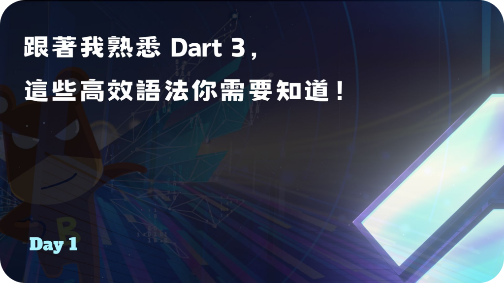
Dart 3 隨著 Flutter 3.10 發布，進行了一次大改版，達成了 100% sound-null safety，代表所有的屬性、變數都要聲明是否為 nullable，它的作用能讓專案的編譯更有效率、速度更快，也能讓專案的穩定性提升，減少不必要的錯誤和崩潰發生。另外也新增了幾種語言特性 Record、Pattern、Class-Modifier 等等，在開發上給予很大的幫助，在許多情境的使用上更簡單而且可讀性高。
本文主要跟大家分享 Dart 3 給予的好處，希望可以幫助大家快速了解它，並且從中受益。所以我在後面準備了很多實際案例，從基本認識、初階到進階使用，分享一些我覺得很棒的神奇用法，讓我們趕快進入正題吧！
Record
Record 是一個匿名且不可變的聚合類型，它可以將多個物件集中在一個物件裡面，一般的使用方式 (doube lat , double lon)，使用小括號包裹來認定。可以將它們存儲在變數、將它放入 List、將它當作 Map 的 Key，或者在 Record 中包含其他 Record，用法上非常豐富。
當我們有了 Record，在某些時候就不需要為了單一流程創建新的 Class 來紀錄資料。例如：位置有經緯度、顏色有RGB數值，都能夠很簡單的透過 Record 幫忙。而我們也能藉此解決 function 需要多個回傳值的需求。馬上來看以下範例：
Example 1
- 第一個範例，
getLocation()比較常見的情景會是回傳經緯度，這裡透過 Record 去處理，並針對需求決定數值是否有自定義名稱，根據可讀性可自行調整，外部透過(double, double)去使用 - 把 Record 當做匿名型別，以這個範例就是擁有兩個命名參數，在賦值的時候也會被要求也給予前置名稱
- Record 可以同時擁有匿名參數與命名參數，匿名參數可以透過編號來存取，按照順序從1開始
// Function
(double Lat, double lon) getLocation(String name) => (25.034092, lon: 121.563956);
// Named-args
({double lat, double lon}) location;
location = (lat: 25.034092, Lon: 121.563956);
// Mixed
var person = ('Yii', isMale: true, '175');
print(person.$1);
print(person.isMale) ;
print(person.$2);
Example 2
Flutter 常見場景，APP 下方需要有底部選單，也就是 BottomNavigationBar，但我們不需要創建一個 BottomNavigationBarItem 類別來紀錄名稱以及 Icon 兩個屬性，可以直接使用 Record 代替。而我們在撰寫 UI code 的時候，可以透過編號存取匿名變數
List<(Widget, String)> items = <(Widget, String)>[
(const Icon(Icons.home), 'Home'),
(const Icon(Icons.search), 'Search'),
(const Icon(Icons.face), 'Profile'),
];
BottomNavigationBar(
items: items
.map
((Widget, String) item) =>
BottomNavigationBarItem(
icon: item.$1,
label: item.$2,
),
)
.toList(),
)
Compare Records
Record 本身的 identity 就是依賴擁有的欄位、匿名以及命名，當兩個 Record 結構一樣時就會是相等的
Example 3
- 我們可以很簡單的寫測試來驗證 Record 是否相同。範例中 a 跟 b 的結構相同所以通過測試，而 c 因為都是匿名參數，所以跟 a 的測試不會通過
- 沒有實作
==operator 的 Object list 進行比對會無法相等
test('Records equality', () {
// 1.
const ({int width, int height}) a = (width: 100, height: 200);
const ({int width, int height}) b = (width: 100, height: 200);
const (int width, int height) c = (100, 200);
expect(a, equals(b)); // Passed
expect(a, equals(c)); // Failed
// 2.
final complex = (1, 'dog', ['cat', 'pig']);
final complex2 = (1, 'dog', ['cat', 'pig']);
expect(complex, equals(complex2)); // Failed
});
Pattern Matching
Pattern Matching 負責檢查 Object 和期望的結構格式是否匹配，符合的話可以存取全部屬性或是部分資料，同時進行了解構，和提高可讀性。實際看範例會更快了解：
Example 4
此範例的需求是存取 Json 中的指令欄位。可以先看到左邊的舊式寫法，我們需要先檢查 json 是否為 Map、長度以及是否有正確的 Key，接著檢查個別欄位的型別，再將 value 拿出來使用。過程中經過重重關卡已經寫了10行 code，不覺得有點累嗎？
我們看看右邊 Dart 3 新寫法，透過 if-case matching 檢查 json 的結構是否符合兩個欄位，且型別是 String 跟 int，而且不是空值，單純這一行代表著很多條件，而當他們都符合後我就能安心拿值使用。這邊使用到了解構，所以可以直接拿其中的變數使用，總共只寫了2行而已
final json = {'name': 'Amy', 'age': 30};
// Old
if (json is Map<String, Object?> &&
json.length == 2 &&
json.containsKey('name') &&
json.containsKey('age')) {
if (json['name'] is String && json['age'] is int) {
final name = json['name'] as String;
final age = json['age'] as int;
print('User $name is $age years old.');
}
}
// New
if (json case {'name': String name, 'age': int age}) {
print('$name is $age years old.');
} else if (json case {'name': 'Amy', 'age': int age}) {
print('Amy is $age years old.');
} else {
print('Error: json is not correct.');
}
Example 5
解構用法，同時進行結構比對，符合的話直接使用，不需要額外再宣告新的變數
final names = [
Person(name: 'Yii', age: 27),
Person(name: 'Andy', age: 30),
Person(name: 'Jay', age: 24),
]
final [yii, andy, jay] = names;
print(yii.toString());
print(andy.toString());
print(jay.toString());
Example 6
更輕量的解構方式，當你想要直接使用原本 Record 裡的命名。解構屬性值，過程中宣告一個與屬性相同名稱的 getter
const position = (x: 0, y: 2);
final (:x, :y) = position;
print('$x, $y');
Switch Expression
更精簡的 switch 檢查，不需要 case 與 return 回傳，簡撰寫條件的同時使用 Pattern Matching，並且能使用 when 進行第二層的條件驗證，最終返回結果，可讀性也直覺。
Example 7
此範例展示了我們可以直接在 UI code 根據某個狀態的變化給予相對應的內容，不需要多層的 if-else，直接使用 switch 來檢查。假設有一個教學頁面，有 5 個步驟可以切換，每個步驟顯示的文字內容都不同。
- 可以看到第三行是
_，通常代表為 else，並且第二個條件為不是最後一頁，這邊是指 2、3 索引 - 最後在使用
_，沒有其他條件，就是 else 本人，這邊是 4 索引也是最後一頁
ElevatedButton(
onPressed: _goNext,
child: Text(
switch (_currentPage) {
0 => 'Start',
1 => 'Next',
_ when _currentPage != _LastPage => 'Next',
_ => 'Confirm',
},
),
)
Example 8
範例中針對狀態都進行忽略，主要是根據第二層的 when 條件檢查，根據不同的情境顯示不一樣的內容，最後為 else 不符合的情況
switch (pageState) {
_ when pageState.isLoading => '載入中..',
_ when pageState.content.isNotEmpty => state.content,
_ => '發生未知錯誤',
}
Example 9
此範例的情境是要取得 List 物件裡的倒數第2個元素，返回指定字串，如果不符合則回傳另一個結果。
- 第一行，使用中括號包裹等於是 List，第一個元素使用 spread operator 表示，在 Dart 代表0個以上的元素
- 第三個使用
_表示，因為沒有要使用，只是為了要確保有最後一個元素 - 第二個為我們需要的元素，給予變數名稱，幫符合結構時可以拿來使用
- 第二行，因為這個情境需要有兩個以上的元素，所以這裡需要 handle 例外，如果是 List 為空或是只有一個元素，就返回另一個字串
- 外面接著使用 result 去做後續處理
List<int> numbers = [1, 2, 3];
final result = switch (numbers) {
[..., final num, _] => 'Number is $num',
[] || [_] => 'Need more numbers',
};
print(result) ;
Class Modifier
從 Dart 3 開始，支援很多類別的修飾符，讓開發者可以精準的定義類別的擴展性，根據不同的 library file 會有不同的限制，對我們有很大的幫助。以下介紹所有修飾符：
baseclass → 只允許繼承interfaceclass → 只允許實作finalclass → 禁止繼承、實作和混合mixinclass → 混合類別。目前一般類別已經不允許當成 mxin
// Failed
class NormalClass {}
class FirstClass with NormalClass {}
// Passed
mixin class MixinClass {}
class SecondClass with MixinClass {}
sealed class→ 密封類別，針對繼承關係的操作 Compiler 會幫忙檢查，當有子類沒有處理的話就會出錯
有效的 modifier 組合與使用方式可以查看官方提供的列表，告訴你每種方式是否可以建構、繼承、實作、混合，或是詳盡編譯檢查

以下表格為互斥和不適合的組合方式：
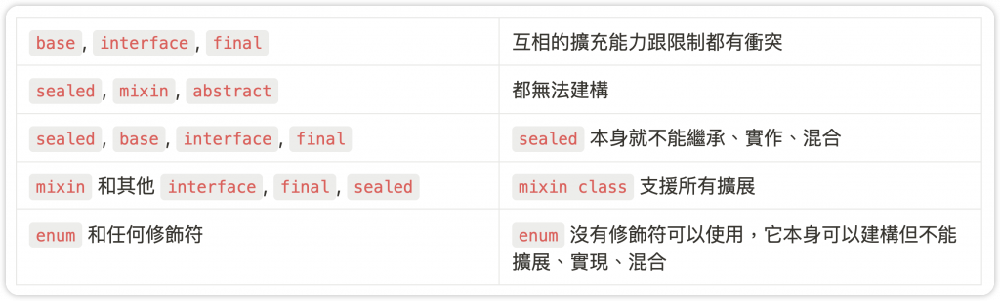
Example 10
此範例使用了 sealed class、final class，和 switch expression 操作，讓大家更有感覺。首先情境是需要進行網路請求，並將回應分為成功與失敗兩個類別，裡面包裝對應的資料。
- Response 類別使用
sealed去定義，Success與Failure繼承 Respose，泛型為我們的目標型別
sealed class Response<T> {}
final class Success<T> extends Response<T> {
final T data;
Success({required this.data});
}
final class Failure<T> extends Response<T> {
final Exception exception;
Failure({required this.exception});
}
getPerson()是我們的請求方法，回傳值為Response<Person>，注意中間部分，請求完之後檢查 statusCode，200的話確認成功，先將 json 解析成 Map，再透過fromJson()取得 Person 物件，最後回傳Success子類。而其他 statusCode 代表失敗，直接返回Failure子類- 另外下面有在提供新的 switch expression 寫法，幫大家複習一下如何在實際場景中使用
Future<Response<Person>> getPerson({required int id}) async {
try {
final uri = Uri.parse('http://io.com/persons/' + id.toString());
final response = await http.get(uri);
// 1. Normal switch
switch (response.statusCode) {
case 200:
final data = json.decode(response.body);
return Success(data: Person.fromJson(data));
default:
return Failure(exception: Exception(response.reasonPhrase));
}
// 2. Switch expression
final result = switch (response.statusCode) {
200 => Success(data: Person.fromJson(json.decode(response.body))),
_ => Failure<Person>(exception: Exception(response.reasonPhrase)),
};
return result;
} on Exception catch (e) {
return Failure(exception: e);
}
}
- 請求完在外部取得 Response 物件，但是我們需要檢查是 Success 還是 Failure，一樣透過 switch expression 進行 pattern matching，如果為成功就可以使用 person 物件並返回字串，失敗就回傳錯誤訊息，最後將結果印出來
final response = await getPerson(id: 1);
final result = switch (response) {
Success(data: final person) => person.toString(),
Failure(exception: final exception) => exception.toString(),
}
print(result);
到這裡我們簡單說明了 Dart 3 有的新東西 Record、Pattern Matching、 Class Modifier 等等用法，並且附上 10 個範例，大家應該有了解他們且迫不及待想再自己的專案上開發了。如果你覺得意猶未盡，可以閱讀我的下一篇 Dart 3 文章，會跟大家分享更多的實際案例，讓我們一起享受其中吧！
另外，如果你想看影片聽聲音學習的話，可以觀看我在 Google IO Extended 上的分享，裡面有講解到以上範例，也歡迎有時間的話將影片看完，你會更了解 Flutter 以及 Dart。以下是影片連結：
Google IO Extended 2023 - What's good in Flutter 3.10 and Dart 3?

延伸閱讀
Day 2: 使用 Dart 3 改善我們的開發習慣，更多範例與技巧分享！
Reference
- https://github.com/dart-lang/language/tree/main/accepted/3.0
- https://dart.dev/language/modifier-reference
- https://medium.com/dartlang/a1f4b3a7cdda
- https://www.aloisdeniel.com/blog/dart-pattern-matching
- Pascal Welsch - Exploring Records and Patterns
Day 2: 使用 Dart 3 改善我們的開發習慣，更多範例與技巧分享！
- 發布時間：2023-09-17 19:49:43
- 原文連結：https://ithelp.ithome.com.tw/articles/10320379
- 系列標記：探索 Flutter 由裡到外，三十天帶你前往進階系列 第 2 篇

當 Dart 3 添加 Record 和 Pattern 等等強大的功能後，讓它成為了很有吸引力的語言，非常值得我們花時間與它相處，輕鬆、快速地在專案寫出好的代碼。
以下分享了 9 個範例，希望幫助你對 Dart 有更深一層的了解，建議邊看邊使用 IDE 練習，將結果印出來，相信你會更有感覺更有記憶，每一刻都很重要，我們不要浪費了，跟著我往下閱讀吧：
Example 1
有了 Dart 3 之後，在使用 Pattern Matching 時同時很容易使用到 Destructure 解構，透過 spread operator ... 輕鬆幫我們處理 List 操作，寫起來快速又簡單。以下方的案例來看，存取第一個和最後一個元素，中間我們直接忽略。
以這個情境來看，需要確保元素有兩個以上才不會出錯，因為 first 與 last 變數不是空值，如果只有一個元素的話會直接報錯。
final [first, ..., last] = [2, 4, 6, 8, 10];
debugPrint('$first, $last'); // 2, 10
final [first, ..., last] = [2, 4];
debugPrint('$first, $last'); // 2, 4
final [first, ..., last] = [2];
debugPrint('$first, $last'); // throw exception
Example 2
此範例展示 Pattern Matching 的一個技巧 if-case matching，讓我們在針對 nullable 變數檢查的時候能更簡潔快速，也稱為 Null Gauard，編譯器能確保變數不在 null 這個範圍。不僅在撰寫商業邏輯上還有 UI code 的層面都很好使用。以下列出原有寫法以及新的方式：
- 舊有寫法，當變數不在同一個 block，而我們要確保它不是空值，就會需要使用
if來檢查，它的缺點就是即便已經確認不為 null，但裡面在存取變數的時候還是要給預設值 - 新的寫法，使用 if-case matching，後方可以決定變數是否為空，而且還可以自定義變數名稱，一行即可完成驗證，使用起來簡單俐落
- 第三個部分，可以允許變數為 null 的範例，根據實際需求去撰寫
int? age;
void main() {
// Old
if (age != null) {
printAge(age ?? 0);
}
// New, check value is not nullable.
if (age case final int age) {
printAge(age);
}
// New, allow nullable value
if (age case final int? age) {
printAge(age ?? 0);
}
}
void printAge(int age) {
debugPrint('Age is $age.');
}
Example 3
此範例使用了 Record、Patter Matching、Switch Expression，搭配 enum 進行條件檢查，當我們有多個變數需要進行判斷的時候，就不需要再使用多層的 if-else 來處理，程式碼會很腫脹、冗長，使用 Record 包裝多個變數，裡面只需列出你會遇到的幾種條件，最後其他情境在使用 _ 去表示就好，寫起來簡潔、可讀性高。
enum AccountType {
vip,
member,
guest,
}
void main() {
bool isAuthenticated = true;
bool isPaid = true;
final type = switch ((isAuthenticated, isPaid)) {
(true, true) => AccountType.vip,
(true, false) => AccountType.member,
(_, _) => AccountType.guest,
};
debugPrint("This account is ${type.name}");
}
Example 4
此範例使用 typedef 來建立方便的 Record 快捷類別，有時候我們只需要簡單的類別來保存一些屬性，並且可以根據屬性來進行物件比對，具有 equatable 功能。使用 typedef 搭配 Record 實現一種仿類別的快捷方法。
額外要提醒大家，Record 本身不是類別，只要是欄位與表示方式相同，就會被當成同一個 type
typedef Student = ({String name, int number});
extension StudentExtension on Student {
void sayHi() {
debugPrint('Hi, I am ${this.name}. No.$number');
}
}
void main() {
const Student student = (name: 'Yii', number: 1);
student.sayHi();
}
Example 5
Class Equality with Record，實現跟 equatable 套件一樣的功能，用來比對類別物件是否相同。這件無聊的事情透過 Dart 3 來改善
Old
在 operator 方法內有幾個屬性就要對幾個屬性進行比對，會寫的很冗長，當然 hashCode 也是一樣
@override
bool operator ==(covariant Location other) {
if (identical(this, other)) return true;
return other.country == country && other.id == id;
}
@override
int get hashCode => Object.hashAll([country, id]);
New
使用 Record 整個開發氛圍就不一樣了XD，透過一個 _equality() 方法幫我們處理比較的部分，這也是 Record 的特性，而我們在 operator 以及 hashCode 的撰寫就能以很輕鬆的方式來完成，有效提升簡潔性
class Student {
Student({
required this.name,
required this.number,
});
final String name;
final int number;
(String, int) _equality() => (name, number);
@override
bool operator ==(covariant Student other) {
if (identical(this, other)) return true;
return other._equality() == _equality();
}
@override
int get hashCode => _equality().hashCode;
}
Example 6
在某些時候需要讀取一個 Map，從中解析並存取一些資料。以舊的寫法來看，需要進行多層的型別以及空值檢查，再將指定欄位的內容拿出來。這寫法應該沒有人會喜歡吧，看得頭都暈了
Old
final dynamic json = {
'data': [
{'name': 'Andyy'},
{'name': 'Anby'},
{'name': 'Ancy'},
{'name': 'Andy'},
]
};
bool hasAndy = false;
if (json.containsKey('data')) {
final data = json['data'];
if (data is List) {
for (final item in data) {
if (item is Map) {
if (item.containsKey('name') && item['name'] == 'Andy') {
hasAndy = true;
}
}
}
}
}
print(hasAndy); // true
New
使用 Dart 3 改善，其中使用了 Switch Expression、Pattern Matching、Destructure，以輕鬆的方式取解析 Map，整體都變得更有可讀性。
final hasAndy = switch (json) {
{'data': List items} => items.any((element) => switch (element) {
{'name': 'Andy'} => true,
_ => false,
}),
_ => false,
};
print(hasAndy); // true
Example 7
此範例要解析 array 取得顏色的 RGB 數值。首先我們需要先檢查長度，在檢查內容物是否為字串不為 null，最後存取他們
Old
final rgb = [255, 255, 255];
if (rgb.length == 3) {
final red = rgb[0];
final green = rgb[1];
final blue = rgb[2];
if (red is int && green is int && blue is int) {
debugPrint('$red, $green, $blue');
}
}
New
簡潔寫法只需要用到 if-case matching，接著進行解構，符合條件就能安心存取資料了。真是寫起來很舒服
final rgb = [255, 255, 255];
if (rgb case [int red, int green, int blue]) {
debugPrint('$red, $green, $blue');
}
Example 8
此範例為運動功能的情境，有個 Exercise 物件，需要從它的屬性來判斷是單組還是超級組，取出對應的屬性來使用，最後返回元件。這裡使用了 Switch Expression、Pattern Matching 和 Destructure 來實作
第一個方式，前連兩個條件因為有使用到 when 執行第二層檢查，代表 exercise 物件不為 null，接著透過第二層確認 singleSetAction 和 superSet 是否為 null，正確的話就返回指定元件。在這個情境下其中一個會有值，一個會是空值。
return switch (exercise) {
_ when exercise.singleSetAction != null => _SingleSetItem(data: exercise.singleSetAction!),
_ when exercise.superSet != null => _SuperSetItem(data: exercise.superSet!),
_ => const SizedBox.shrink(),
};
第二個更簡潔的方式，省略 when 用法，直接進行 Exercise 解構，其中針對欄位給予不為 null 的變數，符合的話就會返回元件。一樣先檢查 singleSetAction 再檢查 superSet，有解構後，代碼撰寫上更快速了，不覺得 Dart 很聰明嗎？
return switch (exercise) {
Exercise(singleSetAction: final ExerciseAction singleSetAction) => _SingleSetItem(data: singleSetAction),
Exercise(superSet: final SuperSet superSet) => _SuperSetItem(data: superSet),
_ => const SizedBox.shrink(),
};
Example 9
此範例的寫法在 Dart 3 之前就有了，只不過很少人知道。範例告訴大家其實不為空的變數也可以不用在宣告時給予 late 或是預設值，Dart 會自動檢查過程中是否每個情境都有處理，而不會讓變數違反原本的行為。以下面的程式碼來說，在變數下方使用了 try-catch，進入 try 的時候我們進行賦值，而有錯誤的時候我們再丟出新的例外，所以後面在使用 price 變數的時候不會出錯，因為 Dart 知道情境上符合預期， Compiler 已經給予保證。
兩種情況可以這樣使用：
- try 和 catch 都進行賦值
- try 賦值 catch 丟出例外，不讓程式繼續往下進行
int price;
try {
price = 20;
} catch (error) {
// 1.
price = -1;
// 2.
throw Exception(error);
}
debugPrint(price.toString());
針對 if-else 情境也可以這樣使用，假設 true 跟 false 的情境都有賦值或是有丟出例外一樣能編譯正常，Dart 已經知道不會有問題，所以變數可以不需要 late 和預設值
int getPrice(bool canKnowPrice) {
int price;
if (canKnowPrice) {
price = 20;
} else {
// 1.
price = -1;
// 2.
throw Exception('Something wrong.');
}
return price;
}
以上的用法跟
late用法差異就是，假設我們使用late來宣告 price，它代表我們自己保證變數一定會初始化和賦值，所以編譯器不會幫忙檢查，所以這時候如果沒有寫測試來確保沒問題，你的程式就有可能報錯，APP 可能會崩潰。
以上例子都是從日常開發中會遇到的情境，實際上 Dart 3 淺力無窮，只怕你駕馭不了它。我們唯有透過日常的練習去熟悉它，強化自己的觀念意識，慢慢就能寫出高品質的程式碼。也建議大家多多閱讀 Dart 官方網站以及 Github repo，了解新用法來改善自己和公司的專案！
延伸閱讀
相關資源
- https://dart.dev/language/patterns
- https://dart.dev/language/records
- https://dart.dev/language/branches
- https://twitter.com/_eseidel/status/1692031211177476435
- https://www.youtube.com/watch?v=j3fzeDpd2ts&t=45s&ab_channel=RobertBrunhage
- https://www.aloisdeniel.com/blog/dart-pattern-matching
Day 3: 最熟悉的朋友 Flutter Widget，你會用但真的了解它嗎？
- 發布時間：2023-09-18 22:01:58
- 原文連結：https://ithelp.ithome.com.tw/articles/10321643
- 系列標記：探索 Flutter 由裡到外，三十天帶你前往進階系列 第 3 篇

所有 Flutter 開發者從 Widget 開始，通過嵌套的方式來完成聲明式 UI，可以讓我們輕易實現腦中的畫面與效果，大家一定跟它非常熟悉吧。但它除了是畫面上的一個元素外，大家是否了解它的核心概念，它的特性、能力、如何刷新、在什麼情況下對整體性能最好，當深入了解它後我們就能更輕鬆的去建置 UI，APP 的品質也能更完整。
以下整理了有關 Widget 的幾個重點角色與說明，我們一起來認識它吧！
Widget

- Widget 顧名思義就是元件，也是畫面的一部分，實際上是一個不可變的配置、描述。描述一個 UI 元素的配置，就是 Widget 接收的參數。例如對於 Text 來講，文字內容、顏色、對齊方式、風格樣式都是它的配置參數
- 創建 Widget 時同時會創建一個對應的 Element，接著 Widget 會被
inflate()到 Element，由 Element 控制，管理生命週期。當 Widget 發生變化，新舊 Widget 會透過canUpdate()進行比較，主要觀察runtimeType以及key，由 Element 決定更新或是重建 - Widget Class 上的註解
@immutable，代表是不可變的實體，屬性都為 final。如果需要 mutable 則會使用 StatefulWidget Key→ 設置 LocalKey 與 GlobalKey。決定是否在下一次 build 的時候使用舊的 Element 與 RenderObjectcreateElement()→ 在創建 Widget 時，會先使用此方法生成對應節點的 Element，Element 為元件的核心、管理者。在 Flutter 裡 Element 有幾種，包含 StatelessElement、StatefulElement、InheritedElement、RenderObjectElementcanUpdate()→ 靜態方法，當兩個元件刷新時，決定是否使用舊 Widget 對應的 Element 更新配置，只要runtimeType和key同時相等時就會更新，否則就會銷毀並創建新的 Element_debugConcreteSubtype()→ 在開發時會使用，當進行 hot reload 會導致 Element 執行updateChild()，過程中用來辨別 Widget 類型
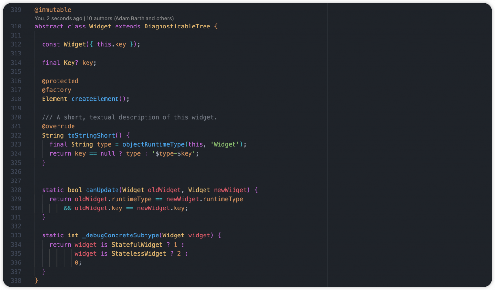
StatelessWidget
- 不需要狀態的元件，創建之後就不會再更改外觀，適合不需要維護狀態的場景去使用
- 核心為
StatelessElement， 由 overridecreateElement()創建，也因為是 ComponentElement 所以不用創建 RenderObject - 生命週期相當簡單，初始化到
build()渲染 - 相關元件：Text、Container


StatefulWidget
- 有狀態的元件，適合需要保存、更新狀態的場景
- 與 StatelessWidget 相同， 由
createElement()創建StatefulElement，管理 Widget 以及 State。也因為是 ComponentElement 所以不用創建 RenderObject - 在初始化時必須要在
createState()提供一個 State 物件，通常會與元件名稱相同，後綴加上 State，讓它幫忙紀錄狀態。State本身會保持與context永久性的關聯，而 context 實際上就是 Element - 一個 StatefulWidget 對應一個 State 與一個 Element，State 與 Element 實體不會被多個元件同時使用
- 相關元件：MaterialApp、Image

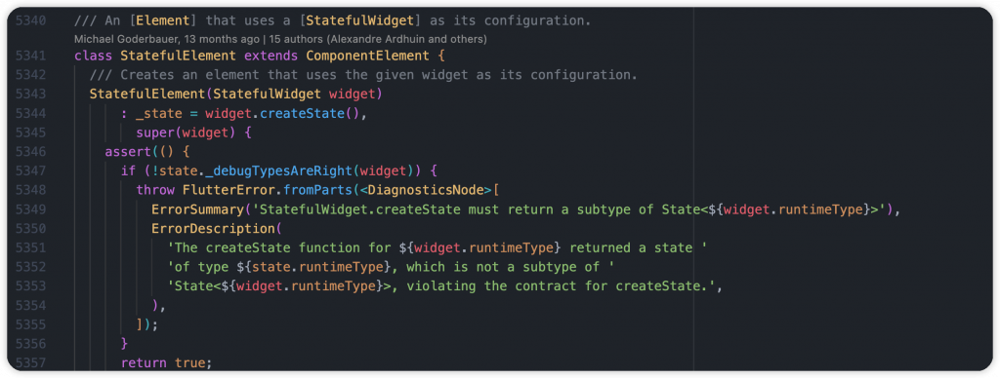
State
- 掌握元件需要的狀態，當狀態更新時可以使用
setState()方法進行刷新，會再次執行最重要的build()方法，讓新的 Widget Tree 可以根據新的狀態給予不同的效果呈現 - 當 Parent 節點刷新時，當前 State 會透過 Widget 的
canUpdate()檢查新舊元件的 runtimeType 和 key，相同時會使用新配置更新原本的 Element 配置，並觸發didUpdateWidget()方法，參數為舊元件的配置，可以進行一些處理 - State 相關操作都由 Element 掌控
- 生命週期，以下提供簡易說明
createState()→ 創建 State。此時的狀態為 createdinitState()→ 初始化 StatedidChangeDependencies()→ 依賴的數據、狀態有更新。此時的狀態為 initializeddidUpdateWidget()→ 新舊元件更新、替換的時候reassemble()→ 執行 hot reloadbuild()→ 建立 Widget Tree。此時的狀態為 readydeactivate()→ 停止活躍，當被移出 Widget Tree 的時候dispose()→ 銷毀 Widget、State 和 Element，釋放資源。此時的狀態為 defunct
詳細的生命週期解說可以閱讀另一篇文章 (等待發布)

setState()
- 基礎認知就是觸發元件刷新。告訴 Flutter Framework 有狀態改變了需要執行 rebuild，根據狀態呈現不同內容
- 背後主要透過 Element 觸發
markNeedsBuild()，標記 Widget 需要更新，並將_dirty屬性設置為 true，代表待會進行處理 - 需要注意 callback 不能是 async 非同步操作，因為整個 Rendering pipeline 是同步進行，需確保即時與高效能，否則會出錯
如果想要更深入的了解
setState()，可以閱讀此篇文章 (等待發布)
為什麼 Flutter 要將 StatefulWidget 和 State 分開？
- 一切為了高效。只要配置、屬性更新， StatefulWidget 就會被丟棄並重新創建，它實際上只是一個 Element 掌握的外觀配置，消耗成本很低。最重要的是 State 和 Element，需確保兩者能持續被使用，不要被銷毀
State會持續存在，由於不會在每次 StatefulWidget 重建時都被丟棄，避免了昂貴的成本消耗，可以不斷地透過重建Widget以響應新的配置並保持狀態、效果可以連貫，這也是 Flutter 動畫存在的原因
BuildContext
- BuildContext 本身是一個抽象介面，對於 Widget 來說它實際上是
Element，能避免直接對 Element 進行操作，只暴露開發需要的 API build()方法的BuildContext參數，表示元件在 Widget Tree、Element Tree 中的上下文、位置，能進行樹上操作的一個核心，可以直接存取樹上的資料
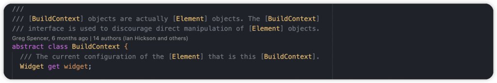

從 StatelessElement 來看，在 build() 執行時，使用 StatelessWidget-build()，並將自己 this 當參數給予，化身為 Widget 裡的 BuildContext。

從 StatefulElement 來看，在 build() 執行時，使用 State-build()，並將自己 this 當參數給予，化身為 Widget 裡的 BuildContext。

by Flutter
當我們在 StatefulWidget 使用 context 時，它實際上就是檢查 _element 屬性是否為 null，並進行回傳。在存取的情況下必須確保 context 有綁定到 Element Tree 樹上，才能讓相關操作正常運行。

mounted
- 一個布林值 getter，代表 Widget、State 與 Element 是否有連結並在樹上了，這時候才可以執行
setState() - 最好的習慣是在執行
setState()方法進行刷新時，可以先透過mounted檢查是否 State 和 Element 在樹上，因為過程會需要 Element 執行樹上操作，避免當下處在和dispose()階段。實際上就是確認 Element 是否為空值
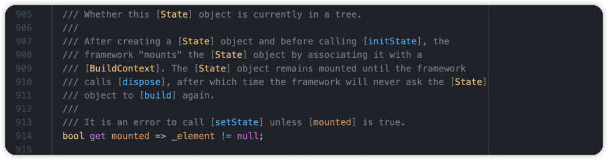
// StatelessWidget usage
context.mounted
// StatefulWidget usage
mounted
在另一篇文章我們有提到了 Synchronous BuildContexts 觀念，基本上在處理任何的非同步操作後，如果要存取 context，都必須先使用 mounted 確認樹上狀態，否則可能會出錯哦。
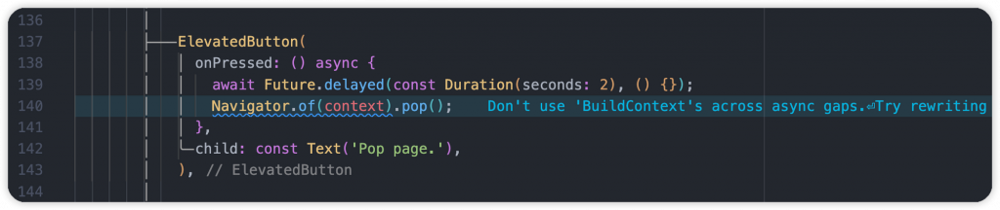
詳細說明可閱讀此篇文章 (等待發布)
findAncestorWidgetOfExactType()
- 允許從當前元件開始向上遍歷 Widget Tree，查找父級元件的方法
- 使用前需確保 context 在樹上的位置，否則會找不到東西。最簡易的方式是使用 Builder 進行子原件包裝
實際範例，當我們使用 findAncestorWidgetOfExactType() 時有可能會找不到實際的元件，有可能父節點沒有提供，會是 nullable 變數，這時候就可以使用 Dart 3 提供的 if-case matching 來處理，方便我們存取資料。
class DemoPage extends StatelessWidget {
@override
Widget build(BuildContext context) {
return Scaffold(
appBar: AppBar(
backgroundColor: Theme.of(context).colorScheme.inversePrimary,
title: Text(widget.title),
),
body: Center(
child: Builder(
builder: (context) {
final scaffold = context.findAncestorWidgetOfExactType<Scaffold>();
if (scaffold case final Scaffold scaffold) {
return ColoredBox(
color: scaffold.backgroundColor ?? Colors.transparent,
child: const Text('Hello'),
);
}
return const SizedBox.shrink();
},
),
),
);
}
}
提醒：建議先熟悉 BuildContext 與 Element 兩者的關係，再使用 findXXX 和 dependXXX 相關 API 會比較合適，否則盡量減少使用，避免發生錯誤時不知道原因。
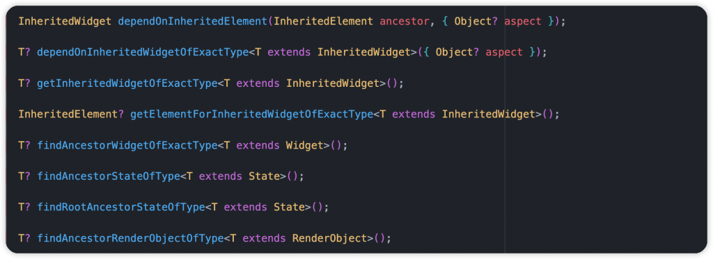
本文主要跟大家分享什麼是最根本的 Widget，以及常見的 StatelessWidget、StatefulWidget、State、BuildContext，當了解他們的能力以及關係後，在開發時就能更有感覺。當元件 rebuild 的時候，可以很清楚知道原因、過程，以及是否有效率的在處理這些任務。先有個基本概念，也不需要死記它們，多看多了解，自然就能越來越熟悉。
另外， InheritedWidget 以及 RenderObjectWidget 沒有在這裡提到，細節很多會造成篇幅太長，有需要的朋友可以留言或讓我知道，我會再額外撰寫其他文章來介紹它們。
延伸閱讀
Day 4: Flutter 高效核心，了解 Element 生命週期與使用
Day 4: Flutter 高效核心，了解 Element 生命週期與使用
- 發布時間：2023-09-19 18:47:02
- 原文連結：https://ithelp.ithome.com.tw/articles/10322382
- 系列標記：探索 Flutter 由裡到外，三十天帶你前往進階系列 第 4 篇

相信大家對於 Widget 的接觸已經很熟悉了，那 Widget 是誰在管理的？這時候要幫忙請出背後的主角了，也就是 Element，身為 Flutter 高效的核心支柱，它管理著 Widget 和 RenderObject，包含 Pipeline 的 build、layout、paint 幾個工作階段，所以它非常重要。
本文主要說明 Element 身份、生命週期，以及正確的使用方式，希望可以幫大家建立良好的觀念，有效提升開發品質。那我們就不多話了，直接往下開始吧！
- Element 身為三棵樹的核心，擁有 Widget 和 RenderObject 的實體，是兩者的管理者與溝通管道。掌管 Widget 的生命週期、管理 State 狀態的儲存與更新、操控 RenderObject 佈局與繪製
- 跟 Widget 有著一對一的對應關係，當 Widget 創建時相對應就會有一個 Element 被創建，Widget 本身是 Element 的配置，而 Element 實際上就是 Widget 裡的
BuildContext - Element 創建起來很昂貴，通常建議頻繁更新並持續使用它，盡量避免銷毀和重建。除非
runtimeType和Key不同，當Widget-canUpdate()返回 false，這時候就會重建
與 Widget 的初始互動。以 StatelessWidget 為例，在創建 Element 的同時，會將自己交給 Element 管理。實際上 Widget 就是一個描述配置。


與 RenderObject 的初始互動。以 ErrorWidget 為例，它就是我們在開發時遇到錯誤的紅色畫面。本身沒有 child 所以使用 LeafRenderObjectWidget，本身的 RenderObject 為 RenderErrorBox，那它什麼在什麼時候被創建呢？在 RenderObjectElement 綁到樹上的時候，會透過 Widget 使用 createRenderObject() 產生 原本設置好的 RenderObject，也就是 RenderErrorBox

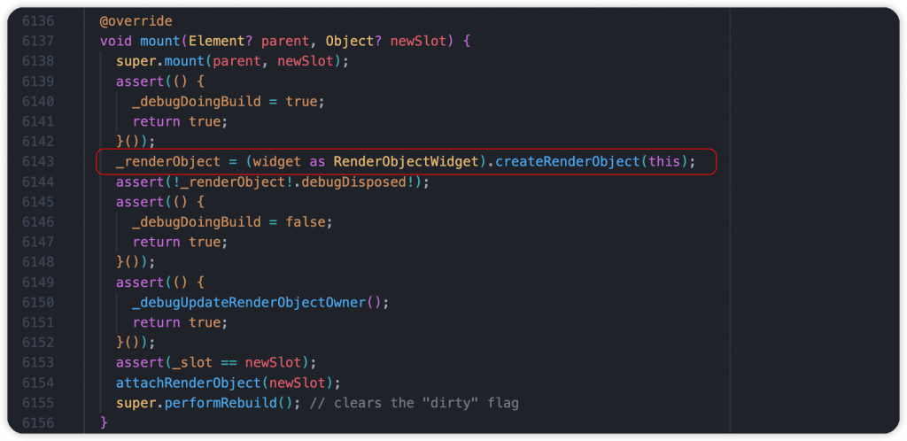
Element 的特殊 slot 屬性，主要給 Parent 節點用來辨別 child 在 List 的位置。當使用 Element-updateChild() 時，過程中會進行 Element-inflateWidget()，參數為子元件跟它的 slot 所屬位置。
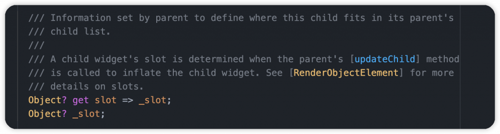
而前面我們有提到 Element 實際上是 BuildContext，可以從 StatelessElement 和 StatefulElement 來確認 。


Element 本身實作了 BuildContext 。
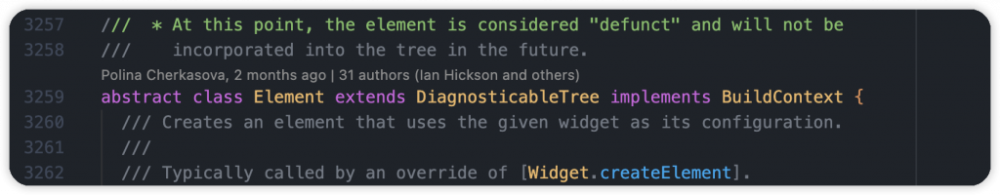
Element 生命週期
1. mount()
當 Element 第一次添加到樹時，進行狀態的初始化。狀態從預設的 initial 轉為 active。
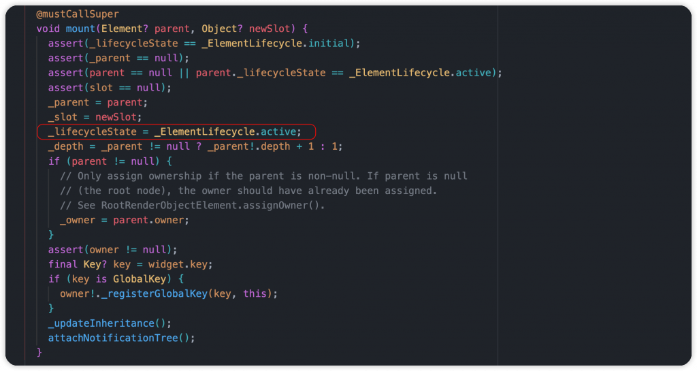
以 StatefulWidget 的 ComponentElement 為例，一開始都會先呼叫父類的基礎操作，在進行個別處理。會先確保 _lifecycleState 為 active 才進行初始 build。

StatefulElement 覆寫了_firstBuild()，過程中會陸續檢查和變更 State 的生命週期狀態，接著執行 didChangeDependencies()，然後透過父類的 _firstBuild() 觸發 ComponentElement-performRebuild() 和 Element-performRebuild()，最終執行 State 裡的 build()，將 Widget Tree 創建出來。
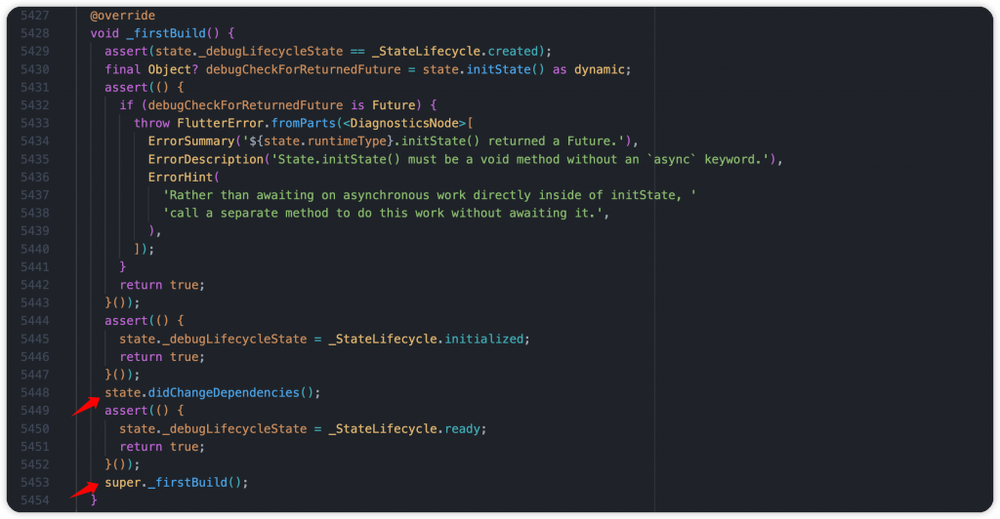


2. activate()
激活之前經過 deactivate() 釋放的元素，它們的特點是擁有 GlobalKey，狀態從 inactive 轉為 active。重新分配舊有的 State 和 Element 給新的 StatefulWidget。
從 StatefulElement 來看，一開始執行 Element-activate()，當中會檢查狀態是否為 inactive，將它更新成 active 狀態。最後安排此 Element 和 Widget 進行 rebuild。

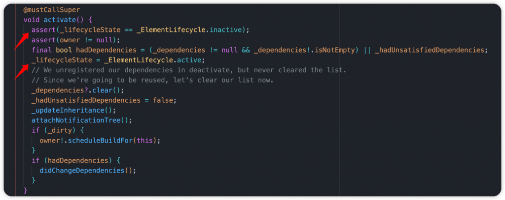
在開發時，我們也可以在 State 裡覆寫 activate()，但通常不太需要用到。
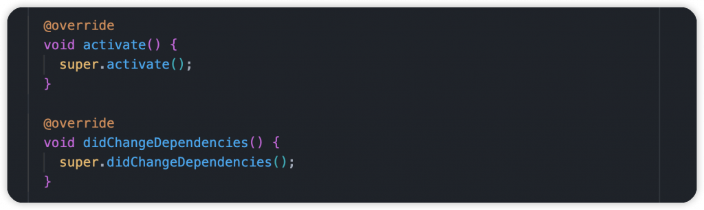
3. update()
透過新的元件更新 Element 配置，這也是最理想的操作，盡可能地讓 Element 使用 update()，實現最小消耗。
從 StatefulElement 來看，當使用新的元件更新時，會先執行父類別 Element-update()，檢查實體不同並且在透過 Widget 的 canUpdate() 檢查 runtimeType 和 key，確保都相同後才會更新配置。
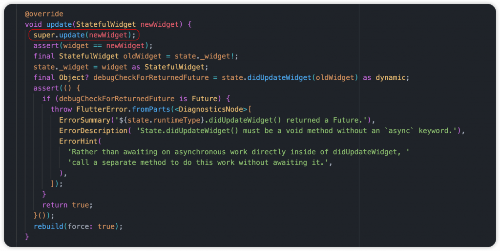
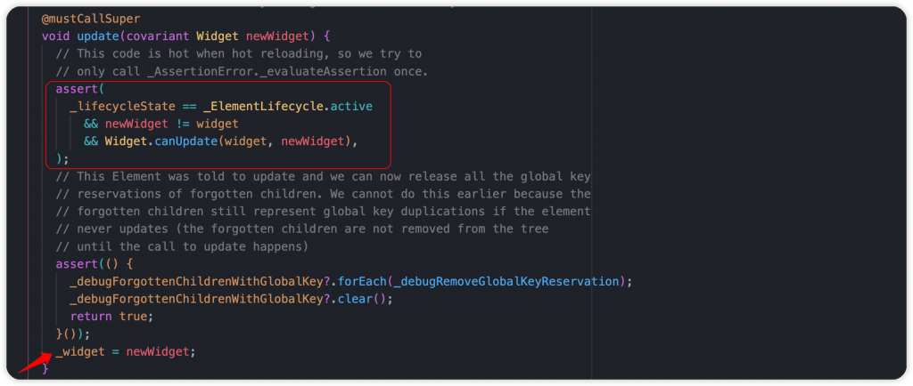
接著更新 State 的 _widget 屬性，並執行 didUpdateWidget(oldWidget) 參數為舊的元件配置，我們在開發時就能透過此方法進行一些狀態操作或是資源釋放。最後執行 rebuild()
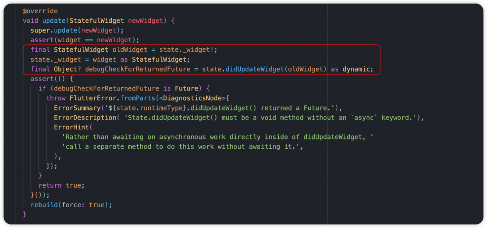
4. deactivate()
當 Element 從 Element Tree 中移除或移動時觸發，狀態從 active 轉為 inactive。可能 Widget 的 runtimeType 或 key 發生了變化，當其中一個條件不符合時，Element 會從樹上被移除，最終被銷毀是放掉。
不過 Element 還有機會被再次使用，可以經由 Tree Surgery 實現。當元件本身設置 GlobalKey 時，如果元件替換階層或是移動到其他 Widget Tree，Element 和 State 可以再次被激活。在當前幀觸發 activate() 和 update()，最終回歸 active 狀態。如果沒有被 reactivated 就會被銷毀。
從 StatefulElement 來看，首先會觸發 State 的 deactivate()，跟 activate() 一樣我們可以做一些處理。

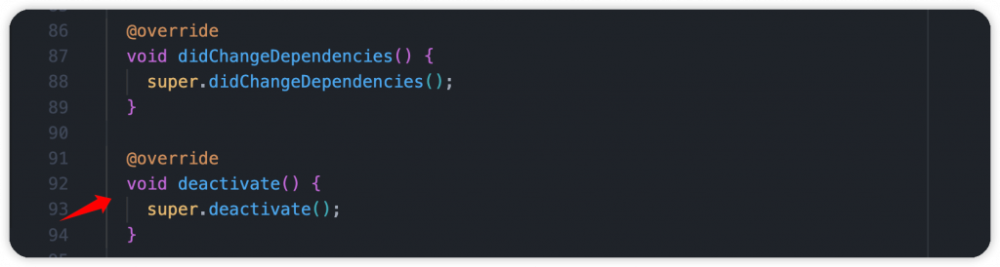
接著呼叫父類 Element-deactivate()，確保為 active 狀態，最終更新成 inactive。

5. unmount()
如果 Element 在當前 frame 期間沒有被重新激活，它將從 Element Tree 解綁並且不能再重複使用，狀態從 inactive 轉為 defunct。
從 StatefulElement 來看，會先執行父類的 unmount()，檢查是否已經 deactivate 並且狀態為 inactive，接著針對有設置 GlobalKey 的 Element 進行釋放，不需要再保存在清單裡，最終將 _lifecycleState 更新成 defunct。
接著呼叫 State 的 dispose()，也是我們很熟悉的方法，負責用來釋放資源。最後將 State 實體和 element 物件都更新成 null，完整地避免記憶體洩漏。這時候 State 也無法在執行 build 了
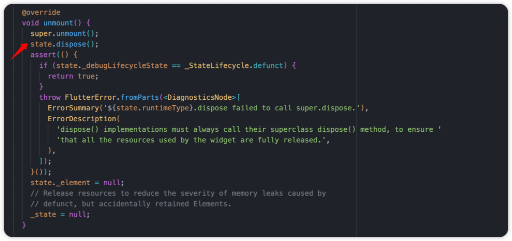
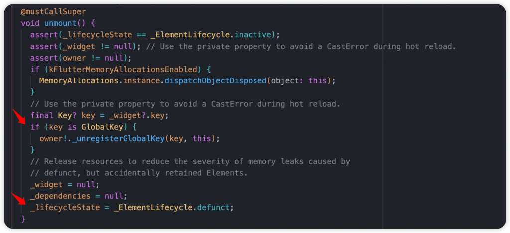
BuildContext Access Correctly
此範例有一個 HomePage，按鈕打開 BottomSheet 進行顯示，透過 Scaffold.of(context) 取得 ScaffoldState(藉此可以知道 Scaffold 本身是一個 StatefulWidget)，使用 showBottomSheet() 開啟，但是這時候會出現無法存取 Scaffold 的相關訊息。
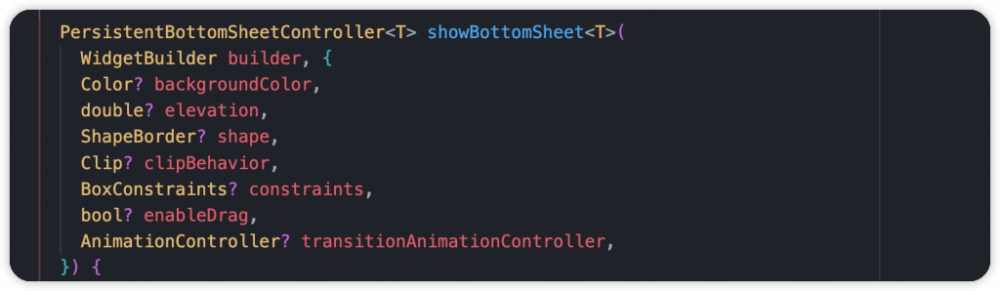
class HomePage extends StatelessWidget {
@override
Widget build(BuildContext context) {
return Scaffold(
body: TextButton(
onPressed: () {
Scaffold.of(context).showBottomSheet(
(context) => const SizedBox(
height: 200,
child: Text('Dash!'),
),
);
},
child: const Text('Hi!'),
),
);
}
}
錯誤訊息：Scaffold.of() called with a context that does not contain a Scaffold.
======== Exception caught by gesture ===============================================================
The following assertion was thrown while handling a gesture:
Scaffold.of() called with a context that does not contain a Scaffold.
由訊息我們可以得知 context 從樹上找不到 ScaffoldState，代表沒有 Scaffold 元件，那是問什麼呢，範例上不是有嗎？我們進到 static of() 方法來一探究竟，其中透過 context 使用了 findAncestorStateOfType() 從祖先、父節點查找 ScaffoldState，找到就直接回傳，否則會丟出例外，也就是我們看到的訊息。

從範例來看，我們使用 Scaffold.of(context) 的 context 是來自於上層，而不是在 Scaffold 裡面的節點，所以往上找當然就找不到。如果 HomePage 第一頁，通常上層就會是根元件的 MaterialApp，那層還沒有使用任何的 Scaffold 元件，所以才會導致錯誤。
正確方式
1. 包裹 Builder
在元件外層包裹 Builder 元件，對於該層次提供一個 context，創建一個樹上節點，讓我們可以存取到之前的祖先、父節點。
@override
Widget build(BuildContext context) {
return Scaffold(
body: Builder(
builder: (context) {
return TextButton(
onPressed: () {
Scaffold.of(context).showBottomSheet(
(context) => const SizedBox(
height: 200,
child: Text('Dash!'),
),
);
},
child: const Text('Hi!'),
);
}
),
);
}
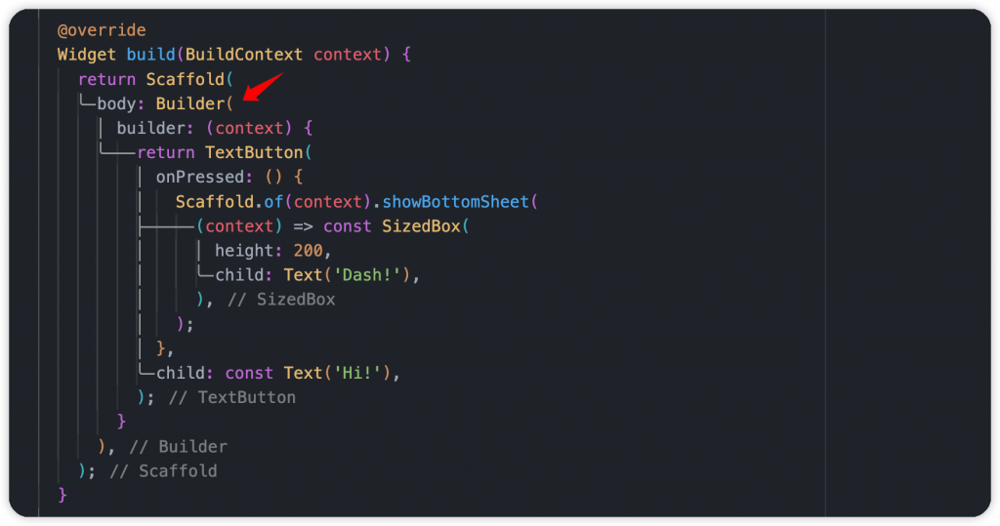
2. 自定義元件 HomePageButton
自定義新的 Widget，可能是 StatelessWidget 或 StatefulWidget，透過 build(context) 提供的 context 來使用。
@override
Widget build(BuildContext context) {
return const Scaffold(
body: HomePageButton(),
);
}
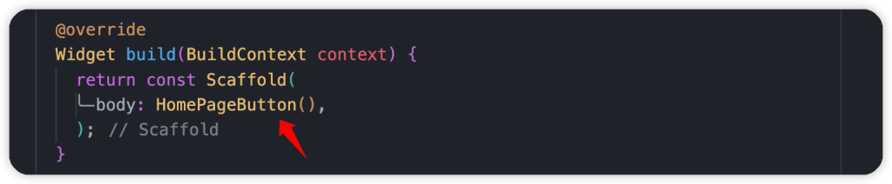
提醒：在開發 UI 時，需確保
context的位置和來源，準確使用而不要越層級存取

by Daria Orlova
個人建議 Flutter 開發者都能了解 BuildContext 和 Element，盡可能地熟悉它，知道相關運作原理以及生命週期。它們能在狀態管理的主題上給予非常大的幫助，當發生錯誤時，我們能在第一時間有個概念與想法，才不會發呆不知道如何是好，可以更快且有效地解決問題。
Element 是 Flutter 高效的原因，請盡可能與它保持友善互動。相信很多人跟我一樣，都是看了很多文章、學習每位開發者的理解，再搭配 source code 閱讀，才能越來越熟悉它。總之，投資在這上面是很值得的一件事，當我們能正確使用它的時候，實現高效且高品質的產品就不會很困難了。
延伸閱讀
Day 3: 最熟悉的朋友 Flutter Widget，你會用但真的了解它嗎？
Day 5: Flutter 的 StatefulWidget 和 State 生命週期，先熟悉它們再開發吧！
- 發布時間：2023-09-20 20:24:14
- 原文連結：https://ithelp.ithome.com.tw/articles/10321406
- 系列標記：探索 Flutter 由裡到外，三十天帶你前往進階系列 第 5 篇

生命週期在大部分的軟體開發中都會了解這個名詞，簡單來說就是某個東西從出現到消失，中間的每個階段都會有一個對應的狀態，那為什麼要有狀態？這些狀態都是為了讓開發者在特定情境下去針對應用程式、物件、UI 或是進行合適的操作，例如：在一開始的時候，我們需要將某些服務啟動或是給予屬性初始值，準備待會使用; 在初始化後的第二階段，可以開始進行資料的操作，可能是請求資料，也可能是數據處理; 最後在被銷毀，準備死亡的階段，可以進行資源的釋放，防止記憶體洩漏，讓整體效能提升。開發者在對的時間做對的事，告訴 APP 該怎麼運行和顯示，確保使用者擁有好的體驗，以及 APP 能流暢的呈現，這些都是我們的職責。所以生命週期對於 Mobile 開發來說非常重要，是不可忽視的一環。
大家都知道 Flutter 中有 StatelessWidget 和 StatefulWidget，而 StatefulWidget 因為需要長期保持狀態，會需要透過 State 去維護，它本身是託管在 Element 底下，也因為成本高的關係不適合重複創建。Flutter Framework 讓 Element 以及 State 可以在不同情境下觸發一些介面，讓我們能即時針對當前的 Widget 或是資源去進行處理，而在 State 中就有比較多環節我們需要注意，以下就跟著我來了解它們。
StatefulWidget Lifecycle Diagram

Combine State LifeCycle

createState()
- Widget 初次創建時，同時會創建一個 State，負責在接下來記錄所有狀態
- 詳細過程
- StatefulWidget 呼叫
createElement()，創建 StatefulElement 同時注入 Widget

- 在建構子由 Widget 呼叫
createState()創建新的 State，並由 Element 記錄下來 - 最後再將此 Widget 更新到 state 身上的 widget 屬性

- StatefulWidget 呼叫
initState()
- Widget 創建後的初始化(只會呼叫一次)，此時 State 狀態為
created - 狀態轉變的過程，首先調用
super.initState()，接著 StateLifecycle 會轉變為initialized，並呼叫didChangeDependencies() - 可在這裡進行其他服務的初始化，例如 Animation、Controller 等等
- 提醒：避免在函式裡使用 InheritedWidget 和 Provider 的 context 存取，因為有可能依賴物更新後不會被通知要更新，請確保 MediaQuery.of(context) 這類的操作放置在
didChangeDependencies()、build()等等其他位置
State 生命週期包含 4 個部分，包含 created、initialized、ready、defunct。

didChangeDependencies()
- State 狀態爲
initialized - 觸發後裡面只有做了一件事，就是
markNeedsBuild()，也就是我們使用setState()做的事情，進行多層的生命週期與狀態檢查後，標記此元件對應的 element 為 dirty，並添加到 _dirtyElements 這個清單，等候待會下一幀進行 rebuild - 直接幫大家歸納幾個關鍵的觸發原因
- 元件初次執行
createElement()的時候被mount綁定到樹上，這時候就會調用 - 依賴的 InheritedWidget 產生變化、有更新。例如：Theme.of(context)、Locale.of(context) 等發生變化時，依賴元件的
didChangeDependencies()方法將會被調用 - 父元件的階層改變
- 元件本身的 Type 與 Key 改變


- 元件初次執行
didUpdateWidget()
- 可以在此檢查新舊元件、屬性是否不同，根據不同條件進行服務的重置，或是調整某個狀態。例如：在
didUpdateWidget()中取消 Old Widget 訂閱的 callback，並讓 New Widgets 訂閱 callback - 透過 Widget.
canUpdate()來檢查 Widget Tree 中同一位置的新舊節點，決定是否要更新，如果返回 true，代表新舊元件的key和runtimeType都相同，就會觸發didUpdateWidget()。使用新 Widget 配置更新原本的 Element 配置; 反之如果返回 false 則創建新的 Element - 幾個常見場景
- 本身進行 hot reload，在
ressemble()後會觸發didUpdateWidget() - 父元件執行
setState()或其他會執行build()的操作，父元件不會觸發 didUpdateWidget()，而子元件didUpdateWidget()會被觸發
- 本身進行 hot reload，在
- 提醒：
setState()在這使用會沒有作用，因為 didUpdateWidget() 執行完後就會執行rebuild()，也就是 State 的build()

reassemble()
- 為了 debug 開發使用，在執行 Hot Reload 後呼叫
- release 模式下會被忽略，不會使用
- 執行順序
reassemble()didUpdateWidget()build()
針對當前元件執行 markNeedsBuild()，觸發 build() 進行 rebuild，接著同時針對所有的 child 都執行 reassemble()。

build()
- State 狀態爲
ready - 最熟悉的部分，也就是創建 Widget 內容、整個 Widget Tree，或是更新
- 大部分操作都會影響 build()，通常前面執行了
didChangeDependencies()、didUpdateWidget()，或是我們手動執行setState()，都會觸發它
底層是 Element 會執行 performRebuild()，接著觸發 StatelessWidget-build() 或是 State.build() 創建 Widget Tree，並將 element 本身的 dirty 屬性設為 false，代表乾淨了、更新完成，最後在使用 updateChild() 進行 child 刷新。

deactivate()
- 當 Widget 從
Widget Tree中被移出後呼叫，移出後會等待重新添加到Widget Tree，可能會在當前幀更改完成之前重新插入樹中，如果未被插入到其他節點時，則會繼續執行dispose() - 重新插入其他樹中，可以通過 GlobalKey 來實現，Widget 從這顆樹移動到另一顆樹，或是移動到其他的階層位置，這個技巧稱為 Tree Sugery，其中還包含對應的兩個好夥伴 Element 以及 RenderObject
看 Code 部分，同時在這裡也會將此元件原本有依賴的 InheritedWidget 都拿出來，以迴圈的方式，將此 Widget 從他們的依賴者名單中移除，也就代表之後的更新不會再通知我了。最後將 Element 生命週期設為 inactive。

dispose()
- State 狀態爲
defunct - 將 Widget 永久銷毀，包含 Element 和 Render Object，釋放資源
context.mounted屬性會被設置為false，也代表生命週期的結束，所以不能在此執行setState()- 其中
super.dispose()應該作為 Widget-dispose 的最後一個執行函式，資源釋放需要在之前執行，如果在後面則不會處理 - 提醒，在元件使用到的資源記得要釋放掉，否則會造成記憶體洩漏。例如：TextEditingController、AnimationController、Ticker、Stream 等等
元件的 Element 會執行 unmount()，從樹上拔除，並將元件和相關依賴資源釋放，然後生命週期從 inactive 轉變為 defunct，這個時候 State 生命週期也會轉變為 defunct 狀態。


mounted & context.mounted
- 用來檢查 Element 是否存在，是否還在 Element Tree，還在的話代表我們可以繼續存取 context 物件以及它的屬性
- 這裡使用到的 context 本身是
BuildContext，它也是 Element 的介面，實際上就是 Element，也代表這個 Widget 在樹中的位置 - 常見用法，通常我們進行在非同步操作後，需要透過它檢查是否綁定，接著才能進行
setState()，或是其他 context 操作
可以看到源碼，很簡單的就是檢查 element 是否為 null。可以由註解得知，同時也是在檢查 State 物件是否還存在。最後一行也提到，避免在 mounted 為 false 的時候執行 setState()，不然就會報錯。
如果專案有使用 flutter_lints 套件保護代碼品質的話，它本身也有提供相對的規則來幫我們檢查是否有在非同步操作後直接使用 context。也提醒大家 Linting Tool 代碼分析是很重要的哦。

在 Flutter 中關於生命週期這件事，Element 是核心角色，它掌管著 Widget 和 State、RenderObject 更新，建議開發者可以去了解他們，或是跟著我解析 Source Code，當我們越熟悉也代表越了解 Flutter 以及 APP 是如何運作，開發過程中會更有感覺喔！
延伸閱讀
Day 6: 完全掌握 Flutter APP 生命週期，跟著我從源碼認識它！
Day 6: 完全掌握 Flutter APP 生命週期，跟著我從源碼認識它！
- 發布時間：2023-09-21 20:38:32
- 原文連結：https://ithelp.ithome.com.tw/articles/10324112
- 系列標記：探索 Flutter 由裡到外，三十天帶你前往進階系列 第 6 篇

到了生命週期第二篇，開發者不僅要了解 StatefulWidget 的生命週期，很常也會需要現在 APP 的週期狀態，而在 8/17 剛發布的 Flutter 3.13 改版，新增了 AppLifecycleListener api，讓我們更完整的掌控生命週期，而且多了幾種狀態，讓開發者能夠更精準的處理每個情境。常見的情境，包含我們在做一些 Socket 通訊的應用，即時在用戶到背景的時候失去連線，或是遊戲玩到一半返回桌面需要先暫停。在每個狀態下即時進行一些相對應的措施，讓使用者有一個良好的體驗。本文中會跟大家說明監聽生命週期的所有方式(新舊方法)，特別是 AppLifecycleListener 類別。
AppLifecycleListener
從字面上來看 AppLifecycleListener 就是負責監聽 APP 生命週期，而它跟我們常用的 didChangeAppLifecycleState() 不同地方就是能掌握的情境更多，先說明一下 APP 所有狀態
resumed→ 在裝置前景inactive→ 剛退出螢幕前景hidden→ 隱藏內容paused→ 退到裝置背景detached→ APP 被銷毀、釋放
resumed
- 在前景運行，通常手機正在顯示 APP 畫面
- 可以跟使用者互動
inactive
- 非活動狀態
- 在前景時插入其他應用，切到手機的APP選擇頁、子母畫面、電話、下滑的控制中心、系統視窗訊息等等，接著就是進入
hidden狀態 - 此狀態等於 Android.onPause()
hidden
- 即將進入背景時的過渡階段
paused
- 在背景運行
- 無法跟使用者互動，也是非活動狀態
- 此狀態等於 Android.onStop()
detached
- 一開始與結束的停止狀態
- 一旦從 Platform 收到第一個生命週期更新，就會更新到當前狀態
- 實際情況：APP被關閉清除
知道 APP 五大狀態後，接下來要了解狀態轉變過程中會觸發哪些情境也就是程式裡的 callback，總共有八種，我們需要了解從 APP 啟動到被銷毀的過程以及從背景回到前景過程。

APP開啟到停止運作
- state: detached
onStart()- state: resumed
onInactive()- state: inactive
onHide()- state: hidden
onPause()- state: paused
onDetach()- state: detached
APP背景回到前景
- state: paused
onRestart()- state: hidden
onShow()- state: inactive
onResume()- state: resumed
提醒：onPause()、onDetach()、onRestart() 這三種狀況只會出現在 iOS 和 Android 裝置
有人看到這裡可能會問說，有沒有任何狀態改變都能捕捉的 callback？當然有呀！這時候我們可以使用 onStateChange()，除了個別狀態的 callback 會被觸發以外這個方法每次都會被觸發，讓我們在開發時可以進行不同處理。文章後面會有實際開發方式
取得當前 APP 狀態可以使用幾個方式 ，可以通過創建新的 AppLifecycleListener 或通過覆寫 WidgetsBindingObserver.didChangeAppLifecycleState 也能經由SchedulerBinding.instance.lifecycleState 來查看當前的APP狀態，有幾種方式能存取我們要的資料。
取得當前狀態
可以使用 SchedulerBinding.instance.lifecycleState，本身是 nullable，所以存取前記得檢查是否為空值。
@override
void initState() {
super.initState();
_state = SchedulerBinding.instance.lifecycleState;
if (_state != null) {
debugPrint(_state!.name);
}
}
監聽全部狀態
這件事很簡單，只需幾個步驟即可，首先我們要在 StatefulWidget 的 State 上去 with WidgetsBindingObserver 這個 mixin class，透過它我們才能進行 APP 狀態監聽。
class _MyHomePageState extends State<MyHomePage> with WidgetsBindingObserver {
...
}
那我們如何透過 WidgetsBindingObserver 去監聽呢，首先我們需要透過 addObserver() 去註冊這個 State 為監聽者，當有週期變化的時候才會通知我們。
WidgetsBinding 本身是一個 Flutter Framework 和 Flutter Engine 層溝通的橋樑，其中針對 SchedulerBinding(安排任務)、GestureBinding(手勢操作)、RendererBinding(渲染操作)等等都是它服務的對象。而在這過程中如何做到通知呢？核心都會使用到 InheritedWidget 去執行狀態更新。
- 在 State 裡的
initState()，也就是一開始的時候進行觀察者註冊
@override
void initState() {
super.initState();
WidgetsBinding.instance.addObserver(this);
}
- 在 State 裡的
dispose()，在銷毀的時候進行觀察者釋放，讓記憶體有效使用
@override
void dispose() {
WidgetsBinding.instance.removeObserver(this);
super.dispose();
}

- 覆寫
didChangeAppLifecycleState()，監聽 APP 的五種狀態，在 Flutter 3.13 更新後多了hidden狀態
@override
void didChangeAppLifecycleState(AppLifecycleState state) {
super.didChangeAppLifecycleState(state);
if (state == AppLifecycleState.resumed) {
} else if (state == AppLifecycleState.inactive) {
} else if (state == AppLifecycleState.hidden) {
} else if (state == AppLifecycleState.paused) {
} else if (state == AppLifecycleState.detached) {
}
}
你以為這樣就結束了嗎？當然還沒，我們來了解一下底層做了哪些事。
在 APP 一開始 Flutter Engine 會透過 _updateInitialLifecycleState() 進行初始狀態的通知，接著 ServiceBinding 裡的 readInitialLifecycleStateFromNativeWindow() 會使用 _handleLifecycleMessage() 處理來自平台的初始狀態。


一開始會解析狀態字串，將從 Flutter Engine 拿到的字串轉成我們熟悉的 AppLifecycleState enum (看到這裡就想到可以使用 Dart3 的 switch expression 來優化一下XD)。


接著使用 _generateStateTransitions() 計算上一個狀態跟當前狀態的差異，返回一個 AppLifecycleState List，實際上有可能是 resume 到 paused，過程就會包含 inactive 跟 hidden。圖中紅線為重點部分，如果是 paused 到 detached 就不需要計算，直接回傳有 detached 狀態的 List。

取得改變的狀態清單後，呼叫 SchedulerBinding 裡的 handleAppLifecycleStateChanged()，在背景針對狀態做一些處理，同時通知有訂閱的 Observer，也就是 State 裡我們使用的 didChangeAppLifecycleState()。


同時可以看到針對 inactive 狀態，在 APP 不活躍不可互動的時候，會呼叫 setFramesEnabledState() 更新 framesEnabled 為 false，也就代表現在不用再執行渲染了，暫停工作，節省手機電量。反之當 App 為 resume 狀態的時候，回來前景了，這時候繼續執行 scheduleFrame() 開始後續的渲染工作。

後續每當 APP 生命週期有變動的時候，在 ServicesBinding 裡都會透過 _handleLifecycleMessage() handler 進行接收，一樣會先將狀態字串轉換成 AppLifecycleState，最後傳遞給每個觀察者 observer，我們的 didChangeAppLifecycleState() 就會一直被通知，我們就能做一些對應的動作囉。


以下方的例子，就是當 APP 到背景的時候印出訊息，而當回到前景的時候顯示 Snack message。很多的情境都會使用到，可以發通知提醒使用者，或是有使用藍牙服務的話，可以即時暫停掃描。
@override
void didChangeAppLifecycleState(AppLifecycleState state) {
super.didChangeAppLifecycleState(state);
if (state == AppLifecycleState.resumed) {
ScaffoldMessenger.of(context).showSnackBar(const SnackBar(content: Text('App resumed.')));
} else if (state == AppLifecycleState.inactive) {
} else if (state == AppLifecycleState.hidden) {
} else if (state == AppLifecycleState.paused) {
debugPrint('App paused.');
} else if (state == AppLifecycleState.detached) {}
}
AppLifecycleListener 監聽狀態更新過程的所有情境 (新方式)
創建 AppLifecycleListener 實例，不需要跟以前一樣在 State 裡 mixin WidgetsBindingObserver 在元件創建的 initState() 進行監聽，最後再銷毀 dispose() 的時候釋放資源。這個動作很重要，記得不要忘記，否則會造成記憶體洩漏哦。
@override
void initState() {
super.initState();
_listener = AppLifecycleListener(
onShow: () => _handleTransition('show'),
onResume: () => _handleTransition('resume'),
onHide: () => _handleTransition('hide'),
onInactive: () => _handleTransition('inactive'),
onPause: () => _handleTransition('pause'),
onDetach: () => _handleTransition('detach'),
onRestart: () => _handleTransition('restart'),
onStateChange: _handleStateChange,
);
}
void _handleTransition(String name) {
debugPrint(name)
}
void _handleStateChange(AppLifecycleState state) {
// do something
}
@override
void dispose() {
_listener.dispose();
super.dispose();
}
一樣源碼環節，直接深入 AppLifecycleListener 這個類別，可以看到跟 State 一樣 with WidgetsBindingObserver，進行 observer 監聽，它包了一層，並暴露一些實用的 API。

主要在 didChangeAppLifecycleState() 監聽到狀態的時候，做了很多檢查還有觸發 callback，判斷上一個狀態跟當前狀態的差異，得知現在的場景，而不管怎麼樣都會觸發 onStateChange.call()。

監聽 APP 退出時的請求
使用 onExitRequested() 可監聽 APP 退出時的請求，決定是否要讓 APP 關閉退出。
我們使用以下的官方範例來理解，可以創建一個 callback 接收事件，再被觸發的時候回傳 AppExitResponse，當有退出請求的時候我們可以告訴它是否允許退出，或是取消這請求。
@override
void initState() {
super.initState();
_listener = AppLifecycleListener(
onExitRequested: _handleExitRequest,
);
}
Future<AppExitResponse> _handleExitRequest() async {
final AppExitResponse response =
_shouldExit ? AppExitResponse.exit : AppExitResponse.cancel;
debugPrint(response.name);
return response;
}
Future<void> _quit() async {
final AppExitType exitType =
_shouldExit ? AppExitType.required : AppExitType.cancelable;
await ServicesBinding.instance.exitApplication(exitType);
}
AppExitResponse 擁有兩個類型
exit→ 允許 APP 退出cancel→ 禁止退出 APP

quit() 用來關閉運行中的 APP，執行 ServicesBinding.instance.exitApplication(exitType) 方法，其中參數是 AppExitType，一樣擁有兩個 type
required→ 允許 APP 退出cancelable→ 禁止退出 APP

當我們使用 ServicesBinding 的 exitApplication() 時會檢查是否有覆寫 onExitRequested()，沒有的話會直接回傳 AppExitResponse.exit，有的話會確認自定義的回應，接下來會檢查 AppExitResponse type 和 AppExitType type，總共有三種情況：
- 如果在預設沒有覆寫的情況下，就會自然關閉 APP
- 如果 AppExitResponse ****和 ****AppExitType ****其中有一個是允許退出的話，APP 就會執行關閉
- 只有在兩個都是 cancel 語義的情況下 APP 才不會退出
透過 ServicesBinding 的 exitApplication() 使用 SystemChannels 將 Flutter Engine 關閉並呼叫 Platform 的 exit API。
exitApplication()與exit()方法不同的是，它讓 Engine 有機會清理資源，以便在退出時不會崩潰，建議使用此方式退出 APP。

這時侯會從原生 Platform 取得 System.requestAppExit 事件，同時使用 handleRequestAppExit() 取得 AppExitResponse，它本身預設為 exit type，但我們有覆寫 didRequestAppExit() 也就是在 Widget-State 裡的 onExitRequested callback，看我們給予什麼 AppExitResponse

handleRequestAppExit() 裡面的邏輯是只要有一個 observer 是設置 AppExitResponse.cancel，也就是取消關閉，APP 就不會被關閉。


最後檢查 result Map 裡的 response 欄位，如果是 cancel 就繼續運行，exit 或沒有東西就會將 APP 關閉。

官方提醒：不要在 onExitRequested() 儲存重要數據，可能會錯誤和失敗。APP 本身可以通過很多種方式退出，而且不會提前告知，例如：拔掉電源、取出電池、任務管理器或使用 command line 終止。
本文篇幅稍微有點長，主要想告知大家生命週期的重要性，熟悉它是每個開發者都需要做的事，能有效理解 APP 如何運作，在對的時間做對的處理。而新推出的 AppLifecycleListener，讓我們可以監聽到狀態的轉換過程，相信對實際開發上一定會有所幫助。花一些時間了解它是很值得的哦！
延伸閱讀
Day 5: Flutter 的 StatefulWidget 和 State 生命週期，先熟悉它們再開發吧！
Day 7: MediaQuery 是什麼？很方便但如何正確在 Flutter 使用，順便跟你說它的缺點
- 發布時間：2023-09-22 20:08:41
- 原文連結：https://ithelp.ithome.com.tw/articles/10325095
- 系列標記：探索 Flutter 由裡到外，三十天帶你前往進階系列 第 7 篇
所有的 Flutter 開發者應該多多少少都有碰過 MediaQuery，它給予的支援很廣，是個很重要的數據來源，以至於非常多場景都會需要存取它。而在 Flutter 3.10 改版後，MediaQuery 有進行優化，算是一個重要的更新，但就我了解很多開發者不清楚，可能因為官方沒有在發布上進行說明。它多了新的撰寫方式和存取資料的方式，本文會帶大家了解新舊用法的差異，以及深入內部了解細部程式碼，讓我們更熟悉它。
那我們在進入主題之前可能需要先幫 InheritedWidget 做個簡單的說明，讓大家複習一下。因為 MediaQuery 本身繼承 InheritedWidget 類別。它的主要職責是共享數據，而其他元件存取數據的限制是必須在相同 Widget Tree 底下，也是相同 Element Tree，透過 Element 訂閱並接收資料，所以不同樹狀結構下就會拿不到東西。上面有講到訂閱這個關鍵字，實際上 InheritedWidget 內部互動長什麼樣子呢，我們稍微講解一下。
以下面範例來說，我們通常在自定義一個 InheritedWidget 的時候大概會是這個樣子，其中有一個 data 屬性，對應的 AppData 是我在這個 APP 要共享的資料，接下來元件在使用時會透過 of(context) 靜態方法來訂閱並存取這包資料，訂閱的意思就是在 AppData 有任何更新的時候要通知元件，這時候可以進行一些 UI 變化。主要透過 dependOnInheritedWidgetOfExactType() 方法進行監聽，以字面來說就是要依賴這個資料。底下再覆寫 updateShouldNotify()，撰寫需要通知的條件，正常就是判斷兩個新舊的 AppData 是否一樣，不同的話就通知訂閱者也就是元件，讓他們可以做後續處理。
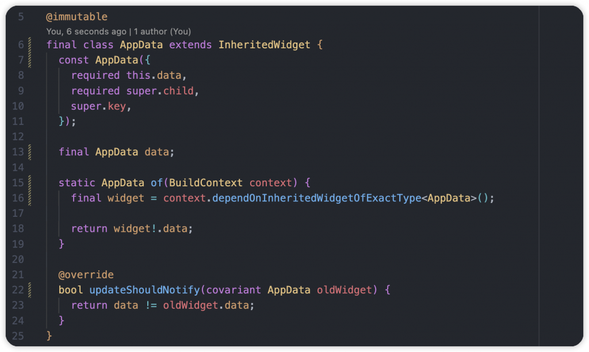
回到主題 MediaQuery，它本身也是繼承 InheritedWidget，數據來源為 MediaQueryData，在內部一樣是 data 屬性，而 MediaQueryData 擁有 18 個屬性資料，都是跟 APP 和裝置相關的資料，包含 size 長寬大小、orientation 裝置方向、textScaleFactor 文字大小、platformBrightness 裝置顯示模式等等，都是很多情境上會影響畫面的數據。
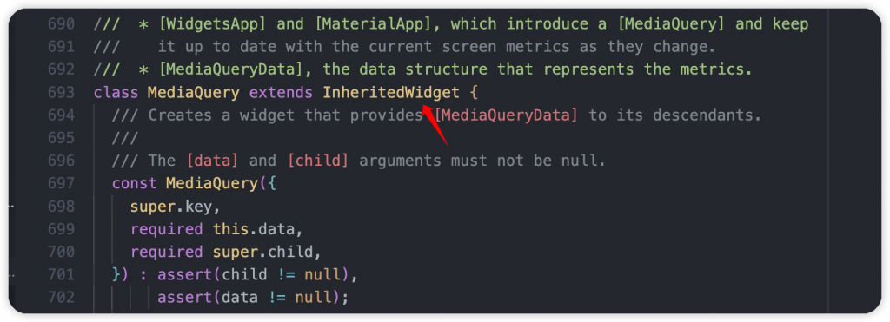
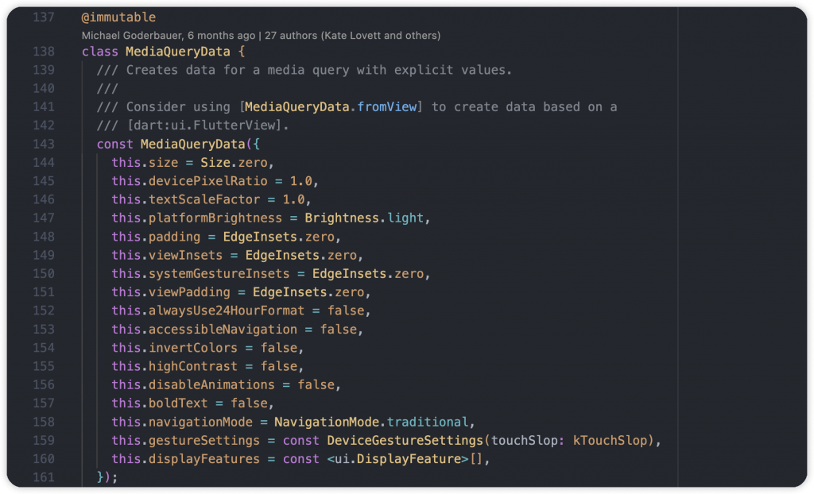
存取 MediaQuery 的方式
接下來看一下最常存取 MediaQuery 的方式，它雖然很方便但也是個性能炸彈，我們逐步來了解。此範例擁有三個頁面，HomePage、SecondPage 以及 ThirdPage。
- 首先我在 HomePage 使用
MediaQuery.of(context)靜態方法取得整包資料，然後拿 size 長寬出來使用，可能是有元件需要根據長寬來做一些佈局調整或是單純想了解。 - SecondPage 我一樣使用
MediaQuery.of(context)取得 platformBrightness 屬性，可以得知目前裝置是 Light mode 還是 Dark mode，接著把它印出來 - 第三個頁面 ThirdPage 沒有使用 MediaQuery，不同的是使用了一個 TextField 輸入框，可以讓用戶輸入一些資料，屬於很正常的場景
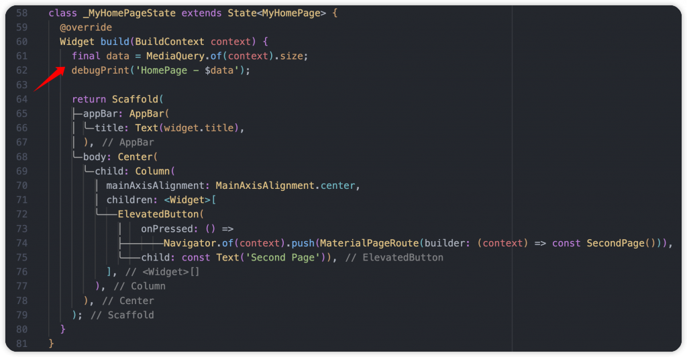

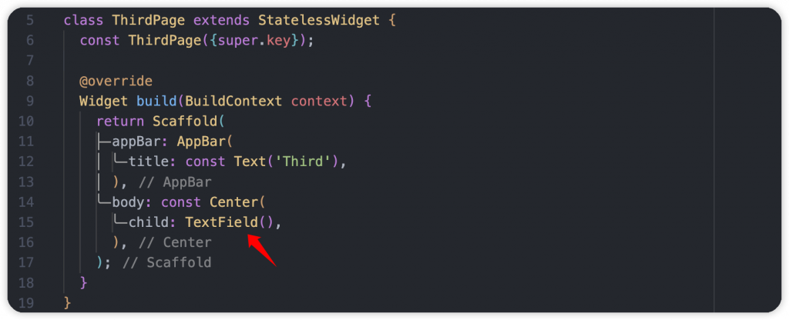
我們實際來看看運行後 APP 會出現什麼狀況，左邊是 Console，右邊是運行的模擬器，整個流程就是開啟到第三頁，模擬使用者打開鍵盤要輸入一些資料。從 GIF 展示可以發現，在執行鍵盤操作的時候會其他兩個頁面都會受到影響，不停的進行 rebuild，但是它們實際上沒有顯示在螢幕上，造成不必要的性能消耗。
主要原因是打開和關閉鍵盤的時候，裝置的 padding 屬性會持續改變，它也是 MediaQueryData 的一員，當更新後就會經由 updateShouldNotify() 檢查資料，最終通知所有的依賴者進行 rebuild。

實際上配置沒有更新的元件都不會進行繪製 repaint，節省消耗成本，不過還是要盡量保持 Widget 的拆分，讓受影響的部分減少
源碼分析
接下來看一下源碼，讓我們更了解它。以下是流程，首先提供 Element 繼承關係圖，讓大家更容易了解 Code 的運作：

-
在收到資料更新後，InheritedWidget 對應的 InheritedElement 的
updated()會被觸發，檢查我們覆寫的updateShouldNotify()是否條件符合，true 的話就執行父類(ProxyElement)的super.updated()方法
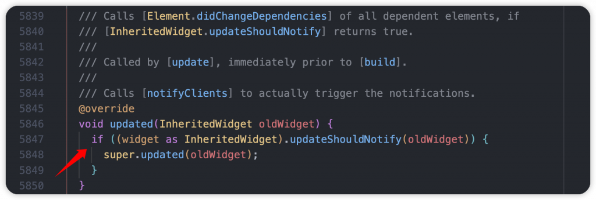 -
檢查新舊元件後，執行
updated()和rebuild()，兩個主角。updated()是要通知所有元件的 Element 有更新了請注意。過程中會呼叫notifyClients()，使用迴圈取得每個 dependant 物件(這邊的命名方式個人覺得還可以更好，實際上它是 Element)，個別使用notifyDependent()方法通知

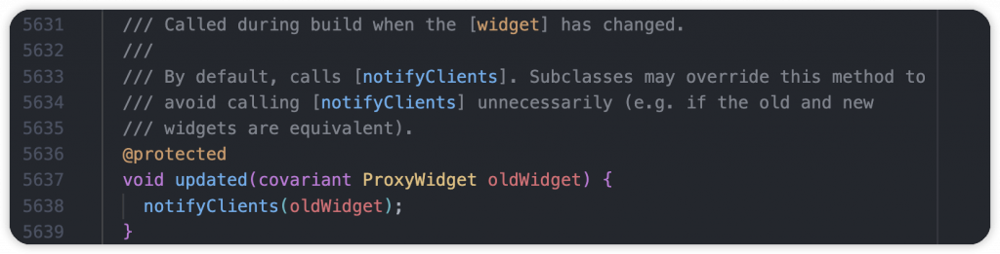

前面會先確定每個 Element 是否有依賴數據，有的話會呼叫 Element 的 didChangeDependencies() 方法，以 StatefulWidget 的 StatefulElement 來說，裡面就是更新 _didChangeDependencies 屬性為 true，代表接下來允許觸發 State 的 didChangeDependencies() 方法。


rebuild()環節裡面會先驗證 Element 狀態是否為 active，代表還在樹上，可以進行後續處理，這時候在呼叫performRebuild()，讓元件開始進行 rebuild 工作。

一樣以 HomePage(StatefuleWidget) 來說就是跟 StatefulElement 互動，檢查 _didChangeDependencies 屬性是否為 true，是否有依賴的資料更新了，有的話就觸發 State 裡我們在使用的 didChangeDependencies()，接著在尾巴呼叫呼叫父類 ComponentElement 的 performRebuild()。

到了 ComponentElement 的 performRebuild()，主要進行 State 的 build() 重建 WidgetTree，最後再將 dirty 屬性從 true 改成 false，代表 Element 和 Widget 都已經刷新了，完成工作。

最後會先觸發 didChangeDependencies() 在觸發 build()，是不是跟我們熟知的生命週期一樣呢！

正確用法
StatefulWidget 需要更改存取 MediaQueryData 的地方，在 didChangeDependencies() 存取，我們只需要在數據有更新的時候拿到最新資料，更新後交給後面的 build() 去使用。避免直接在 build() 使用 MediaQuery.of(context) 方法，才不會所有的 rebuild 都一直重新呼叫 ，造成不必要的運行成本。
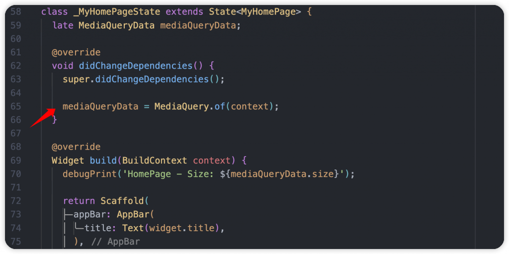
本文舉鍵盤操作的案例只是為了示範，很多操作都會更新 MediaQueryData，所以需要謹慎使用 MediaQuery.of(context) 方法，想看看今天疊了5個頁面以上，造成的影響會更多，甚至有可能使用者體驗會下降，而且以上只是因為 padding 屬性的變動，如果有其他沒有使用到的屬性更新了，每個訂閱者都會慘遭波及，這場景應該不太好對吧？
那現在我們怎麼優化這部分呢？要感謝 Flutter 3.10 發布的改版優化，讓我們可以做到指定依賴，詳細我們下一篇討論吧！
延伸閱讀
Day 8: MediaQuery 優化後與 InheritedModel 如何進行指定更新
Day 8: MediaQuery 優化後與 InheritedModel 如何進行指定更新
- 發布時間：2023-09-23 19:12:32
- 原文連結：https://ithelp.ithome.com.tw/articles/10325740
- 系列標記：探索 Flutter 由裡到外，三十天帶你前往進階系列 第 8 篇
上一篇我們討論了 MediaQuery 是什麼、它的正常使用方式，並稍微帶大家分析背後源碼的運作流程。本文要了解在 Flutter 3.10 改版後，InheritedWidget 做了哪些改動，以及我們如何更高效的去存取 MediaQueryData，提升 APP 整體品質。
我們在存取 MediaQueryData 時很常會使用 MediaQuery.of(context) 方法，進行整包資料的訂閱，並在有任意資料變動的時候收到通知，很容易造成不必要的 rebuild，影響 APP 性能與運行。
Specific dependency 指定依賴
原本的 MediaQuery.of(context) 屬於依賴整包資料，有任更新都會收到通知。指定依賴就是我們可以只依賴我們需要的屬性就好，只有它更新的時候通知我就好，其他的我不需要理會，這個方式也比較符合我們大部分的開發場景。一開始先展示實際範例，讓大家能快速了解新的用法

// 18種靜態方法，針對18個屬性
MediaQuery.sizeOf(context)
MediaQuery.orientationOf(context)
MediaQuery.devicePixelRatioOf(context)
MediaQuery.textScaleFactorOf(context)
MediaQuery.platformBrightnessOf(context)
MediaQuery.paddingOf(context)
MediaQuery.viewInsetsOf(context)
MediaQuery.systemGestureInsetsOf(context)
MediaQuery.viewPaddingOf(context)
MediaQuery.alwaysUse24HourFormatOf(context)
MediaQuery.accessibleNavigationOf(context)
MediaQuery.invertColorsOf(context)
MediaQuery.highContrastOf(context)
MediaQuery.disableAnimationsOf(context)
MediaQuery.boldTextOf(context)
MediaQuery.navigationModeOf(context)
MediaQuery.gestureSettingsOf(context)
MediaQuery.displayFeaturesOf(context)
此範例中 HomePage 在 didChangeDependencies() 裡使用 MediaQuery.sizeOf(context)，只有訂閱 size 屬性，需要再它有變化時通知我。

ScondPage 一樣將寫法更改為 MediaQuery.platformBrightnessOf(context)，監聽 platformBrightness 屬性的變化，可以了解 APP 是否使用深色模式。
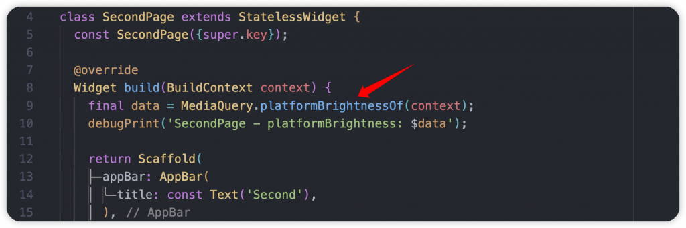
最後跟上一篇文章一樣，我們在 ThirdPage 使用了 TextField 輸入框，讓使用者可以輸入文字。當鍵盤彈出和關閉時，會頻繁更新 MediaQueryData 裡的 padding 屬性，光打開就會更新 20 幾次。

可以看到實際運行的狀況，前面的 HomePage 和 SecondPage 絲毫沒有受影響，因為它們本身是依賴 size 和 platformBrightness 屬性，不會因爲其他數值的更新而收到通知，也不會因此 rebuild。
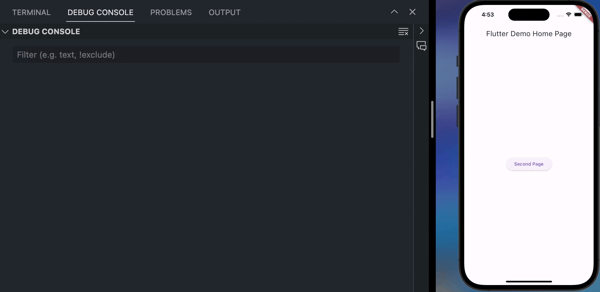
在現在的 Flutter 版本，讓我們可以精準的去存取 MediaQueryData，進行指定依賴，原有專案也只需要簡單做個修改，整體性能就能有所提升，這個 MediaQuery 優化真的很重要。
當然，不免俗的我們還是要進入源碼分析環節，了解實際上背後做了什麼改動，以及它的更新流程。以下稍微列出了幾個重點：
_MediaQueryAspect→ enum，需依賴的資料類型inheritFrom({aspect})→ 幫 Widget 產生依賴，決定依賴全部屬性還是指定屬性updateShouldNotifyDependent()→ 檢查資料是否異動，並通知依賴者
首先看到 MediaQuery 本身，會發現繼承的對象換了，是 InheritedModel，泛型待著一個 _MediaQueryAspect，InheritedModel 實際上繼承 InheritedWidget，也就是多封裝了一層，它存在的目的就是讓我們可以只依賴 Model 的一小部分。
另外我們也可以自定義 InheritedModel 跟 aspect enum，讓 InheritedModel 可以根據我們的依賴，僅通知跟 aspect 相關的元件進行更新
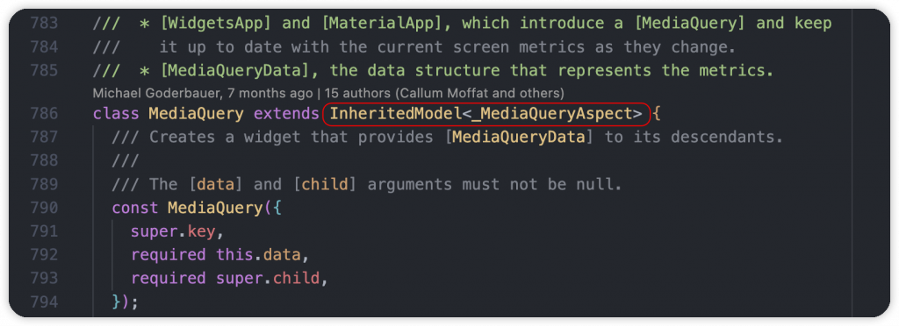

我們來看看 MediaQuery 使用到的 _MediaQueryAspect，單純是一個 enum，裡面的 type 對應 MediaQueryData 的18個屬性，讓我們可以區別實際上依賴哪個資料

先隨邊挑選一個靜態方法，來看它做了哪些事情，sizeOf(context) 實際上 call 了內部方法 of(context, MediaQueryAspect.size)，跟以前不同的是多了第二個參數，給予 size 這個 MediaQueryAspect enum。

原有的 MediaQuery 使用方式 of(context)，裡面都是使用 _of(context) 內部方法，但就沒有給予 aspect type，因為它是監聽整個 MediaQueryData。
接下來可以看到重點部分 InheritedModel.inheritFrom(context, aspect)
- 一開始先檢查 aspect 是否為 null，是的話就跟直接回傳
dependOnInheritedWidgetOfExactType()，依賴整包資料 - 檢查 Element Tree 上的所有 InheritedElement，取得泛型為 MediaQuery 且有提供這個 aspect 資料的 InheritedElement list。使用
_findModels()方法查找，接著會透過isSupportedAspect()檢查 Element 是否有提供 - 取出最後一個拿到的 InheritedElement，接著透過
dependOnInheritedElement()取得對應的 InheritedWidget，也就是 MediaQuery
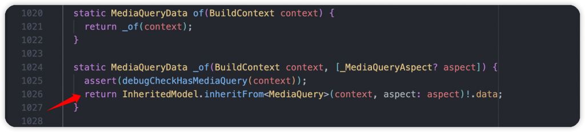
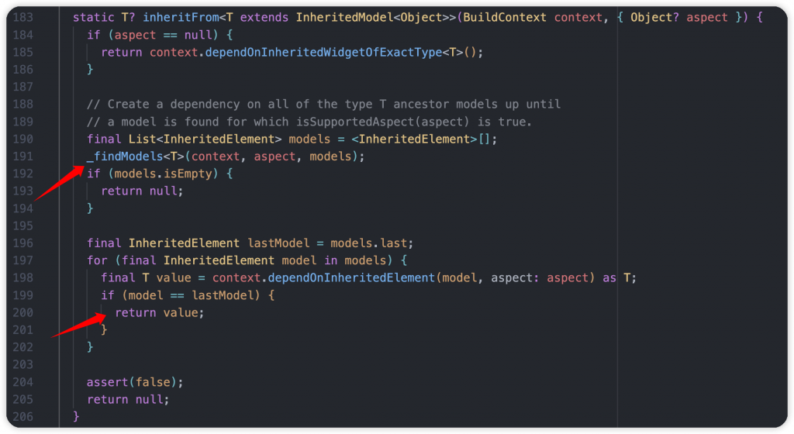
到這裡我們已經了解大概的依賴流程，那資料更新時如何通知呢？就需要看另一個重要環節 updateShouldNotifyDependent(oldWidget, dependencies)，當 MediaQueryData 其中有一個屬性有變動後就會檢查每個有依賴這些資料的 Element，看他們跟現在變動的數據是否有依賴關係，這時候會呼叫 updateShouldNotifyDependent() 進行檢查。它本身有兩個參數，第一個是舊的 MediaQuery，第二個是那些有變動的 aspect type 資料。
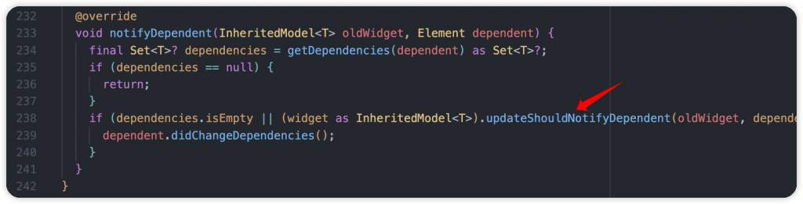
一開始針對這些變動資料執行迴圈，根據每個 _MediaQueryAspect type 檢查原本的屬性值跟新的屬性值是否不一樣，不一樣代表有變化，所以返回 true，通知依賴者、元件的 Element 要執行更新任務，呼叫 didChangeDependencies()。

最後 State 的 .didChangeDependencies() 和 build() 就會陸續被觸發，進行 rebuild。
MediaQueryData 整個的依賴、更新流程就是這樣，是不是慢慢的看過後會更熟悉它，實際上也沒有非常複雜的邏輯去處理。當懂原理後，在往後的開發會知道如何去思考作法，讓一切都在自己的掌控範圍，整個過程也會更有意思。
延伸閱讀
Day 7: MediaQuery 是什麼？很方便但如何正確在 Flutter 使用，順便跟你說它的缺點
Day 9: 深入 setState()，觀察它如何進行 UI 刷新！
- 發布時間：2023-09-24 18:29:15
- 原文連結：https://ithelp.ithome.com.tw/articles/10326495
- 系列標記：探索 Flutter 由裡到外，三十天帶你前往進階系列 第 9 篇
每次執行 flutter create <name> 創建新的專案後，預設都會在主頁面看到很熟悉的計數器功能，在點擊 FloatingActionButton 後會執行 _incrementCounter() 方法，裡面使用了 setState() 方法，並在第一個參數使用匿名 callback，讓開發者將一些狀態放在區塊內更新，接著頁面、元件就會在下一幀刷新並進行 rebuild，顯示新的畫面跟效果給使用者。

當 setState() 呼叫後，根據 StatefulWidget 的生命週期，就會在執行一次 build()，讓整個 Widget Tree 可以根據新的狀態、配置去顯示。
有關 LifeCycle 的部分可以去閱讀另一篇文章
Day 5: Flutter 的 StatefulWidget 和 State 生命週期，先熟悉它們再開發吧！
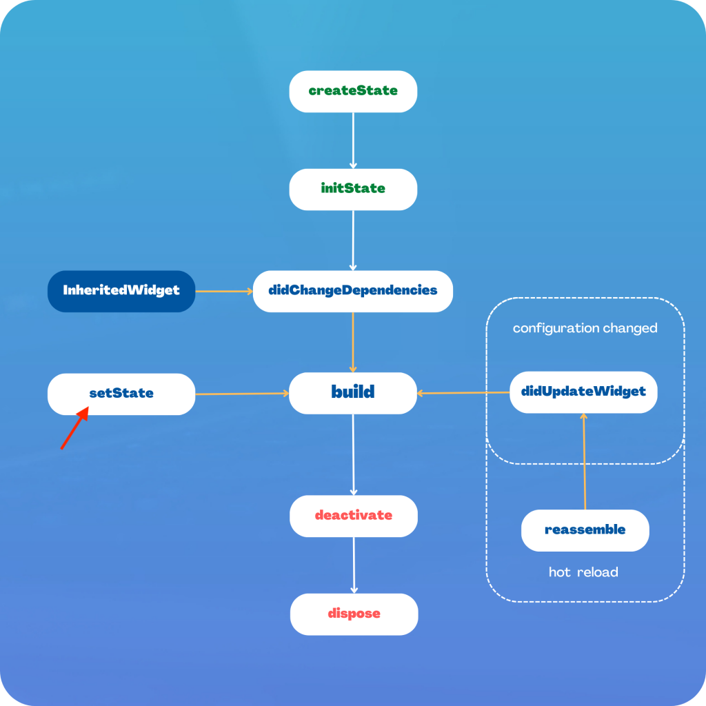
- 主要透過 Element 呼叫了
markNeedsBuild()，進行重新 rebuild - 神奇的魔法，實際上不管變動的狀態是否有放在 callback 裡面，整棵樹都會被重置。如果將狀態或一些操作寫在 callback 裡面，就要確保不能有非同步操作，也就是 Future 回傳值
建議：將需要更新的狀態操作放在 callback，其他則在方法外面，提高整體可讀性
setState(() {
_counter = _counter + 1;
});
// or
_counter = _counter + 1;
setState(() {});
提醒一下，在 setState() 或是 context 操作之前如果有進行非同步操作，記得呼叫時要先檢查 mounted 屬性，確認 Widget 與 Element 都有在樹上，才能確保後續的 rebuild 刷新，否則如果剛好 Widget 銷毀了或是進行樹上的移動，這時就會報錯，記得保持好習慣哦。有使用 flutter_lint 通常會出現 use_build_context_synchronously 提醒，以下是範例：
Future<void> _incrementCounter() async {
await Future.delayed(const Duration(seconds: 1));
if (!mounted) {
return;
}
setState(() {
_counter++;
});
}
其實
當初為 Flutter 開發人員做了 UX 的研究，原本只有一個 markNeedsBuild() 的時候，發現大家把它當成保命符，在不確定的情況下都會呼叫它，導致濫用的情況。後來改成同步的 setState() 後，大家開始謹慎使用了，發生問題的機率也變小了。 本身 setState() 是一個跟心理層面影響的 API。
以下是相關資訊：
- https://github.com/flutter/flutter/issues/12296
- https://stackoverflow.com/questions/44379366/why-does-setstate-take-a-closure/44379367#44379367
那實際上到底 setState() 做了什麼事？如何告訴 Flutter 有東西改變了你要處理一下，我們來挖掘它，看看實際的過程。
State 的 setState
setState() 是 State 的方法，State 由 _MyHomePageState 繼承 所以我們能使用它。可以看到參數就是一個 VoidCallback，沒有回傳值的方法，很常在開發中看到或用到，例如：元件要暴露點擊事件的話就可以使用 VoidCallback 撰寫。
-
一開始使用
asset()進行狀態檢查，必須確保 State 的狀態不是 defunct，這時候代表本身已使用dispose()要被銷毀了

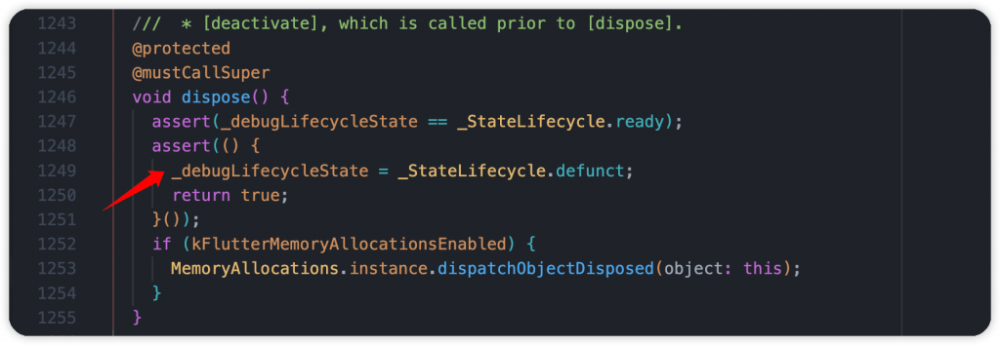 -
第二層檢查，確認 State 的狀態不是剛創建而且還沒綁定到 Element Tree 上，使用
mounted屬性檢查，這時候去刷新頁面是沒有作用的

-
第三層檢查，確認外部給予的 Callback 不是非同步方法，檢查是不是 Future，裡面也不會 await，因為實際上整個 Flutter 的繪製、渲染流程是同步的，不允許有非同步操作的影響，需要確保整體是順暢的運行
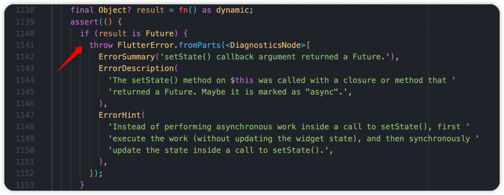 -
最後都沒有問題後，透過 element 呼叫
markNeedsBuild()，標記這個元件為 dirty 髒的，代表需要 rebuild，下一幀更新
Element 的 markNeedsBuild()
到這裡對 setState() 應該有一點了解了吧，接下來繼續看 Element 做了哪些事情，繼續往深處挖掘。我們看到 markNeedsBuild() 執行大部分工作之前都必須檢查生命週期，在正確的時候做正確的事情才能確保高效、順暢。
-
一樣進行幾個檢查，確認對應的 Element 本身不是 defunct 銷毀狀態，需要是 active 狀態
-
檢查
owner存在不為空值，它是 Element 的 Lifecycle Manager

-
如果正在 building 的情況不允許再呼叫
setState()和markNeedsBuild()刷新，因為刷新工作已經在執行了。這也是為什麼不要 State 的build()方法裡使用setState()，可是會出錯的哦

-
檢查
dirty屬性，一樣如果標記過後就忽略，因為已經在處理了。最後透過owner安排任務去處理

BuildOwner 的 scheduleBuildFor()
負責將要更新的 Element 儲存到髒的 Element 清單，等待之後執行 WidgetsBinding.drawFrame 的時候可以被處理。
- 首先確認是否已經在髒清單裡面，檢查
_inDirtyList布林值，是的話就 return 不繼續下去 - 接著呼叫
onBuildScheduled()安排任務，並將此 Element 新增到髒清單，然後將_inDirtyList設為 true
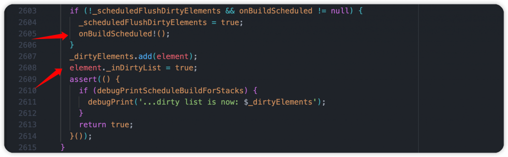
後面流程
-
觸發 WidgetBinging 的
_handleBuildScheduled() -
觸發 SchedulerBinding 的
ensureVisualUpdate()→scheduleFrame() -
…
-
觸發 WidgetBinding 的
drawFrame()，設置debugBuildingDirtyElements為 true，開始處理髒 Element 清單。裡面最重要的是呼叫buildScope()，真正進行 Element 處理的地方

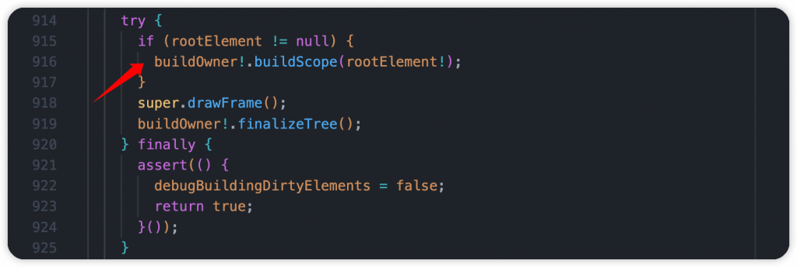 -
首先對髒清單進行樹的深度排序，while 迴圈執行，淺的 Element 優先處理
-
接著到中間會看到呼叫 Element 的
rebuild()，然後執行performRebuild() -
這時候對應的 Element 就是
RenderObjectToWidgetElement(每個元件後面對應的都是 RenderObject，負責幫我們處理佈局、繪製，這邊就不深談這個部分)
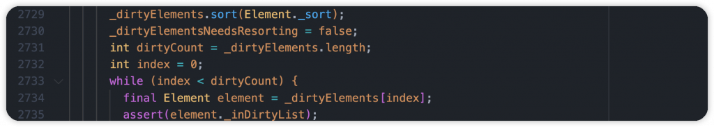
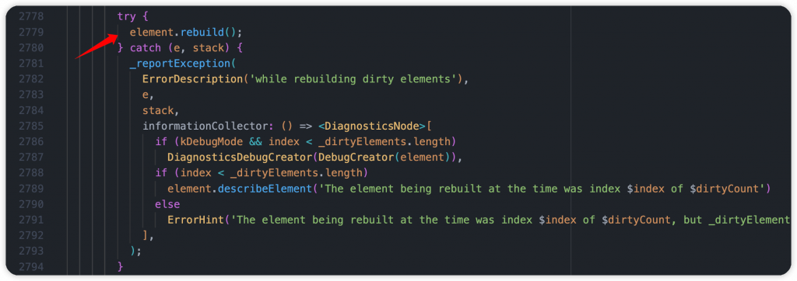
RenderObjectWidget 的 updateRenderObject()
到了這裡已經快完成更新的工作了！如果以範例來說，畫面上的 Text 元件因為倒數文字改變，等同是它的配置有異動，這時候就會呼叫 updateRenderObject() 來處理。這時候要看源碼的話需要到 RichText，也就是 Text 的基座，它本身是 MultiChildRenderObjectWidget，尋找它的 updateRenderObject() 方法。
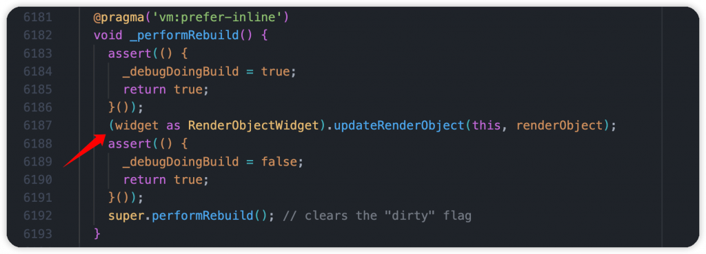
更新 RenderParagraph 物件，因為是改變文字，這時 text 屬性就會就會被更新，並觸發寫好的 setter，因為是文字內容的改變會進行重繪，執行 markNeedsPaint()，後面的事情就交給渲染引擎去處理了。
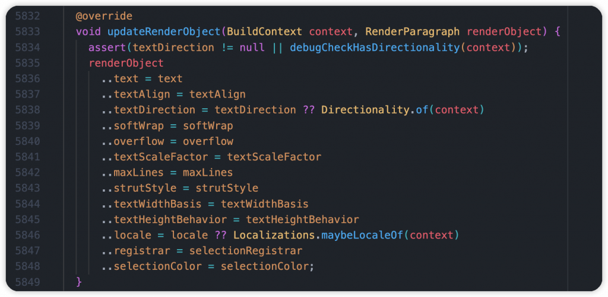

其實後續還有能繼續挖掘的源碼，但到這裡大家應該可以了解一個畫面、元件刷新的部分流程。細節很多，一步一步去探索，會發現很有趣，你會更熟悉實際上做哪些事情。當然其中牽扯了許多 Flutter 核心觀念，例如：Widget、Element、RenderObject 的三者關係、生命週期等等，大家不需要一次就懂，可以從中去學習，慢慢會影響我們開發時的想法，你也會更有 Sense，知道該做什麼樣的操作對 APP 有幫助。
延伸閱讀
Day 5: Flutter 的 StatefulWidget 和 State 生命週期，先熟悉它們再開發吧！
Day 10: Async 和 Isolates 差異在哪裡？正確使用才能確保流暢體驗！
- 發布時間：2023-09-25 20:41:55
- 原文連結：https://ithelp.ithome.com.tw/articles/10327324
- 系列標記：探索 Flutter 由裡到外，三十天帶你前往進階系列 第 10 篇

為什麼在 Flutter 開發中很常會需要 Async 非同步操作？因為畫面的互動、繪製刷新都是在同步的狀況下運行，為了順暢運行，需要一秒快速進行多次的渲染處理，而當我們要執行無法預期時間的相關操作或是繁重任務時，就會需要非同步來幫忙。但非同步本身的工作如果消耗的時間更久更麻煩的話，這時候就會需要 Isolate 隔離的協助。這兩個角色對於開發來說很重要，我們需要了解他們是什麼，以及在某些情境下該用誰來處裡任務，才能讓 APP 保持高效運行，讓使用者操作的很舒適。
在進入正題之前，需要先了解 Flutter 本身的運行狀況，它是在什麼環境下運行，由哪些重要角色支撐著，才能提供良好的性能表現以及使用者體驗。往下滑囉！
Flutter 運行狀況
- 1 Thread、1 Processor
- Flutter 在主隔離(Main Isolate)上運行，而隔離在運行時會有自己的 Event Loop 和兩個 Queue，就像一個無限循環，裡面經由 Event Queue 和 Microtask Queue 處理著所有請求和任務
Event Queue→ 處理大部分任務和來自用戶的操作，例如：手勢、點擊螢幕、I/O操作、佈局、繪製、繪圖、Timer、Steam等等，它們都會被加入 Queue 中，接著按照順序在 Event Loop 處理。舉例來說：為了順暢的用戶體驗，Flutter 每秒60次向 Event Queue 添加 repaint 事件


Microtask Queue→ 負責由內部系統操作生成的任務，比用戶啟動的任務有更高的優先級。意思是只要 Microtask Queue 有任務要處理，就會先暫停 Event Queue 的工作，以 Microtask 為優先，頻繁地在兩邊進行轉換
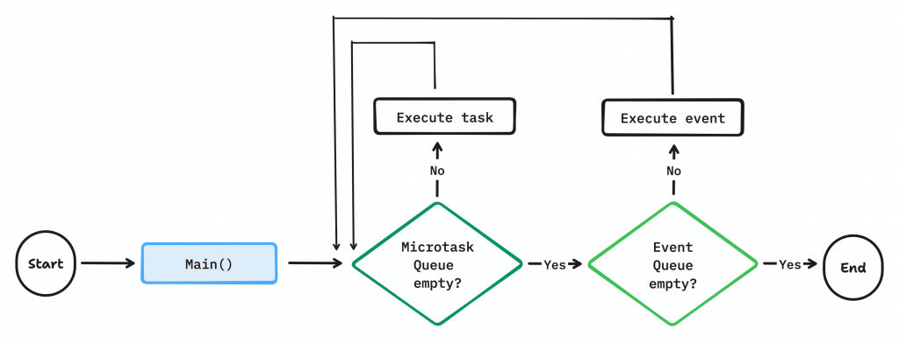
Async
"Async is the ability to wait for other things without blocking." 這句話來自某位開發者，很適合用來表示 Async，也就是我們熟知的非同步。
- 本身屬於並發運行(Concurrency)，有處理多個任務的能力，但不一定會同時處理。
- 使用 Async 的同時也會使用到 Future，代表未來的某個時候完成，我們無法知道準確時間點，也是在告訴 Dart：「這段程式碼不急，你有空再幫我處理就好了。」，會根據情況、需求自動在不同的程式區塊裡跳轉
- 雖然它是非同步操作，但使用時不會自動生成其他線程來幫忙，其實都是在相同線程，在進行 Flutter 開發時都是在相同線程、相同 isolate 進行，非同步任務會等待 UI 渲染完成後才進去動作
- 在
Dart VM Thread上運行，當 await 任務完成後會向主隔離的 Event Queue 添加新的事件並標示任務完成，有點類似 Callback await區塊結束後，才會接著處理後方的程式碼，而在 Flutter APP 裡其他程式碼一樣同時運行，其他工作區不需要停止或等待- 符合大多數的開發情境，但不適合有複雜處理的同步任務，例如：解析大量資料、IO長時間操作，如果使用非同步處理太久，APP 得其他部分有可能會造成卡頓，因為只要是 OS 操作而非 Dart 程式碼都會暫停執行
Flutter 是單線程卻能夠運作順暢
整個 Rendering Pipeline 都是在同步中進行，所以當 Event loop 知道要進行佈局、繪製等操作的時候，就會讓非同步任務先暫停並等待 Pipeline 執行結束後再繼續，這樣就不會因為進行耗時操作卡住 UI。這也是為什麼使用 setState() 刷新只能是同步操作的原因。

不會單線程畢竟有它的侷限，當有一些比較重的同步任務，例如：解析大量 json、處理圖片、長時間IO，處理過程可能會超過一個 vsync 時間，這樣 Flutter 就不能即時將 layer 送到 GPU 線程，會導致 APP janking 卡頓，這時候我們就會需要 Isolate 來幫忙解決這個問題。
說明：vsync 代表每一幀的渲染信號，通常在開發動畫、使用 AnimationController 時就會遇到，而如果以 60 幀順暢運行來說，一幀的時間就是 16 毫秒。

舉例：
- 在跟人聊天的時候，快速檢查手機訊息，短短0.5秒停頓，對方感受不出來
- 在跟人聊天的時候，這時剛好有重要訊息需要確認，可能盯著訊息5秒以上，接著再回來這段對話，對方應該會覺得尷尬或不舒服，而這個情況就會需要 Isolate 幫忙處理

Isolates 隔離
"Isolates is the ability to run things in parallel. It can offload heavy computations in the app to a background worker."
- 每個 Isolate 實際上是並行運行(Parallelism)，又稱為 worker isolate、background isolate、background worker
- 一個隔離使用一個線程，假設你是用 VS Code 開發，可以從 Call Stack 區塊觀察每個創建出來的隔離
- 本身不是 Thread，不同的是每個 Isolate 擁有自己的記憶體空間，不共享數據，透過 Event Loop 管理任務、處理工作。不會遇到執行緒會有的 Critical Sections, Dead Locks, Mutexes 和 Racing Condition 情境
- 只要是一幀無法完成的任務都需使用 Isolate 解決， 將長時間的同步任務、複雜運算、工作分配到多個內核(Core)去進行處理，不同程式碼在不同隔離全速運作，互不影響。可以確保 Main isolate 每秒產生60幀以上，減輕負擔，以獲得舒適的使用者體驗
- 當有多個 Isolate 同時產生時，無法確保每次都以相同的順序運行
- Isolates 之間的訊息傳輸通常執行深度的資料複製，因此記憶體使用會因此增加，隨著訊息的大小線性增加，O(n) 表示
舉例：當我在跟你講話的時候，我在抓癢，同時做兩件事卻不干擾
適合情境：
- 解析大量 JSON 字串
- 資料庫存取
- 大型檔案存取
- 圖像處理、解碼
使用方式 compute()
負責 short-lived background tasks 短時間的複雜運算，我們可以使用 Flutter 提供的 compute() 全局方法，迅速建立一個 Isolate 幫忙處理任務，結束後返回結果，就跟我們使用 await 非同步方法一樣，簡單有效。
await compute(_printName, 'Yii');
- 第一個參數 → 運行的 function 名稱，可提供一個參數
- 第二個參數 → function 的參數，如果需要多個參數的話可以使用 Map、List 等等包裝

使用方式 spawn()
負責 long-lived background tasks 長時間的複雜運算與處理，我們可以自定義隔離，使用 spawn() 創建，並透過 Port API 讓 main isolate 與 worker isolate 溝通。
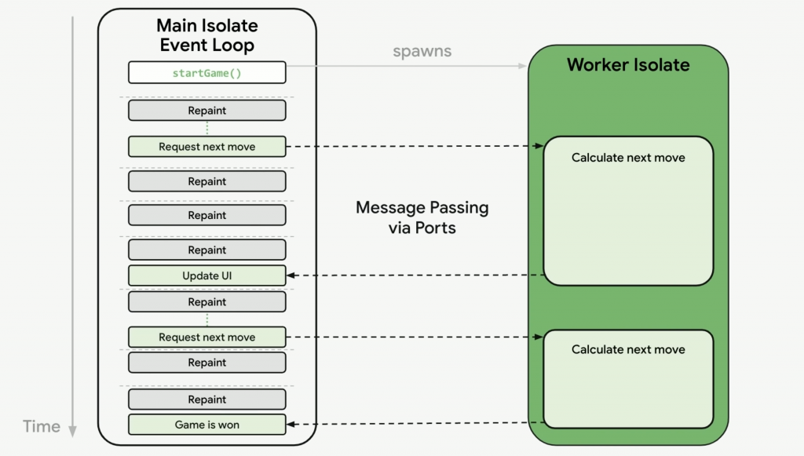

Isolate.spawn() - 建立隔離
Isolate.spawn(_entryPoint, _receivePort.sendPort)
- 第一個參數 → Isolate 要執行的函式
- 第二個參數 → ReceivePort 的 SendPort，給 worker isolate 跟 main isolate 的通訊管道，溝通使用。當有多個函式參數需要使用時，可以透過
List<dynamic> args，裡面再透過 args[0]、args[1] 取得資料
補充：第二個參數，也可以自定義一個協議 Model 類別，裡面包含主要的 SendPort 跟其他的資料欄位，就不用擔心只能傳一個參數的問題。
ReceivePort - 接收訊息
ReceivePort 顧名思義就是接收訊息的通道，本身透過 Stream 實作，可以持續監聽。第一個訊息通常會是其他 Isolate 的 SendPort ，當前 Isolate 可以使用它發送訊息跟其他隔離溝通。
final receivePort = ReceivePort();
first屬性 → 取得發送過來的訊息，為 Future。一般使用 first 後 stream 就會被關閉，所以如果需要持續接收訊息，需要將 ReceivePort 轉成廣播流，使用asBroadcastStream()sendPort屬性→ Isolate 的通訊管道，提供給其他 Isolate 發送訊息用，我們也才能收到訊息
SendPort - 發送訊息
使用 SendPort 發送訊息給創建它的 ReceivePort，也有可能多個 SendPort 對應一個 ReceivePort。
sendPort.send('message');
StreamQueue - 接收訊息的佇列
實際上可以不需要 StreamQueue，但它使用上可以跟 ReceivePort 很好的進行協作，類似 ReceivePort 的 broadcastStream，將 ReceivePort 設為參數傳入，在建構的時候就開始監聽 Stream，是對於後續接收訊息還蠻方便的 API。
StreamQueue _streamQueue = StreamQueue(_receivePort);
// Get new message from another isolate
await streamQueue.next;
// Stop receiving messages
await streamQueue.cancel();

next()→ 負責取得其他 Isolates 透過SendPort傳送的訊息cancel()→ 停止 Stream，也就是停止訊息資料的監聽
缺點：不管是透過
spawn()或是compute()都會經過 Isolate 的創建與銷毀，如果頻繁創建或濫用就會有很大的記憶體消耗，這是唯一代價，所以請謹慎使用。
注意
- Isolate 創建、銷毀與傳遞資料，可能會耗費約 50-150ms 的時間
- 使用 multi isolates 整體計算時間會比 single isolate 多
- 本身 Isolate 是佔空間的，每當創建出來至少需要 2MB 記憶體左右甚至更多，取決於工作內容
- 通常實作上可能會使用 message 參數傳遞資料或檔案，每次都會經歷一次 copy ，這其實就存在著 OOM 風險。想看看，如果要返回 1 GB 大小的資料，在記憶體不多的手機上就會出現問題
改善
- 減少 Isolate 創建，降低消耗
- 減少 message 傳遞次數，以及資料大小
範例解說
此範例使用 jsonFileNameList 紀錄準備好的3個 Json 檔案，放在本地的 assets/ 目錄，待會要透過 Isolate 進行解析、處理。
const List<String> jsonFileNameList = [
'assets/a.json',
'assets/b.json',
'assets/c.json',
];
主隔離的 getJsonDataFromFiles() 方法，負責創建 Isolate ，並請它在背景幫忙處理檔案，按照順序取得 Json 資料後將內容返回主隔離，再讓 main() 印出來。下面跟大家一行一行解說，更好地去了解：
- 首先一開始都會先創建 ReceivePort 物件，而在這個情境使用到了 StreamQueue，協助 ReceivePort 更好地處理訊息
- 使用最重要的方法
Isolate.spawn()創建隔離，isolateParsingFile為 Background-Isolate 要執行的方法名稱，第二個為通訊管道 - 兩個 Isolate 在使用時，通常一開始的互動都是互相給予自己的 SendPort，這樣對方才能跟我傳訊息。所以這裡先透過
streamQueue.next取得 Isolate 的 SendPort - 透過迴圈請 Isolate 按照順序幫我處理檔案，一樣再使用
[streamQueue.next](http://streamQueue.next)取得最新訊息，接著透過 Generator functions 傳值到外部 - 最後傳遞 null 給 Isolate，這是我們訂的約定，只要是 null 就代表任務結束，需要釋放資源
Stream<Map<String, dynamic>> getJsonDataFromFiles() async* {
print('getJsonFilesContent() - Start');
final ReceivePort receivePort = ReceivePort();
final StreamQueue streamQueue = StreamQueue(receivePort);
await Isolate.spawn(isolateParsingFile, receivePort.sendPort);
final SendPort workerIsolateSendPort = await streamQueue.next;
for (String fileName in jsonFileNameList) {
workerIsolateSendPort.send(fileName);
final Map<String, dynamic> jsonData = await streamQueue.next;
yield jsonData;
}
print('getJsonFilesContent() - Json file parsing finished');
workerIsolateSendPort.send(null);
print('getJsonFilesContent() - Request worker isolate to exit()');
await streamQueue.cancel();
print('getJsonFilesContent() - Dispose the StreamQueue');
}
接下來看 Isolate 要執行的 isolateParsingFile() ，來仔細了解它的工作內容：
- 起手式都是創建 ReceivePort，接著傳遞自己的 SendPort 出去，完成前置作業
- 使用
await for，代表只要收到訊息就會執行這個區塊 - 一開始先檢查型別，而我們確定這個是檔案名稱，所以必須是字串
- 讀取本地 JSON 檔案，使用
jsonDecode()轉換成 Map，這一步是最耗時的工作，接著將結果回傳給 Main Isolate - 跟外部約定好了，只要收到訊息為 null 就代表工作完成，直接關閉迴圈，並在最後
Isolate.current.kill()將自己清除，釋放記憶體
void isolateParsingFile(SendPort sendPort) async {
print('isolateParsingFile() - Worker isolate - Start');
final ReceivePort receivePort = ReceivePort();
sendPort.send(receivePort.sendPort);
await for (dynamic message in receivePort) {
if (message is String) {
final String fileContent = await File(message).readAsString();
final Map<String, dynamic> jsonData = jsonDecode(fileContent);
print('isolateParsingFile() - Worker isolate - Send data to main isolate');
sendPort.send(jsonData);
} else if (message == null) {
break;
}
}
Isolate.current.kill();
print('isolateParsingFile() - Worker isolate - Finished');
}
主程式 main() 呼叫 getJsonDataFromFiles()，本身是回傳 Stream，在這裡將每次解析到的 Json 資料印出來，印出三筆資料就完成我們的工作。以下提供 Console log ，協助驗證運行的流程。
void main(List<String> arguments) async {
await for (Map<String, dynamic> jsonData in getJsonDataFromFiles()) {
print("Get json data - $jsonData");
}
}
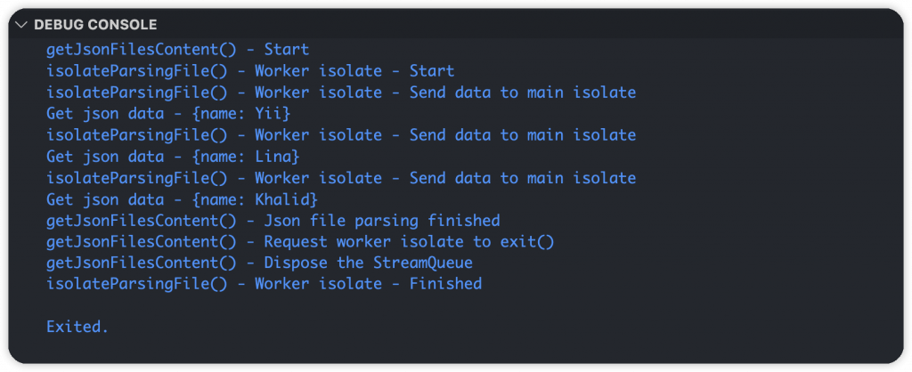
Source: dart_isolate
對於 Async 和 Isolate 有沒有再更了解了，Async 在日常的開發中每天都會遇到，而 Isolate 相對來說就沒這麼頻繁出現，但大家都需要知道他們，並在對的時間選用。建議大家搭配 Isolate 範例，邊閱讀邊練習，讓自己更理解它的運作方式。更進一步，如果你需要頻繁的操作 Isolate，持續創建和銷毀，那你可以考慮建置一個 Isolate Pool 或是研究相關套件。最後，Isolate 還有很多好玩的部分，有興趣有想法都歡迎在底下跟我討論哦！
Reference
- https://dart.dev/language/concurrency#how-isolates-work
- https://www.youtube.com/watch?v=5AxWC49ZMzs&ab_channel=Flutter
- https://www.youtube.com/watch?v=yUMjt0AxVHU&ab_channel=Flutter
- https://www.youtube.com/watch?v=vl_AaCgudcY&ab_channel=Flutter
- https://www.youtube.com/watch?v=OLAXR0TCrcc&ab_channel=EVERESTACADEMY
Day 11: Flutter 動畫大補帖，觀念與使用時機都告訴你！
- 發布時間：2023-09-26 15:56:24
- 原文連結：https://ithelp.ithome.com.tw/articles/10328634
- 系列標記：探索 Flutter 由裡到外，三十天帶你前往進階系列 第 11 篇

在 Flutter 中，動畫在大部分開發情境下不太常使用到，很多產品都以功能為導向，有時候有趣的體驗或是酷炫的效果都會被忽略甚至是排在後面，視為往後優化的部分，所以大部分實際遇到需要動畫的情況也不多，就我了解，大部分開發者除了自身興趣外應該都對它沒有很熟悉。所以藉這個機會跟大家分享一些撰寫動畫的重點，也包含一些實作經驗與範例，希望能讓你更熟悉它。
主要動畫的分類可以分成兩種來識別，一種是 Explicit Animation 顯式動畫和 Implicit Animation 隱式動畫，在不一樣的情境下有不一樣的選擇，實現的方式有很多種，如何高效的去使用才是重點。這時侯我想大家看這兩個分類應該還是很難懂我在說什麼，沒關係，跟著我繼續往下吧！
顯示動畫 (Explicit Animation)
- 製作顯示動畫的第一要素，就是需要一個
AnimationController，透過它我們才能完全的控制動畫，包括設置運行時間長度，會用到 Duration、開始動畫能設置初始點、反轉動畫、停止動畫等等，搭配 Tween 補間差值，能做到任何的效果呈現 - 在每一幀刷新，
AnimationController都會產生一個對應的數值，讓元件根據數值進行顯示上的變化。而當不使用 Tween 時(後面會提到)，就是線性的依次產生一個 0-1 的數值 - 使用時需要搭配
AnimatedBuilder來進行元件的更新，務必使用它包裹 Widget Tree，才能無縫的在每幀進行刷新。切記不要用setState()，雖然一樣能完成動畫效果，但實際上它無法渲染訊號同步，一旦有多個動畫要執行，或是牽扯到的範圍很大，很可能會造成卡頓 - 如果基本的動畫元件無法滿足需求時，可以透過
AnimatedWidget或AnimatedBuilder實作動畫效果。我們可以自定義某個複用的效果元件，並以 XxxTransition 此規則來命名，必備參數為AnimationController，通常只要看到 Transition 為後綴的元件都是顯示動畫，算是大家的共識 - 動畫的運動類型分成兩種
- Tween Animation → 屬性值的變化區間，Tween 就是 Between 的簡寫，所以它的參數會有
begin和end可以設置 - Physics Animation → 類似Tween，只不過它的變化區間是根據物理引擎計算出來的，更加模擬真實的效果。在開發中會使用到 Simulation 相關類別去實作
- Tween Animation → 屬性值的變化區間，Tween 就是 Between 的簡寫，所以它的參數會有
使用時機與情境
可以根據特性來判斷是否使用它來實作
- 動畫會重複
- 動畫不連貫、不順暢
- 多個相關元件一起執行動畫
補充：實作時可以透過 child 參數設置不被動畫影響的元件，避免重複創建、提高效能，而最好的方式還是用
constWidget，節省記憶體使用
相關動畫元件
| 元件 | 說明 |
|---|---|
| AlignTransition | 對齊動畫 |
| DecoratedBox | 裝飾動畫 |
| DefaultTextStyle | 文字風格動畫 |
| Fade | 淡入淡出動畫 |
| Positioned | 位置動畫 |
| RelativePositioned | 相對位置動畫 |
| Rotation | 旋轉動畫 |
| Scale | 大小倍率動畫 |
| Size | 尺寸動畫 |
| Slide | 滑動動畫 |
| StatusTransitionWidget | 狀態改變元件 |
隱式動畫 (Implicit Animation)
- 隱式就是顯示動畫的相反，使用上不需要使用
AnimationController，相對簡單許多，使用起來很快速、便利，只需要運行的時間長度 Duration，然後設定改變的目標值，它就能幫你做完所有事情。不過就無法控制動畫 - 有一貫的命名方式，通常一般以 AnimatedXxx 為規則來命名，這點一樣需要記下來。不過 AnimatedIcon 為例外，它其實是 Explicit Animation
- Flutter 本身提供很多樣的隱式動畫 Widget，例如：AnimatedContainer、AnimatedIcon、AnimatedAlign 等等，下方我會列出來
使用時機與情境
- 沒有符合顯示動畫的條件時
相關動畫元件
| 元件 | 說明 |
|---|---|
| AnimatedAlign | 對齊動畫 |
| AnimatedContainer | 綜合動畫，更改支援的所有屬性都會有動畫效果 |
| AnimatedCrossFade | 針對兩個元件執行交換的 Fade 動畫效果 |
| AnimatedDefaultTextStyle | 文字動畫 |
| AnimatedOpacity | 透明度動畫 |
| AnimatedPhysicalModel | 陰影動畫 |
| AnimatedTheme | 主題風格動畫 |
| AnimatedSize | 大小尺寸動畫 |
| AnimatedPadding | Padding動畫 |
| AnimatedRotation | 旋轉動畫 |
| AnimatedSwitcher | 元件漸變動畫，跟 AnimatedCrossFade 類似 |
| AnimatedScale | 動畫版本的 Transform.scale，影響大小 |
| AnimatedSlide | 滑動動畫 |
| AnimatedPositioned | 位置動畫 |
| AnimatedPositionedDirectional | 位置方向動畫 |

動畫控制器 (AnimationController)
- 製作顯式動畫時，都會需要 AnimationController 來管理和控制動畫，可以根據 APP、頁面狀態去操作動畫，給予不一樣的效果。而我們在使用時，通常會在元件的 State with
SingleTickerProviderStateMixin並在創建 AnimationController 的時候設置vsync參數為 this，緊接著就能開始製作動畫了 - 大部分時候我們只需一個 AnimationController，搭配
SingleTickerProviderStateMixin，顧名思義它就是適合一個 AnimationController 的情境。如果需要多個 AnimationController 來管理多個動畫，可以選用TickerProviderStateMixin，同時管理多個 Ticker 實體與每幀更新同步
詳細動畫的刷新過程跟源碼分析可以閱讀下一篇文章，分享了細節，這邊就不深入探討了。
Day 12: 研究 Flutter 動畫，背後的 vsync 跟 Ticker 有多重要？
SingleTickerProviderMixin
- 適合 State 裡面只有一個 AnimationController，使用
vsync創建一個 TickerProvider
TickerProviderMixin
- 適合 State 裡面需要多個 AnimationController 同時使用，使用到多個 TickerProvider
補間 (Tween)
- Between 代名詞，擁有開始(begin)和結束(end)兩個參數，動畫的數值變化只會在這個區間更動，內容可以是任何類型，例如：int、double、Offset、String、Color、Matrix4 等等
- 普遍的使用方式
Tween<T>，使用泛型放置你期望的型別，當然也可以使用特定類型的 Tween 類去替代，下方有幫大家條列了 - 與 AnimationController 搭配，它負責管理 Tween，使用
animate()生成Animation物件
可使用種類
| 類型 | 說明 |
|---|---|
| IntTween | 數值變化 |
| StepTween | 使用 double 刪除小數值返回整數部分 |
| ColorTween | 顏色變化 |
| SizeTween | 大小變化 |
| BoxConstraintsTween | 約束變化 |
| DecorationTween | 裝飾變化，例如：BoxDecoration、ShapeDecoration |
| EdgeInsetsTween | EdgeInsets變化，可搭配 Padding 使用 |
| Matrix4Tween | 矩陣變化 |
| TextStyleTween | 文字風格變化 |
| FractionalOffsetTween | 小數變化 |
| MaterialPointArcTween | 圓弧變化 |
| RectTween | 矩形變化，使用 null 代表 Rect.zero |
| AlignmentTween | 對齊變化 |
| ConstantTween | 常數變化 |
產生核心 Animation
實現動畫的核心類，根據 Tween 生成更新的區間數值，而元件根據數值的更新來重繪，產生動畫效果
// 1.
Animation animation = _animationController.drive(
Tween<Offset>(
begin: const Offset(0, 0),
end: const Offset(100, 200),
),
);
// 2.
Animation animation = Tween<Offset>(
begin: const Offset(0, 0),
end: const Offset(100, 200),
).animate(_animationController);
串連 Chain the Tweens
- 可以將多個 Tween 進行組合，簡單的連結它們，例如：給 Tween 添加 Curve 曲線。有時候Tween 很難描述一個複雜動畫，這個時候就需要進行疊加了
Animation animation = Tween(
begin: 0,
end: 50,
)
.chain(
CurveTween(curve: Curves.easeIn),
)
.animate(animation);
自定義 Tween
- 繼承
Tween自定義特殊情境的差值，任何類型的改變，都可以作為Tween - 根據動畫的時間進度參數
t進行處理和計算，讓結果不同
以下範例，實作出文字陸續出現的效果，就像打字機一樣：
class TypingTween extends Tween<String> {
TypingTween({
String begin = '',
String? end,
}) : super(
begin: begin,
end: end,
);
@override
String lerp(double t) {
final endStringLength = end?.length ?? 0;
final cutPosition = (endStringLength * t).round();
final displayedText = end?.substring(0, cutPosition) ?? '';
return displayedText;
}
}

Curve
- 曲線本身是一個數學函數 f(x)，控制動畫在時間上變化的速度，行進的曲線。預設動畫以線性方式動作，而它能讓動畫變的更加自然、真實，避免生硬的動畫過程，例如讓行進從慢速開始然後加速
- 在動畫中，過程被稱為插值器(interpolator)，
Curves提供了很多不同類型的選擇，覆蓋了大部分的使用場景，例如：Curves.easeIn、Curves.bounceInOut、Curves.fastOutSlowIn，總共 38 種，詳細可以到官方文件上了解
可使用種類(38種)
Curves.easeIn → 動畫從慢速開始然後加速
Curves.easeInOut → 動畫從慢速開始，加速，然後減速
… 詳細可查看官方文件，有呈現所有的運動效果
CurvedAnimation
- 根據曲線(Curve)來生成非線性的區間值，可以讓動畫更自然，根據幾種運動方式去運行，比較不會讓人感覺古板
- 很多情況下，動畫的發生速率是變化的，例如：加速、減速
- 甚至能設定這個 Animation 在整體動畫的兩個指定時間點出現，使用
Interval實作。第一個參數為開始，第二個參數為結束，設定 0-1，例如：可以設定時間長度在 0.25 開始執行動畫
Animation animation = Tween<Offset>(begin: const Offset(0, 0), end: const Offset(100, 200)).animate(_animationController);
// 1.
animation = CurvedAnimation(parent: _animationController, curve: Cureves.easeInOut)
// 2.
Animation animation2 = CurvedAnimation(
parent: _animationController,
curve: const Interval(0, .6, curve: Curves.fastOutSlowIn),
);
AnimatedBuilder
- 只要是顯示動畫都會需要用到 AnimatedBuilder，跟
AnimationController搭配使用，精準的進行畫面重繪 - 參數
child→ 設置不需要更新、變化的元件，不會因為動畫執行而重複創建和浪費資源，更好的是幫元件加上 const，確保編譯時就創建確定builder(context, child)→ 可以直接拿child來用，它就是我們賦予不會被影響的部分，外面包裹需要動畫更新的元件
再提醒一次，切記盡量不要使用
addListener()和setState()進行動畫刷新，尤其是擁有一個 Long widget tree，會降低 APP 性能


AnimatedWidget(Custom Animation Widget)
- 如果
build()的 Widget Tree 變得腫大且難閱讀時，可以將動畫部分獨立出來一個新的 Widget。這時候很適合使用自定義的 AnimatedWidget，將 AnimatedBuilder 包成 Widget，除了可讀性高之外，以後也可以複用，不需要重寫相同效果，可以實作一個自己的動畫元件集合 - 屬於顯示動畫，需要
Listenable作為參數，AnimationController、Animation 都是它的子類，根據命名規則，通常會以 xxxTransition 的命名方式 - 建議暴露一個
child參數作為性能優化，可以提前創建不被影響

TweenAnimationBuilder
- 實際上也是 Implicit Animation 隱式動畫，類似 AnimatedBuilder 但是不需要 AnimationController 的幫助
- 一樣設置 Tween，固定的 Tween 可以使用
static final聲明，節省記憶體消耗 - 適合情境
- 動畫不符合 Explicit Animation 條件
- 不需要 AnimationController 掌控動畫
- 需要 Curve 來呈現跳耀、非線性過程
TweenAnimationBuilder(
tween: ColorTween(begin: Colors.blue, end: Colors.green),
duration: const Duration(milliseconds: 1500),
curve: Curves.bounceInOut,
builder: (context, tween, child) {
return Container(
width: 100.0,
height: 100.0,
alignment: Alignment.center,
decoration: BoxDecoration(
color: tween,
borderRadius: BorderRadius.circular(20.0),
),
child: child,
);
},
)

動畫的選擇
以下是在實際開發場景中，我們如何針對動畫的需求條件來決定要使用哪種方式來實現。(此圖參考 Emily Fortura 製作中文版本)

補充
注意
- 列表元件在實作時需考慮到緩存範圍，因為會優先繪製可視區域外的一些元件，可能在還沒滾動到它們時，動畫就已經結束了，使用者會看不到效果
技巧
- 實作動畫經常搭配的元素
- Stack
- Positioned
- Transform
- 觀察動畫，歸納出我們看到的效果，例如：重疊、變小、位移、更換元件，分解之後再接著一步一步實作它們
- 了解三角函數對畫東西、做動畫有幫助。例如：當數值一下負一下正，數值來回移動，可以判斷為三角函數的
sin(value)，數值越長頻率越高，越小波形越平緩

撰寫有關時間的測試
- 使用
clock套件，透過模擬的時間，在測試環節可快速跳過並驗證。不需要使用 Future 和 Datetime 耗費真實時間
本文說明了動畫的核心幾部分，希望有讓大家了解在什麼情境下要選擇什麼實作方式，通常一種動畫效果可以有很多種方式來完成它，但我們可以挑相對快速且方便的作法，根據動畫的作動、行為、可操作性來判斷。如果都不夠你用的話，那我們就使用 Canvas 自己畫吧，有興趣的朋友跟我說，會在出其他文章來討論。
動畫除了是一個效果、一個產品需求之外，它同時也是提升使用者體驗的重要元素，當市面上產品的呈現方式都差不多時，可以想想是否能讓自家產品脫穎而出，但凡事過多都會造成反效果，所以規劃、嘗試很重要，適當才能夠畫龍點睛。思考一下，讓 APP 擁有自己的特點吧！
延伸閱讀
Day 12: 研究 Flutter 動畫，背後的 vsync 跟 Ticker 有多重要？
Day 12: 研究 Flutter 動畫，背後的 vsync 跟 Ticker 有多重要？
- 發布時間：2023-09-27 12:03:07
- 原文連結：https://ithelp.ithome.com.tw/articles/10329250
- 系列標記：探索 Flutter 由裡到外，三十天帶你前往進階系列 第 12 篇

上一篇介紹了動畫的兩大分類，Explicit Animation 和 Implicit Animation，以及實作時會用到的幾個重要元素，包含 AnimationController、Tween、Curve、AnimatedBuilder 和 TweenAnimationBuilder，有了他們就可以實作出九成的動畫效果，大部分場景都能實現。最後也分享了動畫路線圖，幫助你在看到需求與設計時，可以根據幾個條件去判斷要選擇哪種實作方式。
本文要帶你深入 vsync、Ticker、TickerProvider，他們實際上在背後做了哪些事情，我們從源碼來了解。相信你看懂後，對實作上會更有想法，避免一些效能低效的選擇，讓動畫保持高幀運行。
在實作 Explicit Animation 的時候都會使用到 vsync，但很多人都設置 this 後就去製作後面的動畫了，但實際上你知道 vsync 關鍵字是什麼意思嗎? 實作時幫 State with SingleTickerProviderStateMixin 就完成前置作業了? Flutter Framework 讓我們輕鬆的實作動畫，應該也會很好奇它們的真面目吧，帶你了解一下

- vsync 本身是
TickerProvider，訊號提供者，必須要有才能提供給 Rendering Pipeline 信號，維持與畫面渲染的每一幀同步，精準在每一幀進行處理。才能讓 AnimatedBuilder 刷新，實現順暢的運行效果 - 實際上背後是透過
SchedulerBinding.instance.scheduleFrameCallback()在每幀觸發刷新 - 在 AnimationController 創建的時候同時透過
createTicker()創建一個新的TickerProvider，負責處理當前 AnimationController 的訊號通知，當訊號來的時候進行畫面刷新
看到 _internalSetValue() 方法，在一開始會根據初始值設置做一些初始的狀態設定，確認AnimationStatus

接著重要的 vsync.createTicker(_tick) 做了什麼？它本身是一個抽象類，給子類繼承實作方法，也只有一個 createTicker()，參數 onTick 就是收到每幀的信號時的 callback。如果以範例來說是 with SingleTickerProviderStateMixin，這邊就看它是如何 override

-
首先檢查
_ticker屬性也就是 TickerProvider，是否為空值，理論上這邊要是空值才正常，會幫忙創建一個新的 Ticker。如果不為空，代表你的 State 可能使用多個 AnimationController 導致有多個計時器，這時候你應該選擇使用TickerProviderStateMixin代替，否則會報錯 -
創建 Ticker 的同時，一樣設置 onTick callback，讓幀數更動時可以觸發

-
在 Ticker 內部追蹤 onTick callback 的觸發來源，找到了根源
scheduleTick()方法，主要幫下一幀做準備，到的時候通知我 -
使用
SchedulerBinding.instance.scheduleFrameCallback()給予_tick()callback，參數為當前時間的timeStamp

-
在第一次 tick 的時候，透過初始時間更新
_startTime屬性，提供之後的每幀計算使用，算出時間間隔，也可以從這裡統計一秒有幾幀，進而看出是否掉幀的情況。 -
接著呼叫外部傳入的
_onTick()，參數為每次觸發時間跟初始時間計算出來的時間間隔 -
最後根據狀態安排下一幀的處理，執行
scheduleTick()，如果動畫結束的話就不會繼續安排也不會在觸發_onTick()
實際在動畫運行中將間隔印出來，確實為1幀16毫秒，保持高效運作。
- 最後到 AnimationController 處理
_tick()callback，這裡的elapsed參數為此幀跟動畫初始時機的間隔時間長度，以 Duration 表示 - 透過
_simulation!.isDone(elapsedInSeconds)檢查動畫是否完成，使用當前時間跟完整運行動畫的 Duration 進行比較，超過的話就代表完成。AnimationController 使用 InterpolationSimulation，可以看isDone()覆寫內容 - 動畫完成的話就更新
_status狀態為 completed 或是 dismiss，並使用stop()停止動畫 - 最後經由
notifyStatusListeners(status)觸發 AnimationStatusListener，通知有監聽狀態的 AnimationController

AnimatedBuilder
到這邊你以為結束了嗎，其實還沒。上面只是了解每幀訊號的通知，跟動畫有關係的元件怎麼知道要刷新了呢，這時候就會轉移到另一個重點 AnimatedBuilder，我有設置相同的 _animationController 物件，而 AnimationController 本身也是 Listenable

- 實際上 AnimatedBuilder 的根源是基於 AnimatedWidget 來實作，一樣都有
listenable物件 - AnimatedWidget 是一個 StatefulWidget，在一開始
listenable進行變化監聽，_handleChangecallback

我在 callback 觸發的時候順便印出重繪次數，也確認設置的1秒動畫總共消耗了60幀完成。以下提供實際的範例驗證，動畫運行順暢。


補充
Ticker & createTicker()
- 類似刷新率
- 設置一個 callback，參數 Duration，持續通知每一幀跟初始時間比較後經過多久，可以在這裡處理某些事情，例如：計算每幀間隔多久(毫秒)、計算位置後刷新
- 返回 Ticker 物件，記得在 State 銷毀、觸發
dispose()的時候進行釋放 - 實際場景也可搭配
ChangeNotifier觸發更新
@override
void initState() {
super.initState();
_ticker = createTicker((Duration elapsed) {
debugPrint('$lastTime, $elapsed, ${elapsed - lastTime}');
lastTime = elapsed;
setState(() {});
});
_ticker.start();
}
@override
void dispose() {
_ticker.dispose();
super.dispose();
}
經過本文大家已經知道動畫背後的核心 vsync、Ticker 和 TickerProvider 是什麼，它們做了哪些事情來確保動畫更新。而當我們了解後，以後在開發時遇到問題也會更有想法，知道可能有哪些原因而導致，提高開發效率。建議大家多玩玩每種動畫，實作屬於自己的效果，搭配一些頁面操作，也會更了解差異性。
有什麼想法都歡迎交流，覺得不錯的話跟我說，我們在一起研究第三篇！
Day 13: 在 Dart 與 Flutter 開發中常用的幾種 Pattern，為什麼需要它們？
- 發布時間：2023-09-28 21:20:13
- 原文連結：https://ithelp.ithome.com.tw/articles/10329956
- 系列標記：探索 Flutter 由裡到外，三十天帶你前往進階系列 第 13 篇

Pattern 在每個領域的軟體開發當中都會遇到，有時候大家很常使用但卻沒有實際了解為什麼要這樣設計，他們都是為了解決某件事，讓我們很方便的完成開發。而在開發 Flutter App 時，有幾種 Pattern 是很常遇到跟使用的，例如：Singleton、Factory、Builder 和 Repository 等等，這四種也是本文的重點，跟大家講解他們是什麼，以及如何在實際的場景使用，提高效率。
Singleton Pattern
- 只允許 Class 實例化一次，之後的所有存取都針對同一個記憶體空間、同一個物件
- 常見做法為三步驟
- 提供
._internal()內部方法來創建，內部的命名可自定義 - 使用 static final 宣告
_instance實體，在第一次類別初始化後可以在所有實體上分享，不需要創建重複的記憶體也不能再更改 - 使用
factoryconstructor 方法存取內部創建的物件實體
- 提供
class AppStorage {
static final AppStorage _instance = AppStorage._internal();
factory AppStorage() => _instance;
AppStorage._internal();
String message = 'Wish you a good day!';
}
/// Usage
print(AppStorage().message); // Wish you a good day!
根據需求，在真正需要的時候才使用 Singleton，否則正常使用下應該創建後釋放資源，而不是永遠存在記憶體佔空間，濫用反而會造成效能差異。
補充：以 Riverpod 狀態管理為例，使用方式有類似支援 Singleton，它能夠透過 Provider 提供單一實體讓大家去使用，並在沒有人需要的時候自動釋放、銷毀，能自然、方便的管理記憶體，也是它的一大好處。
Factory Pattern
- 工廠模式，也被稱為
Virtual Constructor Design，專門處理建構子 - 可協助定義多個 Class Constructor，不需要將類別內部屬性設為參數，可以自定義，並返回類別實體，在使用上可以更簡潔
class Car {
final Color color;
Car(this.color);
factory Car.green() {
return Car(Colors.green);
}
factory Car.red() {
return Car(Colors.red);
}
}
- 特點本身可以是匿名的，可偽裝成預設 Constructor，提高整體可讀性，不需要被迫提供無意義的名稱。而當類別內部只有命名 Constructor 時，會保留預設的匿名 Constructor，不會發生錯誤
class Car {
factory Car() {
return Car();
}
}
當你撰寫預設 Constructor 時，會跳出錯誤訊息，說明匿名 Constructor 已經被宣告了

- 不需要給予回傳值或泛型參數，提高整體可讀性
- 可以重新指向到另一個 Constructor，包含預設以及命名構造函數，靈活性高
class Car {
factory Car() {
return Tesla();
}
factory Car.blueTesla() {
return Tesla.blue();
}
}
class Tesla implements Car {
Tesla({this.color = 'black'});
final String color;
factory Tesla.blue() => Tesla(color: 'blue');
}
- 可以宣告為
const，提高效能
void main(List<String> arguments) {
const car = Car();
print(car);
// Instance of 'Tesla'
}
class Car {
const factory Car() = Tesla;
}
class Tesla implements Car {
const Tesla({this.color = 'black'});
final String color;
}
當只有重新指向的操作可以是 const，這點在使用時請注意。

-
當有多個參數要進行傳遞時，可以使用語法糖協助，只需要給予類別的名稱，確保建構參數都相同即可
-
開發時使用 factory 的常見場景
- Singleton Pattern 單例
- Json Deserialization 資料的反序列化解析
- Instantiate Subclasses 子類別創建
- Union Classes 聯盟類別
Example - Json deserialization
我們在請求完 API 後，通常會需要解析 Json 為指定的 Model 資料類別，中間會使用 factory 的 fromJson() 方法去取得物件，中間就是將 Map 參數處理完後返回物件。參數本身也跟類別屬性沒有關係。
不管是使用 json_serializable 或是 freezed 套件都會使用到 factory constructor 去實作。
class User {
final String name;
final int age;
User({
required this.name,
required this.age,
});
factory User.fromJson(Map<String, dynamic> json) => User(
name: json['name'],
age: json['age'],
);
}
// freezed
@freezed
class User with _$User {
const factory User({
required String name,
required int age,
}) = _User;
factory User.fromJson(Map<String, Object?> json) => _$UserFromJson(json);
}
補充：對於 freezed 套件有興趣的朋友可以看我之前完成的文章，延伸閱讀
Medium: “freezed” makes model class strong and easily
Example - Instantiate subclass
根據需求以及不同的參數資料，我們可以在類別裡面定義多個 factory constructor，不同的情境下產出不同的子類別實體，使用上更為豐富。
class Human {
factory Human.age({required int age}) {
if (age >= 18) {
return Man();
} else {
return Child();
}
}
}
Example - Union Classes
在 freezed 套件裡，針對多狀態的定義，在這裡會使用到很多 factory constructor，很適合用於狀態管理的狀態識別，例如：搭配 Bloc、Riverpod 等等。
@freezed
class HomeState with _$HomeState {
factory HomeState.init() = HomeInitialization;
factory HomeState.loading() = HomeLoading;
factory HomeState.dataLoaded(List<Movie> movies) = HomeLoaded;
factory HomeState.error(String message) = HomeError;
}
Factory Pattern 在很多地方都適合使用，我們在定義專案的 Design System 時也會用到，比如要撰寫自己的 AppText 元件，定義出與 UI 設計相同文字配置，透過 factory constructors 先將文字大小、顏色、長寬先定義好，之後在撰寫 UI 畫面時就會非常方便。
Builder Pattern
首先以 Builder 元件來看，它最主要的功能是什麼？就是所戴的參數 BuildContext，也就是給子元件一個精準的上下文、在 Element Tree 上新增一個節點，讓元件在執行 context 操作時更安全，而不會導致跨層級存取的問題。詳細可閱讀我撰寫的 Element 文章，幫助你更好理解，以下是連結：
builder 的使用在 Flutter 開發過程中是很常見的一個使用方式，例如：ListView.builder()、GridView.builder()、TableView.builder()、PageView.builder 等等，大部分的共通點都是有提供 BuildContext，就是為了效能優化而提供的 API。
- 可以根據需求來決定是否創建 builder 提供的元件，如果不需要則不理會
- 可以只更新指定元件，而不會重建其他的兄弟姊妹，造成不必要的資源消耗
Example - ListView.builder()
直接快速從源碼來看，實際上 ListView.builder() 裡的 context 就是 SliverMultiBoxAdaptorElement，每個 Item 都有自己的 Element 處理更新。

Example - StatefulBuilder
以 StatefulBuilder 來看，為什麼它能做到局部刷新？實際上當它包裹的時候跟我們創建一個字定義元件一樣，包裹了新的 context 也就是 Element 來處理狀態，所以當我們觸發 setState() 的時候，只有包裹的 Widget Tree 會有反應，進而刷新。
await showDialog<void>(
context: context,
builder: (BuildContext context) {
int? selectedRadio = 0;
return AlertDialog(
content: StatefulBuilder(
builder: (BuildContext context, StateSetter setState) {
return Column(
mainAxisSize: MainAxisSize.min,
children: List<Widget>.generate(4, (int index) {
return Radio<int>(
value: index,
groupValue: selectedRadio,
onChanged: (int? value) {
setState(() => selectedRadio = value);
},
);
}),
);
},
),
);
},
);
Repository Pattern
在 Mobile 開發裡使用 Repository Pattern 是很常見的，從 Android、iOS 到 Flutter，觀念都可以運用到各個平台去幫助開發，Repository 最主要的職責就將 UI layer 和 Data layer 進行有效分離。對於 UI 來說，不用管中間的資料拿到後如何處理，只需要專注在取得資料後如何呈現出來。
Repository 就是保管資料的倉庫，以存取資料的情境，在這裡我們可以根據網路情況來決定要拿雲端資料是本地資料，所以通常會有 RemoteDataSource 與 LocalDataSource，接著透過原本定義的 API 取出指定資料。目的為了讓專案分層清楚，每個角色只需負責好自己的工作就好，Repository 就是那位資料管理者，能夠有效地協助我們。
- 透過 SOLID 開發原則，定義抽象介面，使用依賴反轉來解耦服務纇、工具類與資料來源。進而提升可測試性，撰寫測試時也能輕鬆偽造注入物件的邏輯與數據
- 擁有可替換性。當使用的第三方 API 發生異常想更換成其他服務時，只需更新 Repository 的注入實體，即可透過統一介面取的資料
- 適合情境
- 請求遠端資料，例如：Rest API
- 與本地溝通，例如：SharedPreference、Hive Storage、Isar Database
- 與遠端服務溝通，例如：Firebase、Supabase、AWS Amplify
- 存取設備 API，例如：Permission、Location、Camera
- 缺點
- 比較多樣板代碼，是 tradeoff，以個人經驗來看是個良好設計。但如果只是小 project 的話，就取決於個人需求
Example
假設我們需要實作註冊、登入有關用戶身份的相關操作，可能會有個 AuthRepository，它單純負責定義介面，跟直白的來說就是有幾種方式可以操作資料。以這個範例來看有註冊、登入以及 Goolge 登入。給予實作類別使用 AuthRepository 介面
在 Dart 3 改版之後，我們可以更精準的定義 Class，建議使用 abstract interface class，符合舊有觀念的 interface。
假設情境是實作有關會員身份有關的功能，這時候可能會創建新的 AuthRepositoryImpl 類別 implements AuthRepository，需要覆寫設置好的方法。接著在 Logic layer 注入 Repository 實體，就能直接呼叫 signUp() 完成工作，邏輯層完全不需要知道 Repository 到底做了什麼事，完整地將職責切分開來。

而當我們要測試的時候就可以創建偽造類別，自定義每個 API 的結果，根據場景需求去撰寫。
假設今天的測試場景為登入 API，登入的用戶名稱正常情況下會包含 “Ba” 兩個字母，因此有了以下的簡易測試範例。首先使用了 MockAuthRepository 實體，透過偽造資料進行測試，驗證邏輯是否正常。這也是為什麼建議 Repository Pattern 和其他職責類別使用 abstract interface 的原因。
late MockAuthRepository temp;
setUp(() {
temp = MockAuthRepository(firebaseAuth: FirebaseAuth.instance, authApi: AuthApi(Dio()));
});
tearDown(() {});
test('SignIn test for only "Ba" user', () async {
final res = await temp.signIn(params: SignInRequestParams(email: 'test@gmail.com', password: 'test1234'));
expect(res.user.name.contains('Ba'), true);
expect(res.user.name.contains('unknown'), false);
});
補充：
- Repository 是否需要抽象類來繼承取決於你和團隊的開發習慣，因為通常 Repository 只會有一種實現方式，不像是 Service 需要應付可替換性，一切都需要權衡，看是需要簡潔的介面宣告還是減少樣板代碼、節省時間
- 撰寫測試時，推薦搭配 mocktail 套件，更方便偽造類別或是資料來源，不需要 Codegen 處理。當然 mocktail 適合大部分情境，不只侷限與 Repository Testing
總結
閱讀完此篇，大家應該對於常見的 Pattern 設計更有感覺了，相信在未來的專案開發上會更知道如何適當地去使用，當發生問題時我們也能更快的做出反應。實際上，Pattern Design 有非常多種，個人不建議死背，可以透過日常開發和反覆練習去熟悉。另外，個人推薦作者 Mangirdas Kazlauskas 之前分享的 Design Pattern 大全，透過自己的 Flutter Web 去呈現，提供解說與範例，有興趣的朋友們不要錯過了，我將連結附在這裡。
那，我們下篇文章見囉！
參考
Day 14: Flutter 效能優化，良好的開發觀念與技巧！(上)
- 發布時間：2023-09-29 17:51:36
- 原文連結：https://ithelp.ithome.com.tw/articles/10330647
- 系列標記：探索 Flutter 由裡到外，三十天帶你前往進階系列 第 14 篇
當我們開發 Flutter 一段時間後，想必都會有自己習慣的開發方式跟技巧，但有時候很方便、速度快的方式卻不代表是好的，有可能開發上很省時卻導致性能有缺陷，記憶體使用過多。有實際去了解並驗證過嗎？當我們熟悉開發技巧、熟悉產品後，就會想要往高品質前進，希望提供的給用戶的東西是很棒的，這點沒錯吧！而良好的開發習慣也能幫助到自己或是團隊，不管是效率、程式碼可讀性、專案可維護性等等，這些是本文想要跟大家分享的內容，希望一起養成好習慣，我們馬上往下開始吧！
static final 修飾
- 定義不太變更的固定的實體物件，在相同類型的物件上不需要創建重複的記憶體，第一次類別初始化後可以在所有實體上分享，提高效能
- 可以很快速了解變數在哪裡被初始化，並且不會再被更改，提升可讀性與維護性
late final 修飾
- 主要特性是擁有
lazy computation(惰性計算) 的特性，使用的時候才初始化，節省記憶體成本，並且只能對它賦值一次，在初始化後是無法改變的。我們可以在一開始給予數值或是使用方法的回傳值 - 適合昂貴的操作和存取，例如：存取檔案。如果內容是固定的話，就不適合使用，可以選擇
static const和static final
// 1.
late final String result = 'Hi';
// 2.
late final String result2 = _getComplexTaskResult();
String _getComplexTaskResult() {
return 'I am Yii.';
}
提醒：使用
late的前提是必須知道你在做什麼，而不是盲目使用它，否則可能會發生不可預期的錯誤。因為已經跟 compiler 承諾，所以發生錯誤時是在 Runtime
元件分子原則
盡可能地分離、縮小 Widget，建議 Widget 開發基於原子設計(Atomic Design)，將頁面切分開來、將大區塊切割開來，每個元件都是基於其他元件而組成。
優點
- 耦合度低，在某個元件更新後也不太會影響到其他地方，達到有效隔離
- 小的元件也會更容易讓人了解每個元件的關聯性，有效幫助開發且避免重複
- 將元件切分後，進而能確保一些元件為
const，有效避免 build 複雜的 Widget Tree - Widget Inspector 上查看 Widget Tree，一目了然，很好理解當前的階層關係，輕鬆追蹤問題
元件腫大的缺點
- 可閱讀性低，很難理解。當元件又大又複雜的時候，大腦一次接收太多資訊會更難理解內容，而且就像大家詬病的洋蔥式寫法，閱讀上會變得比較沒耐心
- **難找錯誤。**如果想修正錯誤發生的區塊，甚至是進行替換，可能需要先閱讀大量代碼，再進行逐步調整，會佔用我們寶貴的時間
- **容易重寫相同元件代碼。**如果元件已經臃腫、拆分麻煩的時候，很多開發者第一直覺會直接撰寫新的重複元件
盡量使用 const 元件
- 使用
const，可以在編譯期間就確認內容，不需要在 Runtime 時計算、檢查，也不能修改，提升整體效能和穩定性 - 藉此固定相同類型實體的記憶體，並在需要一樣物件時的重複使用，可節省記憶體，避免重建造成多餘的效能消耗，讓 Flutter 只處理應該更新的元件
x = SizedBox.shrink();
y = SizedBox.shrink();
x == y // false
x = const SizedBox.shrink();
y = const SizedBox.shrink();
x == y // true
使用 Widget 代替 helper method、functional-widget
使用 Custom Widget 的好處有哪些以下幫你列出來：
- 可以讓元件擁有
constconstructor，並且當沒有動態參數要設置時，可以使用const。在每次的 rebuild 都可以省略此元件的處理，使用相同記憶體相同實體，不需要其他消耗 - 元件可以在 DevTools 的 Widget Inspector 上瀏覽與快速定位，看到很長的 Widget Tree 也不會害怕
- 元件發生錯誤、例外、崩潰時，可以在 Stack Trace 上顯示精確位置，有效縮短查找時間
- 在 UI code 或是 Widget Inspector 查看時有良好的可讀性
- 每個獨立元件可擁有自己的
context，在進行一些 context 操作上會更適合，例如：存取 InheritedWidget，監聽狀態後的觸發刷新，可以精準處理而不會影響到其他元件，造成資源浪費。當然你可以使用 Builder 包裹來處理，但這不是最好的解法
不建議
-
使用 functional-widget 沒辦法賦予
const，每次 rebuild 都是一個消耗，記憶體使用上升
-
Widget Inspector 上查看到的會是第一個包裹元件，以例子來看就都是 Container，這裡不會顯示 function 名稱，在龐大的樹中你很難了解這是什麼元件、它在 APP 上的樣子

-
當錯發生時可以知道是哪個 function 出問題，不過資訊顯示上會比較多

-
假設有使用 Crashlytics 或是 Sentry 這類的錯誤捕捉服務，資訊會有所不同。以 Sentry 範例來看，標題為是顯示哪個 Route，也就是哪個頁面發生問題，沒有辦法精準定位。
正確方式
-
當我們使用自定義的元件，在沒有動態參數的情境下，可以給予
const，有效節省資源。並且可讀性、穩定性高
-
Widget Inspector 上的瀏覽很簡單、輕鬆，直接看出來是哪些元件，可讀性高，會更讓人願意使用工具幫忙解決問題
-
當發生錯誤時，在 Stack Trace 可以直接知道是哪個元件發生問題，資訊顯示上更精簡


-
Sentry 能搜集到的資訊也更明確，標題直接顯示哪個檔案的哪個元件有問題，下方的 Stack Trace 流程一樣很好理解

請養成創建元件的習慣，除了好處多以外，也幫專案品質跟團隊想想吧，讓自己和大家都能夠輕鬆開發。
空白元件請使用 SizedBox 代替 Container
Container
- 預設在一開始創建的時候就會適應 Parent 給的約束，自動帶有長寬、限定大小，而且因為會根據 Parent 而動態更新，導致無法設置
constconstructor - 在這種情況之下，我們每使用一個 Container 就會創建一個新的實體，也代表記憶體使用會持續增加
SizedBox
- 大部分的使用上都可以為
const，有設置const建構子，長寬不需設置也不會被約束影響，能以高效的方式實現空白 placeholder - 以最常使用的
SizedBox.shrink()來看，一開始就設置長寬為 0，不會佔 UI 任何空間 - 直接面對 SingleChildRenderObjectWidget 本身，裡面只有針對 BoxConstraints 去做設置，內容很單純
使用 StatefulBuilder 進行局部更新
如果專案裡沒有使用其他狀態管理框架，或是 Widget tree 龐大時，更新一個狀態就會導致整顆樹重建，這是個會降低性能的操作。這時候可以使用 StatefulBuilder 包裹提供元件，其中的 setState 可以用來更新指定元件，使用方式都一樣，讓其他不相關的元件可以保持原樣，不受影響。也很適合 Dialog 和 BottomSheet 相關元件使用，很方便的進行更新。
await showDialog<void>(
context: context,
builder: (BuildContext context) {
int? selectedRadio = 0;
return AlertDialog(
content: StatefulBuilder(
builder: (BuildContext context, StateSetter setState) {
return Column(
mainAxisSize: MainAxisSize.min,
children: List<Widget>.generate(4, (int index) {
return Radio<int>(
value: index,
groupValue: selectedRadio,
onChanged: (int? value) {
setState(() => selectedRadio = value);
},
);
}),
);
},
),
);
},
);
維持 Synchronous BuildContexts
- 因為 UI 在
build()執行時是同步處理，但通常在跟使用者互動後(手勢操作、點擊按鈕…)有可能會觸發非同步任務，如果任務處理完後需要進行一些context的存取和操作，必須確保 Widget Tree 是否創建完成並且 element 沒有解除綁定(因為 context 本身就是 element)，否則會出錯和崩潰 - context 操作包含
of(context)靜態函式的 InheritedWidget 存取
預設的 flutter_lints 都會即時顯示提醒，說明不要在執行非同步任務後存取 BuildContexts。

需要在存取 BuildContexts 之前，先透過 mounted 確保 State 跟隨 Element 在樹，如果沒有則不進行後續處理。
ElevatedButton(
onPressed: () async {
await Future.delayed(const Duration(seconds: 2), () {});
if (!mounted) return;
Navigator.of(context).pop();
},
child: const Text('Pop page.'),
),
還有另一種方式，可先暫存需要的物件或資源，等非同步處理完後再透過物件進行操作。
ElevatedButton(
onPressed: () async {
ScaffoldMessengerState messengerState = ScaffoldMessenger.of(context);
await Future.delayed(const Duration(seconds: 2), () {});
messengerState.showSnackBar(const SnackBar(content: Text('Pop!')));
},
child: const Text('Pop page.'),
),
避免 AnimationController 搭配 setState() 更新動畫
- 不要使用
addListener()監聽動畫更新後，在裡面使用setState()刷新元件。setState()的目的是刷新整個 Widget Tree，但實際在大部分情境上，會受動畫數值影響的元件只是其中一小部分，這個錯誤的使用方式將導致重建整個 UI，影響到其他元件，可能會讓畫面延遲、卡頓，造成體驗不佳 - 盡量搭配 AnimatedBuilder 包裹指定區塊、對應元件，準確地刷新元件，動畫才能以最順暢的方式呈現。
錯誤方式
void initState() {
super.initState();
_animationController = AnimationController(
vsync: this,
duration: const Duration(seconds: 1),
);
_animationController.addListener(() => setState(() {}));
_animationController.forward();
}

正確方式
void initState() {
_animationController = AnimationController(
vsync: this,
duration: const Duration(seconds: 1),
);
// No addListener() and setState()
_animationController.forward();
}
在使用 AnimatedBuilder 時，記得將不需要動畫、不會受動畫影響的子元件透過 child 參數設置，並在 builder 裡拿來使用。

避免 Opacity 搭配 Animation
- 改變透明度本身是一個昂貴且耗效能的工作，對於引擎處理上會花費更多成本
- 實現淡入淡出的替代方案，可以使用 FadeTransition 或 AnimatedOpacity
- FadeTransition 本身是 SingleChildRenderObjectWidget，運行上更精簡、高效，不需要像 AnimatedBuilder 觸發 builder 來繪製UI，實際上更新會在核心 RenderObject 中 Layout 和 Paint 之間進行，直接透過
markNeedsPaint()直接刷新
不建議
AnimatedBuilder(
animation: _animationController,
child: Container(
width: 200,
height: 200,
decoration: BoxDecoration(
color: Colors.blue,
borderRadius: BorderRadius.circular(20),
),
),
builder: (context, child) {
return Opacity(
opacity: _animationController.value,
child: child,
);
},
),
正確方式
- 使用 AnimationController 搭配 FadeTransition 直接透過 RenderObject 優化效能，沒有多餘處理
FadeTransition(
opacity: _animationController,
child: Container(
width: 200,
height: 200,
decoration: BoxDecoration(
color: Colors.blue,
borderRadius: BorderRadius.circular(20),
),
),
),
- 使用 AnimatedOpacity，可以讓我們根據狀態給予指定數值，在兩數值間進行漸變。實際上本身在內部也是使用了 FadeTransition，只是多包了一層
AnimatedOpacity(
opacity: isVisible ? 0 : 1,
duration: const Duration(seconds: 1),
child: Container(
width: 200,
height: 200,
decoration: BoxDecoration(
color: Colors.blue,
borderRadius: BorderRadius.circular(20),
),
),
),

滾動元件 Scrollable Widget
盡量使用 builder 建構子來創建
builder() 代表只創建即將顯示和在畫面上的元件，這些 item 屬於 lazy loaded。一般的建構子方式，會導致如果有 1000 個元件，全部都會在一開始就創建，體驗上很差。
- SliverList →
SliverList.builder() - SliverGrid →
SliverGrid.builder() - ListView →
ListView.builder() - GridView →
GridView.builder() - InteractiveViewer →
InteractiveViewer.builder() - TableView →
TableView.builder()。表格瀏覽，跟隨 Flutter 3.13 推出，可安裝 two_dimensional_scrollables 套件使用
設置 itemExtent
- 主要可以固定列表上的子元件長寬，如果是垂直滾動代表是高度; 如果是水平滾動代表是寬度
- 有助於 Flutter 計算 ListView 的滾動位置，提前知道子元件的範圍，而不是創建時計算每個元件的資訊(尤其是在滾動位置頻繁變化時)，可以節省成本，讓整體的滾動體驗更好
- 類似的元件 SliverFixedExtentList，可以使用
prototypeItem屬性設置，提升效能
ListView.builder(
itemCount: 500,
itemExtent: 100,
itemBuilder: (context, index) {
return Container();
},
),
避免使用 shrinkWrap
- ScrollView 在一般情況下會需要延展到
scrollDirection指定方向的最大範圍，先確認滑動空間。所以我們都會使用 Expanded 來包裹 ScrollView，否則會報錯 - 如果不想要預設佔滿的話就可以設置
shrinkWrap為 true，但是這個情境下 ScrollView 就會根據內容的變動、多寡來頻繁計算需要顯示的滾動空間，以達成收縮效果，它的代價就是成本很高，一樣會影響 APP 性能
ListView.builder(
itemCount: 500,
itemExtent: 100,
shrinkWrap: true,
itemBuilder: (context, index) {
return Container();
},
),
列表載入多張高像素圖片
預設情況下 item-widget 保持活動狀態，不會再重新繪製，也不會在可視範圍之外被垃圾回收。實際使用者操作滾動時，原本的 item 雖然沒有在畫面上顯示，但是一樣存在，滾動回來後直接顯示，不需要繪製消耗資源，為了確保滑動順暢
// 預設為true，讓每個item保持活動，不被銷毀
addAutomaticKeepAlives: true
// 預設為true，每個item都用RepainBoundry包裝，它只繪製一次以獲得更高的性能
addRepaintBoundaries: true
但是
- 加載大量的高像素圖片後，因為沒有被釋放肯定會消耗大量記憶體，最終可能會 OOM 使 APP 崩潰。可以輕鬆地禁用它們，這樣不可見的 item 就會被自動處理和被垃圾回收。
- 將參數設置為
false，可能會導致使用更多 CPU 和 GPU 工作，因為需要重新繪製並管理狀態，但它可以解決記憶體問題，並且同時獲得所需情境下的效果。
不過還是要根據實際狀況來評估，請嘗試後再做決定，透過 DevTools 協助我們
ListView.builder(
itemCount: 500,
itemExtent: 100,
addAutomaticKeepAlives: false,
addRepaintBoundaries: false,
itemBuilder: (context, index) {
return Image.asset('assets/images/big_image.png');
},
)
總結
本文說明了一些提高 APP 性能的開發觀念與技巧，讓我們可以在節省資源的情況下發揮最好表現，讓產品順暢運行且保持穩定。很多問題都是由細小的原因累積而成，不要覺得隨意開發專案還是保持順暢，可能只是我們覺得，實際上在用戶的裝置上並不理想，所以開發時的每個細節都很重要。同時記得要透過 DevTools 協助開發，養成好習慣，以後會感謝自己的。
延伸閱讀
參考與相關資源
- https://www.youtube.com/watch?v=bzWaMpD1LHY&ab_channel=Flutter
- https://www.youtube.com/watch?v=qax_nOpgz7E&t=19s&ab_channel=Flutter
- https://stackoverflow.com/questions/53234825/what-is-the-difference-between-functions-and-classes-to-create-reusable-widgets/53234826#53234826
Day 15: Flutter 效能優化，良好的開發觀念與技巧！(下)
- 發布時間：2023-09-30 21:29:41
- 原文連結：https://ithelp.ithome.com.tw/articles/10331424
- 系列標記：探索 Flutter 由裡到外，三十天帶你前往進階系列 第 15 篇

延續上一篇的內容，本文繼續跟大家分享一些正確觀念，為了就是在開發時可以撰寫出品質好的程式碼，寫的任何一個元件都很重要，它們為何存在，使用的優缺點是什麼，都應該清楚了解。如果是以好習慣寫出來的畫面，當然除了性能表現佳之外，後續需要解決的問題也會變少，是很值得前期重視的投資哦！
謹慎使用 saveLayer()
saveLayer()也稱為離屏渲染，是引擎在針對某些情境處理渲染時會使用到的操作，本身屬於高成本、高耗時。- 主要是用來呈現各種 UI 視覺效果，渲染形狀、裁剪、透明度與重疊效果，有些都會使用到
- 過程中會分配一個
螢幕外緩衝區(off-screen buffer)，並且將內容繪製到這裡，GPU 處理時會進行渲染目標的轉換，跳轉到另一個 Layer，導致運行緩慢**** - 有些 Widget 跟 Package 可能有在使用，過多的話造成 UI 卡頓，允許的話在使用前稍微閱讀過源碼會更有保障，否則會發現效能被拖慢的現象
- 相關元件與操作
- Opacity
- ClipRRect
- ShaderMask
- ColorFilter
- Chip →
disabledColorAlpha ≠ 0xff - Text →
overflowShader
提醒：可使用 Skia Screenshot 協助我們檢查渲染過程，詳細的說明可閱讀另一篇文章(等待上傳)

Opacity 操作
- 除非必要，否則減少使用
- 處理顏色的透明度，建議選用
withOpacity()方法來添加不透明層
Container(color: Colors.blue.withOpacity(0.5)),
ColoredBox(color: Colors.blue.withOpacity(0.6)),
Text('Hi!', style: TextStyle(color: Colors.blue.withOpacity(1))),
// Image
Image.network(
'images/70760bf1e88b184bb1bc.png',
opacity: _animationController,
),
Image.network(
'images/70760bf1e88b184bb1bc.png',
opacity: AlwaysStoppedAnimation(_animationController.value),
),
Clipping 操作
- 本身不會調用
saveLayer()，不會跟 Opacity ****一樣麻煩，但還是有成本，默認情況下裁剪被禁用為Clip.none，除非使用Clip.antiAliasWithSaveLayer - 如果要有帶圓角的矩形，可以多使用 BoxDecoration 裡的
borderRadius屬性去實現，而不要使用 ClipRRect 裁切矩形，實際上圖形引擎在處理的過程會比較輕鬆，性能比較好 - 避免在動畫中進行裁剪，盡量在執行動畫之前先裁剪完成
Container(
width: 200,
height: 200,
decoration: BoxDecoration(
color: Colors.blue,
borderRadius: BorderRadius.circular(20),
),
),
檢測 saveLayer()
- App 元件，設置
checkerboardOffscreenLayers為 true - 檢查畫面上的元件是否有使用到
saveLayer()相關操作，有的話會透過棋盤格呈現

使用 RepaintBoundary 重繪邊界
- 緩存並防止不必要的繪製，有需要才動作，不會因其他狀態的刷新或改變而影響，提高性能。當只有一小部分元件需要刷新，而其他UI部分是靜態且固定的，這個情況很適合使用
RepaintBoundary包裹不需要更新的元件，例如：動畫元件 - 將內容繪製到螢幕外的緩衝區 (off-screen buffer) 接著進行合成到畫面，可以減少需要重繪的 View 數量。過程中會創建一個獨立的
display list(一連串輸出圖像的命令)，包含許多元件，可以將主要渲染元件與其他元件分割，不同 Layer 的分離，實現只繪製內容發生變化的subtree，告訴 Flutter 這些元件應該在不同的 WidgetTree，處理自己的繪製，不會被其他不相關的繪製影響 - 有助於限制
markNeedsPaint()和paintChild()的使用，避免同一層的相關 RenderObject 被重新繪製。通常只要child.isRepaintBoundary為 false，那麼就會執行paint方法，重新繪製子元件 - ListView 預設使用了 RepaintBoundary，當滾動列表的時候 item-widget 會保留且不再重新繪製
注意：Raster Cache 光柵緩存，創建成本高，會佔用大量 GPU 效能，濫用會造成過多的記憶體使用，因為需要緩存更多資訊
另外
在 main 可以設置 debugRepaintRainbowEnabled 為 true，畫面會將元件透過顏色線條框起來，可幫助發現正在被繪製的區塊，有刷新的話線條顏色會一直變換。
相關檢測
- App 元件，設置
checkerboardRasterCacheImages為 true - 瀏覽圖片光柵緩存的情況，檢查有沒有給靜態圖像做緩存，沒有的話會導致每次 build 都重新繪製，以棋盤格呈現。
- 引擎會自動判斷圖像是否複雜到需要 RepaintBoundry，協助我們作出優化決策

模糊效果，使用 ImageFilter 代替 BackdropFilter
- 兩者都能實現模糊，但是
ImageFilter的渲染速度更快 - 適當地搭配
RepaintBoundry，以減少重新渲染模糊效果的頻率
// Bad. BackdropFilter
Stack(
children: [
Image.asset(
'images/70760bf1e88b184bb1bc.png',
width: 50,
height: 50,
),
BackdropFilter(
filter: ImageFilter.blur(sigmaX: 6, sigmaY: 6),
child: Container(
color: Colors.grey.withOpacity(0.6),
),
),
],
),
// Good. ImageFiltered
Container(
color: Colors.blue.withOpacity(0.5),
child: ImageFiltered(
imageFilter: ImageFilter.blur(sigmaX: 6, sigmaY: 6),
child: Image.asset(
'images/70760bf1e88b184bb1bc.png',
width: 50,
height: 50,
),
),
),
使用懶加載的 IndexedStack
如果是一般 TabBar 和 TabView，它會在首次加載時實體化所有頁面、元件，而對於多個頁面的情境，這可能會導致一開始載入或是跳轉的過渡動畫有嚴重卡頓，幀數過低。
以下範例的寫法可以只載入需要顯示的畫面元件，減少資源的消耗：
late final List<bool> _pageActivateds = List<bool>.filled(4, false);
Widget build(BuildContext context) {
_pageActivateds[widget.index] = true;
final children = List.generate(
_pageActivateds.length,
(i) => _pageActivateds[i] ? pages[i] : const SizedBox(),
);
return IndexedStack(children: children);
}
準確地使用 GlobalKey
- GlobalKey 可以將元件的 Element 和 RenderObject 保存起來，即便元件已經從樹上離開了，只要轉移到其他的樹狀結構或是階層，它就能確保使用相同的 Element 和 RenderObject，所以 State 也會跟剛才一樣，不會被重置
- 對於會頻繁更換階層、消失又再次出現的元件，特別是很大的 Widget Tree，在這種情況下也許就適合給予一個 GlobalKey
// FROM
final complextWidget = Container();
return isGood ? Container(child: complextWidget) : complextWidget,
// TO
final complextWidgetKey = GlobalKey();
final complextWidget = Container(key: complextWidgetKey);
return isGood ? Container(child: complextWidget) : complextWidget,
提醒：使用 GlobalKey 這個過程也稱為 Tree Sugery，很方便但也很危險，使用成本高，濫用的情況下會很大的影響效能，很可能會造成卡頓、不順暢
在 State 使用 dispose()
- 釋放資源，避免記憶體洩漏，影響性能
- 常用情境，使用 TextEditingController、AnimationController、Ticker 等等，在不需要時釋放
super.dispose()需作為最後一個執行函式，資源釋放需要在之前執行，如果在後面則不會處理
@override
void dispose() {
_animationController.dispose();
super.dispose();
}
壓縮數據
進行數據壓縮後可有效節省記憶體，需要時再解壓縮並使用。如果需要將某些資料儲存到本地，例如：文件、SharedPreference 等等，可以先將資料壓縮後再儲存。不過，還是根據實際場景決定是否真的需要。
final jsonString = await rootBundle.loadString('assets/food.json');
// compressed
final original = utf8.encode(jsonString);
final compressed = gzip.encode(original);
// decompressed
final decompressed = gzip.decode(compressed);
final jsonString = utf8.decode(decompressed);
使用 Isolates 處理複雜任務
當此任務在同步和非同步處理時可能會花很長且不可預期的時間，或是跟原生平台的互動，都適合使用 Isolate，例如：大量的文字解析、圖像處理、大型檔案的存取，都可能會堵塞 Main Isolate，影響到 Rendering Pipeline。適當地使用 Isolate 可以提升性能並優化整體的使用者體驗。
以下是簡易範例：
void createIsolate() async {
Isolate? isolate;
ReceivePort receivePort = ReceivePort();
try {
isolate = await Isolate.spawn(_worker, receivePort.sendPort);
receivePort.listen((dynamic message) {
debugPrint(message.toString());
});
} catch (e) {
debugPrint(e.toString());
} finally {
isolate?.addOnExitListener(receivePort.sendPort, response: "isolate has been killed");
}
isolate?.kill();
}
void _worker(SendPort sendPort) {
// Do complex task..
}
詳細的 Isolate 說明我有在另一篇文章提及，有興趣請點擊連結深入了解。
Day 10: Async 和 Isolates 差異在哪裡？正確使用才能確保流暢體驗！
保持 Flutter 為最新版本
不要忘記持續追蹤 Flutter Repo，在每個版本中，Flutter 都進行了許多優化，以現在來看，近期都在處理 Dart 3、Impeller Renderer、Material 3、Widget API、Document，當然也包含很多原生平台的更新，效能持續提升，以整體來看大部分情境下是好處多的。同時呼籲大家更新後，如果有發現任何 Bug 問題，都不要吝嗇的發 Issue 到 Flutter Repo，大家的積極只會讓 Flutter 進步更快，我們共勉之。
flutter upgrade


總結
本文的 saveLayer 與 RepaintBoundary 操作都是 UI 的開發重點，如何以性能較好的方式去撰寫，需要養成習慣。而除了上述提到的內容大部分都與 UI 有關，也包含資料處理和 Isolate 使用，建議有時間的話，可以嘗試理解每個開發選擇和優化的由來，相信對於未來實作上的理解會更不一樣。
對於優化與觀念部分，喜歡的話請留言讓我知道，會在整理一些能幫助大家的內容。本系列已經到一半了，不覺得時間過很快嗎，休息放鬆一下，我們繼續加油！
延伸閱讀
參考與相關資源
- https://api.flutter.dev/flutter/dart-ui/Canvas/saveLayer.html
- https://docs.flutter.dev/perf/best-practices
- https://blog.gskinner.com/archives/2022/09/flutter-rendering-optimization-tips.html?linkId=8208387
下冊（Day 16-30）
Day 16: 聊聊 Flutter 圖像使用的良好習慣，記憶體掌握與優化！
- 發布時間：2023-10-01 19:12:49
- 原文連結：https://ithelp.ithome.com.tw/articles/10332083
- 系列標記：探索 Flutter 由裡到外，三十天帶你前往進階系列 第 16 篇

相信大部分 APP 都會使用到圖片，可能場景有貼文牆、大頭照、上傳圖片等等，在實作時大家是否有關心過記憶體的使用情況呢？或許在開發時、在自己的裝置上都運行的順暢，沒有什麼問題，但有確定在使用者的裝置上表現會相同嗎？本文就這部分，有關圖片、圖像的使用，要跟大家分享一些開發觀念、使用技巧與工具，如何讓我們有效率的存取它們，並確保 APP 的記憶體有正常使用，避免不當消耗。
深呼吸一口，我們開始吧！
圖檔格式的選用
png- 圖像是光柵圖形，由像素網格組成
- 檔案大小通常較大
- 適用於高細節、高復雜性、高解析，或者需要透明度具有透明背景的圖像，例如：照片
jpg→ 適合一般圖片，大小適中webp→ 新型格式，可代替png、jpg、gif，容量相對小很多，支援有損和無損壓縮、透明背景avif→ 新型格式，跟webp支援度差不多，但是多了 HDR 顏色svg- 圖像是矢量圖形，由數學演算定義的形狀、曲線和直線組成
- 檔案非常小
- 適用於簡單的線條、隨意調整大小的圖形，可以任意縮放並保持相同品質
- 例如：圖標
補充：在 Flutter 中，使用過多的 SVG 圖像可能會對應用的渲染性能產生一定影響。 需要更多的處理和解析，因為它們包含了矢量數據和復雜的路徑資訊。因此，使用大量的 SVG 圖像可能會導致變慢，特別是在較舊的設備上。不過以後不需要太擔心，此現象在新的 Impeller 引擎上有很大的優化，能有效降低計算成本，複雜的場景也能保持順暢，但是也要等到 Android 釋出 Impeller 後才算完全支援，請大家再等待一下了。
存取本地圖檔
大家在使用圖檔的時候請避免使用 hard-coding 的方式將字串寫死，雖然剛開始學習 Flutter 到一段時間後，還是覺得這樣當下很方便，已經產生習慣了，但還是請改掉這個行為。
它的缺點有幾個：
- 打錯字就出問題了
- 10個地方使用同一張圖片，需要輸入完整的字串10次
- 難以管理和維護
請使用一個自定義的本地圖檔類別去紀錄所有的路徑，使用 static const 去宣告每個字串，除了好管理之外、效能也會更好。以後圖像改了、路徑變了，就到類別裡去做修正，即可完整需求。
以下方範例來看，創建了 AppAssetsPath 類別，再裡面提供了 iconHome 這個 static const 字串，代表對應的圖檔路徑。讓整體的可維護性提高，以統一入口去存取圖檔，實際上在元件上的存取方式也很直覺、簡單，不用再浪費時間打字了。
@immutable
final class AppAssetsPath {
const AppAssetsPath._();
static const String iconHome = 'assets/images/home.jpg';
}
// UI code
Image.asset(AppAssetsPath.iconHome),
相信有些開發者還是覺得自己要寫類別，再新增每個圖檔常數很麻煩，所以還有一種大家常用的方式，代碼生成 Codegen。透過 flutter_gen 套件幫我們自動生成所有內容，我們只需要做一點設定，最後再 Terminal 執行 dart run build_runner build -d 指令，即可實現我們的使用需求。詳細請看 pub.dev。
圖檔壓縮
壓縮後再上傳到雲端
適當地壓縮圖像對於上傳大量圖片，或是請求圖檔資料時都很有幫助，當然壓縮後的品質需要確認是否達到標準，才不會為了壓縮導致呈現出來很粗糙。
- 減少遠端下載的頻寬
- 減少使用時所需要的記憶體
- 降低本地資源的大小
- 加快載入速度
🐦 使用 flutter_image_compress 套件壓縮圖檔
final file = await FlutterImageCompress.compressAndGetFile(
file.absolute.path,
targetPath,
quality: 90,
rotate: 180,
);
壓縮後再放入本地目錄
以下提供相關的網站和工具：
-
Squoosh → GoogleChromeLab 推出的開源專案，處理速度快，在壓縮後可瀏覽前後的圖像對比照，輸出高品質的壓縮圖像。網站
-
tinypng → 知名熊貓，進行有損壓縮，減少圖像中的顏色數量，降低 WEBP、JPEG 和 PNG 的檔案大小。網站
-
ImageOptim → macOS App，可以直接到官網下載，使用起來直覺簡單，只需要將圖檔拉進去、匯入，圖片就會自動開始處理，壓縮後直接覆蓋原檔。網站
限制寬高，不儲存過大的圖像
當專案需要載入高解析度的圖像時，特別是無限滾動的貼文列表、動態牆等等，很可能會導致卡頓，因為將原始圖像壓縮到螢幕的顯示尺寸，這個任務很繁重且耗時。如果 APP 特別只在手機端上運行，需要考量到是否還需要將大圖像提供給 client 端，是否可以在後端進行壓縮和調整。
優點
- 減少圖像的體積、大小
- 減少記憶體的使用
- 載入的時間更短、更快
- 保持順暢，體驗避免卡頓
- 提升渲染圖像的性能

設置緩存大小
在小區域顯示一個大尺寸圖像，Image 本身可以設置指定的緩存長寬，使用 cacheWidth 和 cacheHeight，進行圖像解碼並以指定大小存儲在記憶體，這將避免在解碼過程中產生不必要的成本消耗和硬碟空間的使用，最後保存調整過後的小圖像。
Image.asset(
'assets/images/flutter.png',
cacheWidth: 100,
cacheHeight: 100,
),
Image.network(
'images/70760bf1e88b184bb1bc.png',
cacheWidth: 100,
cacheHeight: 100,
),
假設有設置 cacheWidth 或是 cacheHeight 兩個參數，內部會使用 ResizeImage 進行處理，將圖像 decode 成指定尺寸的 ImageProvider。在處理過後可能會失去一些細節，不過使用上的記憶體可以有效減少。

自行處理圖像的範例：
透過 MediaQueryData 取得螢幕尺寸和像素比，根據 scale 計算出新的尺寸，最後返回新的 ImageProvider 讓元件使用。
ImageProvider optimizeImageSizeWithScale(
BuildContext context, {
required ImageProvider imageProvider,
double scale = 1,
}) {
final Size size = MediaQuery.sizeOf(context);
final double devicePixelRatio = MediaQuery.devicePixelRatioOf(context);
final Size newSize = size * devicePixelRatio * scale;
return ResizeImage(
imageProvider,
width: newSize.width.round(),
);
}
// Usage
Image(
image: optimizeImageSizeWithScale(
context,
imageProvider: const NetworkImage('images/Dash%2C_the_mascot_of_the_Dart_programming_language.png'),
scale: 0.8,
),
),

從設備抓取圖像
如果今天是要上傳照片、圖片到後端，以大家熟悉的 image_picker 套件來看，它有提供 maxWidth、maxHeight、imaqeQuality 三個參數可以設置，除了能有效避免圖像過大以外，還可以輕鬆地壓縮品質。這些都可以根據實際的使用場景去決定，也許 APP 不需要最好的品質和尺寸去顯示，即可有好的效果。
_picker.pickImage(
source: source,
maxWidth: maxWidth,
maxHeight: maxHeight,
imageQuality: imageQuality, // 0 ~ 100
)
預先載入圖像
很常我們會在專案裡的 assets 目錄放置一些本地圖檔，屬於不會更改且頻繁出現的圖片，如果剛好在頁面創建的時候要顯示大量的圖片，例如：100、200張，這時候一定會看到圖片陸續被載入或是沒有顯示上非常的絲滑。
你可能想說本地檔案不是應該會很順嗎，為什麼一樣會延遲？因為即便圖像是從本地載入不是雲端，它們都需要先被緩存到記憶體，接著在呈現到畫面上，而不是直接就能顯示。
這時候就需要在 Splash Page 或是在頁面一開始的時候進行預先載入，讓大部分圖片都可以在 build() 方法觸發之前先準備好，能夠有效避免遲緩的情況。
- Flutter Framework
// Precache local
precacheImage(AssetImage(imgPath), context);
// Precache remote
precacheImage(NetworkImage(imgUrl), context);

- 使用 cached_network_image 套件時，很常會搭配 flutter_cache_manager 套件，有自己的 CacheManager 去進行緩存管理，可以在 APP 一開始或是過渡時間進行遠端的圖片緩存
// Precache remote if not cache before
await getSingleFile(imgUrl);
SVG 圖檔預編譯
通常使用到 svg 圖檔大家對 flutter_svg 應該都很熟悉，搭配 vector_graphics_compiler 套件，允許 svg 生成二進制格式，使用時的解析速度更快，並且可以減少 clipping、masking 和過度繪製的情況。生成以 .vec 後綴的 svg 圖檔
在 Terminal 透過指令生成 svg.vec 檔案。
dart run vector_graphics_compiler -i assets/home.svg -o assets/home.svg.vec
在 UI code，使用 AssetBytesLoader 載入圖檔。
import 'package:flutter_svg/flutter_svg.dart';
import 'package:vector_graphics/vector_graphics.dart';
final Widget homeImage = SvgPicture(
const AssetBytesLoader('assets/images/icon/home.svg.vec')
);
資源圖檔支援解析度適配
Flutter 支援解析度感知(resolution awareness)，根據設備像素比載入解析度合適的圖像，例如：在像素比 1.8 的設備會使用 2.0x/ 目錄的圖像; 像素比 2.7 會用 3.0/ 圖像。
假設我們有一個 cat.png 圖檔，在 asset 目錄裡需要提供多倍率的對應檔案，為了適配設備的解析度，避免小尺寸手機載入大尺寸、容量的圖像，這是不必要的需求，而且還會讓載入速度也會變慢，嚴重的話可能很快就會有設備 OOM 情況，導致 APP 崩潰。
如果大家有使用和熟悉 figma 這類的設計軟體，通常在圖檔匯出時都會有倍率可以選擇，操作上很方便。取得檔案後接著在分配到專案的指定路徑，而下方我有提供使用 Dart 撰寫的 script，簡單、快速地幫你自動分配好檔案，大家也不需要浪費時間了。
.../cat.png (mdpi baseline)
.../1.5x/cat.png (hdpi)
.../2.0x/cat.png (xhdpi)
.../3.0x/cat.png (xxhdpi)
.../4.0x/cat.png (xxxhdpi)
撰寫自己的 dart script 幫忙分配圖檔，先將圖檔放到 assets 指定路徑，接著再根目錄使用指令。當然也可以使用 Makefile 執行
dart tools/allocate_images.dart ./assets/images

圖像搭配 AspectRatio
AspectRatio 元件本身可以讓 child 根據寬長比例去顯示，必須設置 aspectRatio 參數，可以在使用時想說寬比長，然後以寬/長來填入。如果是正方形，就是設 1; 如果是寬長 16:9 就是設 1.77，使用上很簡單。它的用處是可以讓我們在開發時不需要設置固定的長寬數值(不同裝置較容易跑版)，可以根據裝置的大小長寬去自動適配，所以這也是在做 APP 多端開發的時候，很常用的一個技巧。有效確保在所有設備上保持圖像的一致性，即使設備的解析度、尺寸不同，它也會自動放大或縮小圖像以符合 UI。
// 16:9
const AspectRatio(
aspectRatio: 1.77,
child: Image(
image: NetworkImage(
'images/Dash%2C_the_mascot_of_the_Dart_programming_language.png',
),
),
),
實作透明圖像
盡量避免在 Image 外層包裹 Opacity，雖然能實現效果，但是在背後渲染時的工作成本比較昂貴，濫用會影響運行幀數。詳細可以閱讀另一篇文章，有更多對於 Opacity 的說明。
針對圖像的操作可以使用 Image 本身的 color 以及 colorBlendMode 參數去做調整，顏色本身可以使用 fromRGBO() 建構方法，第四個參數設置指定的不透明度。最後設置 BlendMode 為 BlendMode.modulate，讓它可以透過顏色調整圖片，完成我們要的效果
// Add white with opacity 0.5
Image(
image: NetworkImage(
'images/Dash%2C_the_mascot_of_the_Dart_programming_language.png',
),
color: Color.fromRGBO(255, 255, 255, 0.5),
colorBlendMode: BlendMode.modulate,
)
// Add green color
Image(
image: NetworkImage(
'images/Dash%2C_the_mascot_of_the_Dart_programming_language.png',
),
color: Color.fromRGBO(160, 239, 180, 1),
colorBlendMode: BlendMode.modulate,
)

添加 Blurhash 載入效果
為什麼需要載入效果，可以讓使用者的明確知道現在每張圖片都有在載入，載入完成的先顯示，還沒完成的繼續有效果去提醒，盡量不讓使用者看到空白處或是靜止圖片的呈現。根據過去的開發經驗與研究，當看到空白處三秒後使用者會開始不耐煩，對於 APP 的觀感會開始降低，10~15 秒後就會將 APP 關閉、停止。
常見的載入效果，很常會看到旋轉的 indicator 指示器，很方便使用但相對比較普遍。有些 APP 提供品牌的載入動畫，這也是一個選擇，提醒之餘增加趣味性，當然風格也更為強烈。
這裡要跟大家分享 Blurhash 效果，將圖片編碼成30個字元以下的 hash 字串，它代表一個模糊圖像，讓我們在載入圖片時，可以當作 placeholder 呈現，模糊的效果跟原始圖片色塊類似，讓每張圖片也能看出差異。很棒的事，當圖片載入完成時它會以漸變的方式做圖像轉換，從模糊無縫到實際圖片。
實作方式，可以將生成與編碼 hash 的工作內容讓後端負責，可能在 client 上傳圖片後去處理，然後將圖檔 url 跟 hash 存儲起來。 當 client 請求資料時，可以同時收到這兩個東西。 然後接下來就簡單了，載入期間顯示 blurhash 模糊效果，最後將雲端的完整圖像顯示出來。
可以到官網 BlutHash 了解，另外 Github Repo 也有提供每個語言的處理方式，主流語言一定都有支援，當然 Dart 也有，可以在自己的 APP 或是後端進行處理。
效果範例


開發方式
- 第一種：使用 blurhash_dart 套件
// blurhash 轉成 Widget
Widget build(BuildContext context) {
final image = BlurHash.decode('LEHV6nWB2yk8pyo0adR*.7kCMdnj').toImage(35, 20);
return Image.memory(Uint8List.fromList(encodeJpg(image)));
}
// 圖片生成 blurhash
final data = File('assets/image/test.png').readAsBytesSync();
final image = img.decodeImage(data.toList());
final blurHash = BlurHash.encode(image!, numCompX: 4, numCompY: 3);
提醒：如果要在 APP 端處理，因為
encode、decode都是同步操作，不彷透過 Background Isolate 來處理，確保效能
Package: blurhash_dart
- 第二種：使用 flutter_blurhash 套件，提供許多 API 可以操作
BlurHash(
hash: r'LBS?GdOG-;$zxua}jtj?~VxCITSi',
image: 'images/70760bf1e88b184bb1bc.png',
duration: const Duration(seconds: 2),
onStarted: onStarted,
onDecoded: onDecoded,
onDisplayed: onDisplayed,
),
- 第三種：使用 octo_image 套件，結合
cached_network_image緩存以及 blurhash
OctoImage(
image: CachedNetworkImageProvider(imgUrl),
placeholderBuilder: OctoPlaceholder.blurHash(blurhash),
errorBuilder: (context, error, stackTrace) => const Icon(
Icons.warning_rounded,
color: Colors.black54,
),
fit: BoxFit.cover,
width: 300,
height: 300,
),
- 第四種：使用 blurhash_ffi 套件，編碼和解碼在背後一次處理完成，不需要取得 hash 才能使用，當然基本的個別操作也有提供
import 'package:blurhash_ffi/blurhash_ffi.dart';
class MyImage extends StatelessWidget {
const MyImage({
required this.imageUrl,
super.key,
});
final String imageUrl;
@override
Widget build(BuildContext context) {
return Image(
image: BlurhashTheImage(
NetworkImage(imageUrl),
decodingHeight: 1920,
decodingWidth: 1080,
),
alignment: Alignment.center,
fit: BoxFit.cover,
);
}
}
標示大型圖像
使用 debugInvertOversizedImages 通過顏色反轉和顛倒來標示體積過大、使用大量記憶體的圖像。

如果不想開啟 DevTools 也可以在主函式 main() 設置。
debugInvertOversizedImages = true
更多且更詳細 Debugging 內容，請看另一篇文章，等待發布。
總結
本文分享了有關圖像的觀念與操作，希望大家可以審視專案是否有正常運用記憶體，尤其是大圖像緩存與載入小空間的部分，沒有注意的話，除了記憶體暴漲之外，也很容易就會造成卡頓。如果有其他圖像的優化方式與內容也非常歡迎提出，我們可以做個討論，一起互相學習。以使用者體驗為第一優先，沒錯吧！
Day 17: Riverpod 是什麼？它負責狀態管理嗎？跟著我了解幾個重要角色
- 發布時間：2023-10-02 13:01:00
- 原文連結：https://ithelp.ithome.com.tw/articles/10332717
- 系列標記：探索 Flutter 由裡到外，三十天帶你前往進階系列 第 17 篇

在 Flutter，狀態管理對於專案來說很重要，不是說一定要用，只是當開發者還不熟悉 Flutter 原理以及刷新觀念，很容易會造成不當開發的效能問題。狀態管理的職責就是讓開發者很輕鬆、容易地去管理狀態，並完成精準更新，省時省力且提升效能。Flutter 本身有提供一些開箱即用的功能InheritedWidget、ChangeNotifier、ValueListenableBuilder 等等，已經可以透過它們實現一個 APP，但是這些 API 總有可改進可加強的部分。
目前在 pub.dev 上的狀態管理套件、框架非常多，大概20種以上，比較普遍大家知道幾個，Bloc、Riverpod、StateNotifier、Redux、Stacked、MobX、GetX 和 Provider，其實 Riverpod 主要職責不太屬於狀態管理，只是它有這個能力，詳細我們可以另開文章來聊。
對於開發者來說，尤其是剛入門的朋友，都會不知道要從哪個開始學習，當然基本的可以從知名度、like 數量去判斷。而在幾年的 Flutter 經驗裡，可以跟大家分享幾個主流選擇。目前最多產品、企業使用的是 Bloc，以固定流程、嚴謹規範搭配簡單的實作方式，我想是團隊的第一選擇，靈活性沒這麼高但是很穩固。接著第二個選擇是 Riverpod 也是本文的主題。
Riverpod 為 Provider、freezed 原作者 Remi Rousselet 所製作，在 Flutter 領域貢獻良多的一位開發者，為了改善 Provider 許多缺點所以有了 Riverpod，而它也是目前主推的狀態管理選項。加上作者本身非常活躍，頻繁與社群互動、表達自己的開發想法，常在各大研討會出現。對於一個開源維護者來說，這點讓使用者很安心，所以近幾年 Riverpod 聲量很高，使用人數持續成長，各種教學資源與範例也持續出現。
到這裡，前面講了這麼多，到底 Riverpod 特別在哪裡，應該很好奇吧？以及如何在專案裡使用它？我為什麼喜歡使用它來開發？趕快往下了解吧！

Riverpod is a reactive caching and data-binding framework。在官網第一眼看到的說明，有發現沒有 State Management 嗎，其實它本身不是狀態管理框架，而是進行響應式緩存以及數據綁定，不是以管理狀態為主軸，但是它有這個能力。這是 “鳥” 與 “鴿” 的問題，當大家說 “狀態管理”（鳥）時，有些人想到的是 “雞”，而 Riverpod 其實是 “鴿子”。Riverpod 可以作為狀態管理者，但很明顯地，它可以做的事更多。大家很常將它認定為狀態管理其實作者也無奈呀。
Riverpod 能夠幫忙處理大部分邏輯，也可以輕鬆執行執行網絡請求或非同步操作，支援錯誤處理和緩存，同時可以執行主動和被動的資源釋放。
說明
如果 Provider 是 InheritedWidget 的簡化，那麼 Riverpod 就是從頭開始對 InheritedWidget 的重新實現。
如果 Provider 是蠟燭，那麼 Riverpod 就是燈泡。它們的用途非常相似，但我們不能通過改進蠟燭來製造燈泡。
Riverpod 保有 Provider 特色，與自身優點
- Riverpod 提供的 Provider 不是 Widget，在 Widget Tree 之外管理 Provider 生命週期，從頭實現了所有的狀態處理機制，沒有依賴 Flutter。它是一個 Dart 物件，所以允許在純 Dart 環境下運行
- 能夠安全地創建、觀察和結束狀態，不必擔心在 Widget 重建時狀態消失
- 組合狀態，在其中一個狀態更新時作出反應
- 當有多個 InheritedWidget 時提高可讀性
- 通過單向數據流使應用更具擴展性
- 所有 Provider 狀態都存儲在 ProviderContainer，由 ProviderScope 創建
- 幫 Widget 區塊綁定狀態裡的某個數值，當此數值更新時 UI 才會刷新，實現 Data Binding
比 Provider 更好的部分
- 讀取的物件實體是編譯安全的，編譯時就能找出問題，不需要擔心有運行異常，例如：沒有 Provider 創建，進行存取時會有的 ProviderNotFoundException
- Riverpod 使用 InheritedWidget 實現，但獨立於 Flutter 之外，使 Provider 模式更加靈活。其實內部有使用
context - 能夠擁有多個相同型別的 Provider
- Provider 可以依賴或監聽其他 Provider
- 可以讓每個狀態都是一個 Provider，或是由 Notifier Provider 去管理多個狀態
- 沒有使用 Provider 的時候，主動銷毀，實現記憶體釋放。甚至可以自行清除狀態
- 可以將 Provider 設置成 private，只屬於某個檔案或 library
- 測試流程很好進行模擬、資料偽造與驗證
- 輕鬆管理異步狀態，使用方式類似 RxDart 的 Subject
API 重點
ProviderScope
- 本身為一個 StatefulWidget，負責儲存所有 Provider 提供的狀態，透過自身創建的 ProviderContainer 進行儲存
- 使用時會在 Widget Tree 根部包裹一個 ProviderScope 或是 UncontrolledProviderScope，相當於啟動 Riverpod，是個必須的前置作業
- ProviderScope 除了在根部以外，可以再多個地方重複使用，讓一些 Provider 狀態只限於某個 Widget Tree，不會共享於整個 APP
- 屬性
parent→ ProviderContainer，當我們有其他 ProviderScope 要使用時，可以透過 parent 給予原有的 ProviderContainer，能夠讓 Sub-ProviderContainer 繼續使用原本的所有 Provider 以及狀態observers→ 自定義 ProviderObserver，在這個 ProviderScope 裡進行一些 Provider 更新的監聽overrides→ 在當前 ProviderScope 裡複寫原有的 Provider，替代原有的數據child→ 包裹元件、Widget Tree

UncontrolledProviderScope
- 通常一樣在 Widget Tree 根部使用，替代 ProviderScope，將 ProviderContainer 暴露給 Widget Tree，讓我們可以自行創建和直接操作它，做一些處理之後再設置給 ProviderScope
- 本身是 InheritedWidget，大部分 API 操作都會經過它，例如：
ref.watch()、ref.read()、Consumer，透過 context 在 Element Tree 上取得 ProviderContainer 內容

ProviderContainer
- 負責儲存所有 Provider 的狀態，大部分的 Provider 操作都會透過 context 存取 ProviderContainer
- 正常開發中不會去直接面對它，在 ProviderScope 裡會自然被創建，當然也可以在 UncontrolledProviderScope 使用自己的 ProviderContainer
一般可以使用 ProviderScope.containerOf(context, listen = xx) 靜態方法拿到 ProviderContainer，不同的是 listen 的值。如果沒有監聽需求，listen 參數為 false，接著使用 getElementForInheritedWidgetOfExactType() 方法，這樣在數據發生變化時元件就不會觸發 didChangeDependencies()，避免Widget執行不必要的重建。過程跟我們熟悉的 InheritedWidget 操作相同，需要監聽的話就會依賴 UncontrolledProviderScope，等待通知。


Consumer
- 負責監聽 Provider 變化，一旦狀態更新會立即被通知，在 UI Code 使用
- 繼承 ConsumerWidget，需要透過它取得 WidgetRef
builder→ 一個 ConsumerBuilder typedef，提供 BuildContext、WidgetRef、Widget 三個參數，可以透過 WidgetRef 執行ref.read()、ref.watch()等 API，執行對 Provider 的操作

ConsumerWidget
- 類似 Flutter 擁有的 StatelessWidget，沒有狀態也無法執行
setState()，都是透過 WidgetRef 進行 Provider 與 狀態的操作，在build()方法會提供 - 繼承 ConsumerStatefulWidget 的抽象類別，將一些 API 方法隱藏起來，只暴露了
build()給外部使用
ConsumerStatefulWidget
實際上就是 Flutter 擁有的 StatefulWidget，只是一個繼承它的抽象類別，跟正常的用法都一樣。搭配 ConsumerState，只是 State 多了 WidgetRef 物件可以使用，一樣所有的操作都需要透過它進行

WidgetRef
- 一個允許元件跟 Provider 互動的物件，透過它存取資料、執行任務處理，所有的狀態管理操作都需要經過 WidgetRef
- 抽象類別，提供許多常用的互動 API，例如：
exists()、read()、watch()、listen()、listenManual()、refresh()、invalidate()，有經驗的朋友們應該對他們很熟悉吧。實際在使用他們的時候，內部還是使用了context，因為前面提到 Tree Root 使用 InheritedWidget，便於在實作時從 Element Tree 取得指定 Provider，讓我們高效存取 ProviderContainer。
- WidgetRef 本身其實也是 BuildContext，內部都是透過 context 轉型，讓開發者可以直接使用操作 API。對於 ConsumerWidget 和 ConsumerStatefulWidget 來說 BuildContext 就是 ConsumerStatefulElement，API 細節都在這裡面
以下為 API 簡易說明：
exists()
檢查 Provider 是否已經初始化、是否有狀態了
read()
取得 Provider 當前狀態，如果是第一次存取就會執行初始化，並緩存狀態
watch()
監聽 Provider 狀態變化，一旦有更新，Widget 就會執行 rebuild，或是其他 Provider 進行狀態重整
listen()
監聽 Provider 狀態變化，有更新的話，可以經由 callback 取得新舊資料，可以自行處理接下來的任務。例如：顯示 SnackBar、Dialog
listenManual()
一樣是監聽 Provider 狀態變化，但跟 listen() 不同的是，不適用於 build() 方法裡使用，而是在 State 的 initState() 或是其他生命週期的位置。另外可以使用 close() 停止 Provider 監聽，在某些時候可以自行操控。
invalidate()
讓 Provider 狀態消失、無效，確保下次 Provider 被存取時可以重新初始化
refresh()
讓 Provider 重新獲取狀態，並返回最新資料。過程中使用了 invalidate()，先釋放並立即初始化取得狀態， 例子：重新請求 API
AutoDispose & autoDispose
資源自動釋放，是 Riverpod 的一大重點。我們可以幫 Provider 加上 autoDispose 修飾符，或是使用 Codegen 寫法(keepAlive 屬性預設為 false)，讓 Provider 發現沒有被使用的情況下進行釋放。有關此 ProviderElement 的狀態就會自動處理掉，因為不再需要了。
從源碼來看，通常有使用到 autoDispose 操作，背後都會 mixin AutoDisposeProviderElementMixin，其中的 mayNeedDispose() 就是關鍵，最終執行 scheduleProviderDispose()，安排釋放
- 首先檢查
maintainState屬性，這部分屬於舊版寫法，false 代表不保存狀態 - 檢查有沒有監聽者，可能是元件或是其他 Provider
- 現在都是使用 keepAlive 來判斷是否持續存活，如果沒有使用的話代表不保存狀態
之後可以在開一篇文章，我們來探討細部 API 背後所做的一舉一動，應該蠻有趣的
範例
自定義 ProviderContainer
- 創建一個給 APP 和 Riverpod 使用的 ProviderContainer，可以優先使用它取得初始化 Provider 和服務，提早獲得狀態
- 呼叫
container.read()創建類的實體並初始化，甚至可以更新狀態。很常見的情境是，有些服務的初始化需要非同步操作，可以將這類行為先完成後，再賦予完整狀態，這時候就可以使用 Provider，而不是 FutureProvider。例如：SharedPreference - 將包裹APP的
ProviderScope更換成UncontrolledProviderScope，並設置 container 屬性，給予自定義的 ProviderContainer 物件
class AuthService {
AuthService();
Future<void> init() async {
// Do something...
}
}
final authServiceProvider = Provider<AuthService>((ref) {
return AuthService()..init();
});
Future<void> main() async {
final providerContainer = ProviderContainer();
providerContainer.read(authServiceProvider);
runApp(
UncontrolledProviderScope(
container: providerContainer,
child: const MyApp(),
),
);
}
使用 overrides 覆蓋 Provider 狀態
ProviderContainer 提供了 overrides 參數，可以覆寫特定的 Provider，可以提早做一些操作和資料處理。或是進行非同步操作，接著覆蓋一個基本的 Provider，即可省略使用 FutureProvider。在測試時也很方便使用，用來偽造數據、偽照狀態。
Future<void> main() async {
final authService = AuthService();
await authService.init();
final providerContainer = ProviderContainer(
overrides: [
authServiceProvider.overrideWithValue(authService),
],
);
runApp(
UncontrolledProviderScope(
container: providerContainer,
child: const MyApp(),
),
);
}
總結
開發 APP 過程中一定會有很多狀態，它們牽扯到了記憶體、運算、效能，如何正確管理和處理是個重要課題。在對的時機點使用，再不需要的時候進行釋放。Riverpod 對於複雜且龐大的 APP 來說是一個不錯的選擇，它擁有其他狀態管理套件的能力，加上自己獨有的一些特色，包含強大的靈活性(但同時也是個雙面刃)，能夠讓開發者很輕鬆地進行開發。只要你熟悉了，Riverpod 絕對能有效地給予幫助。
延伸閱讀
- Day 18: Flutter 狀態管理？Riverpod 的 watch() 實際上如何通知更新？
- Day 19: 如何撰寫 Riverpod 測試，使用 Mocktail 來幫助我們吧！
- Day 20: Riverpod 的開發多元性以及日常使用技巧！Provider 該如何選擇？
Day 18: Flutter 狀態管理？Riverpod 的 watch() 實際上如何通知更新？
- 發布時間：2023-10-03 16:18:11
- 原文連結：https://ithelp.ithome.com.tw/articles/10333398
- 系列標記：探索 Flutter 由裡到外，三十天帶你前往進階系列 第 18 篇
當我們在專案使用 Riverpod 後， 一定很長使用到 WidgetRef API，例如：ref.read()、ref.watch()、ref.listen()，這些都是很便利的方法。而在熟悉後可能會有點好奇到底內部是如何運作的，以本文的主題 watch()，它是如何在元件裡監聽 Provider 並在狀態更新時即時 rebuild 刷新元件，做到 Data Binding 這件事，很值得花一點時間了解整個過程。
當我們在 ConsumerWidget 和 ConsumerStatefulWidget 上使用 ref.watch() 會發生什麼事？來看一下內部的運作流程：
- 其中 target 為我們要存取的 Provider，實際上是 ProviderListenable。
_dependencies為當前 context 所依賴的 Provider 資訊，是一個 Key 為 ProviderListenable，Value 為 ProviderSubscription 的 Map - 如果沒有依賴這個 Provider，就執行 ProviderContainer 的
listen()，負責在 Provider 有更新時呼叫markNeedsBuild()進行 Widget Tree 的重建。並返回 ProviderSubscription 物件 - 如果前面檢查已經有 ProviderSubscription，那就直接返回，不需要再創建
看到 ProviderElementBase 的 listen() 方法，參數為要監聽的 Provider，還有一個 listener callback ，附帶參數為新舊狀態 。而其中的 fireImmediately 代表是否要再監聽開始的時候觸發一次 callback。
-
一開始先檢查一些狀態、情境是否沒有問題。在大部分的 WidgetRef api 裡都會使用
_assertNotOutdated()，主要確認 didChangeDependency 是否為 true，意思是如果再 Provider 更新後但是 Widget 還沒重建之前，短時間無法執行 ref functions
-
第二個檢查為
_debugAssertCanDependOn()，首先需要確保 Provider 本身已經初始化。接著將每個依賴者的 Element 拿出來，確認origin來源跟現在要監聽的 ProviderListenable 不同，否則就像自己依賴和監聽自己，會導致輪迴得狀況，所以拋出 CircularDependencyError 錯誤。
實際的例子就是 Provider A 依賴 Provider B，但是 B 又依賴了 A，在實際開發中如果沒有搞清楚互動流程，很容易會看這個錯誤發生。
經過檢查沒問題後，執行 addListener() ，至時候要看到 ProviderBase
- 一樣先使用
readProviderElement()確保 Provider 已初始化 - 檢查
fireImmediately參數是否為 true，是的話就透過handleFireImmediately()觸發 listener callback，通知一次 - 接著執行
_listenElement()，這裡的 node 代表 ProviderContainer

到 ProviderContainer，使用參數創建了 ProviderSubscription，添加到此 Element 的 _externalDependents 依賴者集合，也就是 Widget，等待資料更新後要拿它來使用，並觸發元件刷新


到這裡我們已經從 WidgetRef 的 watch() 和 listen() 操作了解到 ProviderSubscription 是什麼，接下來當 Provider 更新時就會使用它來通知相關的依賴者也就是元件。
當元件 watch() 的 Provider 有狀態更新的時後就會出發 Element 裡的 flush() 方法，並進行 _performBuild()，大部分要刷新的操作都會經過 flush()，並檢查 _mustRecomputeState 是否為 true。這裡的 Element 為 ProviderElementBase
- 接著到
_notifyListeners()，檢查狀態以及updateShouldNotify()確認是否要進行通知 _externalDependents前面有說過，它就是有使用ref.watch()的 Widget，也是依賴者，這裡是listeners集合。當有新的狀態時，通知他們要進行 rebuild。subscribers是在 Provider 裡進行ref.watch()的依賴者
重建前的一段過程，到了 InheritedNotifierElement，執行 update() 以及 build()，最後到達 ConsumerStatefulElement 的 build() 方法，呼叫 super.build()，也就是我們熟悉元件上 State 的 build()。不管是使用 ConsumerWidget 還是 ConsumerStatefulWidget 背後都是一樣的流程。


最終元件的 build() 就被觸發了。
總結
到這裡有更熟悉 ref.watch() 嗎？建議有時間的話都可以將完整源碼看過，本文只是重點處分享，稍微講解一下，讓大家對它更有感覺。看源碼的過程我覺得很有趣，不需要急，看不懂沒關係，一步一步去了解實作方式，慢慢地就會知道日常的一些操作原理，讓自己往後在開發上能更清楚自己在做什麼。有機會的話更能貢獻一些你喜歡的開源專案，幫助自己也幫助社群。
延伸閱讀
- Day 17: Riverpod 是什麼？它負責狀態管理嗎？跟著我了解幾個重要角色
- Day 19: 如何撰寫 Riverpod 測試，使用 Mocktail 來幫助我們吧！
- Day 20: Riverpod 的開發多元性以及日常使用技巧！Provider 該如何選擇？
Day 19: 如何撰寫 Riverpod 測試，使用 Mocktail 來幫助我們吧！
- 發布時間：2023-10-04 07:34:27
- 原文連結：https://ithelp.ithome.com.tw/articles/10333935
- 系列標記：探索 Flutter 由裡到外，三十天帶你前往進階系列 第 19 篇
本文進入測試環節。適合對 Riverpod 有實際玩過且熟悉的朋友們，不會特別講解相關開發技巧，我們著重在於如何寫好一個基本的測試，穩固專案的品質。希望由這些範例讓大家更有感，對寫測試不害怕而且喜歡，相信對於自己的專案會有所幫助。
過程中會使用到 Mocktail 套件，一個 Dart 的測試模擬工具，由 Bloc 作者 Felix Angelov 製作。Mocktail 提供很多簡單使用的 API，讓我們可以輕鬆偽造動作與資料，不需要自己撰寫 Mock Data 或是 Codegen 生成 (就像 mockito 套件)。
前置說明
ProviderListener
在驗證測試的過程中我們會需要 ProviderSubscription 的 listen() 函式，負責監聽 Provider 的狀態變化，利於在測試裡檢查狀態的更新，是否跟我們邏輯流程裡期望的結果一樣。
而在開始之前，首先需要自定義一個 ProviderListener，它負責 listen() 函式裡的 callback，包含兩個參數，第一個為上一個狀態，第二個為新的狀態。驗證的過程都可以透過它知道 callback 被呼叫幾次，以及狀態是否符合期望。
// Mock listener
class ProviderListener<T> extends Mock {
void call(T? previous, T? next);
}
以下是後面會看到的實際範例，由 listener 進行驗證
// Use Container to listen specific Provider status
providerContainer.listen(
testAppThemeModeProvider,
listener,
fireImmediately: true,
);
FutureProvider
- 狀態是 AsyncValue，包含 AsyncLoading、AsyncData、AsyncError
AsyncNotifierProvider
- 狀態是 AsyncValue，包含 AsyncLoading、AsyncData、AsyncError
build()→ 負責初始化，允許進行非同步操作，返回 FutureOr 型別資料
Example 1 (FutureProvider)
情境
從本地儲存取得 APP 上次保存的 ThemeMode，透過它可以知道裝置為 light 還是 dark

實作
首先在每個測試執行前初始化一些物件，進行前置作業。需要 ProviderContainer 存取每個 Provider、每個狀態，接著因為此測試要取得本地儲存的資料，需要偽造使用到的 LocalStorage，透過 overrides 覆蓋為 MockLocalStorage，準備測試使用。

makeProviderContainer() → 方便在初始化時使用，只需給予要偽造的 Provider，以及在測試結束後釋放資源
ProviderContainer makeProviderContainer({required List<Override> overrides}) {
final container = ProviderContainer(overrides: overrides);
addTearDown(container.dispose);
return container;
}
當使用 storage.get() 的時候我想要它返回指定資料，這邊設置為 true
創建一個 Listener，資料類型為 Provider 提供的資料，透過 container 監聽此狀態，利於我們檢查狀態的更新
此測試的主角 appThemeModeProvider 本身是 FutureProvider，在還沒完成之前的狀態都是 null 到 Loading，透過 verify() 和 expect() 進行初步確認
-
verify()用來驗證狀態的更新 -
expect()用來檢查目前的 Provider 狀態，跟我們期望是否相同
-
完成非同步操作，從 MockLocalStorage 取得資料並返回 ThemeMode
-
驗證 Provider 狀態，從 AsyncLoading 到 AsyncData，並取得
ThemeMode.light，因為前面 Mock 的時候我們希望能拿到 true -
期望 Provider 狀態，目前的狀態是 AsyncData，內容為
ThemeMode.light
最後驗證 Listener 是不是沒有狀態的更新了，而且存取 LocalStorage 的操作只有一次
測試運行成功！
以下為範例程式碼：
test(
'Get ThemeMode(light) of APP',
() async {
/// arrange
when(() => storage.get(LocalStorageKeys.isLightTheme)).thenAnswer((_) => Future.value('true'));
/// run
final listener = ProviderListener<AsyncValue<ThemeMode>>();
providerContainer.listen(
appThemeModeProvider,
listener,
fireImmediately: true,
);
// Check state before completing future
// 1. by verify
verify(() => listener(null, const AsyncLoading<ThemeMode>()));
// 2. by expect
expect(providerContainer.read(appThemeModeProvider), const AsyncLoading<ThemeMode>());
// Finish the future operation
await providerContainer.read(appThemeModeProvider.future);
// Check state when future completed.
// 1.
verify(
() => listener(
const AsyncLoading<ThemeMode>(),
const AsyncData<ThemeMode>(ThemeMode.light),
),
);
// 2.
expect(
providerContainer.read(appThemeModeProvider),
const AsyncData<ThemeMode>(ThemeMode.light),
);
// No new status
verifyNoMoreInteractions(listener);
// Only be called one time
verify(() => storage.get(any())).called(1);
},
);
Example 2 (AsyncNotifierProvider)
情境
本範例一樣是從本地取得 APP 保存的 ThemeMode，不同的是，這裡使用 AsyncNotifier 在 build() 初始化時從本地取得 ThemeMode，並設置初始狀態。AppThemeModeNotifier 經由 appThemeModeNotifierProvider 提供

實作
通常一開始都是先使用 when() 和 then() 相關 API，進行操作的資料偽照。接著透過 listen() 進行 Provider 狀態的監聽
- 首先驗證初始狀態，一樣是 null 到 AsyncLoading，並確認之後沒有新的狀態更新了
- 因為
appThemeModeNotifierProvider類型是 AsyncNotifierProvider，這邊使用 await future 等待初始化完成，再進行結果檢查，預期拿到的數值是 ThemeMode.light - 最後確認資料只有被存取過一次

測試運行成功
以下為範例程式碼：
test(
'initialize in build() and get ThemeMode.light',
() async {
/// arrange
when(() => storage.get(LocalStorageKeys.isLightTheme)).thenAnswer((_) async => 'true');
/// run
final listener = ProviderListener<AsyncValue<ThemeMode>>();
// Listen testAppThemeModeProvider to check status later.
providerContainer.listen(
appThemeModeNotifierProvider,
listener,
fireImmediately: true,
);
// In the beginning, always from null data to Loading state.
verify(() => listener(null, const AsyncLoading()));
verifyNoMoreInteractions(listener);
// Complete build() of AsyncNotifier.
// Need to use expectLater() to check current state.
await expectLater(await providerContainer.read(appThemeModeNotifierProvider.notifier).future, ThemeMode.light);
// Try to get local data from local storage in build().
verify(() => storage.get(LocalStorageKeys.isLightTheme)).called(1);
},
);
Example 3 (AsyncNotifierProvider and Exception)
情境
新增 toggleMode() 目的為切換 App 的 ThemeMode，驗證過程中在拋出例外後的狀態更新與流程是否正常

實作
在測試一開始先安排資料預期的輸出，在存取本地資料的時候希望拋出例外
當 listen() 指定 Provider 狀態的時候，就開始進行 build() 的初始化，這時候會去存取 LocalStorage，所以先檢查是否已經呼叫一次
當存取 LocalStorage 的時候，期望獲得一個例外，可以使用 throwA(isA<Exception>())

檢查兩個狀態更新
- 第一個情境，在取得目前的 ThemeMode 之前會先更新為 AsyncLoading 狀態
- 第二個情境，從 AsyncLoading 準備取得資料，這時候存取資料會拋出例外，是我們安排的情況，Provider 狀態會更新成有錯誤。錯誤的檢查方式使用
predicate()，確認其中 AsyncValue 是否有錯誤，有的話才符合我們要的流程 - 最後確認資料只有被存取過一次

也可以用另外一種方式，檢查狀態型別是否正確
() => listener(
const AsyncLoading(),
any(
that: isA<AsyncError<ThemeMode>>(),
),
),
測試運行成功！

以下為範例程式碼：
test(
'call toggleMode() but throw exception.',
() async {
/// arrange
when(() => storage.get(LocalStorageKeys.isLightTheme)).thenThrow(Exception('Can not get theme!'));
when(() => storage.set(LocalStorageKeys.isLightTheme, any<bool>())).thenAnswer((invocation) => Future.value());
/// run
final listener = ProviderListener<AsyncValue<ThemeMode>>();
providerContainer.listen(
appThemeModeNotifierProvider,
listener,
fireImmediately: true,
);
// When listen the provider, it will initialize and run build()
verify(() => storage.get(LocalStorageKeys.isLightTheme)).called(1);
await expectLater(() async => providerContainer.read(appThemeModeNotifierProvider.notifier).toggleMode(), throwsA(isA<Exception>()));
verifyInOrder([
// Beginning set the loading state
() => listener(null, const AsyncLoading()),
// Error will appear when complete
() => listener(
const AsyncLoading(),
any(
that: predicate<AsyncValue<void>>(
(value) {
expect(value.hasError, true);
return true;
},
),
),
),
]);
// Call storage.get() again
verify(() => storage.get(LocalStorageKeys.isLightTheme)).called(1);
},
);
Example 4 (AsyncNotifierProvider and Stream)
情境
在初始 build() 和 toggleMode() 進行 Stream 更新，取得目前的 ThemeMode，檢查狀態是否有按照期望的流程更新


實作
依正常流程來說此範例會存取本地資料 3 次，進行呼叫的次數驗證
-
因為 Notifier 初始化的關係，一開始在
build()裡存取資料，取得目前設定的 ThemeMode -
第二次是在呼叫
toggleMode()時，一開始也會取得資料 -
第三次則是再更新 ThemeMode 後，刷新
appThemeModeProvider，一樣需要存取本地資料。實際上是否要有這個 Provider 狀態還是根據實際開發需求，這裡只是做個範例展示

-
檢查 Stream 資料流，我們期望它能照流程給予狀態。先是原本的 ThemeMode.light，再來點擊切換樣式後，更新成 ThemeMode.dark
-
最後再次驗證 storage 被存取的次數，在這邊為一次

測試運行成功！
以下為範例程式碼：
test(
'call toggleMode() and check stream data is correct',
() async {
/// arrange
when(() => storage.get(LocalStorageKeys.isLightTheme)).thenAnswer((_) async => Future.value('true'));
when(() => storage.set(LocalStorageKeys.isLightTheme, any<bool>())).thenAnswer((invocation) => Future.value());
/// run
await providerContainer.read(appThemeModeNotifierProvider.notifier).toggleMode();
// call once in build()
// call once in toggleMode()
// call once in appThemeModeProvider
verify(() => storage.get(LocalStorageKeys.isLightTheme)).called(3);
expect(
providerContainer.read(appThemeModeNotifierProvider.notifier).currentModeStream,
emitsInOrder(
const [
ThemeMode.light,
ThemeMode.dark,
],
),
);
// call once in build()
verify(() => storage.get(LocalStorageKeys.isLightTheme)).called(1);
},
);
注意：如果是使用 expectLater() 來檢查結果的話需要先在操作前定義好，等待操作後的結果，這樣寫測試比較不自然。建議用 expect()，可以在操作後進行檢查
Tips
- 盡可能的給予泛型，將型別描述出來，方便閱讀以及查找問題
- 無法確保實際值的時候使用
any()幫助檢查 - 使用 ProviderSubscription 搭配自訂義的 ProviderListener，監聽 Provider 狀態變化，方便檢查
- 每個測試可以新增自定義的
timeout參數，確保我們的測試在需要時快速失敗，不會卡住流程
將一些重複的操作優化成 Extension API，除了方便外，穩定性、可度性都能提高。
/// For flutter_test
extension FinderMatchExtension on Finder {
void never() => expect(this, findsNothing);
void once() => expect(this, findsOneWidget);
void times(int number) => expect(this, findsNWidgets(number));
void some() => expect(this, findsWidgets);
}
/// For mocktail
extension VerificationCalledExtension on VerificationResult {
void never() => called(0);
void once() => called(1);
void twice() => called(2);
void threeTimes() => called(3);
void times(int number) => called(number);
}
Problem
在使用 any() 或 captureAny() 時可能會出現的錯誤
Bad state: A test tried to use `any` or `captureAny` on a parameter of type `AsyncValue<void>`, but
registerFallbackValue was not previously called to register a fallback value for `AsyncValue<void>`.
需要 registerFallbackValue()，否則無法作為值分配給不可為 null 的參數。如果此型別在很多測試裡都會使用到，可以在所有測試執行前進行設置
setUpAll(() {
registerFallbackValue(const AsyncLoading<void>());
});
總結
到這裡大家覺得測試好玩嗎？有沒有接受並開始懂的如何寫了呢？其實，不管自己和公司專案有沒有在寫測試，或是有 QA 在幫忙，都應該要重視這一塊。當我們針對邏輯、操作流程、元件做了一層保護，開發、維護上也會更有保障，不是靠其他人驗證就沒問題，我們也不用提心吊膽的進行改版更新。應該讓自己慢慢養成寫測試的習慣，如何在時間與需求的壓力下讓專案趨近於完整和高品質，一直是開發者的課題。
也期許未來能夠看到更多有關測試的經驗談，之後也會在撰寫另一篇有關測試技巧的內容，歡迎大家提出來討論，分享踩坑紀錄，我想應該蠻有趣的！
延伸閱讀
- Day 17: Riverpod 是什麼？它負責狀態管理嗎？跟著我了解幾個重要角色
- Day 18: Flutter 狀態管理？Riverpod 的 watch() 實際上如何通知更新？
- Day 20: Riverpod 的開發多元性以及日常使用技巧！Provider 該如何選擇？
Day 20: Riverpod 的開發多元性以及日常使用技巧！Provider 該如何選擇？
- 發布時間：2023-10-05 14:40:07
- 原文連結：https://ithelp.ithome.com.tw/articles/10334626
- 系列標記：探索 Flutter 由裡到外，三十天帶你前往進階系列 第 20 篇

Riverpod 是什麼？相信大家都已經有初步了解了，甚至大家都已經運用在自己的專案了對吧？它本身的使用方式很多樣，是個很靈活的框架，但在很方便開發的同時，也很容易造成多成員開發方式不同的問題，所以需要有規範去執行，不管是個人還是團隊都一樣，如果本身對專案與程式碼品質有要求的話，相信大家都是對自己很有要求的開發者。
本文要講解幾種 Riverpod 的日常使用，在同一個需求情境下，其實有多種能完成的方式，如何做正確選擇，需要等你們實際玩過才會得知。另外，也會分享一些開發技巧，希望能夠有效的提升開發效率，進而讓我們喜歡使用 Riverpod。話不多說，馬上開始吧
假設今天我們要請求 API 取得 User 資料，會如何使用？其實用 Provider、FutureProvider、Notifier、AsyncNotifier 等等都可以實作，差別就是根據操作情境來選擇，以下一起來看看每個 Provider 使用的差異性。
1. Provider
使用基本的 Provider 來處理非同步操作。以範例來看，實際上 Provider 可以執行非同步任務，使用 async 將資料回傳。
final userProvider = Provider((ref) async {
return ref.watch(userRepositoryProvider).getUser();
});
所以外部可以直接 await ref.read() ，就跟我們使用一般的 async method 一樣。不同的是，使用 Provider 同時也會將第一次的結果狀態緩存起來，也就是說，當第二次第三次存取 userProvider 的時候，會回傳剛剛處理的結果，不會在執行新的請求。
final user = await ref.read(userProvider);
debugPrint(user.toJson().toString());
// {id: 1, name: Yii Chen}
這時候可能有人會問，可以每次存取的時候都重新請求嗎？當然可以，不過需要額外的釋放操作，也就是使用 invalidate()，使指定 Provider 無效，將緩存的狀態丟掉，同時 Provider 也被釋放了，在下次存取時就會重頭來過。
final user = await ref.read(userProvider);
ref.invalidate(userProvider);
debugPrint(user.toJson().toString());
// {id: 1, name: Yii Chen}
當然我們也可以使用 ref.refresh()，它跟 invalidate() 差異就是直接重新來過並且回傳結果，其實過程就是先執行釋放接著再存取一次，算是個更便捷的 API。
final user = await ref.refresh(userProvider);
debugPrint(user.toJson().toString());
// {id: 1, name: Yii Chen}
refresh() 就相當於先 invalidate() 在 read()，可以根據喜好還有情境去選擇。
final user = await ref.refresh(userProvider);
==
ref.invalidate(userProvider);
final user = await ref.read(userProvider);
2. FutureProvider
使用 FutureProvider 請求 User 資料。大家應該知道會傳的結果都是 AsyncValue，因為是非同步就會有載入中、成功和錯誤三種狀態，所以大家常用的情境是跟 UI 綁在一起，根據狀態來顯示對應的元件。透過 ref.watch() 監聽狀態的方式，我們可以這樣實作
final userProvider = FutureProvider.autoDispose((ref) async {
return ref.watch(userRepositoryProvider).getUser();
});
// In UI
ref.watch(userProvider).when(
data: (User data) {
return Text(data.name);
},
loading: () {
return const CircularProgressIndicator();
},
error: (error, stacktrace) {
return const Text('Oops!');
},
)
範例中的 Provider 我都會使用
autoDisposemodifier，它主要的功能就是當 Provider 沒有被使用被監聽的時候釋放掉，有效節省資源，避免忘記處理記憶體。在大部分的情境中，需要自動釋放的時刻會比較多，可以養成習慣。甚至如果使用 Riverpod 的 Codegen 寫法的話(本文不會講解)，預設 Provider 都是autoDispose，所以開發起來就更方便。當然如果大家會自己管理釋放時機的話就不需要添加，一樣的受根據需求去做選擇。
這時候也許有人會問，我可以跟 Provider 或是一般非同步方法一樣，直接呼叫並取得結果嗎？當然可以。使用 Provider 擁有的 future 屬性，可以讓我們取得結果，同時將結果緩存起來，所以如果之後在存取 Provider 的時候，會回傳舊的資料。
final user = await ref.read(userProvider.future);
debugPrint(user.toJson().toString());
// {id: 1, name: Yii Chen}
3. NotifierProvider
使用 NotifierProvider 請求 User 資料。Notifier 不同的是初始化寫在 build()，我們可以在內部定義一些相關的方法來做額外的一些處理，可以存取狀態或是更新狀態，在此範例增加了兩個方法， getUser() 取得資料、 updateUser() 更新狀態為新的 User。
Notifier 本身是同步的，所以回傳值就是我們的 User，不過因為預設值的部分，在一開始我們還沒有請求資料所以預設為 null。接著再呼叫裡面寫好的方法 getUser()，等請求成功之後再進行狀態的更新，這時候畫面也會同時反應。
final userProvider = NotifierProvider.autoDispose<UserNotifier, User?>(UserNotifier.new);
class UserNotifier extends AutoDisposeNotifier<User?> {
@override
User? build() {
getUser();
return null;
}
Future<User> getUser() async {
final user = await ref.read(userRepositoryProvider).getUser();
state = user;
return user;
}
Future<void> updateUser(User user) async {
state = user;
}
}
在 UI Code，一開始的去讀取 userProvider，這時候就會觸發 Notifier 裡的 build() 並請求 User 資料。接著在使用 watch() 監聽狀態變化，等待更新後同步 rebuild。而在這裡因為狀態一開始預設為 null，所以如果點擊按鈕要更新的話，先檢查是否為 null，這裡透過 Dart3 的 If-Case Matching 幫忙檢查，有值我們才呼叫 updateUser() 去更新狀態。
@override
void initState() {
super.initState();
ref.read(userProvider);
}
@override
Widget build(BuildContext context) {
final user = ref.watch(userProvider);
return Scaffold(
body: Center(
child: Column(
mainAxisSize: MainAxisSize.min,
children: [
Text(user?.name ?? ''),
ElevatedButton(
onPressed: () {
final newUser = user?.copyWith(id: 2, name: 'Jay');
if (newUser case final newUser?) {
ref.read(userProvider.notifier).updateUser(newUser);
}
},
child: const Text('Update User'),
),
],
),
),
);
}
如果要前面的跟 Provider 一樣直接取得 User 呢？就可以把 Notifier 當作 Controller，透過裡面的 getUser() 直接取得資料。當然取得後 userProvider 裡的狀態也會被刷新。
final user = await ref.read(userProvider.notifier).getUser();
debugPrint(user.toJson().toString());
// {id: 1, name: Yii Chen}
4. AsyncNotifierProvider
使用 AsyncNotifierProvider 請求 User 資料。以範例來看，跟 Notifier 類似，只是它專門處理非同步狀態，狀態會被 AsyncValue 包裹，這樣的好處是當我們存取 Provider 時也會有 Loading 跟 Error 狀態可以處理，直接針對幾個狀態去顯示對應的 UI，不需要額外在自定義相關狀態。
final userProvider = AsyncNotifierProvider.autoDispose<UserNotifier, User>(UserNotifier.new);
class UserNotifier extends AutoDisposeAsyncNotifier<User> {
@override
FutureOr<User> build() {
return getUser();
}
Future<User> getUser() async {
final user = await ref.read(userRepositoryProvider).getUser();
return user;
}
void updateUser(User user) {
update((data) => user);
}
}
UI Code 的寫法都差不多，在這裡新增了一個按鈕，負責更新原本的 User 狀態。所以再點擊後，會呼叫 UserNotifier 的 updateUser()，將 User 設置給它，這時候畫面也同時響應、刷新。
ref.watch(userProvider).when(
data: (User data) {
return Column(
mainAxisSize: MainAxisSize.min,
children: [
Text(data.name),
ElevatedButton(
onPressed: () {
final newUser = data.copyWith(id: 2, name: 'Jay');
ref.read(userProvider.notifier).updateUser(newUser);
},
child: const Text('Update User'),
),
],
);
},
loading: () {
return const CircularProgressIndicator();
},
error: (error, stacktrace) {
return const Text('Oops!');
},
)
跟前面一樣，那 AsyncNotifierProvider 直接觸發非同步任務的方式呢？第一種方式透過 future，如果是第一次存取 Provider，就會初始化執行 build()，裡面會請求資料並緩存，而我們也可以拿到新的狀態回傳值。
final user = await ref.read(userProvider.future);
第二種方式，跟 Notifier 一樣，直接呼叫 getUser() 取得最新資料，這樣的話就不會管緩存狀態，每次都會重新請求並取得結果。
final user2 = await ref.read(userProvider.notifier).getUser();
選擇方向
到這裡我們已經觀察了四種 Provider 對於相同需求的撰寫方式，實際當然需要根據情境、邏輯、資料流等等去選擇，不過這邊可以順便給大家幾個方向：
- Provider
- 物件、服務提供者 → 讓很多情境、需求下都存取相同實體
- 資料反應者 → 負責監聽其他狀態，並提供處理後的緩存資料
- FutureProvider
- 非同步執行者 → 單純取得非同步結果，沒有其他額外對於狀態的操作，例如：API 的 Get 請求、讀取資料庫
- Notifier
- 邏輯與狀態的管理者 → 需要自定義某個需求、功能的狀態類，並透過其他操作控制狀態。例如：當成 feature 或 page 的 Controller、ViewModel、功能的集中處理地，當今天需要有載入或是錯誤的狀態，可以自定義，自行提供
- AsyncNotifier
- 跟 Notifier 一樣，只是需要在初始就取得非同步數據，並且大部分操作都有非同步狀態的支援，像是 AsyncData、AsyncLoading、AsyncError
Example - 網路監聽
在 Flutter 開發，當我們需要檢查網路是否連接時，很常會使用 connectivity_plus 套件。以下整理了幾種檢查和存取網路狀態的方式，進而讓大家更了解 Riverpod 的靈活性。
StreamProvider
使用 StreamProvider 創建一個 Stream，持續的給予最新狀態。
- 首先創建 Connectivity 實體，並在一開始主動取得連線狀態，並 yield 新增第一個值給資料流
- 接著持續監聽狀態變化，當有更新時新增狀態給資料流，使用 yield*，處理
final hasInternetStreamProvider = StreamProvider.autoDispose<bool>((ref) async* {
final connectivity = Connectivity();
yield (await connectivity.checkConnectivity()).hasInternet;
yield* connectivity.onConnectivityChanged.map((result) => result.hasInternet);
});
完成 UI 畫面根據網路狀態反應的需求

@override
Widget build(BuildContext context) {
final hasInternet = ref.watch(hasInternetStreamProvider).value ?? false;
return hasInternet ? const WelcomeInfoWidget() : const CircularProgressIndicator();
}
其中，看到 ConnectivityResult 有一個 hasInternet getter，它是自定義的 Extension api，方便後續的實作，方便快速。
extension ConnectivityResultExtension on ConnectivityResult {
bool get hasInternet => switch (this) {
ConnectivityResult.mobile || ConnectivityResult.wifi => true,
_ => false,
};
}
StreamProvider - part2
另一種寫法，使用自己的 StreamController 來管理資料流。
- 首先這裡順便把 Connectivity 物件獨立出來，讓其他 Provider 共同存取它
final connectivityProvider = Provider<Connectivity>((ref) {
return Connectivity();
});
- 使用 StreamProvider 搭上
autoDispose()，在 Provider 沒有使用時被釋放、銷毀 - 首先取得 connectivity 實體，並創建一個 StreamController，負責處理資料
- 跟前面範例一樣，先取得當前狀態並添加到 Stream，讓監聽者可以被通知
- 接著在
onConnectivityChanged()callback 等待資料更新，添加狀態給 Stream，讓外部監聽著收到通知，做後續處理與反應 - 最後關鍵點，需要在
onDispose()將資源釋放
final hasInternetStreamProvider = StreamProvider.autoDispose<bool>((ref) async* {
final connectivity = ref.watch(connectivityProvider);
final streamController = StreamController<bool>();
final currentStatus = (await connectivity.checkConnectivity()).hasInternet;
streamController.add(currentStatus);
final subscription = connectivity.onConnectivityChanged.listen((ConnectivityResult result) {
switch (result) {
case ConnectivityResult.mobile || ConnectivityResult.wifi:
streamController.add(true);
case _:
streamController.add(false);
}
});
ref.onDispose(() {
subscription.cancel();
streamController.close();
});
yield* streamController.stream;
});
UI 的寫法都一樣，根據狀態顯示元件

NotifierProvider
使用 NotifierProvider 實作，方便將每個操作切分開來，實作過程都差不多。
- 在
build()給予初始值 false，因為還沒監聽到狀態變化 - 執行
initConnectivity()，持續等待狀態更新，有新的狀態就觸發onStateDetected()更改當前的緩存數據 - 最後在
onDispose()釋放資源，結束 streamSubscription 物件
final hasInternetNotifierProvider =
NotifierProvider.autoDispose<InternetStatusNotifier, bool>(InternetStatusNotifier.new);
class InternetStatusNotifier extends AutoDisposeNotifier<bool> {
StreamSubscription<ConnectivityResult>? _streamSubscription;
@override
bool build() {
initConnectivity();
onDispose();
return false;
}
void initConnectivity() {
_streamSubscription = Connectivity().onConnectivityChanged.listen((ConnectivityResult result) {
bool newState = false;
switch (result) {
case ConnectivityResult.mobile || ConnectivityResult.wifi:
newState = true;
case _:
newState = false;
}
onStateDetected(newState: newState);
});
}
void onStateDetected({required bool newState}) {
if (state != newState) {
state = newState;
}
}
void onDispose() {
ref.onDispose(() {
_streamSubscription?.cancel();
_streamSubscription = null;
});
}
}
UI Code 的部分跟 StreamProvider 不同，狀態不是 AsyncValue，可以直接拿來使用。
@override
Widget build(BuildContext context) {
final hasInternet = ref.watch(hasInternetNotifierProvider);
return hasInternet ? const WelcomeInfoWidget() : const CircularProgressIndicator();
}
其實此範例應該使用 AsyncNotifier 處理，因為一開始沒有取得當前狀態，透過
checkConnectivity()的非同步操作取得，把它當成初始值。大家可以思考自己的需求，或是嘗試進行修改，過程會更熟悉更有趣。
分享一個開發技巧
在本文快結束的地方，順便分享一個好用的 UI 開發技巧，自定義 Extension Api 來協助我們。有經驗的朋友們應該知道 AsyncValue 是什麼，以及它的方便性，透過三種狀態來顯示指定元件。
當在 UI 處理了很多個 AsyncValue 後應該會發現有一些重複的程式碼，像是普遍 loading 跟 error 狀態都是相同的處理程序，這時候就可以將它們賦予預設動作，有效簡化開發。
範例：
- 撰寫自定義的
simpleWhen()，在 loading 和 error 狀態設置預設的顯示元件，也包含其他 APP 預期的非同步操作 - 每次主要處理都是在 data 成功狀態，可以根據資料給予預設值， 像這裡就是如果遇到空資料就顯示特定文字，固定呈現方式，確保一致性
- 正常情況下只需要在呼叫時給予
data()callback 就完成 UI code，非常的簡潔、快速，省時又省力
extension AsyncValueExtension<T> on AsyncValue<T> {
Widget simpleWhen({
required Widget Function(T data) data,
Widget? empty,
bool skipLoadingOnReload = false,
bool skipLoadingOnRefresh = false,
bool skipError = false,
}) =>
when(
data: (tempData) {
if (tempData is List) {
return tempData.isNotEmpty ? data(tempData) : Center(child: empty ?? const Text('目前沒有資料哦'));
}
return data(tempData);
},
loading: MyLoading.new,
error: (error, stackTrace) => MyError(),
skipLoadingOnReload: skipLoadingOnReload,
skipLoadingOnRefresh: skipLoadingOnRefresh,
skipError: skipError,
);
}
總結
到這裡應該篇幅稍長，最主要是想分享一些使用 Riverpod 的想法，它的靈活性很大，根據需求有各種實作方式，希望能讓大家更快的解決問題，並懂得如果操作每個 Provider 來幫助專案開發。Riverpod 本身很強大，但也很容易有自己的寫法，造成專案資料流的混亂，不像 Bloc 狀態管理有嚴謹的流程與限制，團隊這時候就需要統一規範，每個情境的開發想法才會一致，確保專案品質的標準。
最後，大家對於 Riverpod 開發技巧有興趣嗎？如何高效使用它，這個部分會再發佈另一篇文章來說明，大家可以期待一下！
延伸閱讀
- Day 17: Riverpod 是什麼？它負責狀態管理嗎？跟著我了解幾個重要角色
- Day 18: Flutter 狀態管理？Riverpod 的 watch() 實際上如何通知更新？
- Day 19: 如何撰寫 Riverpod 測試，使用 Mocktail 來幫助我們吧！
Day 21: 帶你完整探索 DevTools， Flutter Inspector 與 Performance 用法 (Debugging with DevTools - part1)
- 發布時間：2023-10-06 16:03:56
- 原文連結：https://ithelp.ithome.com.tw/articles/10335311
- 系列標記：探索 Flutter 由裡到外，三十天帶你前往進階系列 第 21 篇

大家對於 DevTools 還熟悉嗎？專屬於 Flutter 的 Debugging 工具，本身也是使用 Flutter 進行開發，以這工具來看，就可以知道 Flutter 淺力了對吧，順暢表現當然沒問題。不過這是題外話，就我的觀察與了解，大部分開發者不太熟悉它，很多人比較常用 Inspector，查看排版佈局以及定位元件，其他很多功能都沒在使用，但它們卻非常重要也很有價值。
本文就是要帶大家了解 DevTools，逐步說明 Flutter Inspector 以及 Performance 工具，如何幫助我們開發以及優化產品，附上非常多的實際操作流程以及範例，希望讓大家更有感覺，並開始擁抱和喜歡使用它們。
何謂 APP 的順暢表現？
APP 的每一幀創建和渲染在各別的線程上運行，分別是 UI Thread 和 Raster Thread，如果要避免延遲，需在16毫秒或更短的時間內創建、處理並顯示一幀，才能期望一秒達成 60 幀。如果發現 APP 總渲染時間低於16毫秒，即使存在一些效能缺陷，也不必擔心，因為可能不會產生視覺差異，比較難感受出來。隨著近幾年 120fps 設備的普及，就需要8毫秒內完成渲染流程，以提供最流暢的體驗，而在順暢的運行下也可以有效改善電池壽命和散熱問題。
在 Flutter 裡，官方提供了 DevTools 工具協助我們開發，那什麼情境下需要使用工具來優化 APP 呢？
- 畫面幀數偏低
- 操作卡頓
- 圖片載入緩慢
- 記憶體使用過多
- 網路請求等待時間長
- APP 體積過大，不理想
- 電量消耗速度快
- 啟動時間過長
其中幾點情況你的 APP 有遇到嗎？有的話是不是要考慮優化專案了？我們趕緊往下邊閱讀邊操作吧！
專案的運行模式
在學會使用工具之前，需要先了解 Flutter 幾種專案的運行模式，每個模式適合的情境都不同
Dev
- 使用 Dart JIT Compiler
適合開發階段- 支援設備和模擬器
- 可以使用 Hot reload
- 可以插入 Breakpoints
- 適合使用 DevTools 處理佈局排版、尋找元件
- 沒有壓縮資源檔案，也沒有做性能優化，導致 APP 體積大，而運行上會比實際還要卡頓，如果要做效能調校是建議在 Profile mode
flutter run --debug
# flavor
flutter run --debug --flavor dev --target ./lib/main_dev.dart
Profile
- 使用 Dart AOT Compiler
適合分析性能、效能調教- 只支援設備
- 適合使用 DevTools 進行性能表現的檢測，適合查看 Performance、CPU、Memory
- 沒有壓縮資源檔案，但整體性能有優化，可以實現接近 Release mode 的性能
flutter run --profile
Release
- 使用 Dart AOT Compiler
適合正式產品- 只支援設備
- 使用
tree-shaking壓縮資源檔案，實現運行時的效能最優化。因此，APP容量最小，可以快速啟動、處理運算
flutter run --release
影響性能的兩個關鍵因素
Time
- UI 和 Raster 花的時間過長，渲染畫面需要每一幀 16ms 內完成才能保證順暢，確保一秒60幀
- 當有某一幀超過 16ms，代表會佔用或跳過下一幀的圖像，導致卡頓的情況發生
Space
- 記憶體佔用過多、創建太多無意義實體、保存了不需要的記憶體
- 內存泄露。通常是沒有正常的管理資源，在對的時間點關閉服務、釋放資源
DevTools
- 官方用 Flutter 開發的可視化檢測工具，目前使用全新的 Material 3 設計風格，以圓弧為重點，視覺上舒服
- 包含許多功能，包含程式碼檢測、佈局瀏覽、CPU檢查、渲染性能檢查、記憶體檢查、網路檢查、體積分析
- 可以輕鬆了解用戶體驗，例如：卡頓狀況、頁面載入速度或響應時間

使用 DevTools 分析性能
檢測
- 找出影響最大的原因，清楚了解哪些 UI、操作表現良好，哪些部分表現不佳
- 專注於性能較差的地方，從中量化影響，比較改動之前後，確認優化結果，在有限時間內取得最大的改善
優先處理
- 使用者花費最多時間
- 對使用者來說影響最大的
Flutter Inspector
- 負責檢查 UI 排版、診斷佈局問題
- 完整瀏覽 APP WidgetTree，目前畫面上的排版架構與層級，一目了然
- 當 UI 有問題時錯誤會直接提醒，點擊元件即可查看詳細資訊

Layout Explorer
- 佈局管理器
- 查看元件與元件之前的排版資訊，包含設置的屬性，例如：長寬大小、主軸配置、次軸配置、最小與最大約束
- 可直接調整元件的屬性配置，調整後裝置也會即時更新UI，不用從程式碼上修改，能更快地確定排版跟效果，節省很多時間
以下範例，我針對 Column 做了調整，動了 DecoratedBox 和 AppGap 兩個元件的配置，當我調整後，右邊的 UI 也即時更新，可以再確認效果後再去改程式碼就好。
Widget Details Tree
- 瀏覽架構、元件資訊，包含所有的屬性狀態
Select Widget Mode
- 元件選擇模式
- 支援點擊畫面上的元件，IDE 會直接跳轉到對應的元件程式碼，而當我們有打開 Flutter Inspector，Widget Tree、Layout Explorer、Details Tree 都會進行跳轉。但是如果 Widget Tree 剛好很多層元件很深的話，就會變的比較難找到，可能會需要嘗試點擊好幾次


Show guidelines
- 顯示渲染框，方便了解元件的對齊風格、填充大小、剪裁

Show baselines
- 單純檢查文字的對齊狀況
Highlight Repaints
顯示渲染框，根據元件的重繪次數顯示不一樣的顏色，註記那些會頻繁重繪的範圍。在每次重繪時有刷新的元件線條顏色會一直變換，如果此時有看到不應該重繪的元件頻繁更新顏色，就代表程式碼需要優化，嚴重的話會影響 APP 效能表現。
以下方範例來看，點擊的選項顏色與外框都會比較突出，所以選擇後會根據狀態更新新舊兩個元件，這時候會看到有兩個元件的外框顏色在變化，其他不相關的部分會保持原本顏色，也代表沒有無意義更新。

如果不想開啟 DevTools 也可以在主函式 main() 設置 debugRepaintRainbowEnabled 為 true，需要匯入 rendering.dart。
debugRepaintRainbowEnabled = false;
Highlight Oversized Images
標示大型圖像，通過顏色反轉和顛倒來標示體積過大、使用大量記憶體的圖像。不管是本地圖像還是雲端圖像都可以檢測。如果有使用到很長的 ScrollView，當大量大體積圖像載入時，可能會有效能表現的影響。
多大的體積，會被標記為大型圖像呢？超出 debugImageOverheadAllowance 設置大小，預設為128kb

當發現大型圖像時 Console 也會看到 Painting Exception。以下範例顯示，元件實際的寬長為 852×563 但是卻解析了 1179×786 尺寸的圖像，同時也給予了建議，可以設置 cacheWidth、cacheHeight，或是使用 ResizeImage 優化。

如果不想開啟 DevTools 也可以在主函式 main() 設置 debugInvertOversizedImages 為 true。
debugInvertOversizedImages = true
當然也可以設置圖片的允許大小，透過 debugImageOverheadAllowance 進行調整。下方範例調整為 256kb，不過實際上要評估普遍用戶的裝置類型與記憶體使用來設置，太大反而是個風險。
debugImageOverheadAllowance = 256 * 1024;
Performance
- 可視化時間和性能指標，資訊包含每一幀在 UI Thread 和 Raster Thread 處理時間。如果此幀 UI 有卡頓情況，代表超過16毫秒，會以 Jank (slow frame) 顯示，這時候會是粉紅顏色來呈現
- 以柱狀圖表呈現，x 軸為第幾幀，y 軸為消耗毫秒數。中間灰色線代表 8ms，也就是在它以下即可擁有 120 幀的表現
- 整體操作體驗良好，易讀性高

右邊有告知每個顏色所代表的資訊：
- 淺藍色 → UI Thread(CPU Thread)，代表 Dart VM 上的所有運行程式碼，處理 Layout、Paint，接著將 Layer Tree 交給 Raster Thread。必須確保過程同步運行，不能阻塞
- 深藍色 → Raster Thread(GPU Thread)，負責處理渲染，背後有 Skia 和 Impeller 圖形引擎的計算，最終透過 GPU 將像素顯示出來
- 橘紅色 → Jank 卡頓幀，代表一幀可能接近或超過 16ms，有性能疑慮
- 深紅色 → 著色器編譯問題，在目前 Impeller 引擎上不會有影響，比較有關係的是還在使用 Skia 的 Android 設備，需要注意
- 顯示一秒的平均幀數。以範例使用的設備，支援 ProMotion 120 fps，性能上有一點差異

Frame Analysis
幀分析。查看當前幀的 UI 與 Raster 處理時間，以下方範例來看，就是 Raster 部分特別耗時。以經驗來看可能跟顯示圖片、圖像有關

Raster Stats
渲染光柵狀態。針對當下取得快照，了解當前幀的詳細資訊，包含被處理的每個元素、渲染時間、每個元素佔的總體比例。
實際在 Flutter Rendering Pipeline 裡 RenderObject Tree 會轉為 Layer Tree，接著交給 Compositor 將每個 Layer 組合起來並匯出圖層，詳細可以留到其他文章來討論。所以畫面上才會顯示第幾 Layer。
以範例來看，確實最耗時的部分為顯示圖片，接下來可以根據這點進一步確認相關程式碼，進行檢驗和優化。
Timeline Events
- 以火焰圖顯示每幀的事件、任務資訊
- 多元操作
- 使用鍵盤 WASD 操控，上下為縮放，左右為移動
- 框選多幀的工作任務，查看每個任務耗時多久、執行次數
- 支援 SQL 查詢，擷取特定數據
- 在 Flutter 3.10 推出改版，使用 Perfetto 開源工具重寫，可處理更多數據，同時性能表現更好


注意：右上角的刷新按鈕，很容易會造成卡頓和網頁崩潰，可能因為資料量太大無法及時處理，這部分可以等待優化。
在 Flutter 可以使用 Timeline 計算事件的運作時間
Timeline.startSync("tag")
...
Timeline.finishSync()
Performance Overlay
- 在設備上顯示每幀的即時渲染資訊，包含最高和平均處理時間
- 上方為 Raster Thread。如果超過 16ms，表示場景渲染成本太高
- 下方為 UI Thread。如果超過 16ms，表示 build、layout、paint 成本過夠

Enhance Tracking
針對 Timeline Events 進行更詳細的追蹤，可以開啟 Widget Builds、Layouts、Paints 三種模式。也因為要追蹤更多數據，所以開啟後可能會影響 APP 的運行表現，幀數可能下降。
從中也可以更了解 Rendering Pipeline 的整個過程，Build、Layout、Paint、Compositing、Finalize Tree，接著到 GPU 的 Rasterizing 處理。

1. Track Widget Builds
可以清楚了解這一幀 build 的結果，瀏覽 Widget Tree。
2. Track Layouts
追蹤佈局排版，所以會看到 RenderBox、RenderPadding、RenderFlex 等等相關角色。

3. Track Paints
追蹤繪製過程中的相關資訊。
More debugging options
1. Render Clip layers
檢查有關裁剪的相關操作，例如：ClipRRect。屬於昂貴任務，尤其是對於 Skia 圖形引擎 ，濫用可能會造成掉幀、卡頓。
2. Render Opacity layers
檢查不透明效果的相關操作，例如：Opacity、BackdropFilter。屬於昂貴、高成本任務。
3. Render Physical Shape layers
檢查使用 Physical Shape 陰影效果的操作，例如：Shadow、Elevation。濫用也有可能造成效能影響。
以上三個操作對於 Skia 來說成本較高，請適當地使用它們，而對於新的 Impeller 引擎的負擔就小很多，可以等待 Android 穩定釋出，再來觀察整體效能表現。相關細節可以查看其他文章，有關開發技巧，以下是連結：
總結
本文從說明何謂 APP 順暢、性能影響因素，再到個別工具的使用，讓大家可以搭配圖片與實際範例更好地去理解。身為開發者都應該懂的如何使用它們，開發過程中使用 Inspector 協助檢查畫面結構與元件細節。接著，在產品需求完成後，可以花一點時間使用 Performance 確認實際的 release 表現，幀數是否正常，是否有 Jank 發生，持續地改善產品，讓使用者有個完美體驗，這應該是開發者都要注重的環節。
DevTools 本身很強大，它的價值可不要忽略囉！
延伸閱讀
- Day 22: 帶你完整探索 DevTools，重要的 CPU Profiler、Memory 與 Logging (Debugging with DevTools - part2)
- Day 23: 帶你完整探索 DevTools，聰明的使用 Network、App Size Tool 與 Skia Tool (Debugging with DevTools - part3)
相關資源
- https://docs.flutter.dev/tools/devtools/inspector
- https://docs.flutter.dev/tools/devtools/performance
- https://www.youtube.com/watch?v=_EYk-E29edo&ab_channel=Flutter
- https://www.youtube.com/watch?v=nq43mP7hjAE&ab_channel=Flutter
- https://www.youtube.com/watch?v=vVg9It7cOfY&ab_channel=Flutter
Day 22: 帶你完整探索 DevTools，重要的 CPU Profiler、Memory 與 Logging (Debugging with DevTools - part2)
- 發布時間：2023-10-07 19:47:19
- 原文連結：https://ithelp.ithome.com.tw/articles/10335918
- 系列標記：探索 Flutter 由裡到外，三十天帶你前往進階系列 第 22 篇

來到了 DevTools 系列的第二章，上一篇我們講解了 Flutter Inspector 與 Performance 用法，使用工具瀏覽 Widget Tree 架構，並了解 UI Thread、Raster Thread 每幀表現，有效幫助我們定位出問題來源。本文延續到重要的 CPU Profiler、Memory 與 Logging，可以知道程式碼與函式的消耗時間，從中思考寫法上是否要改變，再來就是記憶體的使用情況，關乎 APP 運行情況的關鍵數據，透過這些工具去優化產品、改善體驗。如果不知道如何使用或不熟悉的話沒關係，跟著我快速認識並掌握它們！
CPU Profiler
監控 CPU 使用情況，錄製對 APP 的互動和操作，可以查看每個函式的執行時間，包含 Total Time 和個別的 Self Time，從花費最多時間的部分進行優先檢查和處理，太久可能會導致性能問題。
- Total Time → 執行本身之外還包含其他呼叫的相關方法函式，全部所花費的時間
- Self Time → 執行本身所花費的時間
- 使用方式：點擊
Record，操作 APP 指定流程，點擊Stop，資訊會很快地載入出來
右上角提供了其他操作，包含 Filter、Display guidelines、Expand All、Collapse All。很棒的是還能查看其他 Isolate 的運行狀況，從中間下方的選單挑選。
Bottom Up
- 顯示表格資訊，從上到下的執行，根據花費時間的多少來排列，可以根據欄位進行排序

Call Tree
- 顯示表格資訊，專注於長時間處理的部分
以範例來看，畫面是在執行動畫，所以可以看到相關的處理函式
Method Table
- 瀏覽所有函式的時間佔比，呈現 percent 數字
- 點擊每個函式後還可以看到誰呼叫，以及它呼叫了哪些函式
CPU Flame Chart
- 顯示火焰圖表
- 上層呼叫下層函式，而每個項目的寬度代表實際在 Call Stack 上花費的時間多寡
- 可以使用鍵盤的 WASD 來操作左右以及縮放

搜尋框的旁邊有個幫助按鈕 ?，說明可以執行的介面操作與顏色意義。
Profile app start up
- 載入第一幀之前的 CPU 資訊，可以識別 APP 啟動前是否有延遲。四個 Tab 都會同時載入相關數據
- 使用方式：當 APP 第一時間啟動時開啟 DevTools，並立即到 CPU Profiler 點擊 Profile app start up

Load all CPU samples
包含 Main isolate 和其他 isolates 的資訊，當要查看其他 isolate 的運作狀況時必須點擊，載入相關資料。

CPU sampling rate
- CPU 資訊的精細程度，代表 Dart VM 搜集 CPU 樣本的速率，預設為 medium
- low、medium、high，三種採樣率分別為
1,000 Hz、4,000 Hz和20,000 Hz，素率越高搜集的樣本越多 - 在 high 模式下，因為需要更頻繁地處理數據，取得更多資料，可能會引響到效能表現
在 low 模式，進行指定的操作路徑錄製，花費 2.2 秒，蒐集到 114 筆數據，平均51筆/秒

在 medium 模式，進行指定的操作路徑錄製，花費 1.5 秒，蒐集到 177 筆數據，平均118筆/秒
在 high 模式，進行指定的操作路徑錄製，花費 2.6 秒，蒐集到 453 筆數據，平均174筆/秒

Memory
可視化記憶體的使用情況，檢查物件和記憶體，嚴重可能導致 App 崩潰關閉。正常來說，Dart VM 會在物件創建時為它分配記憶體，並在 Object 不再使用時釋放內存、清除，這時候會需要 Dart GC。
什麼情境下需要使用：
- APP OOM 崩潰
- 幀數下降
- 操作體驗不良，可能速度變慢或沒有反應
- 記憶體異常暴漲
- 記憶體洩漏
適合 Profile 下使用 Memory 檢測，Debug mode 表現上會有些許差異
顯示熱視圖，可以放大並詳細查看正在處理、運算的內容

Legend Board
Events
描述顏色意義，代表每個動作和事件
Memory
- RSS → 加載到 RAM 中而且可以立即使用的部分
- Allocated → 已分配的記憶體，提供給特定工作或進程使用，且不能供其他人使用的部分
- Dart/Flutter → Heap 裡 Dart、Flutter 的記憶體
- Dart/Flutter Native → Dart VM 佔用原生物件時使用的記憶體
- Raster Layer → Flutter Engine 光柵緩存層的記憶體大小
- Raster Picture → Flutter Engine 光柵緩存層裡圖片的記憶體大小
點擊虛線就會顯示指定時間點的記憶體資訊，包含裝置的紀錄時間。另外，如果剛好 Dart 有執行 GC 處理，就會多一個藍色點點。

Time Range
顯示時間區段內的資料。點擊下拉式選單，可以控制圖表上顯示的時間區段，如果時間越長顯示的數據就會越多，可能就會讓操作有點遲緩。
GC Manually
在 DevTools 支援手動 Garbage Collecting，即時釋放記憶體資源。

Profile Memory
如果發現有未使用的物件，那這些實體就是內存洩漏的原因，如果超過設備的可用記憶體容量，APP 就會崩潰。我們可以從表格觀察物件的 Instances count、Total Size、Dart Heap Size 了解記憶體使用狀況，透過欄位幫助排序，更快地找出原因。

可以導出 CSV 報告文件

Diff Snapshots
根據當前的 APP 狀況進行快照，擷取所有記憶體使用資訊。可以搜集兩個場景的狀態，使用 Diff 進行比對，可以看到 Instance 數量和記憶體大小的變化，有差異的話前面會有正負號。
Trace Instances
追蹤指定 Class 的變化，了解實體數量，並附帶佔比，讓我們更了解實際情況。經由 Bottom Up 和 Call Tree 瀏覽被使用的時機點，資訊被描述的很清楚。
使用方式：
- 選擇要追蹤的 Class
- 在 APP 進行一些場景操作
- 點擊 Refresh
- 查看 Instance 變化與詳細資訊
以下圖示官方提供。實際使用時 DevTools 會崩潰，無法附上實際 APP 運作狀況，先回報官方等修復。

幾個記憶體優化的習慣
1. WeakReference
- 使用 WeakReference，儘管有指向也允許隨時被 GC 處理
- 用來存取值的
target屬性，可能會是 null，要進行額外檢查 - 如果物件在很多地方被使用的話，必須注意它是否有被 GC 釋放掉
2. Create object lazily
- 對物件延遲創建、初始化，在需要時才存在
- 使用
factory constructor、getter、late initializer
3. Discard resources
- 確保在
dispose()裡有準確釋放物件、資源 - 可以宣告物件為 nullable，在
dispose()後給予 null，標示為可以被 GC

4. Use const constructor
- 在 compile-time 編譯時就確定
- 當有多個相同屬性欄位的物件和元件，它們實際上是同一個實體，記憶體消耗也只有一個
- 在 debug mode 的情況下兩個相同的 const 物件因為有 debugging tools 所以不會相同，但是在 release mode 會是相同物件
Logging
- 監控運行時生成的訊息和 Log 日誌，有包含標記，資訊更完整，可進行更細微的檢查
- 查看 Dart 和 Flutter 資訊，從
Kind藍為辨識，例如：Dart GC、Flutter Framework、Image，還有我們的自定義的訊息 - 善用搜尋框，即時反應、速度非常快，可以根據類型、關鍵字輸入


- 根據 Kind 種類進行過濾，使用
k代表，以逗點來設置多個關鍵字
以下範例查看 Framework 相關資訊：
Flutter Log Printer
- 使用
debugPrint()，保持訊息的完整，不會被截斷 - 在 Logging View 裡面的種類為
stdout
針對 Production 環境設置，確保在正式環境不會紀錄 log 資料，避免資料洩漏：
void main() {
if (isProd && kReleaseMode) {
debugPrint = (String? message, {int? wrapWidth}) {};
}
}
總結
相信到這裡大家應該更知道如何使用它們了，官方團隊持續地在進行優化，結合目前的 Material 3 設計，重點就是要讓開發者更方便地去使用，不管是 UI 還是檢測功能都完整了。我們當然不能忽視它，DevTools 的 CPU Profiler 與 Memory 是核心功能，APP 的效能表現一目了然，不要因為自己的手機順暢就覺得沒有問題，每位用戶的裝置、配備可是差異很大。有關 Object 數量、時間消耗、記憶體變化，每個環節都可能會導致應用卡頓，需要我們在開發時特別注意，所以效能調校、優化產品是非常重要的。我們不只要完成一個產品，還要完成一個好的產品，你說是吧！
延伸閱讀
- Day 21: 帶你完整探索 DevTools， Flutter Inspector 與 Performance 用法 (Debugging with DevTools - part1)
- Day 23: 帶你完整探索 DevTools，聰明的使用 Network、App Size Tool 與 Skia Tool (Debugging with DevTools - part3)
相關資源
- https://docs.flutter.dev/tools/devtools/cpu-profiler
- https://docs.flutter.dev/tools/devtools/memory
- https://docs.flutter.dev/tools/devtools/logging
- https://www.youtube.com/watch?v=_EYk-E29edo&ab_channel=Flutter
- https://www.youtube.com/watch?v=nq43mP7hjAE&ab_channel=Flutter
- https://www.youtube.com/watch?v=vVg9It7cOfY&ab_channel=Flutter
Day 23: 帶你完整探索 DevTools，聰明的使用 Network、App Size Tool 與 Skia Tool (Debugging with DevTools - part3)
- 發布時間：2023-10-08 18:07:51
- 原文連結：https://ithelp.ithome.com.tw/articles/10336004
- 系列標記：探索 Flutter 由裡到外，三十天帶你前往進階系列 第 23 篇

本文為 Debugging with DevTools 系列的第三章，前面談論到了 Flutter Inspector、Performance、CPU Profiler、Memory、Logging，每個工具的細節以及使用方式，搭配實際操作讓大家快速理解，希望讓大家重視 DevTools 的重要性，有興趣的朋友請點擊連結閱讀：
到了最後章節，要跟大家分享 Network、App Size Tool 與 Skia Screenshot，對於網路監測也是跟效能與安全性相關，如何確定相關操作都是信任且低成本。再來是分析 APP 每次改版後的安裝包，很適合進行體積優化時運用。最後說明如何了解 Skia 渲染過程的工作。會說明為何使用它們以及如何使用，相信這些工具的價值後，DevTools 能很大程度地給予協助，讓產品變得更好。跟著我繼續探索吧！
Network
瀏覽任何 HTTP、HTTPS 或其他的網絡請求，有關網路的事物都可以進行監控。
- 過濾 APP 的所有網路請求，包含 API Call、網路圖像等等
- 檢查 API 請求的操作是否恰當，太多或時間太久可能導致 APP 效能變差
- 根據處理時間來判斷是否後端效能需要優化，時間越短用戶體驗越好
- 可以用來確定第三方套件是否有發出其他陌生請求，確保安全性
- 盡可能減少網路請求，因為第一個它花時間，第二個是有盜竊風險
了解每個請求的消耗時長，不符合期待的話可能就需要進行優化
額外補充：手動計算非同步任務的耗時，可運用在對後端與資料庫的操作上，方便測量與檢查
Future<T> measureTime<T>(Future<T> Function() task) async {
final startTime = DateTime.now();
final result = await task();
final duration = DateTime.now().difference(startTime);
debugPrint('Time: $duration');
return result;
}
可以針對 method、status、type 進行過濾，以逗點來設置多條件篩選

輕鬆瀏覽每個回應，以範例來看就是一個完整的 Json 格式，並且可以直接複製 Json String。

App Size Tool
瀏覽輸出安裝檔的體積詳細資訊。在進行 AOT 編譯時(Profile、Release) 會使用 tree-shaking optimization 去除沒有使用的程式碼，對 APP 體積優化。優化過後的體積資訊，就是工具所分析的內容，包含 Dart Code、Native Code、Asset、Package、Font 等等，還可用於分析兩個版本的差異，確認優化方向。
提醒：不需要運行 APP 就能使用工具，因為主要是讀取生成的報告 json 檔

Command
進行安裝檔分析，完成後會輸出一個檔案，例如：aab-code-size-analysis_01.json
# 1. Normal
flutter build appbundle --analyze-size
flutter build ipa --analyze-size
flutter build apk --analyze-size
flutter build linux --analyze-size
flutter build macos --analyze-size
flutter build windows --analyze-size
...
# 2. Use arg '--target-platform'
# android-arm, android-arm64,android-x64
flutter build appbundle --analyze-size --target-platform=android-arm64
# 3. Use flavor file
flutter build appbundle --analyze-size --target-platform=android-arm64 --flavor dev --target ./lib/main_dev.dart
flutter build ipa --analyze-size --flavor prod --target ./lib/main_prod.dart
Example - Android
完成後會告知分析報告的路徑(例如：aab-code-size-analysis_01.json)，以及檔案的體積大小

Example - iOS

Tool - Analysis
點擊 Import File 按鈕匯入原有的 APP 分析檔案(副檔名 .json)，接著使用 Analyze Size 分析 APP 並顯示可視化的階層架構圖。

從中可以得知資訊有很多，包括：
- 分析報告的生成時間
- 總體積大小
- 每個元素的大小以及整體佔比，例如：flutter-assets、android-res、flutter(libapp.so/Dart AOT) 等等
- 套件相關資訊

可以輕鬆瀏覽每個目錄、檔案，甚至是程式碼的大小。


以範例來看，iOS 比 Android 大了一些，其中 flutter_assets 體積佔比較高，可能是圖片和相關資源使用太多，可以從中進行優化。
Dominator Tree
由下往上快速尋找根本節點。當發現編譯後出現一些陌生的套件和程式碼，可以簡單地網上尋找的來源。
Call Graph
瀏覽程式碼和套件的依賴關係，誰使用了誰，可以快速地幫助我們確認。左邊依賴中間、中間依賴右邊。

Tool - Diff
- 兩個版本分析資訊的比較，例如：v1 跟 v8
- 每個部分、每個檔案都會進行比較，綠色代表大小增加、紅色代表大小減少。查看是哪些修改才導致有變動

如何優化 APP 大小？
- 刪除沒有使用到的檔案，例如：圖檔、字體、聲音檔
- 優化、壓縮圖像，例如：PNG、JPG、Webp
- 使用現代動畫文件格式(Lottie、Rive、Webp)，減少 GIF 使用
- 自定義字體可使用
google_fonts套件，首次運行時下載遠端字體，緩存在設備中 - 選擇佔用空間小的第三方套件
- 混淆 APP 程式碼以降低體積
實際商店的下載大小
flutter build 指令生成的版本，無法代表最終用戶的下載大小。商店通常會針對不同的情境，重新處理上傳的 APP 檔案，例如：根據手機 DPI 過濾資源、根據 CPU 架構過濾 library。****
Android
在 Google Play Console 介面，再上傳點擊 Android vitals 裡面的 App size 分頁，瀏覽 APP 的安裝大小。但這資訊只是差不多，實際會根據設備而有所差異。

另外，也提供了細節分析，了解資源的大小佔比。
Skia Screenshot
- 查看渲染過程，了解是否有造成內存和計算成本高的地方
- 使用 Skia WASM Debugger，載入 Skia Screenshot，副檔名為
.skp
flutter screenshot --type=skia --observatory-url=[enter url]
# Example
flutter screenshot --type=skia --observatory-url=http://127.0.0.1:63013/WwOC4V-UQvU=/
- 首先執行 Flutter App，成功運行後會有一個本地的幀錯 URL，它就是指令上的
observatory-url，在 Terminal 使用指令生成一個 skia 快照檔案，例如：flutter_01.skp

- 在瀏覽器開啟 https://debugger.skia.org/ 連結，它是 Skia Debugger 工具，開啟剛剛生成出來的 Skia 快照
從範例來看，可以左側了解畫面的處理細節，是否有使用到裁剪以及 Save 等等相關操作，尤其是 saveLayer 操作，本身對於 Skia 較昂貴，濫用的話可能會直接影響到性能、表現幀數。
我們也能從右邊的列表了解每個操作的次數，經過程式碼與 UI 的優化後，再回來比對，接著瀏覽 Performance View，確認性能是否提升。

💡其他技巧
debugFillProperties()
- 在自己的 RenderObjectWidget 使用覆寫
debugFillProperties()，幫元件新增自訂義的 debug 屬性 - 在 Widget Details Tree 最外層顯示屬性，不需要點擊到最深處去了解
- 透過 DiagnosticPropertiesBuilder 新增屬性，設置 DiagnosticsProperty 子類別
StringProperty
DoubleProperty
PercentProperty #限制在0和1之間
IntProperty
FlagProperty #布林值
EnumProperty
IterableProperty
ObjectFlagProperty #基本描述
ColorProperty
IconDataProperty
查看 Column 元件，使用了 MultiChildRenderObjectWidget，其中定義了幾個屬性

checkerboardOffscreenLayers
- 檢查畫面上的元件是否有使用到
saveLayer()相關操作，有的話會透過棋盤格呈現 saveLayer是 Canvas 的高成本、耗性能工作，例如：UI 的透明度、陰影效果、裁切，盡量避免濫用
checkerboardOffscreenLayers: true,

checkerboardRasterCacheImages
- 瀏覽圖片光柵緩存的情況，檢查有沒有給靜態圖像做緩存，沒有的話會導致每次 build 都重新繪製，以棋盤格呈現
- 可以幫靜態圖像使用
RepaintBoundry包裹，將包裹的 Widget Tree 做隔離，不受影響，但是此操作是繁重的工作，增加 GPU 負載。引擎會自動判斷圖像是否複雜到需要 RepaintBoundry，協助我們作出優化決策
checkerboardRasterCacheImages: true,

debugPaintSizeEnabled
- 瀏覽每個元件的繪製範圍。幫每個 RenderBox 在周圍繪製框線，並且包含 RenderPadding，以不同的顏色呈現。
- 可在
main()進行全局設置
debugPaintSizeEnabled = true,

僅繪製指定元件
- 自定義 SingleChildRenderObjectWidget 和 RenderProxyBox，自行處理、實作
paint()的工作內容，並且根據狀態決定是否顯示 - 參考 Simon LightFoot 分享的開發技巧
class RenderShowDebugPaint extends RenderProxyBox {
RenderShowDebugPaint({required bool enabled, RenderBox? child})
: _enabled = enabled,
super(child);
bool _enabled;
bool get enabled => _enabled;
set enabled(bool value) {
if (_enabled != value) {
_enabled = value;
markNeedsPaint();
}
}
@override
void paint(PaintingContext context, Offset offset) {
final previousState = debugPaintSizeEnabled;
debugPaintSizeEnabled = enabled;
super.paint(context, offset);
debugPaintSizeEnabled = previousState;
}
}

Performance FAQ
Flutter 官方整理了相關的 Debugging 和 Optimizing 內容，有時間的朋友建議花時間了解，對我們開發很有幫助。

總結
本文完整了 Debugging with DevTools 系列，希望這三章有幫助到大家，這系列沒有什麼艱深的觀念與知識，只是要喚醒大家對於 DevTools 的重視。看到大部分開發者都著墨在開發需求上，完成任務很棒，但如何讓產品變得更好，從中提升品質標準，這部分需要培養與習慣。
而除了 Debugging 之外，前面文章也提到了開發技巧與圖片優化，將連結都附在下方讓大家方便閱讀。之後的 DevTools 相關內容，會分享一些實際專案的案例，也歡迎提出來做個交流，或許有什麼好玩的東西還沒發現呢～
延伸閱讀
- Day 14: Flutter 效能優化，良好的開發觀念與技巧！(上)
- Day 15: Flutter 效能優化，良好的開發觀念與技巧！(下)
- Day 16: 聊聊 Flutter 圖像使用的良好習慣，記憶體掌握與優化！
相關資源
- https://docs.flutter.dev/tools/devtools/network
- https://docs.flutter.dev/tools/devtools/app-size
- https://www.youtube.com/watch?v=_EYk-E29edo&ab_channel=Flutter
- https://www.youtube.com/watch?v=nq43mP7hjAE&ab_channel=Flutter
- https://www.youtube.com/watch?v=vVg9It7cOfY&ab_channel=Flutter
Day 24: 善用工具與快捷輔助，提升 Flutter 開發效率！
- 發布時間：2023-10-09 16:03:36
- 原文連結：https://ithelp.ithome.com.tw/articles/10336971
- 系列標記：探索 Flutter 由裡到外，三十天帶你前往進階系列 第 24 篇

身為工程師，每天長時間的開發、寫程式碼，提升開發效率是必須的，趕快完成任務才能偷懶沒錯吧？我們必須在節省時間的情況下還能達到目的，除了程式碼的撰寫之外，還有開發工具、設定、快捷鍵等等來協助我們，以 VSCode 來說，它給予開發者很大的幫助。
本文希望分享一些設定與快捷技巧，希望大家了解後能慢慢地養成習慣，開發效率自然就會提升，當我們有多餘時間後，這時要寫測試、重構代碼或是技術交流，這些應該都不是問題了～
Project
Dart Code Fix
善用 Dart CLI 可以幫忙節省很多時間，尤其是 fix 就非常好用，在專案目錄下使用以下兩個指令，快速根據 lint 修正程式碼，消除 Warnings。搭配 Makefile 當然是如虎添翼，簡單完成任務。
dart fix --dry-run→ 找出可修正的部分，並顯示對應的 lint ruledart fix --apply→ 修正所有地方
dart fix --dry-run
dart fix --apply
MakeFile for Commands
聰明的使用工具來提升效率，是開發者需要重視的一環。尤其在進行 Flutter 開發時，多少都會需要透過指令來幫我們執行任務，例如：清理環境、取得套件、build_runner codegen等等，我想這些操作大家應該都熟悉到不行了吧。但是要用的時候難免會忘記指令或是參數，甚至要花幾秒打完後才能執行，不覺得這些瑣碎的事情應該要有工具幫忙嗎？
Makefile 很適合用來協助我們，節省非常多無趣時間。而且只需要準備好一個屬於自己或團隊的工具包，之後在每個專案都能直接拿來使用。以下提供常用的幾種設定與操作，歡迎自行取用：
## Clean the environment.
clean:
@echo "⚡︎Cleaning the project..."
@rm -rf pubspec.lock
@rm -rf ios/Podfile.lock
@rm -rf ios/Pods
@rm -rf ios/.symlinks
@rm -rf ios/Flutter/Flutter.framework
@rm -rf ios/Flutter/Flutter.podspec
@rm -rf ~/.pub-cache
@flutter clean
@echo "⚡︎Project clean successfully!"
## Get pub packages.
get:
@flutter pub get
@flutter precache --ios
@cd ios && pod install
## Run app.
run_dev_debug:
@flutter run --debug --flavor dev --target ./lib/main_dev.dart || (echo "Error in running dev."; exit 99)
run_dev_profile:
@flutter run --profile --flavor dev --target ./lib/main_dev.dart || (echo "Error in running dev."; exit 99)
run_dev_prod:
@flutter run --release --flavor dev --target ./lib/main_dev.dart || (echo "Error in running dev."; exit 99)
## Run build_runner and generate files automatically.
build_runner:
@dart run build_runner build -d
## Run build_runner and generate files automatically.
build_watch:
@dart run build_runner watch -d
## Analyze the code and find issues.
analyze_lint:
@dart analyze . || (echo "Error in analyzing, some code need to optimize."; exit 99)
## Analyze the code by custom_lint
analyze_custom:
@dart run custom_lint
## Format the code.
format:
@dart format .
## Fix the code.
fix:
@dart fix --dry-run
@dart fix --apply
## Generate new app icon images.
launcher_icon:
@dart run flutter_launcher_icons:main -f flutter_launcher_icons*
# Mason Tool
mason_feature:
@mason make clean_architecture_feature_riverpod
## fluttergen for asset gen
fluttergen:
@fluttergen -c pubspec.yaml
再專案跟目錄新增 Makefile 檔案，整理需要快捷操作的指令，接著只需在 Terminal 使用 make <target-name> 即可執行動作

Github Dependabot for Packages
如果你是使用 Dependabot 託管專案，可以啟用 Dependabot，負責檢查依賴的套件有沒有安全性疑慮和風險，主動創建 PR 提醒開發者修復。
- 在
.github資料夾，新增 dependabot.yml 配置檔案 - 將 package-ecosystem 設為
Pub - 可以額外設置
interval，多久檢查一次，例如：daily、weekly
version: 2
updates:
- package-ecosystem: "pub"
directory: "/"
schedule:
interval: "daily"
當偵測到安全性問題時，會即時發送相關資訊給開發者，可以即時去處理。

Ignore Files of Uploading
創建 .gitattributes 檔案，標記哪些檔案不需要上傳到雲端儲存。這樣做的目的有幾個：
- 節省專案體積 → 在 Flutter 開發裡很常透過 Codegen 來生成一些模板代碼，這些檔案的副檔名通常是 g 開頭，很容易數量很多，接著就影響到 Repo 大小。當然也可以上傳，實際上會根據團隊需求去設定，好處是 pull 下來的專案不用再跑 build_runner 指令去生成
- 安全性 → 環境變數、Config 檔，通常裡面有很多機密資料，例如：API Key、Token、Password 等等，上傳到 Repo 相當於直接露出。我們應該在 CI 時取得相關資料，透過安全地雲端儲存服務，或是
-dart-define參數在指令上設置，在建置的階段進行設置
以下範例挑了幾個基本的設定，不清楚的朋友們可以參考就好，不要完全地複製貼上。應該先跟團隊討論，確認有使用到或是有相關檔案，再進行設置。
# For model
**/*.g.dart
**/*.freezed.dart
# For router
**/*.gr.dart
# For resource
**/*.gen.dart
# Config
.env
env.g.dart
# Mason
.mason/
mason-lock.json
Ignore Codegen File Checking
跟忽略專案檔案的差別不同，實際上會將檔案上傳，只是不會做 diff 檢測。所以在查看 PR 的時候，Files changed 頁面不會有相關檔案需要檢視。
以下範例一樣在 .gitattributes 檔案裡面，有需要再進行設置：
.chopper.dart -—diff
.freezed.dart -diff
-g.dart -diff
.gen.dart -diff
-gr.dart -—diff
Fast build_runner Codegen
Codegen 工具 build_runner 相信大家都使用過了，負責生成乾淨、好維護、穩定且型別安全的程式碼，為我們節省了大量的時間。但是，隨著專案的成長，檔案越來越多，需要生成的工作量就會增加，這個時候就會花費更多時間，這會讓我們在開發時變的畏懼執行 codegen，因為要等待才能繼續工作。
所以我們要避免分析整個專案，尤其是不相關的檔案，需要選擇忽略，這時侯我們可以新增分析設定檔，有需要的話才動作，避免浪費時間。
在專案根目錄下添加 build.yaml 檔案，並將每個套件的生成規則制定好，以下的幾種關鍵字：
- options → 各別套件定義的規則
- include → 指定要持續監控的檔案，只處理它們
- exclude → 指定忽略的檔案
**/→ 任何目錄階層*.dart→ 任何有.dart副檔名的檔案，包含子目錄.dart→ 任何有.dart副檔名的檔案
範例：
targets:
$default:
builders:
json_serializable:
options:
include_if_null: false
explicit_to_json: true
generate_for:
include:
- "**/models/**.dart"
freezed:
generate_for:
include:
- "**/models/**.dart"
riverpod_generator:
generate_for:
include:
- "**/providers/**.dart"
- "**/**_provider.dart"
VSCode
Amazing Save Action
針對 VSCode IDE 的儲存操作做一些優化，當我們執行儲存後，同時維持程式碼的高品質
- 打開 settings.json 設定
editor.codeActionsOnSavesource.fixAll→ 跟 lint 有關的提示、警告，在儲存後自動修正source.organizeImports→ 針對 import 檔案，自動調整為可讀性高的排列quickfix.add.required、quickfix.add.required.multi→ 幫命名參數自動補上 required 關鍵字quickfix.create.constructorForFinalFields→ 自動幫 final 屬性創建一個建構子editor.formatOnSave→ 儲存後自動幫程式碼排版
"editor.codeActionsOnSave": {
"source.fixAll": true,
"source.organizeImports": true,
"quickfix.add.required": true,
"quickfix.add.required.multi": true,
"quickfix.create.constructorForFinalFields": true
},
"editor.formatOnSave": true,

Dart 官方有持續針對 VSCode 做一些優化，使用 quickfix 和 refactor 提升開發效率，詳細資訊可以點擊連結查看：Refactorings and Code Fixes
Hide Files for Same Scope
本身的開發習慣，不只程式碼可讀性有一定品質外，專案的檔案、目錄也需要照顧。我們可以透過 VSCode Setting 去設定，將一些生成的檔案或是不常用的部分隱藏起來，由單一檔案作為入口去呈現。很簡單的設定，卻能讓開發體驗上更好。
"explorer.fileNesting.patterns": {
"pubspec.yaml": "pubspec.lock,pubspec_overrides.yaml,.packages,.flutter-plugins,.flutter-plugins-dependencies,.metadata",
"*.dart": "${capture}.g.dart, ${capture}.freezed.dart, ${capture}.gr.dart"
},
"explorer.fileNesting.enabled": true,
"explorer.fileNesting.expand": false,

Hidden Info Appear
Flutter 3.7，支援使用快捷鍵瀏覽型別和參數名稱
- Windows → 鍵盤同時點擊
Ctrl + Alt - MacOS → 鍵盤同時點擊
Ctrl + Option

Class to File
如果 Flutter 已升級至 v3.13，現在可以直接幫指定 Class 生成對應的獨立檔案，使用提示的快捷操作。更好的是生成後，原有的檔案會自動匯入新的 Class 檔案，開發上非常便利。
- 在類別上方點擊驚嘆號，或是使用
option + enter，開啟選單 - 點擊
Move ‘XXX’ to file
Covert parameters to named
使用快捷鍵將參數轉為命名參數
- 到 VSCode 設定搜尋 Dart，打開 Experimental 頁面，開啟
Experimental Refactors - 在建構子上方點擊驚嘆號，或是使用
option + enter，開啟選單 - 點擊
Covert all formal parameters to named


Snippet for Generating Template
透過提示生成無聊的樣板代碼，只需要幾秒即可完成數十行，例如：每個頁面的初始樣子，都是會使用 Stateless 或 StatefulWidget，其中 build() 的初始元件就是 Material、Scaffold，這些我們都可以不用花時間去撰寫，使用快捷提示節省時間。
使用第三方網頁工具，例如 vscodesnippetgenerator，將每次都會出現的程式碼貼到 Body 區塊，請它幫我們生成 VSCode Snippet，可以設置 Snippet 名稱與命令。
使用另一個工具 snippet generator 協助我們。
接著點擊 Configure User Snippets 選項，打開 dart.json 設定檔，將我們生成的 Snippet 貼上就完成了


以下是範例，一個簡單的頁面初始程式碼
結合實際開發場景，只要輸入自定義的命令就能生成準備好的程式碼，有效提升開發效率。
另外，我們也有其他方式能一次生成目錄結構以及檔案，可以使用 Mason 來協助我們，詳細請到另一篇文章 (等待發布)
Dart
If-Case Matching for Checking Nullable
從 Dart 3 開始，在檢查 nullable value 時，可以直接使用 If-Case Matching，只要符合型別、型態就會繼續後面的操作，寫法非常簡潔、好用。
int? age;
void main() {
// Old
if (age != null) {
printAge(age ?? 0);
printAge(age!);
}
// New 1
if (age case final int age) {
printAge(age);
}
// New 2
if (age case final age?) {
printAge(age);
}
}
---
void printAge(int age) {
print('Age is $age.');
}
Records and Future extension
Dart 3 新增了幾個新的 async api，包含 FutureRecord2 ~ FutureRecord9，針對參數多寡去使用。主要讓我們可以使用 Record 執行 wait() 擴充方法，等待所有非同步任務執行完成，回傳值就是 Record 結果。並且多了 ParallelWaitError 類別，可以使用 try catch 捕捉，其中 error 當中有兩個屬性，一個是 values (valueOrNull)，代表成功回傳值 Record 清單，一個是 errors (errorOrNull) 失敗錯誤 Record 清單。兩個清單都非同步結果可能有值也可能因為錯誤而是 null，就需要自行判斷檢查了。

// Old
final result = await Future.wait([getName(), getAge()]); // return List<Object>
// New: Use FutureRecord2 extension
try {
final (name, age) = await (getName(), getAge()).wait;
print('$name is $age years old.');
} on ParallelWaitError catch (error, stackTrace) {
print(error.values); // ('Dash', null)
print(error.errors); // (null, asyncError)
}
---
Future<String> getName() async {
return 'Dash';
}
Future<int> getAge() async {
return 18;
}
提醒：雖然是錯誤 ParallelWaitError 有 Parallel 關鍵字，但它還是在相同 Isolate 處理多個非同步任務。
總結
本文整理了一些專案與 VSCode 的開發經驗，之後會再分享續集。其實相關技巧與方式很多，如何讓自己
開發順暢、有好的感受比較重要，重點是養成習慣，融入日常開發，使用對的方式去工作，相信效率自然就會提升。而後面順便補充了 Dart 在 v3 新版的開發觀念，它們很常遇到也很重要。
鐵人賽系列除了知識、觀念與源碼解析之外，也希望能讓大家注意到開發環節的每一部份，懂得讓它們發揮最大價值。而 Flutter 之後也會分享相關的開發技巧，可以期待與關注，休息一下吧，我們下一篇見！
延伸閱讀
Day 25: 不要浪費時間在無聊代碼了，實作自己的模板生成工具，Mason Brick！
- 發布時間：2023-10-10 12:23:40
- 原文連結：https://ithelp.ithome.com.tw/articles/10337515
- 系列標記：探索 Flutter 由裡到外，三十天帶你前往進階系列 第 25 篇
Mason 是什麼？它可以有效的幫我們提升開發效率，避免花費不必要的時間在創建檔案或是無聊的代碼上，根據自己和公司的開發習慣去自定義模板和生成結果，很值得投資的一個工具，很棒的是不局限於 Dart 或是 Flutter，透過 Mustache 語法撰寫符合自己需求的模板，真的是非常便利。
在開始之前，先讓大家瀏覽實際的使用過程：
接著跟著我往下了解它吧～
Mason 是一個很便利的模板生成工具，由 Bloc、Mocktail 和 equatable 作者 Felix Angelov 開發，一位 Flutter 領域裡很有影響力的開發者，目前在 Shorebird 繼續貢獻著。
Mason 工具也是一個平台，讓大家能夠撰寫自己的 brick 磚塊，磚塊就代表模板代碼，製作完成後將它上傳到 BrickHub，也就像 PubDev 一樣，開源公開，讓大家互相地分享與使用磚塊。重點核心就是節省時間，提升開發效率。

Brick→ 為積木、磚塊，包含已經準備好的檔案跟程式碼，預期的結構與格式，透過執行命令讓它幫我們生成代碼BrickHub→ 一個雲端共享平台，可以在上面進行分享，或是尋找其他開發者提供的 Brick 專案，將它們安裝和使用在自己的專案裡
文件：https://docs.brickhub.dev/
安裝 CLI
所有的操作都需要 Mason CLI，透過 dart 安裝到電腦，並確保版本正常，可運行
dart pub global activate mason_cli


初始化 Mason
在專案裡載入 Mason 設定，包含 mason.yaml 和 mason-lock.json。本身跟 pubspec.yaml 很像，它們紀錄了專案與 Brick 之間的設定，預設擁有 hello 磚塊，執行後會生成一個 HELLO.md 檔案，不需要的話可以將它拿掉。
mason init

設置 Brick
1. 本地磚塊
本地磚塊通常是自己或團隊使用，可能開發、測試後再將它上傳到 private repo，在 mason.yaml 設置相對路徑即可。
good:
path: ./mason/good

2. Git
載入 BrickHub 上公開的磚塊，如果一開始只在自己的 Gitlab 或 Github 上就跟載入套件的方式相同。以下範例為我製作的 Brick，在平台上都搜尋的到，待會跟大家分享如何實作
clean_architecture_feature_riverpod:
git:
url: https://github.com/chyiiiiiiiiiiii/clean_architecture_feature_riverpod

下載 Brick
下載目前 mason.yaml 裡設置的所有積木，執行 mason get，跟 pub get 一樣，設置好需要的磚塊後，將它們載入專案
mason get

執行/使用 Brick
跟安裝套件一樣，我們找到了這個積木，是因為它裡面生成的檔案跟程式碼我們需要，可以利用它節省時間。執行 mason make 命令來生成檔案
o→ 指定檔案的生成目的地
1. 一般
mason make <brick-name>
// hello
mason make hello
2. 命令參數
如果已經知道 Brick 需要的參數，可以直接在命令上使用
mason make hello -name Yii
3. 載入配置檔案
如果 Brick 需要的參數太多，或是不方便手動輸入的話，可以提前準備好相關的 json 配置檔案。命令後方使用 -c 設置檔案
{
"name": "Yii"
}
mason make hello -c config.json

創建 Brick
根據自己或是公司的專案以及平常的開發習慣製作 Brick，生成日常使用的那些無聊代碼，讓我們效率提高。使用 mason new 命令
o→ 指定檔案的生成目的地-desc→ 模板描述
mason new <name>
創建積木後會有5個檔案
__brick__→ 裡面的資料夾和檔案都是會生成出來的東西brick.yaml→ 積木設定檔，跟pubspec.yaml一樣，擁有基本的名稱、描述、積木版本、Mason 版本，以及相關可互動參數，建議給個完整且好閱讀的內容

撰寫生成內容
- 使用
mustache語法撰寫，負責處理模板代碼 - 注意：當有資料夾時裡面不能沒有檔案，否則生成時不會創建資料夾
mustache： https://mustache.github.io/
針對資料夾和檔案，最簡單的撰寫方式是 {{arg}}，而最好的是再指定命名類型，官方文件裡有列出所有樣式，以下列出 Flutter 開發時最常用的幾種
camelCase()→ helloWorldpascalCase()→ HelloWorldsnakeCase()→ hello_world
Brick Syntax - https://docs.brickhub.dev/brick-syntax/#built-in-lambdas

針對頁面，此範例自定義了元件內容，包含類別名稱，使用了 pascalCase 駝峰，而因為使用到 Riverpod 框架與 flutter_hook 進行開發，所以本身繼承 HookConsumerWidget，這個模板可以成為每個頁面的初始樣式
import 'package:flutter/material.dart';
import 'package:hooks_riverpod/hooks_riverpod.dart';
class {{feature_name.pascalCase()}}Page extends HookConsumerWidget {
const {{feature_name.pascalCase()}}Page({super.key});
@override
Widget build(BuildContext context, WidgetRef ref) {
return const Placeholder();
}
}
生成出來的檔案內容：

也可以根據條件、布林值決定是否要生成對應內容
{{#useGoogleFonts}}
google_fonts: latest
{{/useGoogleFonts}}
設定參數
最重要的是 vars 參數配置，這邊是生成資料夾和檔案時會用到的參數欄位，讓使用者可以輸入
- 第一層為名稱
type→ 型別，有字串、整數、布林值、陣列description→ 參數描述default→ 預設內容prompt→ 輸入時的提醒文字
vars:
feature_name:
type: string
description: Name of the folder, files.
default: new_feature
prompt: What is the name of feature?
Readme 建議
記得將 Brick 說明補充完整，包含使用方式以及列出模板架構給大家方便參考，通常會有幾種資訊
- Installation → 安裝命令
- Usage → 生成命令
- Variables → 參數說明
- Packages → 結合的相關套件
- Output → 目錄與檔案結構

發布 Brick
1. 登入 BrickHub
之前還在早期階段，所以需要向官方申請權限，只能用驗證過的 Email 去註冊會員。申請後大概要等 1 ~ 2 週才會收到通知，這時後就能正常部署 Brick 到雲端平台了。

註冊完成後，在本地使用 CLI 登入帳戶
mason login

2. 上傳 BrickHub
在 Brick 專案路徑(根目錄)執行命令，進行 Brick 發布。先確保是否公開，如果只是個人與公司使用的話，放在 Git repo 保管就好了。
mason publish
成功後 Brick 就會在 BrickHub 上公開讓大家使用。在這提醒一下，請確保自己的東西沒有人上傳過，而且是正確的，因為發布後就無法下架了，除了避免隨意上傳的問題，也要避免濫用服務。
Brick 分享
我自己撰寫的 clean_architecture_feature_riverpod，大家可以在 BrickHub 上查看，主要為了解決新增 feature 所需要的目錄與檔案問題，通常會有 data、domain、presentation 三個目錄再加上個別檔案，如果全部手動新增的話會非常的耗時與無聊。此磚塊也結合了 Riverpod 去做開發，有相關需求的朋友們歡迎使用，這個專案在架構上沒有 usecase 與 enitity，所以還是根據需求確定是否適合哦。
完整的目錄與檔案，這些都是 Brick 生成出來的東西， 使用 mustache 寫法完成

其他平台上的好磚塊：
- very_good_core → 由 VGV 製作，的 Flutter 專案模板，高品質且完整
- very_good_flame_game → 由 VGV 製作，遊戲開發的專用模板
- model → Model 資料類模板，包含 copyWith、to/from json、equatable 等常用 API
- ...
結論
Mason 已經出來兩年了，目前一樣由多位主要開發者和社群去維護，持續在改版中。每個工具的出現都是為了解決一些問題，相信 Mason 能夠有效幫助到日常開發，看就大家如何去使用它，也很建議想幫助社群的朋友可以多看看開源專案，試著去幫忙盡一點心力。
幫自己或者公司撰寫模板是很棒的一個出發點，能有效減少開發的時間成本，有新的專案也不需要再擔心了，不管是初始專案、UI 元件庫、環境設定、CICD，全部都能模板話，直接輸入幾行指令，馬上完成工作，除了幫助自己之外也能分享給社群。身為工程師，應該學會高效偷懶才對，如果有發現特別、好用的 Brick 記得跟大家分享，可別自己私吞呀！
延伸閱讀
相關資源
- https://docs.brickhub.dev/
- https://brickhub.dev/
- https://github.com/felangel/mason/tree/master
- https://www.youtube.com/watch?v=o8B1EfcUisw&ab_channel=Flutter
- https://www.youtube.com/watch?v=qjA0JFiPMnQ&ab_channel=Flutter
Day 26: 想跑 Flutter 測試但卻不想寫嗎， 試看看 Maestro UI Testing， 整合 CICD 沒問題！
- 發布時間：2023-10-11 22:45:03
- 原文連結：https://ithelp.ithome.com.tw/articles/10337944
- 系列標記：探索 Flutter 由裡到外，三十天帶你前往進階系列 第 26 篇
Maestro 是一個完整的 UI 自動化測試框架與解決方案，提供豐富的文件和 API 給開發者使用，其中的連續模式就很符合人性化，像是自動 hot-reload 一樣，能夠有效幫助撰寫測試，而且讓非開發者也能參與，這點非常加分，整體來說體驗很不錯。
本文除了提供基本的測試範例，也使用 Script 進行自動化多 flow 驗證，然後提供結果報告，最後將 Maestro 添加到 Gitlab CICD 中，透過它協助檢查 Flutter 應用。過程會使用腳本啟動本地模擬器、執行多流程驗證並顯示報告、最後關閉模擬器，接著建置 App 安裝檔，然後將它部署到 App Center，讓開發者與 QA 人員可以在手機上操作。
快速了解 Maestro 的幾個特點：
- E2E 測試框架，使用 yaml 定義測試流程
- 容忍非同步和延遲，預設會自動等待操作完成，無需撰寫
sleep() - 運行後能夠持續監控測試文件的變動，並在它們發生變化時重新運行，不需要再次編譯
- 支援 CI Integration，自動上傳到 Maestro 平台進行測試。link
- 支援 Pull Request Integration，發 PR 後自動進行測試驗證以及性能分析。link
- 支援 Crash Analysis，每個情況都附有螢幕錄影、Log、StackTrace
- 支援 APP Size Analysis，了解哪個部分佔比較大，可以進行特定優化
- 支援 Memory Leaks Analysis，查看洩漏狀況與原因
- 支援 Performance Analysis，測量啟動時間、執行時間，查看函式的呼叫以及耗時
目前主流 Mobile 平台都有支援：
- Android - Views
- Android - Jetpack Compose
- iOS - UIKit
- iOS - SwiftUl
- React Native
- Flutter
- Web Views
- NET MAUI iOS
- NET MAUI Android
安裝 Maestro CLI
curl -Ls "https://get.maestro.mobile.dev" | bash
iOS 設備的前置設定
- 需要 Facebook IDB(iOS Debug Bridge) 工具，就像是 Android adb 工具，可以跟設備互動，查看資訊、安裝、監控還能模擬手勢操作，非常適合自動化測試
brew tap facebook/fb
brew install facebook/fb/idb-companion
💡查看設備清單與ID
xcrun simctl list
![images/20120687mBNmxvKFOA.png]
💡啟動要運行測試的模擬器
idb_companion --boot <id of the iOS device>
💡連結測試模擬器，驗證是否正常，沒問題就可以將此運行關閉
idb_companion --udid <id of the iOS device>
💡關閉模擬器
idb_companion --shutdown F7CABB3C-DD6F-432D-A86F-5884287D2261
提醒：測試目前無法跑在實際的手機設備
運行 APP
在測試執行前要確保已經有安裝過 APP 到模擬器，Maestro 會根據 packageName 或 bundleId 自動尋找到指定 APP 並啟動執行測試驗證
- IDE 運行安裝 APP
- Android 指令安裝
- iOS 指令安裝
Android 安裝
adb install sample.apk
iOS 安裝
xcrun simctl install Booted Test.app
撰寫測試
請查看我在 Medium 撰寫的文章，有講解所有的操作指令，點擊以下連結跳轉
執行 Debug 連續測試
- 運行 Continuous Mode
- 運行時皆為 Hot reload 模式，即時監聽 yaml 檔案的更新，不需要重新編譯即可重新運行
- 測試過程的檢查條件會根據操作逐一確認
- Enter → 點擊後刷新重來
maestro test -c flows/LaunchApp.yaml
當 yaml 檔的流程撰寫有誤時，會即時提醒
執行單一 Flow 測試
整個流程會自動執行操作，並完成驗證，最後顯示通過結果
maestro test maestro/flows/GoThirdAndScroll.yaml

執行完整多 Flow 測試
- 測試整個資料夾，每個情境都驗證，並在運行後生成測試報告
- 不包含子資料夾
- 加上
--format junit生成 XML 結果報告 - 加上
—-output result.xml修改匯出名稱
maestro test flows/
maestro test --format junit flows/
缺點
- 多 Flow 運行
當需要驗證多個 flow 測試時會無法正常完成，從第二個 flow 開始不會自動操作，例如：點擊按鈕、滾動等互動行為，必須手動操作畫面讓 Maestro 檢查，是個很不方便的過程。
這時候就自行優化囉，透過撰寫 Shell Script 來解決問題，逐一進行個別的 flow 驗證，可以查看專案的 /scripts/run_test.sh 檔案。
主要的想法就是把測試目錄裡的每個 flow 檔案都進行逐一驗證，並記錄成功與失敗的數量，最後顯示我需要的結果報告，並附帶測試通過率。如果需要的話，後續就能夠接著整合 CI，測試沒問題才能進行後續的 APP 建置。
以下展示透過 script 驗證多個 flow 測試，最後提供結果

-
不支援 Flutter Key 偵測。而如果同時存在 semanticLabel 和 Text Label，則會以 semantic 優先
-
無法在 Flutter Desktop 以及 Flutter Web 上運行
Maestro Studio
- 開發輔助工具，就像是 Flutter DevTools
- 可抓取所有的 UI 元素，也可以搜尋關鍵字
- 生成每個 UI 元素的基本測試指令，讓使用者可以直接複製使用

錄製影片
支援方便的錄影功能，不需要清空桌面與調整視窗位置，Maestro 會自動幫你調整為合適位置並進行錄製，最後產出一個下載連結。非常適合需要向外部展示、分享的時候，是個貼心的功能。
maestro record test.yaml
Maestro 錄製完成的影片，是不是非常方便，搭配簡潔好看的背景，一目了然。
Maestro in CICD
首先我們先看 Maestro Test 整合到 Gitlab CI 的樣子，期望除了有 Flutter Test 驗證之外還要多一層防護罩，就是跑使用者流程的操作測試，確認都沒問題後再進行後續的 build 和 deploy，而一但發現有錯誤的話則停止動作，通知負責人員。
實際就是讓 Gitlab Runner 在機器上跑的時候可以主動啟動模擬器，接著開始進行測試驗證，當然如果你的 CICD 環境是在雲端的話可能就沒辦法使用 Maestro 了，除非是官方的 Maestro Cloud，很方便很好用，但是跑一個 flow 需要 0.1 美元，結果就是會花很多錢，對我們來說應該不是個很好的選擇。
Executor
Maestro CI 需要的 Shell Script，我這邊規劃有三個
boot_simulator.sh→ 啟動模擬器run_test.sh→ 執行測試驗證shutdown_simulator.sh→ 關閉模擬器
boot_simulator.sh
裡面其實很簡單，就是透過 idb 幫我們開啟模擬器，準備待會跑測試。裡面的參數為 Simulator Deivce ID
#!/bin/sh
# idb_companion --boot <id of the iOS device>
# excute 'xcrun simctl list' in terminal to check device list.
idb_companion --boot $1
run_test.sh
- 指令要測試的
flows/目錄 - 驗證每個 Flow 流程，將失敗和成功的次數記錄下來
- 顯示自定義的結果報告，包含總次數、失敗次數、成功次數和通過率，根據通過率檢查是否正常，一旦有測試流程失敗的情況則暫停 CICD
#!/bin/sh
directory=../maestro/flows/
successedCount=0
failedCount=0
for entry in "$directory"*
do
number=$(caculate $successedCount+$failedCount+1)
echo "---------------------- Flow $number ------------------------"
log=$(maestro test "$entry")
if [[ $log == *"FAILED"* ]]; then
let failedCount=failedCount+1
continue
fi
let successedCount=successedCount+1
done
echo "------------------------------------------------"
echo
totalCount="$(($successedCount+$failedCount))"
echo "Total: $totalCount"
echo "Success: $successedCount"
echo "Failure: $failedCount"
percent=$(caculate $successedCount/$totalCount*100)
percent=${percent%.*}
echo "Pass: $successedCount/$totalCount, $percent%"
echo
goodEmoji='\xE2\x9C\x85'
badEmoji='\xE2\x9D\x8C'
if [ "$percent" = "100" ]
then
echo $goodEmoji$goodEmoji$goodEmoji
else
echo $badEmoji
fi
echo
if [[ $percent == *"100"* ]]; then
echo "Maestro tests passed!"
else
echo "Maestro tests failed."
echo
exit 1
fi
echo

shutdown_simulator.sh
顧名思義，就是關閉模擬器，節省機器的資源
idb_companion --shutdown $1
Usage
- 首先取得模擬器的設備資訊，記好要跑測試的 Device ID，Android 或 iOS 設備都可以
xcrun simctl list
- 啟動模擬器，參數為要測試的 Device ID
./boot_simulator.sh F7CABB3C-DD6F-432D-A86F-5884287D2261
- 運行測試
./run_test.sh
- 關閉模擬器，參數為要測試的 Device ID
./shutdown_simulator.sh F7CABB3C-DD6F-432D-A86F-5884287D2261
Demo
總結
本文的最後提到 CICD，使用 Maestro 整合的部分需要做個補充。在流程開始會先驗證所有測試，都正常才會進行後續的 build 和 deploy，也因為 Maestro 需要模擬器的協助，所以需要確保你的 CICD 可以和自己準備的環境溝通。如果像 Codemagic 服務都在雲端運行的話可能就無法使用 Maestro，還是要根據需求去決定使用哪種方式。
最終，所有的測試還是必須與自動化流程結合，才能有效節省時間成本，而 Maestro 本身有這個能力，它讓不是開發者的其他人也可以很容易地編寫測試細節。如果大家正在煩惱沒時間寫測試，或是現在才知道 E2E Test，Maestro 都值得你和團隊嘗試一次，從中運行過玩過才會知道是否適合產品。
總而言之，Maestro 是一個很完整且穩定的第三方測試服務，官方不僅活躍也有自己的 Slack 空間，有興趣的朋友可以持續關注接下來的進展與版本更新，有任何想法也都歡迎跟我討論哦～
相關資源
Day 27: 什麼是 Atomic Design 與 Design System？從 Flutter 快速掌握它們！
- 發布時間：2023-10-12 22:09:35
- 原文連結：https://ithelp.ithome.com.tw/articles/10338681
- 系列標記：探索 Flutter 由裡到外，三十天帶你前往進階系列 第 27 篇
首先請問大家幾個問題：
- 在開發產品時，公司和團隊裡有 UI 設計師嗎？有根據設計使用的文字、大小、顏色、空格間距等等，來開發嗎，是否完全相同？
- 有關數值的設置都是直接 hard-coding 寫死嗎？還是有自己管理的模組規則？
- UI 使用的數值有兼顧到多尺寸裝置和螢幕適配嗎？
- 有實行模組化開發嗎？團隊有自己的元件庫嗎？是否重複使用元件？
- 自定義元件是否和設計師提供的相同？是否有將實作完成的元件與設計師分享？檢核是否一致？
- 公司和團隊有完整的 Design System 嗎？還是個別專案自己有自己的一套，可能會重複開發 UI 相關內容？
以上的問題都跟 Design System 有關，可以根據目前的問題多寡、情況來判斷需要它的急迫性，理論上只要是公司、團隊開發都必須有自己的設計系統。簡單來說，就是能確保開發的高效與品質。
What is Design System?
Design System 的出現，讓我們為公司、品牌創建一套遵循標準，按照這套標準進行所有的產品開發，讓設計與 APP 開發出來的效果能夠完全一致。其中包含給整個生態系統 (Android、iOS、Web…) 使用到的元件庫，包含字體、文字大小、字體、圓弧、間距大小、顏色等等，讓公司的所有產品達到一致性，擁有獨特且識別度高的外觀特色。
設計師與開發者兩端遵守相同規範下，能有效避免開發者個人風格的問題，導致程式碼混亂，成品會有落差。也因為必須跟隨設計的腳步移動，如果有任何的新增或修改，都需要跟設計甚至是團隊討論，有需要有價值的東西才會調整規範。
思考一下，如果大家都遵從 Meterial Design 去設計品牌的產品，是不是會有很多 APP 看起來都差不多，當然 Meterial 出發點很好，提供了標準讓大家遵從並快速開發，但這樣使用者體驗上還會有趣嗎？產品能夠讓他們產生印象嗎？跟品牌核心概念一樣，就連輸出的文字內容，都能算是設計的其中一環，我們是不是該開始重視 Design System 了呢？
Design System 職責
1. 共同語言
開發團隊與設計人員經由共同語言互動，不需要進行翻譯
-
顏色
通常我們會需要代表品牌和產品的幾種顏色，1 ~ 3 種，如果以 Material 3 設計來看就是，primary、secondary、tertiary。除此之外，可能還有自定義的功能、特殊配色，例如：banana、sunshine、sea 等等的命名方式，擁有屬於自己的特點與內部溝通方式。
-
字體
大多數情境下可能只會包含 2 ~ 3 種字體，不過還是一樣，取決於產品需求。一種字體給標題使用，一種則為正常文字顯示，以固定且可讀性高的字體樣式去規劃，這也稱為簡潔有力。因為如果在字體使用過多的情況，或是特殊字體，可能會導致 APP 體積或是效能受影響。我們需要在理想與實際層面達成最佳實踐。
-
尺寸、間距
不管是文字大小還是 Padding 等等空間數值，需要有幾種產品風格的標準。例如：以基於 4 的倍數比例作為定義標準，對於 iOS、Android 和 Web 來說能夠正常處理適配，包含圖像的倍數顯示，也能夠顯示更多細節。
-
圖像格式
正確的使用圖像，制定 Icon 與各種圖像細節的使用原則，並根據場景選擇最佳的圖像格式。例如：Icon 以 svg 為主、照片為 jpg、細節重視的部分使用 png。
2. 重複使用
可重複使用的 UI 元件
-
原子設計
元件庫裡的內容基於原子設計(以下會進行說明)，將頁面切分開為 Template、Organisms、Molecule，它們都是基於 Atom 實現，大型元件都是基於細小元件而組成，可以實現耦合度低且好測試的武器庫，在某個元件更新後也不太會影響到其他元件
-
自訂類別
擁有產品的 Class，像是 Text 有 AppText、HFText，或是顏色 HFColor，團隊的每位成員都遵從這些自定義 Design Class 去開發，不使用 SDK 元件
-
UI 庫、套件
創建 UI Package，可以是本地包，在當前專案管理就好。也可以放置在私有的 Git 空間，提供多個公司產品去使用，確保風格的一致性
分子設計(Atomic Design)
Atomic Design 是由 Brad Frost 在 2013 年提出的概念，從上化學課程得到的體悟，從原子結合後轉變為分子，分子可以再繼續成為更複雜的產物，所以的東西都不能缺少最基本的原子。對於實際的 UI 開發層面，本身就是由每個單一元件組成，最後呈現出來給使用者。
Atoms
- 原子，為最根本的元素，也就代表無法再進行分割，透過它們呈現出最終畫面
- 在 Flutter 開發中，就像是 Text、ElevatedButton、Image、Icon 等等元件，擁有基本的操作行為，並透過它們進行組合
實際範例：
畫面上有 Text、IconButton、Image 等等，這些都是獨立且無法分割的元件。
Molecules
- 分子，包含了兩個以上的基本元件，擁有多個不同元素的一個區域，簡單的 UI 模組。結合在一起有了新的意義，讓我們可以將它使用在每個場景中，很多個頁面都能使用到此分子元件
實際範例：
- 第一個，是 List Item 的 TopView，其中包含 Text 以及 Container
- 第二個，照片資訊的顯示區域，其中包含 Image、Text，兩者疊在一起
Organisms
- 生物體，由 Atom、Molecule 幾個重複元件組合起來的部分，較複雜的 UI 顯示
實際範例：
清單裡面的 List Item 都是一個 Organism，由很多的原子和分子組合而成，成為一個體態資訊的顯示區域，而它們個別分開也都具有意義。
Templates
模板，沒有意義的一個大型區塊，只闡述層次與結構，了解實際的功能，不關注最終顯示的內容本身。良好的體驗由結構、操作流程去提供。
實際範例：
沒有 APP 實際的展示內容，只有排版與結構。

Pages
頁面，爲 Template 的實體，設置實際的內容，並賦予意義，顯示最終的 UI 效果。也是分子設計的最終階段，與用戶互動的頁面，我們會在這裡驗證一切操作體驗是否正常，如果有問題，就需要回過頭去改善分子、有機體和模板，一層一層的優化，讓所有元素發揮作用，達成產品理想中的需求。
實際範例：
以自身開發的產品為例，就是最終給使用者體驗的畫面。
完整分解
五個步驟的演變與開發過程
以上就是原子設計大概說明，這五個不同階段形成最終的產品呈現
- 原子 → 無法在進行拆解的 UI 元素，最基本的積木
- 分子 → 簡單的 UI 原子集合
- 生物體 → 複雜的元件集合，包含多個原子與分子，在 UI 上有獨特意義
- 模板 → 將元件放置在佈局中但不包含內容，只展示結構與層次
- 頁面 → 顯示真實的畫面內容，也是最終呈現給使用者的 UI，同時驗證實作彈性
可將原子設計理念視為一種意識模型，讓我們在開發時可同時創建複用元件、調整品牌設計，以及完成最終的 UI 畫面
元件維護
當我們專案越來越大時，為了讓每個畫面的元素都能夠重複使用，自定義的元件一定是非常多，我們如何在不是開發的環境下去瀏覽和測試這些元件，讓設計人員也能確認是否符合他的想法，這個時候需要像 Storybook 這類的輔助工具。
為什麼需要管理？公司內可能有多個專案，很多核心元件會經常使用，通常會自訂屬於自己的品牌風格，需要統一每個專案的元件。當系統建立起來後，工程師在開發前就能先打開 Storybook，快速查詢到指定元件，有需要再進行優化，也降低重工的機率，很好地維護專案品質。
而對於設計師來說，也能透過網頁直接瀏覽開發人員製作的元件庫，即時跟 Figma 等原先設計進行比對，直接操作元件，體驗 UI、UX，快速審查是否一致 ，有差異的話能即時地反映給開發人員，成為兩端的一個溝通管道。
Widgetbook
Storybook 相關套件與工具，有 widgetbook、storybook_flutter 和 flutterbook 等等，目前以 widgetbook 為主流，品牌積極跟社群互動，也很常參與各大研討會，版本持續更新中，對於開發者來說是個讓人放心的選擇。以下使用它來說明：
工具特點：
- 介面乾淨整潔，速度快
- 可模擬在不同 Android、iOS 裝置上操作
- 調整動態參數，呈現不同的樣式與效果，即時瀏覽
- 支援 Codegen 生成，透過註解與 build_runner 實作
- 完整的開發文件，實作上簡單
- 提供 Widgetbook Cloud，可共享與協作
- 整合 Figma，無縫地確認設計與開發
- 開源專案，鼓勵大家進行貢獻
關鍵元素：
- WidgetbookCategory 分類
- WidgetbookFolder 資料夾
- WidgetbookComponent 元件
- WidgetbookUseCase 情節
以官方專案來說明，手動定義階層並生成一個簡易範例，讓大家更好理解。以底下範例來看，建立了一個 navigation 分類、widgets 資料夾、SearchField 元件和一個 Default 情節，UseCase 在實際場景的來看，輸入框可能就有正常、輸入錯誤、沒有內容的呈現樣式，這些都可以為元件定義，生成出來後我們就能操作一些設定和屬性來改變元件，進行快速瀏覽，了解實際狀況
提供了更多的 Widgetbook 範例，讓大家理解它的用途以及美妙之處

可以將 Widgetbook 運行在 macOS 和 web 上，當我們開發完之後，直接透過 CICD，部署一份 Flutter Web 版本的元件庫瀏覽器，讓開發者和設計師能夠直接透過網頁瀏覽，對於資訊與理解同步很有幫助。
解決問題：
- 設計一致性 → Widgetbook 本身就是專為 Flutter 開發與支援，確保多平台上有一致的外觀和體驗
- 效率提升 → 開發人員可以輕鬆地瀏覽元件，有效避免重複開發，讓程式碼更簡潔
- 完整協作 → 透過 Widgetbook Cloud 實現共享，也可以透過 Flutter Web 建立設計師與開發人員、客戶之間的溝通橋樑
- 動態驗證 → 隨意透過操作面板切換裝置、主題、語言、文字大小、動畫效果等等，立即反應實際結果
widgetbook - https://pub.dev/packages/widgetbook
可能的問題
時間
耗成本的初始工作就是建立品牌風格，需要由設計師專注地建構 Design System，包含 UI、UX、文件說明等等元素，而假設有風格的改版需求，升級工程應該是非常浩大。
維護
即使前期花費時間和金錢成本來建立 Style Guide，如果沒有持續關注與更新，很容易就是三分鐘熱度，導致期望與實際越離越遠，對於小團隊來說比較不友善。這部分會需要持續的有特定人員負責，並在修改、更新工作上建立流程，並保持資訊同步。
總結
本文跟大家分享了 Design System，由原子設計出發，這個概念從 2013 年到現在過了十年還是很值得學習，不管是不是 Mobile，在很多領域也都適用，它除了能幫助提升開發效率外，在維護、測試、可讀性上都有正面影響。最重要的還是要與團隊達成共識與默契，對於專案好，才是最適合的方式。
而有了元件庫之後，如何讓設計師即時了解開發結果，Widgetbook 或許能幫助到你們，更有效地解決問題，讓雙方保持資訊同步，不應該再像以前一樣請大家在手機和平台上測試囉，我們都需要適時地使用對的工具來輔助，讓團隊與產品運作一起成長！
希望有幫助到大家，任何有關 Design System 的想法都歡迎提出來一起討論。
相關資源
Day 28: 制訂品牌風格， Design System 讓製作畫面變得很有趣！
- 發布時間：2023-10-13 23:09:09
- 原文連結：https://ithelp.ithome.com.tw/articles/10339205
- 系列標記：探索 Flutter 由裡到外，三十天帶你前往進階系列 第 28 篇

如何在 Flutter 制訂一個有品牌風格的 Design System，讓我們的產品擁有特點，辨識度就非常重要，所以從基本的顏色、字體、文字大小、圓弧曲度、陰影、間隔尺寸等等，都需要有一套標準去管理，讓開發者能夠在順暢開發之餘還能保持程式碼的可讀性。
首先需要知道 InheritedWidget 是什麼？這裡再次簡單說明一下(詳細可閱讀另一篇介紹 MediaQuery 的文章，將連結附在下方)，它主要負責同一棵樹的數據共享，元件必須串聯在一起，有父子關係的情況下才能存取數據，Child 元件才能取得 Parent 元件的資料以及狀態。實際上會透過 context 在就是 Element 進行操作，從 Element Tree 去訪問上方或頂部的父元件，找到指定的 parent 後我們就能存取資料。
相關文章，讓你對 InheritedWidget 有更進一步的了解
Day 7: MediaQuery 是什麼？很方便但如何正確在 Flutter 使用，順便跟你說它的缺點
我們需要使用 InheritedWidget 幫我們實現 Design System 的建置，讓所有元件都能監聽相關配置與狀態，一旦發生變動時收到即時通知，讓 UI 馬上進行更新，確保體驗完整。而這裡不需要使用到第三方套件幫忙，直接透過 SDK API 協助我們，以後不管切換到什麼類型的專案都能夠直接運用，不受其他東西影響，也能確保每個產品的風格一致性。
Custom InheritedWidget
首先自定義一個 InheritedWidget，此範例以 AppResource 命名，代表 APP 相關資源，它是我們唯一的入口。裡面新增了一個可變狀態 AppResourceData，它乘載著所有 Design System 需要的元素，也是我們要傳導的數據。接著是 InheritedWidget 需要的 Widget Tree，也就是 child 屬性，代表會在這棵樹上做數據共享。
而此類不會被繼承、實作，所以精準定義為 final，並且註明為 immutable，防止隨意擴展。
其中 of(context) API，是 InheritedWidget 的默契，只要是存取狀態、資料都會定義此方法來讓開發者使用，直覺且可讀性高，其中使用到 dependOnInheritedWidgetOfExactType()，目的是尋找父類的 AppResource，從中取得 AppResourceData 資料，讓我們在開發時可以使用。也因為要訪問整棵樹，所以使用到了 context。
updateShouldNotify() 很簡單，就是在什麼情境下會通知 Widget Tree 狀態有變動，可能需要做一些事情，這裡會拿到舊的狀態資料，進行比對確認是否為相同實體，不是的話就進行通知。這時我們就能拿到最新的元件配置，UI 可能因此也會不一樣。
當元件收到通知時就會觸發 didChangeDependencies()，因為元件依賴的狀態有更新，可以在這做一些處理，接著按照生命週期就會觸發 build()，進行 UI rebuild，可以根據新的數據給使用者不同的呈現。
使用
在 UI Code 我們就能透過靜態方法存取狀態，跟使用 MediaQuery 和 Theme 的操作一樣。
UI Configuration Data
到了本文重點，我們透過 AppResource 要傳導的數據就是 AppResourceData。有兩個參數，我們首先需要 context 取得裝置資訊，進行後續的適配，為了確保顯示一致。第二個則是設計圖的長寬 designSize，這部分需要跟團隊的設計師配合，確保設計圖與開發相同。
- 先看大概的樣子，我們裡面會有 Design System 定義的所有配置元素，例如：顏色、文字、間隔等等，根據你們的設計而定義出相對應屬性資料
- 當我們拿到 context 後，就可以在內部進行裝置計算。一開始，先確認現在是 light mode 還是 dark mode，決定我們要使用的顏色配套
- 接著根據設計圖大小與現有裝置比對，取得大小倍率，需要將此數值應用在每個配置，讓它們可以完整適應螢幕的顯示
- 最後設定 props 條件，進行實體比對，這邊使用到 Equatable 套件。當然也可以不需要，自行撰寫
== operator以及hascode實現，或是使用 freezed 套件，提供更多的 API 操作
AppResourceData(
BuildContext context, {
Size designSize = const Size(375, 812),
}) {
colors = context.isLight ? _AppColorsData.light() : _AppColorsData.dark();
_scaleFactor = context.calculateScale(designSize: context.screenSize);
}
late final _AppColorsData colors;
late final _AppTypographyData typography = _AppTypographyData(scale: _scaleFactor);
late final _AppSpacingData spacings = _AppSpacingData(scaleFactor: _scaleFactor);
...
@override
List<Object?> get props => [
colors,
typography,
spacings,
...
];
顏色
關於產品的顏色配置，可以透過自定義的 AppColorsData 去裝載，包含 light theme 和 dark theme，設置每個屬性顏色，所以當外部在取得時，就會根據當前裝置而取得對應實體，自然 APP 的顏色配置也會改變。
跟大家分享一個技巧，可以定義內部 Design 類別都是私有的，只讓 AppResourceData 存取，這樣的好處是限制存取範圍，防止直接存取此類，因為我們要的是統一規範以及存取入口。
在 AppResourceData 的匯入方式，代表在相同 library，可以正常存取 private class
part '_colors.dart';
part '_typographies.dart';
part '_spacings.dart';
...
針對有關顏色色碼的部分，可以透過 flutter_gen 套件生成處理，不需要手動設置與維護，前提是需要有指定的 xml 檔案，當執行 build_runner 命令後，就會幫我們生成對應的 Color Class，命名與註解都很完整，使用上也很便利。切記盡量不要手動操作，很浪費時間也容易出錯。
字體文字
關於字體與文字配置，多了一個參數，為計算過後的大小倍率，讓我們設計圖上的相關數值，可以根據倍率進行縮放，否則會造成不同裝置看起來的效果有些微差異。
首先定義設計圖上有的文字選項，這裡使用了幾種 TextStyle，支援特定字體，並給予每種類型的大小、寬高，非常好維護
...
late final TextStyle titleSm = _createFont(_titleSmFont, size: 16, height: 20, weight: FontWeight.w600);
late final TextStyle titleXs = _createFont(_titleXsFont, size: 14, height: 12, weight: FontWeight.w600);
late final TextStyle bodyLg = _createFont(_bodyLgFont, size: 16, height: 24, weight: FontWeight.w600);
...
裡面根據倍率去調整 fontSize、fontHeight，並更新原本提供的 TextStyle，除了完成與設計圖上一致的 TextStyle 選項，同時也做了螢幕適配。
TextStyle _createFont(
TextStyle style, {
required double size,
double? height,
FontWeight? weight,
}) {
final fontSize = size * scaleFactor;
double? fontHeight = height;
if (fontHeight != null) {
fontHeight = fontHeight * scaleFactor;
}
return style.copyWith(
fontSize: fontSize,
height: fontHeight != null ? (fontHeight / fontSize) : style.height,
fontWeight: weight,
...
);
}
間隔空間
關於很常用到的間隔空間，不管是元件大小、padding、margin 等操作，很常需要有固定好的數值來幫助我們，一旦我們跟設計圖掛鉤，就不需要擔心數值混亂以及輸入錯誤的問題，這也是 Design System 的好處。
以下配置了幾種設計圖出現的選項，跟文字一樣，需要根據 context 算出的裝置倍率，跟實際數值進行計算，確保間隔大小一致
當然我們也可以在 Class 撰寫一些便利的 API，以下範例就是直接取得 Padding 元件的參數 EdgeInsets，裡面配置的數值來源都是 AppSpacingData，哪裡定義好設計規範，其他地方就是乖乖遵守。可想而知，Design System 能延伸的東西很多
Common Widget
當有了 Design System 的 UI 配置零件後，我們要開始時做自己的基礎元件，包含很常用到的文字、按鈕、間隔、圖片，因為是基建可以讓命名與品牌掛鉤，可以使用 AppText、AppButton、XYZImage、XYZScaffold、AppGap、AppPadding 等等，透過原有 SDK 元件去實作，它們就是品牌的原子，所有的一切、UI 畫面都是由這些元素組合而成，也能進一步確保顯示上的一致性。
按照品牌元件庫，很輕易就能完成一個頁面，好處是不用擔心數值問題，按照設計規範好好開發就能達到效果，懶人又高效。
以範例的 AppGap 拿出來跟大家分享，沒有狀態可以使用 StatelessWidget，根據設計圖將各個間隔尺寸使用 AppSize 去管理，當開發在使用元件時，就可以透過自定義的命名建構去存取，以此範例就是使用指定間隔的 Gap 元件
AppSize 為 enum，根據設計圖上的尺寸規範定義種類，這裡也可以使用 xs、sm、md、lg、xl 去命名，主要根據團隊默契去選擇。

當得知 AppSize 後就可以轉換成對應的 Gap 元件，其中數值透過額外撰寫的 extension api，取得我們先前定義的 spacing 設計圖配置，將這一切轉換流程都先在元件裡面撰寫完成，之後只需要呼叫使用就好了。
而每一個元件都會使用到 AppResourceData，存取設計圖配置，統一從 context 與 AppResource.of() 入口操作。
Gap 來自 gap 套件，好處是只需要給定數值，能自動適配 Column 和 Row。背後是自定義 的RenderObject，檢查父類方向在進行設置。讓開發者輕鬆使用，非常方便
https://pub.dev/packages/gap
AppText
Text元件也一樣，我們根據設計規範去定義產品會使用到的幾種 Text 元件，所有的命名都跟 Guideline 相同，假如設計圖有 6 種字型大小，那整個 APP 就只會有這 6 種，使用上方便快速，避免開發者隨意定義文字元件導致難以維護的情況。當然範例中的參數，可以根據 UI 需求去設置，最基本的 Text 元件需要暴露哪些參數都由設計與開發決定。

透過準備好的基礎元件庫，實作了一個產品需要的覆用元件，根據原子設計的概念，此元件就是一個 Organisms，由多個 Atom 和 Molecule 組合而成，讓它再多個頁面重複使用，提升開發效率。其中可以看到其中的很多地方都是基礎元件以及 AppResourceData 定義好的參數配置，完全不會有任何的 hard-coding 以及隨意撰寫樣子，一目了然也讓人放心。
下方範例是沒有設計系統的撰寫方式，在沒有規範的情況下，會將代碼寫的很長，而這些在每個元件都重複了很多次，本身沒有意義也浪費時間，當其中某一個數值改變後，所有相關的元件都要手動修正。再來是沒有做到裝置適配，呈現給用戶的結果也會有差異。一經比較後，大家應該感受到差異性了
總結
在實作 Design System 的幾個重點，在跟大家說明一次：
- 首先創建基礎元件庫，也就是根本的原子，從原子在堆疊成分子元件，撰寫出支援產品風格的各種元件
- 確保基礎元件與開發的所有元件，都要遵守規範，與設計圖定義的種類、尺寸完全一致。另外，裝置的適配也需要重視
- 使用可提供幫助的元件 Package，例如本文提到的 gap，但一切根據需求決定使用，不要隨意盲從
- 持續參考 SDK 元件的實作方式，或是第三方元件庫，適時優化 Design System，提升實作品質
- 為了元件的 Accessibility，可以為元件加上 Semantics，也就是幫元件或 Widget Tree 描述本身的意義，讓輔助工具可以更快速的知道元件用途
- 擁有屬於 Design System 相關檔案的目錄，成熟的話可以將它獨立出來，實作成一個 Package，提供給各個產品做使用
從上一篇的 Atomic Design 解說到本文的 Design System 實作，目的是要讓大家了解觀念和它們的重要性，當我們擁有自己的設計系統後，在開發 UI 上就變得輕鬆且容易，反而還會變得喜歡製作畫面，因為非常快速，體驗過後去回不去了。而當有了元件庫，公司的每個產品就能共用它們，有效避免重寫，一套支援多應用，管理上也非常方便，甚至大型團隊還會有負責 UI 相關的成員。
這時，再運用 Widgetbook 等輔助工具，讓非開發相關人員能即時瀏覽元件庫，體驗實際效果，多端的溝通可以保持頻率一致，善用工具真的有很多好處，幫助我們的產品更加完整。
希望本文有讓你學到東西，重視 Design System 確實讓開發生活更美好了，大家同意嗎？！
延伸閱讀
Day 29: Dart 3 總複習，大家準備一下待會考試！
- 發布時間：2023-10-14 15:37:51
- 原文連結：https://ithelp.ithome.com.tw/articles/10339438
- 系列標記：探索 Flutter 由裡到外，三十天帶你前往進階系列 第 29 篇
延續在本系列開始的 Dart 3 解說與實用範例，目的是希望系列結束前能再讓大家複習和更熟悉 Dart 3 新版帶來的方便性，有效運用在目前的專案上，甚至能優化以前的程式碼，相信它們能夠給予一定的協助。
Dart 3 相關文章：
本文從第二篇的 Dart 3 文章接棒，繼續分享更多的實際案例與技巧，我們不只是要知道如何使用外，也要慢慢內化它，不靠死背記下來。而後面我也準備了小測驗，驗證大家對於 Dart 的熟悉程度，順便學習一些觀念。建議在閱讀文章的同時打開 IDE，同步跟著撰寫程式碼，這種方式學習速度會大大提升哦。
Example 10
- 此範例使用了匿名參數、命名參數混合的 Record，在當中大家可以記住，前後順序可以隨便安排，不會影響使用方式。所以這裡使用了
isMale命名參數，記得大括號包裹。 - 接著解構(Destructure) student 物件，一樣順序沒有關係，直接根據自定義的命名變數來存取就可以了
(int, String, {bool isMale}) student = (18, isMale: true, 'Yii');
print(student);
// (18, Yii, isMale: true)
final (isMale: isMale, age, name) = student;
print('$isMale, $age, $name');
// true, 18, Yii
Example 11
這裡創建了一個方法 waitTwoTask()，返回一個 Record 結果，可以很簡單地處理多回傳值。以這個範例，當我有兩個非同步操作要同時處理時，就能使用 waitTwoTask() 協助我們，外部再順取兩個結果變數。
final Future<int> futureAge = getAge();
final Future<String> futureName = getName();
final (int age, String name) = await waitTwoTask(futureAge, futureName);
print('$age, $name');
// 18, Yii
---
Future<int> getAge() async {
return 18;
}
Future<String> getName() async {
return 'Yii';
}
Future<(T1, T2)> waitTwoTask<T1, T2>(Future<T1> func1, Future<T2> func2) async {
final data = await Future.wait([func1, func2]);
return (data[0] as T1, data[1] as T2);
}
Example 12
在 Dart 3 更新後，針對 Iterable 的 Extension 有在優化，新增了幾個常用 API，其中一個為 indexed getter，直接回傳一個 Record Iterable，內容為 index 和原有元素，多了索引讓我們在使用上更為方便。
- 此範例有一個 String List，透過
indexed搭配 for loop，將每個 Record 拿出來處理 - 第二個其實做法一樣，只是透過迴圈幫我們創建 List Item，最後使用 forEach 印出結果
/// 1.
final students = ['Amy', 'Berry', 'Alan', 'Hank'];
for (final (index, element) in students.indexed) {
print('$index, $element');
}
// 0, Amy
// 1, Berry
// 2, Alan
// 3, Hank
/// 2.
const names = ['Jack', 'Tina', 'Doodle'];
final result = [
for (final (index, word) in names.indexed) '$index is $word',
];
result.forEach(print);
// 0 is Jack
// 1 is Tina
// 2 is Doodle
Example 13
此範例使用到 Switch Expression，可以運用在日常的 Flutter 場景。目的是取得設備類型，所以首先有個 DeviceType enum，接著撰寫新的 BuildContext 擴充 API，根據目前的寬度根據每個設備條件來確認，完成一個 deviceType getter。接著在 UI code 就能透過 deviceType 處理每個場景。
enum DeviceType {
mobile,
tablet,
desktop,
tv4k,
giant,
}
extension BuildContextExtension on BuildContext {
double get width => MediaQuery.sizeOf(this).width;
DeviceType get deviceType => switch (width) {
< 450 => DeviceType.mobile,
< 800 => DeviceType.tablet,
< 2160 => DeviceType.desktop,
< 3840 => DeviceType.tv4k,
_ => DeviceType.giant,
};
}
Example 14
使用 Switch Expression、Pattern Matching 和 Destructuring。此範例需要解析 Json 並取得指定的 title 字串， 其中檢查格式是否有 name 這個 Key，而且 Value 不是空值，這時候就安全地拿 title 來使用，否則就拋出例外。
final jsonMap = {
'student': {
'name': 'Jay',
}
};
final title = switch (jsonMap) {
{'student': {'name': final String title}} => title,
_ => throw Exception('JSON is not correct.'),
};
print(title);
// Jay
Example 15
在寫 UI 時，大家對於 FutureBuilder 應該非常熟悉，等待 future function 處理完後反應 UI，這時候針對 AsyncSnapshot 的各種狀態就能使用 Switch Expression 來協助，透過 when 進行第二層檢查，精簡、快速的處理成功、載入、錯誤三種情況，可讀性也因此提高了你說是吧。
FutureBuilder<String>(
future: Future.delayed(
const Duration(seconds: 10),
() {
return 'Dart 3 is awesome.';
},
),
builder: (context, snapshot) => switch (snapshot) {
final snapshot when snapshot.hasData => Text(snapshot.data ?? ''),
final AsyncSnapshot<String> snapshot when !snapshot.hasError => const CircularProgressIndicator(),
_ => const Text('Oops!')
},
),
Example 16
此範例使用 sealed Class、If-Case Matching、Destructuring，目的要快速的確認 sub class 並存取屬性。首先有一個 Car 跟 Tesla 兩個父子類別，經由 getCar() 取得子類別實體，這時候外部拿到的是 Car，需要檢查是否為我們要的 Tesla。
- 第一個檢查，確認 Tesla，而且名稱為 Red，符合的話就印出 I am Red.。在這裡的情況都不會是 null
- 第二個跟第三個實際上一樣，差別只是解構時對於 name 屬性的宣告方式。這情境不限制字串內容，只需確保它是 Tesla 子類別就好，最後就是將 name 印出來
final car = getCar();
if (car case Tesla(name: 'Red')) {
print('I am Red.');
} else if (car case Tesla(:final name)) {
print('I am $name.');
// I am Blue.
} else if (car case Tesla(name: final name)) {
print('I am $name.');
// I am Blue.
}
---
sealed class Car {
final String name;
Car(this.name);
}
class Tesla extends Car {
Tesla(super.name);
}
Car getCar() {
return Tesla('Blue');
}
Example 17
從此圖範例可以表達 Switch Expression 的方便性，功用就跟 freezed 的 union-class 相同，針對多種情境和資料的使用方式都吃不啊多，透過 Dart 3 解構用法可以幫我們提高效率。
by Pascal Welsch
Example 18
再次複習 indexed 新用法，有個 Map 需要有索引進行一些操作，搭配 for loop，在當中將每個 Item 轉成 Record 形式，並進行 MapEntry 解構，拿出 Key 名稱跟 Value 價格。在解構當中，方式不只一種，可以透**前綴:**取值，也可以透過命名參數取值，根據自己的使用習慣和規範。
final cars = {
'Tesla': 100,
'Benz': 200,
'BMW': 300,
};
for (final (index, MapEntry(:key, value: value)) in cars.entries.indexed) {
print('$index - ($key, $value)');
}
// 0 - (Tesla, 100)
// 1 - (Benz, 200)
// 2 - (BMW, 300)
Quiz 小測驗
第一題
本題主要是考驗 Pattern Matching 中的 If-Case Matching，哪幾個 Pattern 會符合而且印出結果？
結果：
- 實際上 1、2 很簡單的根據是否 nullable 來辨識，第二個會符合
- 接下來 3 的寫法，雖然沒有問號，但它其實是 nullable，所以會被執行
- 最後 4 有加上問號，不過它一定有值，不可 null，所以不被執行
int? age;
void main(List<String> arguments) {
// 1.
if (age case final int age) {
printAge(age);
}
// 2.
if (age case final int? age) {
printAge(age);
}
// 3.
if (age case final age) {
printAge(age);
}
// 4.
if (age case final age?) {
printAge(age);
}
}
void printAge(int age) {
print('Age is $age.');
}
第二題
對於以下的 Records 操作，它們個別印出什麼結果呢？
這個測驗過程很有趣，以 Record 來說，當我們有加上逗號，代表可能有多值要記錄，實際上就會是 Record，儘管只有一個參數。
final one = 42;
print(one.runtimeType); // int
final one = (42);
print(one.runtimeType); // int
final two = (42,);
print(two.runtimeType); // (int)
final (int) two = (42,);
print(two.runtimeType); // (int)
final (int,) two = (42,);
print(two.runtimeType); // (int)
by Pascal Welsch
第三題
對於以下的 Destructuring 操作，它們個別印出什麼結果呢？
首先提供一個 Record，它附有一個參數並多加了一個逗號誘導，當解構後的 Record 存取時，裡面的變數就是獨立的，在有逗號的情況下，元素就能期待它是原有型別。沒有逗號的情況下，取出的元素為 Record。
final (int,) item = (42,);
final (one,) = item;
print(one.runtimeType); // int
final (two) = item;
print(two.runtimeType); // (int), Record!
final two = item;
print(two.runtimeType); // (int), Record!
by Pascal Welsch
總結
相信跟著操作過這些實際例子的你們，應該已經懂得如何正確使用新的語法特性，其實不會很難對吧。也建議有時間的話去閱讀官方文件以及 Dart Repository，裡面有更詳細的設計說明。而現在社群很多人也已經有提供相關的 Dart 3 文章和影片解說，可以的話也鼓勵把開發經驗跟大家分享，多看多練習，你才會發現 Dart 語言其實越來越豐富、越來越強大了。
延伸閱讀
Day 30: The End to Start, Be a Contributor
- 發布時間：2023-10-15 20:43:12
- 原文連結：https://ithelp.ithome.com.tw/articles/10339903
- 系列標記：探索 Flutter 由裡到外，三十天帶你前往進階系列 第 30 篇
嗨，大家好，再次自我介紹，我是陳虔逸、Yii Chen，一位 Flutter 愛好者以及推廣者，專注跨平台開發，除了投入技術寫作外，也是活躍講者。擁有 7 年 Mobile 經驗，開發過大大小小的 APP，從 Android、iOS 到近期深耕 Flutter，包含結合IOT、藍芽BLE、購物、交友、健身等等應用，致力於開發出高品質且體驗豐富的產品。除了本業外，也擔任 Flutter Taipei Organizer，經營四千人的開發社團，鼓勵大家參與社群，並擁抱開源，擁有正向積極的影響力。
很開心能夠再鐵人系列的最後一篇見到你/妳，沒想到時間過得這麼快。如果你是從一開始追到最後，請私訊我，我會給予一個特殊獎勵，也感謝關注。
從標題得知，鐵人賽系列的結束，對我來說是個開始，為什麼呢，讓我跟大家分享一下。
相信大家都知道 Flutter 從 2017 年亮相到今年才短短幾年，六歲而已(補充一下，Dart 很早期就有了，10/10 誕生，目前已經 12 歲囉，讓我補個：生日快樂 Dart !)，Flutter 對於原生 Android、iOS 或其他領域還算是小孩子，是一個較新的技術，所以相對的資源、開發人員比較少，尤其在台灣，人數當然是更少，前期願意嘗試的開發者不多，不過這兩年，越來越多的原生朋友轉換到 Flutter 領域，越來越多人開始了解 Flutter 是什麼，很多學生首次接觸 Mobile 開發就是 Flutter，很多企業也使用跨平台技術來提高效率與節省成本，各項數據都逐年成長中，對於一個早期加入人員，我個人是很感動也很開心。
隨著 Dart 3 在五月的穩定釋出，也代表 Flutter 專案、產品的穩定性提升，少數符合 100% sound-null safety 的語言，除了安全風險降低之外，編譯也更有效率、速度更快，包含幾種新的語言特性，可以看到官方對於大家的心聲從不忽視，持續的改變為了讓開發者能受益，讓社群對於 Flutter 與 Dart 團隊都很放心也很有信心。
目前 Flutter 套件平台 Pub.dev，也有上萬個套件可以使用，前 1000 個主流選項都已經支援 null safety 了，讓所有開發者在選擇上都不用擔心，相信使用了排名前面的這些套件，應該能幫你解決大部分的問題與功能需求。也鼓勵大家能給予套件按讚，每個維護者都很辛苦，有不足的地方也多多提 issue，讓大家幫忙改善。
原先的一些劣勢，在這兩年開始已經完全不同了，Flutter 目前擁有 Github 開源專案的前五名星星數，截至今天為止為15萬7千多(快9萬個Issue，有76102修復)，這些都是官方與社群共同努力的結果，可想而知有多少人在關注 Flutter，使用它來開發專案與產品，而在 Stackoverflow 每年的調查報告裡，今年的 Other frameworks and libraries 分類，Flutter 正式進入前十名，非常值得開心的一件事，也是第一次超越相同領域的 React Native，值得紀念的一刻。
在 2023 Flutter Strategy 裡面有提到，截至今年 1 月，Play 商店中有超過 700,000 個 APP 是使用 Flutter 開發的，而在新應用中，有五分之一使用 Flutter，比其他跨平台框架的總和還要多，而到目前為止，Flutter 開發者有六百多萬人以上，總共已發布了1百1十萬個APP。就我了解，除了歐美，目前印度、印尼、非洲等國家都有大家發者持續加入，當地很多學校、新創都開始使用 Flutter 開發產品，也進一步幫助 Flutter 的發展，影響力擴大中。從中可看出目前對於市場與開發者來說，Flutter 這項技術是首選或是一個更好的選擇。
對於 Android 用戶，如果想要知道手機內有沒有 Flutter APP，可以下載 Flutter Shark，它可以幫你偵測，並列出 Flutter 與 Dart 版本，接著還能列出 APP 有使用到的套件，很有趣且資訊很裸露的應用。iOS 用戶就沒辦法了，裝置無法做這些事情。
目前市場上知名的 Flutter App，以下列出一些給大家參考：
- Google Ads
- Google Pay
- Google Analytics
- Google Classroom
- Google Play Console
- Google Cloud
- Youtube Create
- Google Earth
Other
- Wolt(芬蘭的 Uber Eat)
- Grab(東南亞版本的 Uber)
- NuBank(巴西的銀行 APP)
- SNCF Connect(法國的交通 APP)
- CA24(法國的銀行 APP)
- Binance(Web3 APP)
- Apex(Web3 APP)
- …
Flutter Consultant
官方新增了 Consultants 頁面，列出國際上聲量好且穩定的 Flutter 團隊與公司，例如：VGV、gskinner、Somnio、BAM、IBM、Rebel App Studio 等等，它們專門協助客戶解決產品與開發問題，其中也有包含開發者培訓。其中 IBM 在近幾年運行了 IBM Flutter 團隊，其中提到選擇 Flutter 的主要原因是開發速度與品質，尤其讓團隊在兩週內發布西班牙的新聞產品。
OK，前面幫大家補充了 Flutter 目前的現況，回到主題，為什麼要當個貢獻者？為什麼想要參與社群？很多人問：『你都不會累嗎，都沒有休息出去玩為的是什麼？』
這些問題其實很好回答，就是，因為我喜歡，喜歡開發 Mobile，喜歡 Flutter 這個技術的理念與魅力，所以平常很自然的都會在 Medium 撰寫學習記錄、分享開發經驗、蒐集最新消息，對我來說花這些時間都很值得，其實累不算什麼。因此在 8 月多的時候，看到了鐵人賽的資訊，其實原本沒有特別興趣，因為平常都有在輸出，只是平台不同而已，直到 9 月比賽快開始前夕，看到 Mobile 領域的參賽者，Flutter 在其中比原生領域的人還少一點，此時我心中覺得不行，需要更多內容讓大家瀏覽，讓 Flutter 被大家了解的機會多一點，所以就報名了，至於有沒有得名、有沒有獎勵不是那麼重要。
到了最後一天，鐵人賽的參賽心得呢，我個人覺得是時間，剛好這兩個月除了工作之外，還有 Side Project 產品、Flutter Taipei 社群經營、準備研討會等等，過程只能說刺激有趣，當然也是累呀哈哈。鐵人系列的主題在一開始就差不多都制定下來，挑選與撰寫的方向，主要朝著能幫助其他開發者為主，從基本觀念、源碼分析、動畫細節、開發技巧、狀態管理、自動化測試、設計系統，最終兩個月也順勢生出了四十幾篇文章，其他部分(架構、安全性、CICD、代碼分析..)後續會再其他平台釋出，大家可以關注一下，記得追蹤 Flutter Taipei Medium，掌握最新消息。
其實開發一個 APP 需要的元素有很多，不單單只是刻出畫面、完成功能，最終還是追求一個好的產品，有質感讓人喜歡的產品對我來說更為重要，這些是 for 使用者端，那我們開發者呢，當然要想辦法將無聊、重複的任務轉換為自動化，如何讓團隊很順暢有效率的開發 Flutter APP，就是另一個重點了。希望分享的內容有幫助到大家，從系列主題來看，三十天其實遠遠不夠，目的是期望能夠引導每位開發者往進階的道路前進，持續提升相關技能，不再只是敲敲鍵盤的工程師，我想當你願意點進來此系列，也就代表你自己也願意成長，非常歡迎有任何想法都提出來討論，我們能夠一起交流一起前進，我很樂意跟大家互動。
那前往進階的道路上會有什麼好處？你說反正公司不會在意這麽多，底下的人有完成功能、完成任務就好，客戶開心大家都開心，哪有時間寫測試或是在意要不要成長？說的也沒錯，當然身為員工做好本分是基本，賺錢養家才重要對吧？但提升自己有壞處嗎，當然沒有，以分析源碼為例，了解官方和其他開發者的寫法，可以促使我們更清楚背後的運作原理，資料的流動。以 Flutter 來說
- Widget 本身是什麼？
- BuildContext 實際上 Element，所以元件可以在樹上訪問 Parent 做一些操作，存取到 InheritedWidget。那 RenderObject 如何實作？
- Element，
updateChild()在不一樣的情境下做了什麼事情- 原本沒有 Widget 下一幀有
- 原本有 Widget 下一幀沒有
- 原有 Widget 更新配置
- 原有 Widget 更新成不同類型的 Widget
- 原有 Widget 沒有變化
- Layout Flow，”constraint go down, size go up, parent set position”，在 build 和 layout 階段使用
One Pass algorithm的次線性性能是 Flutter 一個重要的優化 - Rendering Pipeline，Animate → Build → Layout → Paint → Layer Tree → Compositor → Raster → Pixel，到最後執行
finalizeTree()清理資源 - ……
當我們了解其中概念，可以很好地幫助到開發，發生問題時知道原因為何，不會覺得莫名其妙為什麼。當聊到相關話題時，我們能參與並分享一些想法與經驗，尤其是面試，應該沒有人不需要吧，除了過往的產品經驗外，對於所在領域的了解程度是個很大的考量，在不在意每個需求和問題，它們為何出現、如何解決，只有我們深入去瞭解 Dart 與 Flutter 後才能正確地給予回覆，除了 SDK 本身，有關安全性、自動化流程、Design System、測試技巧等等，當主動提出這些想法，能跟工程師、主管聊天的時候，對於期望的薪資和位置應該就不是太大問題了，對方也會了解求職者的企圖心與學習心態，重點還是在於有沒有重視自己的能力，和正在追求的目標，所給予的眼光會有所不同。
有些人可能為了想貢獻社群而參加比賽，有的人想有個鐵人紀錄而參加，也有的人單純想分享經驗，這些出發點都很棒，我自己本身很敬佩願意分享的開發者，這些需要經驗和時間才能產出的內容，對於社群和讀者來說是個很棒的學習資源。而在這裡我也整理了幾個分享與撰寫文章的小技巧：
避免長度過長
在這個時代，現在短影音的流行，每個人都在滑抖音、Short，大家已經習慣短時要間取得重點，當然遮裡不能相提並論，族群、類型都不同，而技術文章也有它本身的價值，我的個人經驗與目前作法，維持文章在15分鐘內能閱讀完，或是兩個主題內，但最終還是取決於對內容的敘述想法，而時常在 Medium 上會有大概標示，如果內容很多也可以區分的話就盡量分為 part1 ~ partX，除了能讓人比較沒壓力的閱讀之外，讀者也會覺得有完成一件事情的感覺，過程中會得到成就感，而不是感到很長的文章就選擇放棄。
重視舒適性
撰寫的過程中，標點符號的使用很重要，跟說話一樣，該斷的時候斷，避免一直使用逗號去分隔，當轉換情境、話題的時候就使用空行進行分隔，讀者也能順勢休息，這時候可以喝個水或是上個廁所，淺意識其實會有提醒作用，或是並將此段落記錄下來，下次打開文章時可以很快地掌握相關記憶。
另外圖文交錯也是一個方式，當有可以代表話題以及段落的東西就能放在後方，除了讓讀者想像外也能實際了解作者在分享的內容，有幫助記憶的效果。尤其時內容抽象感很重的話，例如：說明專案架構時需要的目錄架構圖、IAP 購買流程圖、體重紀錄後分析的時間圖表等等，圖像能讓讀者增加好感，不只是參考其他文章或文字說明外，同時也會覺得作者很用心。
圖片與影片
上一項提到了舒適性，跟圖片和影片有大大關係，內容必須確保清晰且關注重點，如果再說明程式碼的狀況，就專注特定區塊即可，不需要將旁邊不相關的畫面擷取進來，有效增加閱讀體驗。而如果操作流程是持續動作的話建議錄影，可以的話進行影片裁剪，只保留重點片段就好，保持一個重點，就是簡潔有力。除了影片外可以將它轉換成 GIF，優點是體積比較小，因為平台通常會限制容量，不可能讓使用者隨意上傳大型檔案，例如：Medium 最大允許為 5mb。除此之外，GIF 還支援自動循環重播，這是一個很棒的讀者體驗。
個人常用的工具 Gifski，除了能裁剪之外，還能調整尺寸、幀數、品質，可以很好地控制輸出大小，生成速度也很快，個人非常推薦
引用參考
我們總是站在巨人的肩膀上去學習，公開的資源非常多，有課程或是閱讀其他開發者的經驗，加上自己的想法後產出屬於的自己的知識，建議如果想參考其他作者的圖片或文字，都要加以調整再撰寫，圖片也是，可以內容差不多但是要以自己的繪製版本呈現，就跟寫論文一樣，我們被允許參考但同時也要給予尊重，最起碼基本的 shout out 要有，或是標示出處，在結尾提供相關連結，良好的開源文化需要被建立，需要你我一起維護它。
為什麼想貢獻社群？其實從幾年前開始我開始發布一些 YT 教學影片，從 Android、iOS 到 Flutter，也有持續在寫東西。一開始只是為了學習記錄，遇到了很多開發上的問題，對於記性不好的人這是一個很棒的方式。而另一個想法是覺得這個問題應該有其他開發者也會遇到，如果有人因此受益、能幫助到他們，那很棒，沒有的話也沒關係，反正就是自己的筆記而已，沒有想這麼多。當紀錄越來越多後，開始收到很多開發者的訊息，它們留言跟我說謝謝，還會私訊跟我聊天，甚至就因此認識變朋友了。從來沒想過說自己能間接影響到其他人，幫助到他們，尤其很多還是國外朋友，從中我獲得非常大的成就感，覺得原來持續做的事情其實很有價值，也讓我保持著這樣的心態想要持續分享。
↓ 結果以前發布的 Spotify 運行問題，是現在最多人關注的文章，因為只要用 M1 的朋友都會遇到，內容只花了十分鐘就完成.. 從這個時候發現，原來自己也能有正面的影響力
↓ 早期的 YT 影片，每週上一個原生教學，以前真的很生疏，是個累積經驗的過程，不時會收到一些道謝留言
↓ 很多人找到我的 IG 跟我聊天。也有國外開發者使用了套件，並跟我說聲感謝，每次收到都覺得感動
↓ 分享了 Widgetbook 文章，關於元件庫的維護，結果創辦人來留言，願意給予使用與分享上的幫助。受寵若驚的一刻，接下來可能會合作，可以期待

經營社群
從二月開始，想要經營社群，因為看到國外的社群氛圍，這兩年辦了非常多大型活動，包含歐美、印度、非洲、杜拜等等國家，很多開發者都願意分享自身經驗，聚會都很多人參與也很有趣，這時就覺得台灣也應該這樣。也因為當時台灣還沒有活絡的 Flutter 社群，沒有相關活動能夠參與，我主動跟 GDG Taipei 聯繫，後來就有了每個月的 Flutter Meetup，到十月已經是第九場了，這過程讓人感到欣慰。
(Kevin, 斌權, 志剛, 家豪, Yii)
而在年中 Flutter Taipei 與我們聯繫上，因為因緣際會，順勢承接這個元老 Flutter 社群，跟我的初始想法一致，讓我們現在能夠有更大的影響力去推廣 Flutter。成員因為喜歡而聚在一起，即便很累也願意做這件事，不覺得很熱血嗎？！初代成員幾乎都是女生成員，真的很酷很棒，同時感謝他們的努力，我們也才能夠延續 Flutter Taipei 的精神。
(Flutter Taipei)
也因為社群接觸到了認識很多開發者、專家，以及遇到很多新的機會。例如在 Firebase 影片上看到的 Andrea Wu，一位負責 Remote Config 的工程師。她對於工作的熱誠，做著自己喜歡的事情，那種滿足從語氣中能感受得到。跟她互相分享生活以及想法，很感激那次的機會，受鼓舞很多。
(Yii & Andrea)
受邀到 Google IO Extended 上分享 Dart 以及 Flutter，很棒的體驗，同時認識了 Firebase GDE - Richard 大，分享了很多投入社群的想法，也鼓勵我繼續朝著目標前進，真的非常感謝。
參與今年的 COSCUP，與 GDG Taipei 合辦，學習擺攤經驗，認識許多新朋友與開發者，鼓勵大家多多參與。
(小啄 & Dash)
而在近期也獲得官方團隊給予的獎勵，竟然收到了 Dash 娃娃，沒有想過這一天什麼時候會到來，這是無法預期的一件事情，也是身為 Flutter 開發者的榮耀，對我來說非常重要，也很激勵我繼續經營社群，推廣 Dart 與 Flutter。
(Flutter Swag)
以上分享的種種，說了非常多，都是基於接觸社群後出現的事情和機會，很多事你無法預測，只要跟著心中想法去前進，好像自然就會到達新的目的地，這些就是社群帶給我的好處，從中受益良多。
Input then Output
以前剛開始進入程式領域的時候，那時的我擁有什麼知識或想法都覺得很寶貴，它屬於我的所以完全不想讓別人知道，因為怕被別人學走，花了這麼多時間結果被人家抄襲，也導致那時候比較封閉，學了一些東西後就覺得很厲害。殊不知，當我們沒展現出來的時候，根本不會有人知道原來你懂，就像自嗨的感覺。所以為什麼鼓勵大家不管在什麼領域、在公司，有想法就應該勇於提出，團隊才能即時將你的意見納入考量，可能你想到的其他人沒想到，同時大家也能知道你的用心，在群體中的被信任感也會隨之提升。
而自從接觸社群，開始跟國外開發者交流後，才發現原來歐美那邊的開源氛圍這麼的棒，大家很主動地會在社交平台上分享，幫忙轉發，從任何技術的大小事、開發經驗到公司使用到的技術，積極參與研討會，並花很多心力在開源專案上，讓我學到非常多。這時候也才知道，原來厲害的開發者和專家，它們不僅自身要求高以外，對於開源的影響力越大，保持穩定的輸入和輸出。當然不是每一位都如此，但至少大家秉持一個信念，就是不要浪費時間在重複的事情上，我們開源就是為了要解決問題，一起討論一起維護，改善領域技術，最終大家一起成長，並持續邁步前進。
對於開源專案和資源，我大部分都將所有的資訊開放到 Github 上，也製作了 Flutter 相關套件，身為作者，維護是一件辛苦的事情。初衷是需要，所以製作出來希望能夠幫助其他開發者，在大家使用後，社群會許願很多很棒的功能，也幫忙找出問題，本身是非常感謝。但實際上大家都有工作，沒有報酬的關係，要持續的維護以及更新真的有點難，比較難排出時間去處理，難免長時間下來到後面會有點無力。因為自身理解，所以想跟大家分享，每個人都應該尊重作者與維護者，事實的給予讚美和捐助，對於環境才有正向的循環，也能讓相關人員更有動力的去前進。
以下是中國 Alex 大，接手 Dio 後的每日行程，很讓人敬佩的一位開發者。
此時，對我來說，鐵人賽分享只是一個很短暫的過程，跟大家每天奮鬥發布文章確實熱血。接下來會一樣會持續輸出，相關內容都會轉換為英文上傳到 Medium，不管國內外開發者都能接觸到，有什麼想法都能到上面留言給我。除此之外，還有 IG 跟 Twitter，主要分享即時的開發消息和一點點工程師生活。
Flutter 目前持續成長中，這個技術在全世界，以及跨平台領域給予大家深刻的印象，它的影響力很廣，也確實能透過它解決問題、實踐心中想法，越來越多人加入後，已經逐漸成為主流了。不過台灣目前公開的資源有限，還需要更多朋友投入進來，不管是推廣技術、文章分享、參與實體活動等等，都需要大家的協助。只要你有想盡一份心力，都歡迎跟 Flutter Taipei 或是我聯繫，可以在官方 Medium 分享經驗，或是成為活動志工，相信加入後絕對能感受到不同的體驗，並從中獲得成就感。我們一起加油，一起成長！
現在 Flutter Taipei 定期會跟 Flutter 官方互動，了解正在執行或即將釋出的資訊，我們都會發佈在 FB 社團。目前每個禮拜有 Live Coding、每個月月底有 Flutter Meetup(接下來有可能請到國外開發者來分享)，而在年底我們預計會參加 Google DevFest 2023，到時候內容有工作枋和演講議程，歡迎開發者來一起參與，保證不會失望。以下是 Flutter Taipei 相關連結
- Facebook: https://www.facebook.com/groups/flutter.taipei
- Medium: https://medium.com/flutter-taipei
- Discord: https://discord.gg/wssuh9kujB
- Twitter: https://twitter.com/FlutterTaipei
附上我的相關資訊，也歡迎交流和追蹤：
- Medium: https://yiichenhi.medium.com/
- Github: https://github.com/chyiiiiiiiiiiii
- Instagram: https://www.instagram.com/flutterluvr.yii/
- Twitter: https://twitter.com/yiichenhi
- Linkedin: https://www.linkedin.com/in/yiichenhi/
- Youtube: https://www.youtube.com/@a22601807/videos
Day 31：好想成為 Senior 工程師 🌝
Hi 各位 it 幫的朋友們！我是 Dorara，目前任職於 KryptoGO ，負責區塊連錢包的開發工作。希望透過這系列的文章，總結目前學到的技術，也希望讓更多台灣人看到 Flutter 的優點，並加入這個大家庭，話不多說故事開始。
開篇先來聊聊 Flutter 以外的事。
在工作了 3~5 年後，基本技能已經得到完善，在專業領域上擁有獨立作業與成長的能力，那接下來呢？如何自我突破一直是人生最大的課題，下面的文章是我做為 Senior 工程師路上的求道者，與大家分享我的思考，希望能達到拋磚引玉的效果，讓更多人一起攻克這些難題。
在深入主題之前，什麼樣的條件才算是一名 Senior 工程師？有個政治不正確，但卻是簡單的判斷標準：薪資水平。如果你的薪資處於所在領域的中上游或者更高的水平，那麼你很可能已經是一名 Senior 工程師。當然，以上純屬玩笑話，下面來說點認真的。
在剛入行初期，我總是對自己能不能成為 Senior 工程師有很多自我懷疑，在學校我不是名列前茅，程式能力也稱不上頂尖，這樣的我真的能在這條路走下去嗎？
剛開始很容易認為技術力就是工程師的最重要核心，但是對於一個項目來說，往往只要求你符合這個專案大小的能力即可，這裡不是要貶低技術力。相反地，技術力的高低可以決定你價值的上下限，但卻不能直接代表你的價值。但隨著經驗的累積，發揮你的價值才是我們要追求的目標。
所以不能單單只是鑽研技術，其他軟實力也必須要培養。少數人可以依靠卓越的自身能力成為單幹超人，但對大多數人而言，我們必須要做好更多綜合實力的儲備，成為蝙蝠俠：準備充分的普通人。我想說的是，每個準備充分的人都有能力和資格成為 Senior 工程師！（也是對自己的喊話 🌝）。
所以，我自己是如何定義 Senior 工程師的呢？
- 熟練的專業技能
想快速評估自己的能力，可以參考 roadmap ，看看自己是否真的掌握全部的技能。除了已經掌握的技能，同時也必須時常去了解最新的技術，以提供團隊更多的選擇與機會。
- 誠信
要承擔更多或更重要的目標，首要的條件就是你的誠信基礎。但誠信是一個門實踐的藝術，只能從日常不斷累積，從每個任務的準時交付，到對於會議規則的遵守，這些方方面面都形塑了你是什麼樣的一個人。誠信不管是在工作上，乃至於日常生活，都是必須不斷努力完成的目標。
- 快速理解並拆解目標
越高的職階很多時候代表你必須要承擔更多的責任，並負責更長遠的目標。能負責的目標大小，絕對是一個重要的能力指標，不能只著眼於完成自己手上的工作，還需要具有快速理解和實施解決方案的能力，能定義模糊的需求，甚至是用自身的專業提出更好的解決辦法，這些都是你能發揮價值的地方。
- 溝通能力
在這個階段，你無法避免的會需要與團隊內外的成員溝通，為了不要成為怪獸上司或是討厭的同事，溝通能力十分重要，很多時候溝通的效率很直接地影響到你負責的專案產出，對內必須要交代清楚目標，對外必須讓其他人理解你的工作成果：向下能闡述清楚的目標，對上能夠對齊想法。
要成為一名 Senior 工程師，所需的技能絕不僅僅限於專業（ Flutter）。除了掌握核心的開發語言，你還需要熟悉各種測試和 CI/CD 工具，以及做好心態上的準備。接下來三十天我會盡量分享自己所學，期待能對跟我處在相同階段的人有所幫助！
主題分為以下的幾個大項
-
Flutter 複習
-
CI/CD 與版本控制
-
測試與監控
-
軟實力
感謝你們看到這裡，如果對後續的系列感興趣，歡迎大家持續追縱，留言指教！
Day 32：什麼？你都在正式環境上開發！：Flutter Flavor 設定 🧄
在軟體開發中，一個好的實踐是有多個環境，通常包括至少一個開發（或稱為「dev」）環境和一個生產（或稱為「prod」）環境。然而，不幸的是，有些開發者直接在生產環境中開發和測試新功能，這是一個相當冒險和不可取的做法。
🌝 本文將包含：
✔ 為何多環境在 Flutter 開發中至關重要。
✔ 傳統多環境管理方法的缺點。
✔ 官方使用 Flutter Flavor 的步驟。
✔ Flutter Flavorizr 自動化管理 Flavor 步驟
✔ 下一篇預告：Flutter 中的 CI/CD
為什麼需要多個環境
1. 安全的測試環境
如果你的專案只有一個正式版的開發環境，不管是你或是測試人員，可能在很多條件的限制之下，只能躡手躡腳小心的測試，深怕自己成為弄壞環境的始作俑者。但這跟我們測試的目的恰恰相反，測試就是要窮盡可能性，去確保軟體的品質。
2. App 需要上架的時間更長
在做 App 的開發時，比其他任何環境都更需要使用 Flavor 做分層設計。如果是在 Web 或是 Backend 上出現錯誤，你還可以連夜修改搶救，但 App 發布了以後，你很難在第一時間就上版補救，只能任由事情發生（後面章節還會提到 Feature flag 的重要性）。
3. 增加迭代速度
在軟體開發過程中，迅速地完成並交付新功能以供測試和使用是一個重要目標。當我們擁有多個開發環境，特別是在 dev 環境中，我們可以更早地部署和測試新功能。這不僅提高了開發效率，也讓團隊能更快地收集反饋並做出相應的調整。
不要小看任何的微小改變，為團隊撬動的槓桿是非常巨大的。有了更靈活的開發環境，最直觀就可以帶來這些好處。
-
提前發現問題：更快的迭代意味著更早地發現潛在的缺陷或問題，從而更早地進行修復。
-
快速適應市場：能夠迅速交付新功能或修正問題，使產品能更快地適應市場需求和變化。
-
增強競爭力：快速迭代和更新意味著您的產品或服務能夠更快地提供創新解決方案，從而在競爭激烈的市場中脫穎而出。
早期的做法
在尚未接觸過 flavor 前，我也試過使用多個main.dart檔案來代表不同的環境，但這樣做會導致代碼重複和維護性下降。
問題
-
配置管理困難：在多個檔案和環境變數中進行配置讓人頭疼。
-
代碼重複：不同環境的
main.dart常常只是少數幾行不同，但需要維護多個檔案。 -
可維護性：隨著專案規模的增長，這些問題只會變得更加嚴重。
Flutter Flavor 解決了什麼問題
Flutter Flavor 提供了一個更為統一和標準化的方式來管理不同環境的配置。它允許你在一個單一的代碼庫中容易地切換不同的環境設定，而無需更改代碼。
與其他解法的差別
-
統一的管理方式：所有的配置都在一個地方，容易維護。
-
高度可定制：你可以根據不同的需求自由地添加或修改 Flavor。
-
簡單的命令行工具：只需一行命令就能切換環境。
實際演練
首先我會跟隨 Flutter 官方的教學，在 iOS 新增名為 dev 的 flavor，作為開發者的環境來作為演示。
iOS 設置
- 選擇 New Scheme，並名為 DEV
Scheme: 定義了當你按下 "Build"、"Test"、"Profile" 等按鈕時會發生什麼。
- 新增 Configuration，把
Debug,Release,Profile都複製一遍，並且加上我們 Scheme 的名稱作為後綴，如Debug→Debug-dev
- 選擇 Manage Scheme，並雙擊 dev 打開控制面板，把每個項目的
Build Configuration，切換到 dev，如下圖二所示 Release → Release-dev。

- 到此為止我們已經完成 iOS Flavor 的相關設定，接下來為了印證設定正確，可以來改看看 App 的 Product name。
首先到 Build Setting 更改每個環境你的 App 名稱
- 再到 Info.plist 去修改
Bundle display name變成$(PRODUCT_NAME)


運行 flutter run --flavor dev，就可以發現 App name 已經順利被我們更改成功了！
- 為了編譯出測試 APP 修改 bundleId 也是不可或缺的。一樣到
Build Setting，找到PRODUCT_BUNDLE_IDENTIFIER改成相應的名稱即可。

Flutter Flavorizr
從上面的步驟可以看到，為了設定 Flavor 我們必須完成好多步驟。過程中如果不小心出錯，要 Debug 會非常困難耗費時間。好險有開發者社群，我們可以到 pub.dev 找到 flutter_flavorizr 這個庫一次完成所有設定。而且更棒的是他會協助我們產生對應環境的 Icon 分類，減少很多工作處理，絕對是必須大推的套件！
- 安裝 Flavorizr，注意是加在
dev_dependencies
dev_dependencies:
flutter_flavorizr: ^2.2.1
- 新增我們要的設定檔，命名為
flavorizr.yaml
flavors:
prod:
app:
name: 'App'
android:
applicationId: 'com.example.flutter_day_2_flavor'
ios:
bundleId: 'com.example.flutter_day_2_flavor'
macos:
bundleId: 'com.example.flutter_day_2_flavor'
dev:
app:
name: 'App DEV'
android:
applicationId: 'com.example.flutter_day_2_flavor.dev'
ios:
bundleId: 'com.example.flutter_day_2_flavor.dev'
macos:
bundleId: 'com.example.flutter_day_2_flavor.dev'
- 執行
flutter pub run flutter_flavorizr，Flavorizr 會幫助你切分設定檔中的 iOS 以及 Android 環境，讓你可以更集中化的管理每個不同的 Flavor 場景。執行完後，我們使用flutter run --flavor dev，來驗證確認 App 的名稱與 bundle 是否正確。
結語
希望透過這次的分享，能讓大家認識到 Flavor 的重要性，以及如何實際上手操作，加入自己的工作流程中。講解完 Flavor 後，明天會繼續帶大家認識如何做 Flutter 的 CI/CD 。這系列的文章會致力於完善 Flutter 的軟體開發流程，和一些我學習的成果分享如果文章對你有幫助或是喜歡這個系列歡迎追蹤互動呦！
參考資料
Day 33：蛤？又忘記上版了：Flutter CI/CD｜GitHub Action 1 🎬
經過 Day2 Flavor 的洗禮，可能會感受到我一直強調軟體開發中快速迭代的重要性，因為軟體在還沒使用前都是一個黑盒子，一定要你親身體驗才能給出回饋，當然現代已經開發出很多成熟的 Prototype、MVP 的系統，這些都是保證最後交付的結果可以更符合預期，並可以對問題作出即時的修正。
🎬 文章內容包含：
✔ CI/CD 的基礎概念和它們在軟件開發中的重要性。
✔ 持續整合（CI）和持續部署（CD）的各個環節及作用。
✔ 如何使用 GitHub Action 進行基礎的自動化工作。
✔ GitHub Action 的觸發條件和基本配置。
✔ 預覽接下來要介紹的 Flutter CI/CD 的相關設置。
CI/CD 是什麼
再三強調快速迭代的重要性後，我們接下來的系列就是實作 CI/CD 的環節啦 🎉，這是幫助我們快速迭代的重要流程。首先給對 CI/CD 不熟悉的同學們來一段科普，CI/CD 是由 CI(Continuous integration)「持續整合」 和 CD(Continuous Deployment)「持續佈署」 兩個單字組成。下面我們就來詳細看一下持續整合和持續部署，應該包含哪些部分。

持續整合（CI）
- 代碼提交（Code Commit）
開發者將修改過的代碼提交到版本控制系統（如 Git）。
- 版本控制（Version Control）
系統會自動追蹤代碼的版本，確保所有更改都有記錄。
- 自動化構建（Automated Build）
提交後，自動觸發構建過程，將源碼轉換為可執行的程序。
- 單元測試（Unit Testing）
自動運行單元測試以確保代碼的功能性和健壯性。
- 代碼分析（Code Analysis）
進行靜態和動態代碼分析，以提高代碼質量和安全性。
- 集成測試（Integration Testing）
測試新代碼和現有代碼的集成。
持續部署（CD）
- 部署到暫存（Staging Deployment）
將構建的軟體部署到一個暫存環境，進行進一步測試和驗證。
- 用戶接受測試（UAT）
在暫存環境中進行用戶接受測試。
- 部署到生產（Production Deployment）
一旦通過所有測試和驗證，軟體就會被自動部署到生產環境。
- 監控和日誌（Monitoring and Logging）
持續監控應用的性能和錯誤，並保存日誌以便後續分析。
- 回饋與迭代（Feedback and Iteration）
收集用戶反饋和監控數據，以指導未來的開發工作。
CI/CD 可以被看成一個整體的流程，根據每個專案或團隊的不同，可能在每個環節的實作方式上會有所不同，甚至流程可能也都會有所改變。但不變的是我們希望盡可能的自動化所有的流程，讓開發者只需要專心在代碼的開發上，而不是一直受到其他額外事情的干擾。
在接下來的幾個章節我們分別會介紹到幾個工具來完善我們的自動化流程，
GitHub Action
-
自動代碼檢測
-
自動化測試
-
自動化部屬
Melos
- flutter monorepo 管理工具
Sentry
- log 監控
GitHub Action 基礎介紹
系列開始的第一天就先來簡單介紹一下 GitHub Action，GitHub Action 是 GitHub 的本家出品的 workflow 工具，而且非常佛心的是：即使是免費版的每個月也有 2000 分鐘的使用權，對於一般的小專案來說絕對是綽綽有餘。

那要怎麼使用 GitHub Action 呢，當然首先要把專案上傳到 GitHub 上，這部分就不做演示了，接下來到根目錄，新增 .github 的資料夾，再新增 workflows 的資料夾，裡面放上我們今天要測試的檔案 github_action.yaml。最會像這樣 .github/workflows/github_action.yaml
# github_action.yaml
name: 'GitHub Action Test'
on:
push:
branches:
- main # Or whatever branch you want to run this action on
jobs:
test_github_action:
name: Validate PR title
runs-on: ubuntu-latest
steps:
- name: Testing GitHub action
run: echo "Hello World GitHub Action"
上面是最簡單的範例，我們一行一行接著看。
name ：workflow 的名稱
# github_action.yaml
name: 'GitHub Action Test'
on：在哪些情況下要觸發 workflow，以下面的例子來說就是當 main branch 有新的 push commit 進來會觸發這個 workflow。除此之外，GitHub 還支援相當多種條件觸發如：
-
workflow_dispatch：手動觸發工作流程。 -
repository_dispatch：通過 GitHub API 或 GitHub App 觸發工作流程。 -
schedule：按預定時間表觸發工作流程。 -
push：當有新的推送提交到指定分支時觸發工作流程。 -
pull_request_target：當有新的 Pull Request 或現有 Pull Request 的發生更改時觸發工作流程。 -
page_build：當 GitHub Pages 的建構完成時觸發工作流程。 -
deployment：當部署事件發生時觸發工作流程。
詳細可以參考 這篇 了解所有條件
on:
push:
branches:
- main # Or whatever branch you want to run this action on
jobs ：用於定義要執行的工作。一個 workflow 可以包含一個或多個 jobs。每個 job 都是獨立運行的，可以在不同的運行環境上執行，並且可以並行運行。
在上面的例子中，我們定義了一個名為 "test_github_action" 的 job。這個 job 的目的是驗證 github action 是否能被成功 trigger。它運行在最新的 Ubuntu 環境上（ubuntu-latest）。
一個 job 可以包含多個 steps（步驟），每個步驟都是一個獨立的操作。在這個例子中，我們只有一個步驟，名為 "Testing GitHub action"。這個步驟運行一個 shell 命令 ehco "Hello World GitHub Action"，可以根據需要在 job 中添加更多的步驟，每個步驟可以執行不同的操作。
jobs:
test_github_action:
name: Validate PR title
runs-on: ubuntu-latest
steps:
- name: Testing GitHub action
run: echo "Hello World GitHub Action"
在我們設定好 push 到 main branch 就會觸發的條件之後，接下來我們嘗試 push 看看。到 GitHub 的 repository 底下，切換到 Actions，就可以發現 “Hellow World GitHub Aaction"已經成功被執行並且印出來了！

結語
接下來幾天都會接者講解 Fltter CI/CD 的相關設定，今天先帶大家了解後續幾天需要的基礎知識，希望你們沒有打哈欠，精彩的部分緊接著會開始！明天會先從自動化測試開始，教大家如何使用 GitHub Action 進行 Flutter 自動化測試！
Day 34：驚！每次 PR 都要測試呀：Flutter CI/CD｜自動化測試｜GitHub Action 2 🎬
原文來源：Day 4：驚！每次 PR 都要測試呀：Flutter CI/CD｜自動化測試｜GitHub Action 2 🎬
在上一篇，介紹了 Github Action 的基礎知識，接下來就要透過 Github Action 把自動化測試串上 Flutter 啦。測試的重要性應該不用多說，有被測試拯救過的人都懂，我們必須承認再怎麼厲害的人也是人，難免會犯錯，測試就是替失誤買下保險。
🎬 文章內容包含：
✔ GitHub Action 自動化測試
✔ Semantic-pull-request 幫你檢查 PR title 是否合格
自動化測試
今天的第一個目標是：在每次有人提出 PR 的時候，就自動開始跑自動化測試，確保進來的 code 不會影響到其他正常的程式碼。
Flutter 程式碼
因為要測試的目的是提出 PR，所以先切換到另一個 branch，以利接下來的步驟進行。
$ gco -b pr-test
or
$ git branch pr-test
$ git checkout pr-test
然後新增測試的程式碼，到你的 Flutter 專案底下的 test 資料夾，新增 my_test.dart，裡面的內容如下：
// my_test.dart
import 'package:flutter_test/flutter_test.dart';
void main() {
test('Success Test', () {
expect(1, 1);
});
test('Failed Test', () {
expect(1, 2);
});
}
在上面的程式碼中新增了兩個測試，分別是會導致成功與失敗的測試。如果不熟悉測試的小夥伴，可以敲碗有機會在後面聊到。
💡小知識：只要是在 test 資料夾底下任何 *_test.dart 都會自動在 flutter test 中被呼叫到唷。
Github Action 程式碼
接下來一樣到 .github/workflows ，增加新的 workflow，先取名為 pr.yaml ，一樣先上程式碼再解析。
# pr.yaml
name: 'PR CI'
on:
pull_request:
types:
- opened
- edited
- synchronize
jobs:
flutter_test:
name: Flutter Test
runs-on: ubuntu-latest
steps:
- name: Checkout
uses: actions/checkout@v2
- name: Setup Flutter
uses: subosito/flutter-action@v2
with:
flutter-version: '3.10.5'
- name: Flutter Test
run: |
flutter pub get
flutter test
pull_request
- 裡面的 Types 表示執行的時機是在有 PR 被打開、編輯、sync 的時候。
Checkout
uses: actions/checkout@v2：使用 GitHub 提供的checkoutAction，以便將代碼 clone 到 VM。
Setup Flutter
-
uses: subosito/flutter-action@v2：使用由社群提供的 Flutter GitHub Action 來設定 Flutter。 -
with：指定參數。
flutter-version: '3.10.5'：設定要使用的 Flutter 版本為 3.10.5。
Flutter Test
run：执行 shell 命令。
flutter pub get：獲取 Flutter 依賴。
flutter test：運行 Flutter 的單元測試。
💡小知識：除了 pull_request，其實還有另外一個很相近的 event 叫做 pull_request_target，使用 pull_request_target 必須注意他有 base repository 的寫入權限，即有可能被壞壞份子透過 fork 後提有惡意程式的 PR 攻擊你的 repository，要小心確認自己的用途。
執行 Workflow
把這些改動 commit 之後，推到 pr-test 的 branch 上就完成程式碼的部分摟，是不是很開心 🌝。接下來只要到你的 GitHub 專案底下，選擇提出 PR。

不久後你就能在你的 PR 底下看到設定好的 workflow 已經自動開始執行摟 🎉
因為我們在前面已經設定測試是會失敗的，所以接下來你會看到這個畫面，表示測試沒有全部通過，必須要修改 PR 讓它通過。
只要回到 my_test.dart，把兩個測試都改成可以通過的，並 push commit。
// my_test.dart
import 'package:flutter_test/flutter_test.dart';
void main() {
test('Success Test', () {
expect(1, 1);
});
test('Success Test', () {
expect(2, 2);
});
}
在推上遠端後，GitHub 的 workflow 又會被自動觸發，重新跑一次測試。這次的測試就能得到我們預期中的結果，令人身心愉悅的 ✅。如此一來就可以確保所有測試都通過，減少弄壞整份程式碼的機會。
Semantic-pull-request
在審閱 PR 的時候，常常會希望能一眼看出這個 PR 在做什麼，所以會訂定出統一的標準來描述 PR 的 title。可以選擇現在常見的標準 Conventional Commits，加入到 PR workflow 的檢查之中，在 github market 中找到 semantic-pull-request，跟著他的步驟把檢查加入到我們的 pr.yaml。
jobs:
validate_pr_title:
name: Validate PR title
runs-on: ubuntu-latest
steps:
- uses: amannn/action-semantic-pull-request@v5
env:
GITHUB_TOKEN: ${{ secrets.GITHUB_TOKEN }}
flutter_test:
needs: validate_pr_title
name: Flutter Test
可以看到在 flutter_test，下面還加入了 needs: validate_pr_title，表示在執行 flutter_test 之前，必須先通過 validate_pr_title 才會接續下面的測試，通過 needs 可以節省下不必要的時間成本，讓你的 job 之間產生依賴關係。完成後，可以到 GitHub 的 actions 頁面查看效果。

現在就可以確認我們每個 PR 提交後會先檢查 title，並在通過以後 title 檢查後，在執行 Flutter Test，確保一切順利進行。
結語
好啦，我們今天聊了一大堆關於如何用 Github Action 來做自動測試，並讓你的程式碼變得更為優雅。實際上，一旦你設置好 Github Action 的工作流程，每次有人丟個 PR 過來時，它就會自動跑測試。這不只是讓程式更穩定，也解放了團隊，讓大家不用手動一個一個去測。
而且呢，還探討了怎麼用 semantic-pull-request 來檢查 PR 標題，讓每個 PR 都容易讀懂，也讓團隊更容易理解它到底在做什麼。這樣一來，大家審查 PR 的時候也能更順暢，工作效率自然就提升了。
我希望這篇文章對你在 Flutter CI/CD 或是自動測試這塊有所幫助。其實，只要用對工具和方法，建立一個穩健的開發環境其實並不是什麼難事，而且還能讓整個團隊的生活變得更輕鬆。
明天將繼續 GitHub Action 的第三部分，也是最重要的如何讓 GitHub 幫你 Build 一個 Flutter App，敬請期待！
Day 35：哇！雙平台真的很累人：Flutter CI/CD｜自動化部屬｜GitHub Action 3 🎬
前兩章回顧了如何使用 GitHub action 並利用他幫助我們做每次 PR 的自動化測試，完成自動化測試之後，接下來要完成持續交付的部分。
🎬 文章內容包含：
✔ Code magic 的簡單介紹。
✔ GitHub action self hosted
✔ 在 GitHub action 上面完成自動部署 android app
Flutter 因為要同時兼顧 Android 和 iOS 兩個版本，所以這部分的步驟會比較繁瑣，達成的方法也比較多，下面就來說說幾個做法。
Code magic
code magic 應該是最早開始就對 Flutter 的 CI/CD 提供支援，設置起來簡單順手，Flutter 的官方文件裡面也有推薦他，如果你還是入門新手強烈推薦。針對個人開發者而言，他也提供每個月 500 分鐘的免費額度。一個入門級的 App build 所需的時間大該落在 30 分鐘，也就是一個月可以免費使用 16~17 次左右，如果只是拿來做上版使用，也很夠用了。

code magic 的教學可以到 官方文件查看 就有很詳細的說明，只熟悉中文的朋友也可以看看這篇，我的好朋友 Yii 的文章，也有很詳細的教學。
GitHub Action
GitHub Action 上面跑的話雖然設定起來比較麻煩，但總歸是比較便宜，如果你的公司要同時掌管多個 App 的上架或是需要時常進行上版的工作，那就可以考慮使用 GitHub Action。但是要特別注意一點，在 GitHub Action 上，跑不同的 OS 他算的價格會不一樣。如果跑在 GitHub Action 的 macOS 上跑一分鐘等於消耗十分鐘，所以原先免費 2000 分鐘，如果都是跑在 macOS 上，那就會只剩下 200 分鐘，這點要十分注意。

詳細可以參考 GitHub
GitHub Action (self-hosted)
除了 GitHub 自身提供的虛擬機以外，其實我們也可以讓 GitHub action 來連接我們自己的主機，因此如果是公司電腦或是自己本身有多餘的主機，都可以拿來當跑 workflow 的機器十分方便，最重要的他是免費的而且設定起來也不太複雜。如果需要教學文，可以參考強者我學長的文章，裡面也有設定步驟的教學，一下子就可以完成摟。
Build App
先製作 Android 的 app 要跑在 GitHub action 上的 yaml 檔案，先取名為 build_android.yaml，檔案一樣必須要放在 .github/workflows 底下。
name: Build Flutter App
on:
push:
branches:
- main
concurrency:
group: ${{ github.workflow }}-${{ github.ref }}
cancel-in-progress: true
jobs:
build-android:
runs-on: ubuntu-latest
steps:
- name: Checkout code
uses: actions/checkout@v2
- name: Setup Flutter
uses: subosito/flutter-action@v2
with:
flutter-version: '3.10.5'
- name: Setup Java
uses: actions/setup-java@v3
with:
distribution: 'zulu'
java-version: '12.x'
cache: 'gradle'
id: java
- name: Build Android app
run: |
flutter build appbundle --flavor dev -t lib/main_dev.dart
shell: bash
💡 concurrency: 是一個很方便的工具，可以幫助識別當前是否有一樣的 workflow 正在進行，cancel-in-progress 設定成 true 表示如果有正在進行的重複 action 會把舊的 cancel 掉。
到目前為止，和上一篇 pr.yaml 的步驟其實差不多，只是多了 Setup Java 和 Build Android app 來幫助我們完成在 ubuntu 上面運行，並在最終 Build 出需要的 aab 檔。
接下來就要完成上傳的步驟，可以透過社群製作好的 GitHub Action upload-google-play，把他加入到現有的 build_android.yaml 的最後一個步驟中。
jobs:
build-android:
runs-on: ubuntu-latest
steps:
- name: Checkout code
uses: actions/checkout@v2
- name: Setup Flutter
uses: subosito/flutter-action@v2
with:
flutter-version: '3.10.5'
- name: Setup Java
uses: actions/setup-java@v3
with:
distribution: 'zulu'
java-version: '12.x'
cache: 'gradle'
id: java
- name: Build Android app
run: |
flutter build appbundle --flavor dev -t lib/main_dev.dart
shell: bash
- name: Upload Android aab
uses: r0adkll/upload-google-play@v1
with:
serviceAccountJsonPlainText: ${{ secrets.SERVICE_ACCOUNT_JSON }}
packageName: com.example.MyApp
releaseFiles: build/app/outputs/bundle/devRelease/app-dev-release.aab
track: production
status: inProgress
upload-google-play 的用途便是透過 SERVICE_ACCOUNT_JSON ，幫我們把 aab 上傳到 google play console ，除了上傳 aab 以外，還提供了 what’s new 的文字檔案上傳，和其他更細緻的調整都可以做設置。不過到這裡大家可能會有疑問 SERVICE_ACCOUNT_JSON是從哪裡來的，因為這不是本部分的重點，詳細步驟可以參考這裡。主要就是到 google play，找到 API 存取權，並依照他後續的設定取得 json 檔案。
在取得 SERVICE_ACCOUNT_JSON 之後，需要讓他放在一個安全的地方，只在需要用到的時候去呼叫，直接放在 git 裡面並不是一個好的做法。好在 GitHub 有為我們提供了 GitHub Secrect，他讓我們把機密資料存放在 secrect 中，透過 GitHub 的權限管理，讓其他開發人員無法直接看到 SERVICE_ACCOUNT_JSON 是什麼。
GitHub Secret
首先打開 GitHub 頁面，選到 Secret and variables → Actions，在這個頁面下我們就可以點擊 New repository secret，然後把剛剛得到的 SERVICE_ACCOUNT_JSON 貼進去，這樣就完成設定的動作摟，接下來只要再跑一次 workflow 就可以使用最新的 secrets 啦 🎉 用法就如上面的程式碼 ${{secrets.SERVICE_ACCOUNT_JSON}} 就可以瞜。
Build and Upload iOS
因為 iOS 的部分手邊沒有帳號去做測試，這次就先省略，但還是附上 code magic 幫大家整理的內容，可以大概了解要如何實作，後續有機會再回來補充這篇。
Codemagic vs GitHub Actions | Codemagic Blog
結語
在這篇文章中，我們深入探討了如何使用 Flutter、GitHub Action，以及其他工具來實現 CI/CD。從設置基本的自動測試，到針對 Android App 的自動化建構和上傳，每一個步驟都是為了讓軟件開發流程更為順暢和高效。
我們看了 Code Magic、GitHub Action 和自主主機的 GitHub Action 的各自優缺點，讓你能根據需求來選擇最適合的方案。無論是個人開發者還是大型團隊，這些工具都有相對應的解決方案。
此外，我們也了解到如何妥善管理機密資料，例如 Google Play 的 SERVICE_ACCOUNT_JSON，以保護你的重要信息。
希望這篇文章能對你的 Flutter 開發之旅提供有價值的指引和資訊。如果你有任何問題或者有其他主題希望深入了解，請隨時留言或聯繫我。謝謝大家的閱讀，期待在下一篇文章見到你！
Happy Coding！🎉
Day 36：呀！討厭不要偷看：Flutter monitor: Sentry log
在持續交付（Continuous Delivery, CD）的世界中，軟體的質量和穩定性成為開發團隊的首要目標。錯誤監控就在這裡扮演一個關鍵角色。本文將指導你如何在 Flutter 應用中整合 Sentry，一個強大的實時錯誤追蹤平台。
為何監控很重要？
-
即時發現問題：你不能修復你不知道的問題。監控能即時發現問題，讓開發團隊能更快地解決它們。
-
提高用戶體驗：通過即時修復錯誤，你能提供一個更穩定、更可靠的產品。
-
資源優化：對問題的即時回應意味著少花時間在緊急修復和用戶支持上。
在 Flutter 中整合 Sentry
註冊 Sentry 的帳號，會獲得 14 天的免費額度，趁著他還免費，趕快開始適用吧。
步驟 1：安裝 Sentry 套件
在 pubspec.yaml 中加入：
dependencies:
flutter:
sdk: flutter
sentry_flutter: ^5.0.0
然後運行 flutter pub get。
步驟 2：初始化 Sentry
在 main.dart，改寫後並填入你自己的 sentry-dsn
import 'package:sentry_flutter/sentry_flutter.dart';
void main() async {
await SentryFlutter.init(
(options) {
options.dsn = 'YOUR-SENTRY-DSN';
},
appRunner: () => runApp(MyApp()),
);
}
步驟 3：錯誤捕獲
可以使用 Sentry.catpureException，Sentry 就會幫你把錯誤送到他的後台。
try {
// 你的代碼
throw Exception("Test Exception");
} catch (error, stackTrace) {
await Sentry.captureException(
error,
stackTrace: stackTrace,
);
}
回到 Sentry 後台 可以看到我們的錯誤已經被收錄進去摟！

步驟 3：監控自定義數據
添加額外的信息來協助除錯，例如把你的用戶 id 加入 user
Sentry.configureScope((scope) => scope.setUser(SentryUser(id: 'test_id')));
到 Sentry 後台的詳細頁面就可以看到，user 已經被我們紀錄上去

接下來如果需要針對某位 user 的行為做追蹤也很方便，可以到搜尋欄位直接打上 user.id:test_id

Sentry Performance
除了上面提到的功能，Sentry 還提供 performance 的報告。首先建立 transaction，代表我們要測試的 Performance 的區塊。第一個參數填入紀錄名稱，這裡我們先填入 processOrderBatch，第二個參數代表 operation ，可以方便我們後續在後台 filter 出我們需要的 event。
final transaction = Sentry.startTransaction('processOrderBatch()', 'task');
下面完善一下要測試的 function ，首先呼叫 startChild 開始這個 task。我們讓這個 function 執行 3 秒後結束，結束時呼叫 innerSpan.finish()
Future processOrderBatch(ISentrySpan span) async {
final innerSpan = span.startChild('task', description: 'operation');
try {
await Future.delayed(const Duration(seconds: 3));
} catch (exception) {
innerSpan.throwable = exception;
innerSpan.status = const SpanStatus.notFound();
} finally {
await innerSpan.finish();
}
}
回到 Sentry 後台
就能找到我們追蹤的 function ，看到他執行的時間有確實的被記錄下來。
總結
監控在持續交付中是不可或缺的一環，不僅能提高產品質量，還能提升用戶體驗。Sentry 提供了全面而實用的錯誤追蹤功能，是 Flutter 開發者的強力工具。希望本文能幫助你順利地在 Flutter 應用中整合 Sentry。
Day 37：Clean Architecture X Flutter (一) | SOLID 🛁
講完了 CI/CD，接下來就帶大家一起探討一下架構吧！這部分的會從 Clean Acritecture 入門開始解說，今天先帶帶家看 Clean Architecture 這本書，我覺得很重要的兩個章節 SOLID 和 Clean Architecture。熟悉了這些以後，以後面會對程式應該如何起手、怎麼寫才整潔，會有更多的想法和依循的標準。在大家有點概念以後，明天再開始實戰演練！
🛁 看完這章節你將學到
> Clean Architecture SOLID 的基本觀念和範例
> 架構的大原則
很多時候我們都認為會寫程式就好，對這種只談架構跟方法論的書不一定提得起興致，但是如果你真的有深入閱讀這些知識，可以提升你的品味，讓你不管是在讀或是寫都能夠更上一層樓。透過這些明訂的標準，也可以很快地和其他人討論那些你認為不對勁，但卻又說不出哪裡有問題的程式碼，好處多多！
SOLID
SOLID 是一個簡寫，每個字母代表了一個軟體設計原則。這些原則旨在幫助開發人員編寫更好的、易於維護和擴展的程式碼。
Single Responsibility Principle (SRP)：單一職責原則
單一職責原則指出，每個類別都應該只有一個職責。這樣可以使程式碼更加清晰、易於維護和擴展。如果一個類別有多個職責，那麼當其中一個職責需要更改時，可能會對其他職責造成影響，並且會使程式碼變得複雜。
解決方案：Facade
Facade 是一種軟體設計模式，旨在簡化複雜的介面。它提供了一個簡單的介面，以便用戶端可以更輕鬆地訪問複雜的系統。
Facade 模式通常將一個複雜的系統分解成多個獨立的模塊，每個模塊都有自己的功能和職責。然後，Facade 類別將這些模塊組合在一起，提供一個簡單的介面，使用戶端可以更輕鬆地訪問系統。
Facade 模式的主要優點是可以隱藏系統的複雜性，並提供一個簡單的介面，使用戶端更容易使用系統。此外，它還可以提高程式碼的可重用性和可測試性，有助於開發出更高質量的軟體。
class Facade {
private Subsystem1 subsystem1;
private Subsystem2 subsystem2;
private Subsystem3 subsystem3;
Facade() {
subsystem1 = new Subsystem1();
subsystem2 = new Subsystem2();
subsystem3 = new Subsystem3();
}
void operation() {
subsystem1.operation1();
subsystem2.operation2();
subsystem3.operation3();
}
}
上面的程式碼演示了 Facade 模式的基本結構。Facade 類別將多個子系統組合在一起，提供了一個簡單的介面 operation()，使用戶端可以更輕鬆地訪問系統。
class Subsystem1 {
public void operation1() {
System.out.println("Subsystem1 operation1");
}
}
class Subsystem2 {
public void operation2() {
System.out.println("Subsystem2 operation2");
}
}
class Subsystem3 {
public void operation3() {
System.out.println("Subsystem3 operation3");
}
}
上面的程式碼演示了子系統的基本結構。每個子系統都有自己的功能和職責，並且可以與其他子系統協同工作，實現複雜的系統行為。
總的來說，Facade 模式提供了一種簡單而強大的方法，可以簡化複雜的系統，提高程式碼的可重用性和可測試性，並實現更高質量的軟體。
Open/Closed Principle (OCP)：開放封閉原則
開放封閉原則指出，軟體實體（例如類別、模塊、函式等）應該對擴展開放，對修改封閉。這意味著當需要添加新的功能時，應該擴展現有的程式碼，而不是修改現有的程式碼。這樣可以使程式碼更加穩定和易於維護。
以下是一個開放封閉原則的範例：
abstract class Shape {
void draw();
}
class Rectangle extends Shape {
@override
void draw() {
print('Drawing a rectangle');
}
}
class Circle extends Shape {
@override
void draw() {
print('Drawing a circle');
}
}
class Drawing {
final List _shapes = [];
void addShape(Shape shape) {
_shapes.add(shape);
}
void drawAll() {
for (var shape in _shapes) {
shape.draw();
}
}
}
void main() {
final drawing = Drawing();
drawing.addShape(Rectangle());
drawing.addShape(Circle());
drawing.drawAll();
}
上面的程式碼演示了一個簡單的圖形繪製程式。Shape 是一個抽象基類，Rectangle 和 Circle 是 Shape 的派生類別。Drawing 類別負責管理所有的 Shape 物件，並將它們全部繪製出來。
現在，如果我們需要添加一個 Triangle 類別，我們可以透過繼承 Shape 來進行擴展，而不需要修改原有的程式碼：
class Triangle extends Shape {
@override
void draw() {
print('Drawing a triangle');
}
}
這樣，我們就成功地擴展了程式的功能，而不需要修改原有的程式碼。這就是開放封閉原則的魅力所在。
Liskov Substitution Principle (LSP)：里氏替換原則
里氏替換原則指出，子類別應該能夠替換其父類別在任何地方出現的位置，而不會對程式的正確性產生影響。這樣可以使程式碼更加靈活和可重用，並且可以降低代碼出錯的風險。
以下是一個 LSP 原則的範例：
class Rectangle {
protected int width;
protected int height;
public void setWidth(int width) {
this.width = width;
}
public void setHeight(int height) {
this.height = height;
}
public int getWidth() {
return width;
}
public int getHeight() {
return height;
}
public int getArea() {
return width * height;
}
}
class Square extends Rectangle {
@Override
public void setWidth(int width) {
super.setWidth(width);
super.setHeight(width);
}
@Override
public void setHeight(int height) {
super.setHeight(height);
super.setWidth(height);
}
}
class LspDemo {
static void useIt(Rectangle r) {
int width = r.getWidth();
r.setHeight(10);
System.out.println("Expected area of " + (width * 10) + ", got " + r.getArea());
}
public static void main(String[] args) {
Rectangle rc = new Rectangle();
rc.setWidth(2);
rc.setHeight(3);
useIt(rc);
Rectangle sq = new Square();
sq.setWidth(5);
useIt(sq);
}
}
上面的程式碼演示了 LSP 原則的運作方式。Rectangle 是一個基礎類別，Square 是 Rectangle 的一個派生類別。Square 類別繼承了 Rectangle 類別的所有屬性和方法，並且重寫了其中的 setWidth 和 setHeight 方法，以確保 width 和 height 始終相等。
在 LspDemo 類別中，我們先創建了一個 Rectangle 對象 rc，並將其寬度設置為 2，高度設置為 3。然後，我們調用了 useIt 函式，將 rc 對象作為參數傳遞過去。useIt 函式將高度設置為 10，並計算出預期的面積。最後，它打印出了預期的面積和實際的面積。
接下來，我們創建了一個 Square 對象 sq，並將其寬度設置為 5。然後，我們再次調用了 useIt 函式，並將 sq 對象作為參數傳遞過去。由於 Square 類別繼承了 Rectangle 類別的所有屬性和方法，因此可以維護 LSP 原則的完整性，它要求子類別必須能夠代替其父類別，而不會對程式的正確性產生影響。如果不遵循 LSP 原則，可能會導致程式出現不可預測的錯誤，並且會使程式碼變得更加複雜和難以維護。
Interface Segregation Principle (ISP)：介面隔離原則
介面隔離原則指出，用戶端不應該依賴於它不需要的介面。這樣可以使程式碼更加簡潔和易於維護。如果一個介面太大，那麼一些用戶端可能需要實現它們不需要的方法，這將導致程式碼的浪費和不必要的複雜性。
以下是一個 ISP 原則的範例：
abstaract Machine {
void print();
void scan();
void fax();
}
class MultiFunctionPrinter implements Machine {
@Override
void print() {
// print implementation
}
@Override
void scan() {
// scan implementation
}
@Override
void fax() {
// fax implementation
}
}
class OldFashionedPrinter implements Machine {
@Override
void print() {
// print implementation
}
@Override
void scan() {
// Do nothing, an OldFashionedPrinter can't scan
}
@Override
void fax() {
// Do nothing, an OldFashionedPrinter can't fax
}
}
上面的程式碼演示了 ISP 原則的運作方式。Machine 是一個介面，它定義了三個方法：print、scan 和 fax。MultiFunctionPrinter 類別實現了 Machine 介面，它可以執行 print、scan 和 fax 三個方法。OldFashionedPrinter 也實現了 Machine 介面，但是它只能執行 print 方法，因為它不能掃描和傳真。
這裡的問題是，OldFashionedPrinter 類別實現了它不需要的方法（scan 和 fax）。這會導致程式碼的浪費和不必要的複雜性。為了解決這個問題，我們可以透過介面隔離原則來重新設計程式：
abstract class Printer {
void print();
}
abstract class Scanner {
void scan();
}
abstract class Fax {
void fax();
}
class MultiFunctionMachine implements Printer, Scanner, Fax {
@override
void print() {
// print implementation
}
@override
void scan() {
// scan implementation
}
@override
void fax() {
// fax implementation
}
}
class OldFashionedPrinter implements Printer {
@override
void print() {
// print implementation
}
}
上面的程式碼演示了重新設計過的程式。我們現在將 Machine 介面分解為三個獨立的介面：Printer、Scanner 和 Fax。然後，我們創建了一個 MultiFunctionMachine 類別，它實現了這三個介面。OldFashionedPrinter 類別實現了 Printer 介面，但是它不需要實現 scan 和 fax 方法。
這樣，我們就成功地實現了介面隔離原則，用戶端不再依賴於它不需要
Dependency Inversion Principle (DIP)：依賴反轉原則
依賴反轉原則指出，高層模塊不應該依賴於低層模塊，兩者都應該依賴於抽象。這樣可以使程式碼更加靈活和易於維護。如果高層模塊直接依賴於低層模塊，那麼當低層模塊需要更改時，高層模塊也需要更改，這將導致程式碼的脆弱性和難以維護性。
以下是一個依賴反轉原則的範例：
abstract class Database {
void connect();
}
class MySqlConnection implements Database {
@override
void connect() {
// implementation for MySQL connection
}
}
class OracleConnection implements Database {
@override
void connect() {
// implementation for Oracle connection
}
}
class DataService {
final Database database;
DataService(this.database);
void fetchData() {
database.connect();
// code to fetch data
}
}
上面的程式碼演示了依賴反轉原則的運作方式。Database 是一個抽象類別，它定義了 connect 方法。MySqlConnection 和 OracleConnection 是 Database 的兩個實現類別。DataService 類別依賴於 Database 類別，它的建構子接收一個 Database 類別的實例。fetchData 方法使用 database 來連接數據庫並獲取數據。
這樣，我們就成功地實現了依賴反轉原則，高層模塊 DataService 不直接依賴於低層模塊 MySqlConnection 和 OracleConnection，而是依賴於抽象的 Database 類別。這樣可以使程式碼更加靈活和易於擴展，當需要切換數據庫時，DataService 類別不需要修改程式碼，只需要使用不同的 Database 實現類別即可。這樣可以降低代碼出錯的風險，並實現更高質量的軟體。
架構
一名好的架構師，可以將不做出決定的數量給最大化
Clean Architecture
Clean Architecture 中的每一層都有其獨立的職責和功能。這些層次從最內部到最外部分別是：
-
實體層(Entity Layer)
-
用例層(User Case Layer)
-
介面層(Interface Layer)

實體層(Entity Layer)
實體層是 Clean Architecture 中最內部的一層，它包含了應用程序中的實體類別和業務邏輯。實體層是整個應用程序的核心，它定義了應用程序中的核心業務邏輯。
實體層的職責是：
-
定義實體類別和業務邏輯。
-
負責將實體類別映射到數據庫中的表格。
實體層應該是完全獨立的，不依賴於其他層次。這樣可以使實體層更加易於測試和重用。
用例層(Use Case Layer)
用例層是 Clean Architecture 中的第二層，它包含了應用程序的用例和業務邏輯。用例層的職責是：
-
定義用例和業務邏輯。
-
負責處理用戶輸入和輸出。
用例層處理所有的用戶交互，包括用戶輸入和輸出。用例層也負責調用實體層提供的服務和方法。
用例層應該是完全獨立的，不依賴於其他層次。這樣可以使用例層更加易於測試和重用。
介面層(Interface Layer)
介面層是 Clean Architecture 中最外部的一層，它包含了應用程序的介面和 UI 邏輯。介面層的職責是：
-
定義應用程序的介面和 UI 邏輯。
-
負責呈現用戶界面。
介面層處理所有的用戶界面，包括用戶界面和 UI 邏輯。介面層也負責調用用例層提供的服務和方法。
結論
說到寫程式，我們都希望能寫出既好用又不容易出錯的程式，對吧？Clean Architecture就是幫我們達到這個目的的好方法之一。它讓我們的程式碼變得更清晰、好測試、而且模塊間互相牽扯得少。那SOLID原則呢？就是告訴我們如何做到這一點的五個建議或技巧。
透過這篇文章，我們看到了，好的架構和設計其實不只是要讓程式運行，更重要的是要讓它能夠隨著時間過去，還能夠輕鬆修改、增加功能，而不會一團亂。從SOLID到Clean Architecture，都是告訴我們如何寫出這樣好的程式的黄金法則！
Day 38：Clean Architecture X Flutter（二）| Flutter 實踐篇 🛁
引言:
嗨嗨大家！👋 讓我們今天一起再跳入 Flutter 的魔法世界，不過這次我們的主題會稍微進階一些——「Clean Architecture」。記得昨天我們聊到了 SOLID 原則嗎？那只是個開始。如果你正在想怎麼讓你的 Flutter 項目更加組織有序、更加容易維護，這篇文章是給你的。
在昨天的介紹裡，我們深入探討了 SOLID 原則，了解了它如何成為軟體設計的核心基石。今天，我們要進一步看看如何在 Flutter 中實踐 Clean Architecture。首先，我們要明確 Clean Architecture 的目的：它希望能建立一個獨立於框架、可測試、獨立於 UI 的架構。這樣一來，應用程式的業務邏輯和外部界面就能夠獨立發展、維護。
一樣先開始介紹先擺上最常見的這張圈圈圖，理解 Flutter 的功能與 Clean Architecture 之間的對應關係。
- Entities → Models
代表了業務領域中的核心概念。例如，在一個電商平台中，"商品"、"用戶" 和 "訂單" 可能都是實體或模型。它們主要包含數據以及和這些數據相關的業務邏輯。
- Use Cases → Services
Use Cases 描述了特定的業務流程或功能，代表了系統需要執行的操作或活動。當這些 Use Cases 被具體實現時，在程式碼通常被命名為一個 Services。Services 是封裝特定業務邏輯的組件或模組，可以被多個 Controller 或其他組件重用。例如，在電商平台中，UserService 可能就會包含，更新密碼、上傳頭貼、更新用戶設定等等的 use case。
- UI → Widgets
UI (User Interface) 是用戶與系統互動的介面，由多個 Widgets 組成。
- DB → Repository
Repository 代表了從數據庫獲取和存儲數據的方法，這讓我們取用數據時，不直接依賴某個數據庫，而是依賴於 Repository 的實作。
- Controllers → Controllers
Controller 是介於接收來自用戶的輸入，然後調用相應的業務邏輯或服務來處理輸入，最後更新視圖或UI以反映任何變化。在電商服務中，在你要更新密碼時，點擊更新按鈕，點擊下去以後就會讓 Controller 去負責，Controller 可能會先檢查你輸入的格式對不對，如果錯誤會顯示讓 UI 顯示相應的結果，然後去 Call Servie 幫你完成更新密碼，再根據結果通知 App 畫面顯示成功或失敗。
下面我們拿購物車來做一個完整舉例：
💡 完成購物車必須具備以下的任務，選擇商品與數量 → 點擊確認 → 完成更新購物車
首先最重要的實體就是 購物車，因此我們會定義一個 model cart.dart，代表最核心的實體。
class Cart {
Map cartStorage;
}
接下來考慮 use case，也就是我們的購物車會有哪些要完成的功能，寫成 cart_service_interface.dart，裡面包含 CartService 需要的功能，這裡的例子就是更新購物車。
寫成 abstract 的好處也有助於我們在開始完善程式碼前，先想清楚這個 Service 會有哪些功能需要被完善。甚至你在完善 Repository 之前，也可以先寫上然後後續再補上 Repostory 。
abstract class CartService {
void updateCart(Item, amount);
List getItems();
}
class CartService {
CartService(cartRepository);
List getItems(){
return cartRepository.getItems();
}
void updateCart(item, amount) {
cartRepository.updateCart(item, amount);
}
}
在實作中加入 repository 操作 db(local) 或 api(remote)
abstract class CartRepository {
void saveChart(List items);
List getItems();
}
class LocalCartRepository implements CartRepository {
@override
void saveCart(List items) {
// 在這裡實現 DB 存儲的邏輯
}
@override
void getItems(List items) {
// 在這裡實現從 DB 取得購物車資料
}
}
最後在我們來完善 Controller，想像一下用戶實際操作 UI 會是什麼樣的場景，可能他會有一個加入購物車的按鈕，所以我們加上 addCart 的方法，檢查一下操作是否正常，最後更新資料庫。這裡假設如果他要加入購物車的數量，已經大於商品本身的剩餘數量，會拋出錯誤。
class CartController {
Future addCart(Item item,int amount) async {
if(amount > item.avalible){
throw ItemNotEnoughException();
}
await cartService.updateCart(item, amount);
}
}
UI 會根據 Controller 收到的訊息來顯示
TextButton(
onPressed: () async {
try {
await cartcontroller.addCart(item, amount);
showToast("商品已加入");
} on ItemNotEnoughException {
showToast("選擇數量大於剩餘數量");
}catch (e) {
showToast("加入購物車失敗");
}
},
child: const Text(
"加入購物車",
),
);
至此我們完成了一個完整的功能模組，當然在每個專案不同搭配上不同的管理工具，在使用上可能會有些許變化，但都可以遵循上面的原則去完成。
上面實踐的方法，有借鑑和參考這篇文章，強烈建議大家有空也可以去拜讀，會收穫滿滿。 https://codewithandrea.com/articles/flutter-app-architecture-riverpod-introduction/
資料夾結構
講完程式碼，比程式碼本身更抽象的就是資料夾結構，這裡當作額外 Bonus 介紹幾種資料夾結構跟大家分享。
1. 以 Layered Architecture 為基礎：
優點：
-
清晰性：每一層的責任都非常明確，這有助於開發者快速了解代碼的組織結構。
-
可重用性：由於層與層之間的清晰分隔，它提供了更好的重用性，特別是在 domain 和 data 層。
-
解耦：這種組織方式將業務邏輯、資料和 UI 層之間進行了清晰的分隔。
缺點：
- 橫向擴展：隨著功能增加，每層都會變得越來越龐大，這可能會使特定功能的相關代碼分散在不同的目錄中。
lib/
│
├── ui/
│ ├── pages/
│ │ ├── home_page.dart
│ │ └── ...
│ └── widgets/
│
├── application/
│ ├── service/
│ └── repository_interfaces/
│
├── data/
│ ├── models/
│ ├── datasources/
│ └── repositories/
│
├── infrastructure/
│ ├── network/
│ ├── local_db/
│ └── ...
│
└── main.dart
2. 以 Feature-Based 結構為基礎：
優點：
-
模組化：每個功能都是獨立的模組，這使得代碼更具可維護性和可擴展性。
-
團隊協作：不同的開發者或小組可以專注於不同的功能，互相之間的干擾會降低。
-
便於查找：查找與某個特定功能相關的所有代碼變得非常容易。
缺點：
- 重複性：可能會有一些重複的代碼或結構，尤其是當多個功能有類似的需求時。
lib/
│
├── features/
│ ├── feature1/
│ │ ├── data/
│ │ ├── application/
│ │ │ ├── service/
│ │ ├── domain/
│ │ └── presentation/
│ ├── feature2/
│ │ ├── data/
│ │ ├── domain/
│ │ └── presentation/
│ └── ...
│
├── core/
│ ├── errors/
│ ├── service/
│ ├── entities/
│ └── ...
│
└── main.dart
目前我們的團隊是採用第二種 Feature-Based 結構為基礎，確實一定程度上可以讓分工更容易，但這完全取決於你們不同的工作模式，歡迎大家參考分享。
結語:
寫到這裡，希望透過這篇文章，你能夠有一個更深入的認識和了解 Clean Architecture 在 Flutter 的應用。正如我們所見，將清晰的架構帶入到 Flutter 中，不僅使得代碼更加模組化、可維護，還能夠確保業務邏輯和 UI 之間的獨立性。但這只是冰山一角，實際在項目中可能會遇到更多複雜的場景和挑戰。無論如何，只要堅持學習和實踐，我們總會找到最適合的方案！期待下次再和大家分享更多的知識和經驗！🚀👩💻👨💻🎉
Day 39：@@ 這個是什麼？｜Flutter MetaData
在經過幾天精實的戰鬥，走過包含 CI/CD 和 Clean Architecture，今天來聊點輕鬆的話題，在 Flutter 開發的過程中，相信你一定有用過如 @required、@override 這類的東西。那你有沒有想過這些 annotation 是如何運作的呢？或是你自己能不能實現相關的功能？今天假日就來一記 @@ 大補貼吧！
引言:
嗨，各位 Flutter 開發者！還記得那幾天的 CI/CD 戰役和 Clean Architecture 的探索嗎？那段時間真的是技術滿載，但今天，我想和大家分享的是一個或許你每天都在使用，卻不太曉得其背後運作原理的小細節 —— Annotation（註解）。你是否也曾對 @required、@override 這些常見的標記感到好奇？那麼，就讓我們在這個假日，深入探索這些神秘而有趣的注解，一起來補充一下知識吧！
首先我們要知道的是，大部分的 annotation 其實沒有辦法對程式碼起到實際的作用，他的用途是讓 Dart analyzer 知道，如果針對哪些情況應該顯示提醒或是錯誤或其他處理。而在這之中只有 @Deprecated, @deprecated, @override, 和 @pragma，是 dart 原生的處理器就可以使用，其他都是必須自行新增，或是添加對應的 package。
Deprecated
@Deprecated 和 @depracted，這兩個所代表的意義一樣，只差別在 @Deprecated要多帶一個參數表示提示。官方建議不要再使用 @depracted 會更人性化
class Television {
/// Use [turnOn] to turn the power on instead.
@Deprecated('Use turnOn instead')
void activate() {
turnOn();
}
/// Turns the TV's power on.
void turnOn() {...}
// ···
}
Override
override 相信大家已經非常熟悉，就是用來提示哪些方法需要被 override。
class Animal {
void eat();
}
class Pig extends Animal {
@override
void eat();
}
Pragma
Pragma 可能是大家相對陌生一點點的，@pragma 是用于向編譯器傳達某些訊息或特定的指令，一般來說在開發 App 的過程中不會去使用到，不過如果你最近有使用到 firebaseMessaging 的話，應該會發現他在設定時，有提醒你要加上這一行 @pragma('vm:entry-point')。

由於 dart 支援 AOT 的特性， @pragma('vm:entry-point') 可以用於指示這個函數是某個 vm 的入口，即使沒有被其他程式呼叫，也必須要保留。像上面 firebaseMessaging 的例子，這裡的 _firebaseMessagingBackgroundHandler 就是給 native 呼叫的入口，所以在編譯時可能會因為沒有被呼叫到而被丟棄。為了要在編譯後也能保留，所以必須加上 @pragma('vm:entry-point') 。
除了常用的 @pragma('vm:entry-point') ，事實上還有須多如：
dart2js:tryInline: 一個提示，建議dart2js編譯器內聯（inline）該方法。不過，編譯器並不總是遵循這些建議。
dartCopy code
@pragma('dart2js:tryInline')
void myFunction() {...}
dart2js:noInline: 告訴dart2js編譯器不要內聯該方法。
dartCopy code
@pragma('dart2js:noInline')
void anotherFunction() {...}
-
dart2js:noElision: 防止dart2js移除不變的構造函數。 -
dart2js:noSideEffects: 表明該方法沒有副作用。 -
vm:prefer-inline: 類似於**dart2js:tryInline*，但是是針對Dart VM的。
但這些在一般 Flutter 的開發大多碰不上，只當作有趣的小知識補充一下。
事實上，如果你想要創建自己的 annotation 其實也不困難，只需要先定義自己的 class。
class Todo {
final String who;
final String what;
const Todo(this.who, this.what);
}
然後你就能在任何地方使用它，不過就像我們上面提到，新增這些 annotation 並不會在 dart 解析時產生任何影響，只是一個標注而已，如果要讓他產生作用必須配合 GeneratorForAnnotation，不過這不是本篇章的重點，我們可以之後再展開討論。
@Todo('Dash', 'Implement this function')
void doSomething() {
print('Do something');
}
那除了上述四種基本 MetaData 以外，其他我們常用的 metadata 或是說 annotation 其實是定義在 dart package meta 裡面的。裡面包含
-
@required這個註解用於標記名為參數的必填參數。當一個函數的參數被註解為@required時，呼叫該函數而不提供該參數的值會導致分析器發出警告。 -
@immutable當你想要確保一個類的所有實例字段都是final的時候，可以使用這個註解。當一個類被註解為@immutable但含有非final字段時，會在靜態分析時收到警告。 -
@literal這個註解是用來標記構造器或函數，表示它們期望的參數是常數。這有助於強調和驗證在編寫代碼時使用的值應為常數。 -
@protected當你希望一個成員只能在當前類或其子類中被訪問時，可以使用這個註解。該註解僅作為文檔使用，實際的行為需要由 Dart 的protected修飾符來控制。 -
@sealed這個註解是用於標記一個類，表示它不應該被外部擴展或實現。任何外部的代碼嘗試擴展或實現這個類都會導致分析器發出警告。 -
@visibleForTesting當你有一些程式碼只為了測試而公開，而在正常的使用中不應該被訪問，可以使用這個註解。
如果你對其他的內容有興趣，可以看看他們的 changelog 裡面，可以找到其他的介紹。
結語:
從 @Deprecated 到 @visibleForTesting，這些 annotation 背後所隱藏的小秘密，或許讓我們對 Flutter 有了更深入的了解。知道它們的運作原理和用途，不僅可以幫助我們更有效地利用這些工具，更可以為我們在未來的開發路上帶來許多方便。希望這篇分享對你有所幫助，也期待在 Flutter 的世界中，我們能持續學習、進步。感謝你的陪伴，我們下次見！
Day 40：燚！揭秘 Source Gen｜Flutter 代碼生成
在上一篇文章中，我們深入探索了 Flutter 中的 Metadata，介紹了許多有趣的 Annotation。當然，光是了解 Metadata 只是冰山一角，今天我們要繼續深挖，帶大家認識 Flutter 中另一個強大的工具—— source_gen。
引言:
哈囉！各位 Flutter 愛好者，還記得我們上次提到，要讓自己的 Annotation 產生實際的影響，需要配合 GeneratorForAnnotation 嗎？那麼這次，我們就來深入瞭解這個與其相關的 library - source_gen，它如何協助我們自動生成代碼，以及其強大的應用場景。
首先，讓我們理解 source_gen 是什麼。它是 Dart 的一個代碼生成工具，並非 Flutter 獨有，主要用於構建 Annotations 和生成器。它可以自動為我們生成常見的模板代碼，減少手動編寫的冗餘。
如何運作
當我們為某個特定的類或函數添加 Annotation 後，source_gen 會基於這些 Annotation 和相對應的生成器，自動為我們產生相應的程式碼。例如，有了 json_serializable，我們就不需要手動編寫 JSON 的序列化和反序列化代碼了，這一切都可以由 source_gen 幫我們完成。那接下來我們就來自己動手寫看看自動化代碼生成吧！
基本的使用
要使用 source_gen，我們首先需要在 pubspec.yaml 中添加相應的依賴。如果只是自己開發使用可以放在 dev_dependencies，如果是要寫成 package 提供給其他人用，記得放在 dependencies 哦！
dependencies:
flutter:
sdk: flutter
dev_dependencies:
build_runner: ^2.0.0
source_gen: ^1.0.0
接著，在你的 Dart 檔案中新增 Annotations，如同上一篇談到的 Annotation 可以是任何一個 class，這裡的命名可以自己決定，我們就先取最簡單的 TestMetadata。
class TestMetaData {
const TestMetaData();
}
再來寫一個 test.dart，他會被加上 Annotation ，並在稍後被加上生成的程式碼，作為這次測試的對象
import 'package:flutter_day_10_build_runner/test_annotation.dart';
@TestMetaData("doraralab")
class MyClass {}
完成 Annotation 後，我們接下來寫最重要的部分，如何解析這個 Annotation。首先新增一個 TestGenerator 的檔案，這裡需要 extends GeneratorForAnnotation，用來告訴 build runner 我們要解析的 Annotation 是什麼 ，並且應該要如何生成程式碼。
當中 generateForAnnotatedElement 是必須實作的函數，裡面包含三個參數 element, annotation, buildStep，稍後會再來講解他們有什麼作用。現在只關注於他最後產生的結果：生成 class TestMetaDataFromGenerator{}的程式碼。
import 'package:flutter_day_10_build_runner/test_annotation.dart';
import 'package:source_gen/source_gen.dart';
class TestGenerator extends GeneratorForAnnotation {
@override
generateForAnnotatedElement(element, annotation, buildStep) {
/// 生成以下程式
return "class TestMetaDataFromGenerator{}";
}
}
然後建立一個 Builder，用來告知 Build Runner 有哪些 Generator 需要去檢查，需要特別注意 Builder，是引用自 'package:build/build.dart'，可不是我們平常使用的 material.dart。
現在支援的 Builder 有三種，分別是 PartBuilder、LibraryBuilder 和 SharedPartBuilder。簡單介紹一下：
- PartBuilder:
PartBuilder應該是我們最常會碰到的，如json_annotation生成的檔案。它用於生成部分代碼文件（通常是.g.dart文件）。當你看到如下註解時，這表示這個文件是由其他生成器產生的：
part 'filename.g.dart';
使用 PartBuilder 時，首先需要確定你的原始文件已經包含了這個 part 註解。然後使用 PartBuilder 定義你的生成器：
import 'package:source_gen/source_gen.dart';
import 'package:build/build.dart';
Builder myBuilder(BuilderOptions options) =>
PartBuilder([MyGenerator()], '.g.dart');
- LibraryBuilder:
LibraryBuilder用於生成一個完整的庫文件，而不是部分文件。當使用LibraryBuilder時，不需要part註解，因為它會生成一個完整的新文件。
Builder myLibraryBuilder(BuilderOptions options) =>
LibraryBuilder(MyGenerator(), generatedExtension: '.mygenerator.dart');
- SharedPartBuilder:
SharedPartBuilder允許多個生成器共享同一個部分文件。這在你希望將多個生成器的輸出放入同一個.g.dart文件時非常有用。
Builder sharedBuilder(BuilderOptions options) =>
SharedPartBuilder([MyGenerator()], 'shared_part');
這裡只做簡單的示範，所以選擇最容易做的 LibraryBuilder，並填入在上面完成的 TestGenerator 就完成摟！
import 'package:build/build.dart';
import 'package:flutter_day_10_build_runner/generator.dart';
import 'package:source_gen/source_gen.dart';
Builder testBuilder(options) => LibraryBuilder(TestGenerator());
終於來到最後一步配置，為了要跑動 Build Runner 我們必須要新增一個 build.yaml 到根目錄，然後填上相應的配置：
import 要根據上面的 testBuilder 的位置自行修改哦
builders:
testBuilder:
# builder 所在處
import: 'package:your_package_name/builder.dart'
# 有哪些 builder 方法
builder_factories: ['testBuilder']
# 生成的新文件后缀
build_extensions: { '.dart': ['.g.part'] }
auto_apply: root_package
build_to: source
最後，只需要在命令行中運行以下命令，就可以看到我們自動化產生的程式碼摟：
flutter packages pub run build_runner build
完成後就能看到 source_gen 基於你的 Annotations 和生成器，為你生成 test.g.dart 文件 🎉
// GENERATED CODE - DO NOT MODIFY BY HAND
// **************************************************************************
// TestGenerator
// **************************************************************************
class TestMetaDataFromGenerator {}
到這邊相信大家已經對 source_gen 是如何運作的有了基礎的了解，我們再回到 TestMetaData 的部分，這次我們加上一點小變化，讓 TestMetaData 是可以加入參數的的。例如我們加上 className 這個參數。
class TestMetaData {
final String className;
const TestMetaData(this.className);
}
修改 test.dart，加上 className
import 'package:flutter_day_10_build_runner/test_annotation.dart';
@TestMetaData("doraralab")
class MyClass {}
這次我們要針對 generator 做一些修改，讓他可以去讀懂 TestMetaData，並取出 className 讓我們使用。這裡就來補充剛剛要補充的 element, annotation, buildStep。
-
element：表示被註解的元素。我們可以通過element.kind知道被你註解的元素是 class 或是 function 甚至可能是 enum ，不管是哪一種都有對應的 kind。通過element.displayName可以拿到這個被註解元素的名稱，簡而言之你可以通過這個參數來訪問有關被註解元素的所有信息。 -
buildStep：用來控制寫入與讀取檔案的功能，這部分比較少更動。 -
annotation：這裡的annotation就是我們上面提供的 TestMetaData，不過我們沒辦法直接把他當成 class 的實體操作，而是要透過.read或是.peek的方法來拿到內部 parameter 的值。兩個不同是.read如果遇到不知道的參數會拋出錯誤，而.peek會返回 null，下面直接看我們要更改的程式碼。
import 'package:flutter_day_10_build_runner/test_annotation.dart';
import 'package:source_gen/source_gen.dart';
class TestGenerator extends GeneratorForAnnotation {
@override
generateForAnnotatedElement(element, annotation, buildStep) {
// 用 peek 的話就要去 handle null 的情況，.read 則是可以直接噴錯讓 build runner 失敗
return "class ${annotation.peek("className")?.stringValue ?? "Unknown"}{}";
}
}
重新跑 flutter packages pub run build_runner build，就可以找到我們的 test.g.dart，成為我們想要的結果摟！
// GENERATED CODE - DO NOT MODIFY BY HAND
// **************************************************************************
// TestGenerator
// **************************************************************************
class doraralab {}
💡小提示：如果你是使用 vscode，想要 debug 整個 build runner 的過程，可以把下面這段加入到你的 launch.json，就可以瞜
{
"name": "Debug Generator",
"request": "launch",
"program": ".dart_tool/build/entrypoint/build.dart",
"type": "dart",
"args": ["build"]
},
結語:
代碼自動生成不僅可以為開發者省去大量的時間，更重要的是，它確保了代碼的一致性和品質。透過 source_gen 的使用，我們能更高效地完成日常的開發工作，並避免許多手工編寫代碼時可能出現的錯誤。希望這篇文章可以幫助你更深入地了解 Flutter 背後的工具與技巧，並激發你進一步探索其它強大的功能。未來的開發之路，願我們能更快、更好、更強!
Day 41：嗟乎！從外到內看 Flutter 渲染引擎｜Skia → Impeller
我們都知道，Flutter 之所以能夠擁有跨平台的能力，都必須感謝於他不依賴平台的 API 本身，而是依賴於渲染引擎，早期是 Skia 現在開始面向 Impeller。那什麼是渲染引擎？他又是怎麼在 Flutter 中發揮作用的呢？
Flutter 渲染基礎
首先要理解渲染的關係，就必須先知道關於 Flutter 三棵樹的意義，而這部分已經很多人有寫過深入的文章，我們這裡就只做簡單的介紹，還是把重點放在渲染引擎上面。關於三棵樹的關係可以簡單理解為：
-
Widget：在 Flutter 中，
Widget是一個描述 UI 的不可變配置。它本身不進行任何繪畫或佈局操作。 -
Element：當
Widget被"插入"到 UI 樹時，它會透過createElement創建一個相應的Element。Element是 Flutter 的框架層的一部分，它代表框架與Widget和RenderObject之間的橋梁。 -
RenderObject：當涉及到實際的佈局和繪畫操作時，
RenderObject就派上用場了。它知道如何測量自己（佈局）以及如何繪製自己。
現在我們知道在 Flutter 中，創建 Widget 後，是透過 RenderObject 來告知渲染引擎要如何把畫面繪製到螢幕上。那這中間的步驟大概是什麼樣子的呢？
下面兩張圖片來自於 Flutter 的官方頻道，我們在畫面上創建了 FlutterLogo 這個 widget，而 Widget 也會產生對應的 RenderObject ，而這些 RenderObject 們擁有各自不同的實作，會形成一個 Render Tree。Render Tree 產生後再把這些轉譯成為繪製的語言，也就是 Display List 要做的事情，最後透過渲染引擎去做渲染，然後呈現在畫面（Surface Texture）上。


Skia → Impeller
從上面的講解我們可以知道，渲染是如何發生的，那為什麼 Flutter 要替換掉 Skia 轉向自家的 Impeller 呢？當中有很多原因： Skia 作為一款通用型的引擎並不能很好的針對 Flutter 需要的特性做更改，但當中最大的原因當然是 shader compilation jank 的問題。
shader compilation jank
compilation jank 是長久以來 Flutter 一直存在的問題，因為 Skia 在渲染 Render tree 的時候是即時在 GPU 上運算的，如果遇到比較繁雜的動畫這個運算過程可能需要幾百毫秒，離 60 fps 所需要的 16 毫秒要長的的多（何況現在越來越多手機支援 120 fps），由於這些計算的問題，就會產生畫面卡頓的感覺。
為了要深入理解 Impeller 是如何解決問題的，要介紹一下 Impeller 的渲染流程，如同我們上面所介紹的，FlutterLogo 這個 Widget 在產生 RenderObject 並且轉化成繪製路徑的時候，就是引擎介入的部分，對於 Impeller 來說，每個繪畫的步驟如：DrawPathOp 都會產生跟實體（Entity），而每個實體就包含他要繪畫的內容，這些要內容要通過哪些繪圖指令來實作，會寫在 Contents 裡面，所以對於不同類型會對應不同的 Contents 來完成繪畫的指令。

來看一下 Impeller 整體的架構，Display List 首先透過 Aiks 來產生 Entities 並完成繪圖指令，再透過 Hardware Abstraction Layer 會根據不同的平台，去呼叫不同的繪圖 API，如 Metal 就是 iOS，Vulkan 是 Android 的繪圖 API，最後把效果顯示到畫面上。
Aiks 其實就是 Skia 反過來，團隊也是蠻會玩梗的

那麽 Impeller 透過這樣的架構帶來什麼樣的好處呢？首先最大的好處當然是 Contents 現在包含自己要繪畫的指令，就可以讓 GPU 去平行處理每個 Contents 達到效能的優化。另外一個最大也是最有感的好處，就是 Impeller 是可以提前去處理這些編譯過程，在 build 的期間就去完成編譯的動作，減少原先 shader compilation jank 的問題，相信用過的人都很有感，對於複雜畫面的繪製都是有感提升。
MSAA 抗鋸齒
除了繪製的特性以外，Impeller 還支援了 MSAA 抗鋸齒的特性，那什麼是抗鋸齒呢？抗鋸齒是電腦圖形學中一個重要的技術，目的是消除或減少圖像中的鋸齒狀邊緣，從而使圖像看起來更加平滑和真實。在談到 Impeller 的抗鋸齒技術之前，我們首先要理解何謂鋸齒狀邊緣以及為什麼它會出現。
鋸齒狀邊緣是什麼？
當我們在低分辨率或低像素密度的顯示屏上呈現斜線或曲線時，由於像素的方形結構，我們通常會看到不平整的邊緣，這些邊緣稱為“鋸齒”。這是因為嘗試將平滑的線條或曲線映射到方形的像素網格上會導致某些像素部分被填充，這會產生不連續的邊緣。
什麼是 MSAA？
MSAA（多重取樣抗鋸齒）是一種抗鋸齒技術，目的是減少鋸齒狀效應。它的工作原理是在每個像素中多次取樣，通常是2、4或8次，並基於這些取樣結果計算出最終的像素顏色。這意味著，對於那些邊緣像素，將考慮更多的信息來確定它們的最終顏色，從而使邊緣看起來更平滑。

基於這個特性的需要 Impeller 也發展了每個像素點可以儲存不只一種顏色，所以能對混合顏色表現得更好，例如，考慮一束光線從一個光滑的表面反射。該光線可能會被分散，並與其他光線混合，從而在像素中產生多種顏色。有了 MSAA，Impeller 可以確定這些像素中的最佳顏色，使反射看起來更加真實。

Impeller 的未來展望
Flutter 團隊不僅因著解決 shader compilation jank 問題而推出 Impeller。從 Impeller 的設計和架構便可見，Flutter 團隊野心勃勃，希望把它塑造為一個高度擴展性的渲染引擎。持有 Flutter 的跨平台優勢，再加上其現有的 3D 和抗鋸齒技術支持，Flutter 似乎不僅滿足於成為一個應用開發平台。他們的視野可能還指向遊戲產業的浩渺天地。而作為一名熱衷於遊戲開發的人，我自然期待且支持他們的每一步前行！
結語：
透過今天的探討，我們了解了Flutter背後的渲染引擎之變革，從Skia到Impeller。這不僅反映了技術的進步，也展現了Flutter不斷追求優化與創新的決心。每一次的技術選擇，都是為了更好地服務開發者和使用者。希望今天的文章有讓你們大概理解到繪圖引擎的做法，明天見！
Day 42：噫！從外到內看 Flutter 渲染引擎 2｜GLSL 與 Shader
在上一篇講到 Impeller 與 Skia 不同，Impeller 在構建過程中而不是在運行時編譯 Shader。在構建過程中，Impeller Shader 編譯器（impellerc）將 GLSL（OpenGL Shading Language）編譯成 SPIRV。而我們今天要一起來實作的，就是如何自己完成 Shader 的編寫，
GLSL 是一種用於在 OpenGL 和 OpenGL ES 中編程著色器的高級著色語言。另一方面，SPIRV 是一個不僅限於 OpenGL 和 OpenGL ES，還可以與其他圖形技術一起使用的著色器代碼的高效表示形式。impellerc 將 GLSL 代碼轉換成 SPIRV 以實現跨平台兼容性和著色器的高效執行。編譯的輸出是 SPIRV 模塊形式的二進制 blob，可以由圖形驅動程序或運行時加載和執行。因此，這些 SPIRV 模塊（二進制 blobs）可以在各種平台上執行。
在 Flutter 的工作中，通常會把要繪製到畫面上的方法分成兩種：Widget 與 Canvas ，這兩者都能協助我們在螢幕上呈現畫面的效果，Widget 是透過 RenderObject 來描述要如何繪製到畫面上，而 Canvas 則是透過操作 Painter 直接告知畫面要如何繪製，顯而易見的 Widget 是透過 RenderObject 轉譯過後的內容，效能上肯定不比直接繪製的好，所以一般來說如果要繪製更複雜的動畫效果，我們同常會使用 Canvas 來操作，如果大家對 Canvas 有興趣，之後也能做一期專門的解說。
而 Shader 就是在操作 Canvas 的過程中，幫助我們達到更客製化的渲染效果。如最簡單、常見的 LinearGradient，其中 createShader 其實就是幫助我們透過 API 的方法去建立 shader 。
final Shader linearGradient = LinearGradient(
colors: [Colors.blue, Colors.red],
).createShader(Rect.fromLTWH(0.0, 0.0, size.width, size.height));
final paint = Paint()..shader = linearGradient;
canvas.drawRect(
Rect.fromLTWH(50.0, 50.0, 200.0, 70.0),
paint,
);
Shader 是什麼？
講了這麼多， Shader 倒底是什麼， Shader 是運行在 GPU 上的一段小程式，主要負責渲染圖形或特效。他們主要分為兩類：Vertex Shaders 和 Fragment Shaders (又稱 Pixel Shaders)。這次我們主要關注的會是 Fragment Shaders。
-
Vertex Shaders：負責處理頂點資料，可用於轉換 3D 物體的頂點座標，應用變形等。
-
Fragment Shaders：運行於每個像素上，確定最終顯示到螢幕上的顏色。
簡單來說 Vertex Shaders 負責骨架，而 Fragment Shaders 就是濾鏡啦！
GLSL 與 .frag
GLSL（OpenGL Shading Language） 是一種用於描述 shaders 的語言，其語法與 C 語言相似。而 .frag 是 fragment shader 的標準擴展名，通常包含了描述如何計算像素顏色的 GLSL 程式碼。
如何在 Flutter 中使用 Fragment Shader？
那看完上面的介紹，大家應該已經躍躍欲試了，這次的實作就讓我們先來完成自己用 Shader 製作的 LinearGradient 吧！
建立你的 Shader：首先需要建立 .frag 檔案，我們可以在 Flutter 專案底下的 assets 新增資料夾 shaders 來放置要新增的檔案，我們先把檔案命名為 my_shader.frag。這裡我們先不深入講解先接著把設定做完。
// my_shader.frag
#version 460 core
out vec4 FragColor;
void main(){
}
version：表示你要使用的 GLSL 版本。
FragColor：表示最後渲染的結果。
引用 .frag 檔：到 pubspec.yaml 添加上我們先前增加的 shader
flutter:
...
shaders:
- assets/shaders/my_shader.frag
在 flutter 中讀取 .frag 檔案：到 main.dart，新增一個變數為 myShader，shader 必須要被提前讀取，所以我先寫在 main.dart 裡面
late FragmentProgram myShader;
Future main() async {
myShader = await FragmentProgram.fromAsset("assets/shaders/my_shader.frag");
runApp(const MyApp());
}
繪製到 Canvas：在這裡我們要配合 Painter 去做到繪製 shader ，所以我們也新建一個 CustomPaint 和 ShaderPainter，在 ShaderPainter 中我們先讓他傳入一個顏色。並且也把 myShader 給傳進去，利用 Paint()..shader = shader 來做使用
return MaterialApp(
home: CustomPaint(
painter: ShaderPainter(
color: Colors.blueAccent,
shader: myShader.fragmentShader(),
),
)
);
class ShaderPainter extends CustomPainter {
final Color color;
final FragmentShader shader;
ShaderPainter({
super.repaint,
required this.color,
required this.shader,
});
@override
void paint(Canvas canvas, Size size) {
canvas.drawRect(
Rect.fromLTWH(0, 0, size.width, size.height),
Paint()..shader = shader,
);
}
@override
bool shouldRepaint(covariant ShaderPainter oldDelegate) {
return true;
}
}
到這裡就都設定完成了，接下來我們一起完成 shader 吧。首先回到 my_shader.frag，為了要渲染顏色，新增一個變數 uColor 接受外面傳進來的變數。
#version 460 core
uniform vec4 uColor;
out vec4 FragColor;
void main(){
FragColor = uColor;
}
vec4：表示是四個符點數的向量，分別對應顏色的 rgba。
glsl 還有一些常見的數據類型： 數據類型:
-
int: 整數 -
float: 單精度浮點數 -
vec2,vec3,vec4: 2, 3, 4成分的浮點數向量 -
mat2,mat3,mat4: 2x2, 3x3, 4x4的矩陣
再回到 main.dart 我們要把顏色傳遞給 shader，由於 rgba 的值在 shader 中是 0~1，但在 Flutter 中是 0~255，所以我們必須幫他轉一下格式 color.red.toDouble() / 255 。
傳入變數：設定變數的方法也有些奇葩，我們在 my_shader.frag 檔案裡面宣告了 uniform vec4 uColor，這個變數，vec4 代表他是四個浮點數的向量，flutter 不支援直接傳入一個向量所以必須在 ShaderPainter 中依序設定 shader.setFloat(0..3)，就會自動對應上 vec4 每個向量，非常奇葩，但目前只能先這樣做。
class ShaderPainter extends CustomPainter {
final Color color;
final FragmentShader shader;
ShaderPainter({
super.repaint,
required this.color,
required this.shader,
});
@override
void paint(Canvas canvas, Size size) {
shader.setFloat(0, color.red.toDouble() / 255);
shader.setFloat(1, color.green.toDouble() / 255);
shader.setFloat(2, color.blue.toDouble() / 255);
shader.setFloat(3, color.alpha.toDouble() / 255);
canvas.drawRect(
Rect.fromLTWH(0, 0, size.width, size.height),
Paint()..shader = shader,
);
}
@override
bool shouldRepaint(covariant ShaderPainter oldDelegate) {
return true;
}
}
在我們設定好之後，就可以把專案跑起來看看啦！是一個完美的藍色呢！
正規化螢幕解析度：打鐵趁熱，由於我們的設備可能是各種大小的窗口，但是在 shader 的世界中我們希望把他對應成 0~1 會更有利於我們後續的所有操作。為了把各式各樣的視窗大小對應成 0~1 ，我們需要把窗口的 uSize 也傳進去給 shader，並透過 Flutter 提供的 runtime_effect。透過
vec2 uv = FlutterFragCoord() / uSize，uv 就是經過正規化後的 xy 距離啦。
#version 460 core
#include
uniform vec2 uSize;
uniform vec4 uColor;
out vec4 FragColor;
void main(){
vec2 uv = FlutterFragCoord() / uSize;
FragColor = uColor;
}
由於要多填入 uSize，我們需要在 ShaderPainter 也作出相應的調整，size 可以直接從 canvas 取用。
class ShaderPainter extends CustomPainter {
final Color color;
final FragmentShader shader;
ShaderPainter({
super.repaint,
required this.color,
required this.shader,
});
@override
void paint(Canvas canvas, Size size) {
shader.setFloat(0, size.width);
shader.setFloat(1, size.height);
shader.setFloat(2, color.red.toDouble() / 255);
shader.setFloat(3, color.green.toDouble() / 255);
shader.setFloat(4, color.blue.toDouble() / 255);
shader.setFloat(5, color.alpha.toDouble() / 255);
canvas.drawRect(
Rect.fromLTWH(0, 0, size.width, size.height),
Paint()..shader = shader,
);
}
@override
bool shouldRepaint(covariant ShaderPainter oldDelegate) {
return true;
}
}
加上漸變色：玩成螢幕正規化的調整後，為了要完成顏色漸變，我們還要再新增一個顏色，並且傳入給 shader，這裡就是上面操作的重複直接上程式碼。
class ShaderPainter extends CustomPainter {
final Color color1;
final Color color2;
final FragmentShader shader;
final int shift;
ShaderPainter({
super.repaint,
required this.color1,
required this.color2,
required this.shader,
required this.shift,
});
@override
void paint(Canvas canvas, Size size) {
shader.setFloat(0, size.width);
shader.setFloat(1, size.height);
shader.setFloat(2, color1.red.toDouble() / 255);
shader.setFloat(3, color1.green.toDouble() / 255);
shader.setFloat(4, color1.blue.toDouble() / 255);
shader.setFloat(5, color1.alpha.toDouble() / 255);
shader.setFloat(6, color2.red.toDouble() / 255);
shader.setFloat(7, color2.green.toDouble() / 255);
shader.setFloat(8, color2.blue.toDouble() / 255);
shader.setFloat(9, color2.alpha.toDouble() / 255);
canvas.drawRect(
Rect.fromLTWH(0, 0, size.width, size.height),
Paint()..shader = shader,
);
}
@override
bool shouldRepaint(covariant ShaderPainter oldDelegate) {
return true;
}
}
在傳入 uColor1 和 uColor2 後，我們就可以使用 mix 的方法，來改變顏色的渲染啦！mix 會幫我們混合兩種顏色，可以指定顏色的方向，可以是 uv.x 或是 uv.y
#version 460 core
#include
uniform vec2 uSize;
uniform vec4 uColor1;
uniform vec4 uColor2;
out vec4 FragColor;
void main(){
vec2 uv = FlutterFragCoord() / uSize;
FragColor = mix(uColor1, uColor2, uv.x);
}
hot reload 就能看到我們的最終成果啦～ 恭喜你已經自己完成用 shader 製作 LinearGradient 的整個流程！是不是很有成就感呀！
總結
使用 shaders 在 Flutter 中可以開啟全新的視覺效果之門。通過學習和實驗 GLSL 語言，你可以為你的 Flutter 應用程序打造獨特和令人印象深刻的動畫和特效。希望本篇文章可以為你提供一個良好的起點，開始你的 shader 旅程！（或是當作有趣的知識看看也很不錯呀 ），其實 shader 還能做到更不可思議的渲染，但是礙於長度與難度問題，我就只在這裡分享幾個案例（發現 gif 傳不上來，不然這些都是會動的哦！），詳細的解說未來有機會再詳細分享摟！
Day 43：嗚呼！提升 Flutter 安全性的七種方法｜Flutter Security
經過昨天的 shader 洗禮，感覺好像要越走越偏們，今天趕快把道路拐回來，介紹一下 Flutter 的安全性。在資安上有一個經典的「水桶理論」，這個桶子由許多木板組成，代表不同的安全措施和策略，例如防火牆、密碼策略、員工培訓等。儘管大部分木板可能很高、堅固，但如果其中一塊木板很短或有裂縫，水（或數據）就會從那裡溢出。因此，盡可能的去提升每個地方的短板，對於資安來說十分重要，所以接下來我們會盡可能的介紹每一種安全策略。
1. Use code obfuscation
代碼混淆是一種將您的代碼變得難以讀取和理解的方法，使得惡意用戶無法直接閱讀。但要注意的是，這裡做的只有混淆而不會對內容做加密，所以並不能完全依賴他。
目前大多數的平台都支援 obfuscation，除了 web 並沒有直接支援，但是 web app 的 release 版本會支援 Minification，其實也是大同小異，所以不用太過擔心。
實作的方法也很簡單，只需要再 build 後面加上 --obfuscate
flutter build apk --obfuscate --split-debug-info=/
/
如果我們只下 flutter build apk --obfuscate 會得到一個警告
obfuscate can only be used in combination with “— split-debug-info”
這是因為當Android發生崩潰或ANR時，會生成一個 stackTrace，他紀錄了到崩潰時為止程式中被調用的函數序列。這個追踪會顯示類名和相關的行號，幫助我們找到崩潰的原因。但這需要將生成此堆疊追踪所需的所有信息都包括在app中，這會增加app的大小。
使用**--split-debug-info**選項，他會刪除在 app 裡面打包的還原數據，把他另外放在指定的資料夾，這會大大減少應用程式的大小。
因為我們的程式碼經過混肴，所以可能在某些 debug 或是 log 工具可能需要可以把混肴過的程式碼再還原回來。這時候就需要加上 --save-obfuscation-map
2. Background snapshots protection
當用戶將應用放到後台時，系統會生成一個 snapshot。這可能會洩露用戶的敏感信息。確保在這些快照中不顯示敏感内容是很重要的。現在大部分的銀行 App 都支援這個功能，避免你在做螢幕錄影或是意外的情況下截圖。
我們可以透過 screen_protector 這個包來解決這個問題，他可以幫我們生成一個畫面阻擋切換畫面時會意外洩漏的問題。
class _PreventScreenshotPageState extends State {
@override
void initState() async {
await ScreenProtector.preventScreenshotOn();
super.initState();
}
@override
void dispose() async {
await ScreenProtector.preventScreenshotOff();
super.dispose();
}
}
screen protector 不只提供切換 app 時的保護，他同時也包含 screen snapshot 和 screen record 的監聽，可以讓我們對用戶做出更多合適的提示！
這個 package 目前有被回報在 iOS 17 上面會失效，如果近期要使用的的人可能要跟進這個 issue 哦
3. 只使用 debugPrint 而不是 print
現在如果你用 vscode 進行開發，flutter 的 lint 就會提醒你應該要使用 debugPrint 代替 print。debugPrint 在 release 的環境下，不會打印到用戶手機的 log 裡面，可以大大避免我們平時開發用的 print 變成壞壞黑客們可以順藤摸瓜的工具。
// do not
print(SomeThing);
// do
debugPrint(SomeThing);
4. override toString
想像你的程式碼裡面，不小心被觸發了一個 Bug，你的第三方後台自動搜集了這個錯誤，並且把當下的錯誤 log 放到監控日誌中。乍看之下沒什麼大問題，但你忘記其實在 userData 裡面其實有保存用戶的機密資料 sensitiveData，在你不知情的情況下把 userData 的實作打印到監控後台中。
即便我們已經盡可能使用 DebugPrint 不讓這些測試的內容打印到 release 的環境，但是仍舊可能會發生意外情況。這時候我們還可以採取最終手段，直接 override toString 的方法，避免你在意外的情況印出這些機密資料或是 UserData 的實作可能不小心被 log 的情況。
class UserData {
final String sensitiveData;
final String notSensitiveData;
@override
String toString() {
return 'Data{notSensitiveData: $notSensitiveData, sensitiveData:"-"}';
}
}
5. Use Flutter jailbreak detection
由時候風險不是來自你的程式碼，而是用戶自己開啟的。例如：用戶的手機已經越獄或 Root 就可能會對你的 app 造成風險，必要時必須禁止這些用戶操作你的 app 或者設置免責提醒。
可以使用 flutter_jailbreak_detection 這個 package 來幫助我們達到這個目的。
用法十分簡單，如果你的 App 會包含敏感資料，記得用這個來保護自己也保護用戶哦～
import 'package:flutter_jailbreak_detection/flutter_jailbreak_detection.dart';
bool jailbroken = await FlutterJailbreakDetection.jailbroken;
bool developerMode = await FlutterJailbreakDetection.developerMode; // android only.
6. Github code owner
除了外部安全因素，有些安全性問題反而是出現在內部，如果程式碼的 code base 越來越大，可能每個人對每段程式碼的熟悉度不同，有些安全性或者有哪些邏輯可能只有特定人比較熟悉，如果其他人對這個檔案要作出改動的話，我們會希望要有這些對程式碼或邏輯更理解的人來幫忙審閱。GitHub 就提供了這個方便的工具叫做 CODEOWNERS。在根目錄創造 .github 的資料夾，新增檔案，名稱為： CODEOWNERS 。
檔案的格式很簡單，就是 filePath 空格 github use name，這樣就完成設定了，設定完成以後，如果你的 PR 有修改到這個檔案，就必須經過被指名的 github user 同意，這個 PR 才能合進去。
/path_to_file/ @userName
在 GitHub 的檔案上面，你就會看到一個小小的藍色盾牌。表示這個檔案已經受到保護摟～

7. fork 重要 package 避免對方的 repo 已經被 hack
有時候攻擊不是來自內部，而是你依賴的第三方庫。可能你拿來做生成加密的第三方庫，被其他壞壞份子駭入，在你不知情的情況下，他們偷偷更新你依賴的第三方庫，並在裡面加入壞壞的後門或漏洞，這有可能會讓你的 App 暴露在風險之下，因此如果你有某些機密資料或加密方法依賴於第三方的庫，都建議要把這些庫的版本做鎖定，或是 Fork 到自己能控制的 repo 底下，避免意外的漏洞！
結論：
經過詳細的探討，資安的措施是十分豐富且多元的。從代碼混淆、背景快照保護、日誌輸出保護，到偵測越獄裝置、內部程式碼審查以及外部依賴管理，每一項策略都體現了一份對用戶資料和應用程式的守護心意。
安全不僅僅是技術上的追求，更是對用戶的一份承諾。正如「水桶理論」所說，只要一塊木板有裂縫，整個桶的水都可能會溢出。因此，開發者需要全方位地強化每一塊“木板”，確保應用的資安無處不在，無縫不留。而這其中的策略和方法，就如同我們今天所探討的一樣，都值得我們深入學習和應用。
Flutter 的安全性實踐不應只是一次性的工作，而應是一個持續、循環的過程。只有時時刻刻保持警覺，不斷地學習和優化，我們才能確保為用戶提供一個既美觀又安全的應用體驗。
Day 44：啊哈！提升 Flutter 安全性的第八種方法｜Flutter Security 2
昨天跟各位介紹如何提升 Flutter 安全性的七種方法，發現漏掉了一個重要的 package：flutter_secure_storage。
在開發移動應用程式時，安全地存儲用戶敏感資料，例如憑證、令牌和私鑰，是非常重要的。Flutter Secure Storage是Flutter的一個插件，使開發人員能夠以安全的方式存儲這些資料。
Flutter Secure Storage的背後是依賴於原生平台的安全存儲機制。對於iOS來說，這就是Keychain；對於Android來說，這就是Keystore。
1. iOS的Keychain
什麼是Keychain？
Keychain是一個由Apple提供的安全存儲系統，用於保存用戶的敏感資料，如密碼、鑰匙、憑證和其他私密信息。Keychain的數據是加密的，並存儲在一個專用的、隔離的環境中，以防止未經授權的訪問。
Keychain的特點：
-
安全性：Keychain使用了高強度的加密算法（AES）來確保存儲的數據的安全性。
-
持久性：儲存在Keychain中的資料，即使app被刪除，這些資料也會保留。這樣，當用戶重新安裝app時，可以重新訪問這些資料。
-
隔離性：每個應用程序都有自己的隔離空間在Keychain中。但是，app也可以選擇共享其Keychain項目，只要它們擁有相同的Team ID和設定了適當的Keychain Sharing Entitlement。
-
多設備同步：使用iCloud Keychain，用戶可以在他們所有的Apple設備之間同步密碼和其他安全資料。
如何在Flutter Secure Storage中使用Keychain？
Flutter Secure Storage插件在iOS上的實作，實際上是依賴於Keychain的API。這意味著，當你嘗試在Flutter app中存儲或檢索資料時，實際上是在Keychain中進行的。
我們可以先從 Library 的原始碼看起
- (instancetype)init {
self = [super init];
if (self){
self.query = @{
(__bridge id)kSecClass :(__bridge id)**kSecClassGenericPassword**,
};
}
return self;
}
目前使用到 keychain 的 kSecClassGenericPassword
kSecClassGenericPassword 機制
keychain 可以視作一個 api 而每個通道會有相應的限制與規則，kSecClassGenericPassword 是只有在使用者手機已經 unlock 的情況下，才能夠取到相對應的值。
換句話說在鎖屏的狀況中 keychain 的 api 不會回傳任何資訊給使用者，所以一但我們的私鑰資料已經不存在於 memory 中，攻擊者要還原出密鑰應該是不太可能。
使用者透過 apple 備份 app 到其他手機或裝置時，備份的資料同樣是被 keychian 加密過後的檔案，所以即便拿到使用者的備份資料，只要 keychain (可以理解為 apple 帳號) 不要被攻破，備份資料並沒辦法直接還原出私鑰與加密的檔案。
Android的 Keystore
什麼是Android的 Keystore？
Keystore是Android系統的一部分，用於保存、管理和保護用戶和系統的密鑰材料。它提供了一個加密的容器來存儲私鑰和證書，這些密鑰和證書用於多種用途，如用於數據加密、身份驗證和設置安全通訊。
Keystore的特點：
-
安全性：所有存儲在Keystore中的密鑰材料都是加密的，確保其安全性不會被輕易地泄露。
-
封裝性：Keystore提供了一個隔離的環境，以防止存儲的密鑰直接被app訪問。此外，許多密鑰操作，如簽名和解密，都在Keystore的封裝內部完成。
-
硬件安全模塊（HSM）或TEE（受信任的執行環境）：這些是物理或邏輯隔離的環境，用於執行密鑰操作，增強了操作的安全性。
-
生命周期管理：Keystore還允許您設定密鑰的有效期和使用條件，如要求用戶認證、限制密鑰的使用次數等。
結論
Flutter Secure Storage提供了一個簡單且安全的方式來在Flutter apps中存儲敏感資料。通過利用iOS的Keychain和Android的Keystore，這個插件確保您的資料在各種移動設備上都能得到最佳的保護。如果您是Flutter開發者，並且需要安全地存儲敏感資料，那麼Flutter Secure Storage絕對值得一試。
Day 45：Flutter 狀態管理：深入理解 Riverpod (上)
Flutter 在開發之初，並沒有一個完美的狀態管理解決方案。於是各路民間大神，從過往的軟體開發中提出了很多不同的解決方案。我在過往參與過的專案中，就經歷過 Bloc, Redux, GetX 和 Provide 每一個都有他的好與壞，但是都沒有今天要介紹的 Riverpod 讓人著迷。
Riverpod 是什麼 ?
Riverpod 其實是 Provider 的字母重組，從這裡你就可以看出 Riverpod 與 Provider 的淵源。沒錯！他們是由相同的開發者 （Rémi Rousselet）所維護的。那相對於 Provider Riverpod 提供了哪些額外的好處？
這裡順便推薦一下 Rémi Rousselet 的 X 帳號，他對 Flutter 社群有著巨大的貢獻，常常也會發表一些 Flutter 的小 tips 。
解耦 BuildContext
Riverpod 最明顯的特點就是他移除了對 BuildContext 的依賴，這對開發者來說是個天大的好消息，我們終於可以好好的分開邏輯與 UI ，並且可以更輕鬆地去做任何的測試，而不用擔心 BuildContext 的問題。
因為解決了上述的問題 Riverpod 完全可以勝任 Singletons、Service Locators 或者 InheritedWidgets 等模式，讓我們省去很多麻煩。
輕鬆結合多種狀態
在很多開發上，可能在一個狀態的按鈕，需要同時聆聽多個狀態。舉個例子，一個登入按鈕就同時需要檢查 網路狀態、密碼長度、必填欄位，在其他狀態管理方法上，要統合這些狀態非常困難，但是 Riverpod 提供了很好的結合狀態的方法。
final filedState = StateProvider((ref) => false);
final networkState = StateProvider((ref) => false);
final passwordFieldState = StateProvider((ref) => false);
final loginState = StateProvider((ref) {
final filed = ref.watch(filedState);
final network = ref.watch(networkState);
final password = ref.watch(passwordFieldState);
return filed && network && password;
});
由於網路上已經有許多關於 Riverpod 用法的文章，這裡就不做過多贅述，我們馬上來看看 Riverpod 是如何幫我們實現這些方便的功能！
在要使用 Riverpod 時，常見的做法是先套上 ProviderScope。
void main() {
runApp(
const ProviderScope(
child: MyApp(),
),
);
}
當要把 ProviderScope 套到 WidgetTree 最頂端的時候，相信一些敏銳的同學已經察覺到了，這件事肯定跟 InheritedWidget 脫離不了關係。那 ProviderScope究竟是什麼呢？我們一起來看一下原始碼：
@sealed
class ProviderScope extends StatefulWidget {
/// {@macro riverpod.providerscope}
const ProviderScope({
super.key,
this.overrides = const [],
this.observers,
this.parent,
required this.child,
});
/// Read the current [ProviderContainer] for a [BuildContext].
static ProviderContainer containerOf(
BuildContext context, {
bool listen = true,
}) {
UncontrolledProviderScope? scope;
if (listen) {
scope = context //
.dependOnInheritedWidgetOfExactType();
} else {
scope = context
.getElementForInheritedWidgetOfExactType()
?.widget as UncontrolledProviderScope?;
}
if (scope == null) {
throw StateError('No ProviderScope found');
}
return scope.container;
}
final ProviderContainer? parent;
/// The part of the widget tree that can use Riverpod and has overridden providers.
final Widget child;
/// The listeners that subscribes to changes on providers stored on this [ProviderScope].
final List? observers;
/// Information on how to override a provider/family.
final List overrides;
@override
ProviderScopeState createState() => ProviderScopeState();
}
/// Do not use: The [State] of [ProviderScope]
@visibleForTesting
@sealed
@internal
class ProviderScopeState extends State {
/// The [ProviderContainer] exposed to [ProviderScope.child].
@visibleForTesting
// ignore: diagnostic_describe_all_properties
late final ProviderContainer container;
ProviderContainer? _debugParentOwner;
var _dirty = false;
@override
void initState() {
super.initState();
final parent = _getParent();
assert(
() {
_debugParentOwner = parent;
return true;
}(),
'',
);
container = ProviderContainer(
parent: parent,
overrides: widget.overrides,
observers: widget.observers,
);
}
ProviderContainer? _getParent() {
if (widget.parent != null) {
return widget.parent;
} else {
final scope = context
.getElementForInheritedWidgetOfExactType()
?.widget as UncontrolledProviderScope?;
return scope?.container;
}
}
@override
void didUpdateWidget(ProviderScope oldWidget) {
super.didUpdateWidget(oldWidget);
_dirty = true;
if (oldWidget.parent != widget.parent) {
FlutterError.reportError(
FlutterErrorDetails(
library: 'flutter_riverpod',
exception: UnsupportedError(
'Changing ProviderScope.parent is not supported',
),
context: ErrorDescription('while rebuilding ProviderScope'),
),
);
}
}
@override
Widget build(BuildContext context) {
assert(
() {
if (widget.parent != null) {
// didUpdateWidget already takes care of widget.parent change
return true;
}
final parent = _getParent();
if (parent != _debugParentOwner) {
throw UnsupportedError(
'ProviderScope was rebuilt with a different ProviderScope ancestor',
);
}
return true;
}(),
'',
);
if (_dirty) {
_dirty = false;
container.updateOverrides(widget.overrides);
}
return UncontrolledProviderScope(
container: container,
child: widget.child,
);
}
@override
void dispose() {
container.dispose();
super.dispose();
}
}
原來 ProviderScope 也只是一個 StatefulWidget 並且包裹了一個 UncontrollerProviderScope，秉持小偵探的精深，我們繼續往下挖一下：
@sealed
class UncontrolledProviderScope extends InheritedWidget {
/// {@macro riverpod.UncontrolledProviderScope}
const UncontrolledProviderScope({
super.key,
required this.container,
required super.child,
});
/// The [ProviderContainer] exposed to the widget tree.
final ProviderContainer container;
@override
bool updateShouldNotify(UncontrolledProviderScope oldWidget) {
return container != oldWidget.container;
}
@override
// ignore: library_private_types_in_public_api
_UncontrolledProviderScopeElement createElement() {
return _UncontrolledProviderScopeElement(this);
}
}
果然罪證確鑿，是一個 InheritedWidget，符合我們最一開始的猜測，在這個 InheritedWidget 中，我們希望流傳下去的就是 ProviderContainer，ProviderContainer 就相當於是整個 Riverpod 系統中的心臟，負責記憶各種的 Provider State。至此，我們就可以知道為什麼 Riverpod 不依賴 BuildContext，因為他是透過 ProviderContainer 去記錄當前狀態。而 ProviderScope 是讓 Widget 方便讀取 ProviderContainer 的工具。
小結
今天我們了解了 ProviderScope 是如何工作的，明天來繼續講解 ProviderContainer 又扮演了什麼樣的角色！敬請期待
Day 46：Flutter 狀態管理：深入理解 Riverpod (下)
中秋節大家有好好賞月嗎，趁著連假有空的時候，繼續把 Riverpod 內容繼續讀完，上班時間可沒那麼多體裡可以把它嗑完。那廢話不多說就開始吧！
ProviderContainer 是如何交互的
由昨天所提到的部分，我們可以知道 ProviderContainer 才是那個真正記錄所有狀態的核心，不過在平常開發中，大部分的時間我們並沒有直接操作他，而是透過 ref.raed 或 ref.watch，去查看當前 provider 的狀態，今天要講的部分就是這中間的過程是如何完成的。
如何建立 Provider
首先先從如何建立 Provider 開始看起，要建立每一個 Provider 都需要提供一個 _createFn: (ref)⇒false，那 _createFn 實際上到底是做了什麼呢？
final myProvider = Provider((ref) => false);
那我們就必須深入 Provider 的程式碼裡面，在這裡你可以看到每個 Provider 類型都被需要去繼承一個方法就是 _create，這裡定義了在每個 Provider 被建立出實體時，也會一併去建立一個相對應的 ProviderElement。
class Provider extends InternalProvider
with AlwaysAliveProviderBase {
/// {@macro riverpod.provider}
Provider(
this._createFn, {
super.name,
super.dependencies,
@Deprecated('Will be removed in 3.0.0') super.from,
@Deprecated('Will be removed in 3.0.0') super.argument,
@Deprecated('Will be removed in 3.0.0') super.debugGetCreateSourceHash,
}) : super(
allTransitiveDependencies:
computeAllTransitiveDependencies(dependencies),
);
...
final Create> _createFn;
@override
State _create(ProviderElement ref) => _createFn(ref);
@override
ProviderElement createElement() => ProviderElement(this);
...
}
Provide 與 Element的關聯
這裡的 element 與三棵樹里的 element 並不相同，不過我認為取這個名稱也是有意義的，因為 Provider 本身就像是 Widget 一樣只是描述如何建立一個 State，Element 才是管理真正實際內容的地方。
State 更新機制
另一個有意思的地方，在每一個 ProvideElement 中，如果 state 被更改了了，有一個 setState 用 _notifyListeners 提醒訂閱者，也是和 Flutter 的 setState 相互呼應。
void setState(State newState) {
assert(
() {
_debugDidSetState = true;
return true;
}(),
'',
);
final previousResult = getState();
final result = _state = ResultData(newState);
if (_didBuild) {
_notifyListeners(result, previousResult);
}
}
小總結
現在我們先一起喘口氣，對目前為止的內容做一下小總結：
-
ProviderScope對 WidgetTree 注入ProviderContainer -
ProviderContainer掌管所有的 Provider state -
Provider 透過
_createFn建立ProviderElement管理當前的狀態 -
透過 setState 去提醒所有訂閱
ProviderElement的人 State 已經被更新
Widget 與 ProviderElement 的連接
深吸一口氣，我們一起來看最後一個關鍵，Widget 要怎麼跟 ProviderElement 串連起來，達到更新 Widget 的方法。
ConsumerStatefulWidget 的角色
那接下來的步驟，大家應該都猜到了吧！下一個要解剖的就是 ConsumerStatefulWidget 啦。你說為什麼不看 ConsumerWidget ? 因為 ConsumerWidget 也是繼承自 ConsumerStatefulWidget 🌝
abstract class ConsumerWidget extends ConsumerStatefulWidget {
...
那 ConsumerStatefulWidget 實際上做了什麼呢？他 override 了 createElement 的方法，替換成 ConsumerStatefulElement，以達到我們先前說的 ProviderElement 的注入。
abstract class ConsumerStatefulWidget extends StatefulWidget {
/// A [StatefulWidget] that can read providers.
const ConsumerStatefulWidget({super.key});
@override
// ignore: no_logic_in_create_state
ConsumerState createState();
@override
ConsumerStatefulElement createElement() {
return ConsumerStatefulElement(this);
}
}
另一點則是在 _ConsumerState 裡面放入 ref，作為我們可以拿來操作的對象，下一段會說明為什麼 Buildcontext 可以直接變成 WidgetRef
class _ConsumerState extends ConsumerState {
@override
WidgetRef get ref => context as WidgetRef;
@override
Widget build(BuildContext context) {
return widget.build(context, ref);
}
}
WidgetRef 的定義與功能
這裡可以看到 ConsumerStatefulElement 繼承了 StatefulElement 並實作 WidgetRef。我們知道 StatefulElement 是 BuildContext 的子類別，所以 WidgetRef 也是 BuildContext 的一個子類別的實現。
簡言之 WidgetRef 就是 BuildContext 的擴展，讓他可以勝任操作 watch, read 與 ProviderContainer 互動的功能。
/// The [Element] for a [ConsumerStatefulWidget]
class ConsumerStatefulElement extends StatefulElement implements WidgetRef {
/// The [Element] for a [ConsumerStatefulWidget]
ConsumerStatefulElement(ConsumerStatefulWidget super.widget);
late ProviderContainer _container = ProviderScope.containerOf(this);
...
}
所以我們可以看到在 ConsumerStatefulElement 在 didChangeDependencies 就會去重新讀取 ProviderContainer，以達到更新 Provider 內容的作用。
class ConsumerStatefulElement extends StatefulElement implements WidgetRef {
...
@override
void didChangeDependencies() {
super.didChangeDependencies();
final newContainer = ProviderScope.containerOf(this);
if (_container != newContainer) {
_container = newContainer;
for (final dependency in _dependencies.values) {
dependency.close();
}
_dependencies.clear();
}
}
至此大家應該對 Riverpod 如何透過 Element 達到串連 Widget 的效果有了初步的理解。這次的 Riverpod 解析也先告一段落，下次有機會再繼續展開！
結論
在本文中，我們深入探討了 Riverpod 狀態管理工具的核心概念與運作機制。透過對ProviderContainer、Provider、ProviderElement以及ConsumerStatefulWidget的解析，可以看出 Riverpod 是如何與 Flutter 的 Widget 系統結合，提供靈活且強大的狀態管理。
-
核心掌控：
ProviderContainer確實成為了狀態管理的核心，儲存且跟踪所有providers的狀態。 -
靈活性：Riverpod提供的
ref.read和ref.watch功能，使得開發者能夠輕鬆地查看和互動當前的provider狀態。 -
與 Flutter 的緊密結合：透過
ConsumerStatefulWidget和ConsumerStatefulElement，Riverpod 與 Flutter 建立了密切的聯繫，使得 Widgets 可以更加直觀地反映狀態變化。
希望你們喜歡今天的分享，明天繼續 🌝
Day 47：Flutter Design Patterns（一）｜Structural Patterns
在前幾天講解 Clean Architecture 的第一期，我們有跟大家分享了 SOLID 的 Design Principles，大家應該還意猶未盡吧！今天就再來一期大補帖，一起來整理 常用的 Structural Patterns 並用 Dart 語言做為輔助，一起來學習吧！
目錄
-
Facade
-
Adapter
-
Composite
-
Flyweight
-
Proxy
-
Bridge
Flutter Design Patterns: — Facade
Facade（外觀）設計模式提供了一個統一的接口，這個接口使得一組接口更易於使用。Facade 定義了一個高級的接口，這個接口使得這一子系統更加容易使用。
在 Flutter 中，這種模式有助於封裝多個小部件或功能的復雜性，並提供一個簡單的API。
1. 什麼是 Facade Design Pattern？
Facade 模式的主要目的是隱藏系統的復雜性，並提供一個給客戶端的接口。它不增加新的功能，而是使用現有的功能，並簡化了對它們的訪問。
2. Flutter 的具體實現：
在Flutter中，常使用的facade模式是 WidgetsFlutterBinding.ensureInitialized() 。當你使用 runApp() 啟動應用程式時，它會確保有必要的 binding 到底層，使用時並不需要關心底層的實現細節，只需要確保他完成即可。
3. Dart 中的 Facade 實現：
在 Dart 中，Facade 模式可以用於封裝那些需要多步驟才能完成的任務，如數據庫操作、網絡請求等，使得這些操作更易於使用。
假設我們有一個應用程式，它需要從API獲取數據、解析這些數據並在本地數據庫中保存它們。而 Facade 就可以簡化這些操作。
1. 子系統：
class FetchData {
String getDataFromAPI() {
return "Data from API";
}
}
class DataParser {
String parseData(String data) {
return "Parsed $data";
}
}
class DatabaseSaver {
void saveToDatabase(String parsedData) {
print('Saving $parsedData to database...');
}
}
2. Facade ：
class DataFacade {
final FetchData fetchData = FetchData();
final DataParser dataParser = DataParser();
final DatabaseSaver databaseSaver = DatabaseSaver();
void fetchDataAndSave() {
String data = fetchData.getDataFromAPI();
String parsedData = dataParser.parseData(data);
databaseSaver.saveToDatabase(parsedData);
}
}
使用：
void main() {
DataFacade dataFacade = DataFacade();
dataFacade.fetchDataAndSave();
}
上述程式將輸出：
Saving Parsed Data from API to database...
總結
Facade 設計模式提供了一種機制，可以輕鬆訪問在Flutter應用程序中的複雜的邏輯或多個步驟的功能。通過使用這種模式，我們可以保護客戶端免受那些不必要的複雜性，並提供一個清晰簡單的接口，這也使得代碼更加整潔和可維護。
Flutter Design Patterns: — Adapter
當我們需要讓兩個不相容的接口能夠一起工作時，Adapter（適配器）設計模式就發揮了它的作用。這是一個結構型設計模式，主要目的是使不相容的接口能夠一起工作。
在 Flutter 中，這種模式可以幫助我們整合早期或外部系統的代碼，或簡單地使我們的接口更具有可重用性和可擴展性。
1. 什麼是 Adapter Design Pattern？
Adapter 模式允許已存在的對象使用不同的接口，從而使其與其他對象一起工作，這些對象的接口可能與我們的期望不符。最常被拿來比喻的對象就是多國插座，需要一個轉接頭 (Adapter) 讓這些電器可以正常運轉。
2. 如何在 Flutter 中使用 Adapter？
在 Flutter 中，這種模式可以用於多種情況，例如使第三方函數庫與我們的應用程式代碼兼容，或將早期版本的 Flutter 應用程式進行升級。
3. Dart 中的 Adapter 實現：
假設你在 Flutter 中使用了一個第三方插件，這個插件回傳的是 ThirdPartyUser。但你的應用中的其他部分需要一個不同的對象格式。你可以建立一個Adapter來轉換從插件中獲得的對象，使其符合你的需求。
1. 假設你使用的第三方插件返回以下格式的用戶數據:
class ThirdPartyUser {
final String name;
final int age;
ThirdPartyUser({required this.name, required this.age});
}
但你的應用需要以下格式:
class AppUser {
final String fullName;
final String info;
AppUser({required this.fullName, required this.info});
}
2. Adapter 類：
class UserAdapter {
static AppUser adapt(ThirdPartyUser user) {
return AppUser(
fullName: user.name,
info: 'Age is ${user.age}',
);
}
}
使用：
ThirdPartyUser thirdPartyUser = ThirdPartyUser(name: 'John', age: 25);
AppUser appUser = UserAdapter.adapt(thirdPartyUser);
總結
Adapter 設計模式提供了一種方式，使得那些原本由於接口不兼容而不能一起工作的類可以一起工作。這使得我們能夠更容易地整合和重用現有的代碼，並為未來的更改提供了一定的彈性。在 Flutter 中，這種模式可以幫助我們適應和重構不同版本或第三方代碼，使其更加整合和一致。
Flutter Design Patterns: — Composite
Composite 設計模式允許你將對象組合成樹形結構以表示"部分-整體"的層次結構。Composite 可以讓客戶端統一地對待單獨對象和對象的組合。
在 Flutter 中，這種模式已經是框架的核心部分。Widgets 就是一個很好的 Composite 模式的例子。每個小部件都可能包含其他小部件，形成一個樹形結構。
1. 什麼是 Composite Design Pattern？
Composite 設計模式允許你為單個對象和由它們組成的組合建立一個通用的接口。這主要用於表示部分和整體的層次。
2. Flutter 的具體實現：
Flutter 的整個 widget 系統就是建立在 composite 模式之上的。每一個widget都可能是一個複合的 widget，內部包含其他的 widget。例如，Column、Row 和 Stack 等都可以包含多個子 widget，形成一個組合結構。
3. 如何在 Flutter 中使用 Composite？
由於 Flutter 的小部件是根據 Composite 模式構建的，所以你實際上已經在使用它。但為了說明，讓我們看一個簡單的例子。
假設我們有一個 Graphic 接口和多個實現，例如 Dot 和 CompoundGraphic。
4. Dart 中的 Composite 實現：
1. Graphic 接口：
abstract class Graphic {
void draw();
}
2. Dot 類：
class Dot implements Graphic {
final double x, y;
Dot(this.x, this.y);
@override
void draw() {
print('Drawing a dot at: ($x,$y)');
}
}
3. CompoundGraphic 類：
class CompoundGraphic implements Graphic {
List children = [];
void add(Graphic graphic) {
children.add(graphic);
}
@override
void draw() {
for (var child in children) {
child.draw();
}
}
}
使用：
void main() {
Dot dot1 = Dot(1, 1);
Dot dot2 = Dot(2, 2);
CompoundGraphic graphic = CompoundGraphic();
graphic.add(dot1);
graphic.add(dot2);
graphic.draw();
}
上述程式將輸出：
Drawing a dot at: (1,1)
Drawing a dot at: (2,2)
總結
Composite 設計模式為 Flutter 開發者提供了一種強大的方式來構建和組織小部件樹。這種模式非常適合表示任何形式的部分-整體層次，並且在 Flutter 中已經得到了廣泛的應用。
Flutter Design Patterns: — Flyweight
當我們在開發大型的應用程式時，一個常見的問題是如何有效地管理和重複使用大量的小型資料物件，而不浪費內存資源。這裡，我將介紹一個叫做 "Flyweight" 的設計模式，這個模式有助於解決這個問題。
1. 什麼是 Flyweight Design Pattern？
Flyweight 設計模式主要是關於使用盡可能少的記憶體資源來儲存資料。通常是透過分享和重複使用物件來達到的。
2. Flutter 的具體實現：
在Flutter中，TextStyle 是一個很好的Flyweight的例子。當你在Flutter應用中定義了一個 TextStyle，這個樣式信息（例如字體、大小、顏色等）在內部會被共享和重用，而不是每次應用該樣式時都創建一個新的對象。這意味著，即使你在多個文本部件中使用了同一個 TextStyle，內存中只有一份該樣式的數據表示。
3. 如何在 Dart 中使用 Flyweight？
例如，假設我們有一個 Circle 小部件，它有不同的顏色和大小。如果我們有成千上萬的這種小部件，而且顏色只有幾種，那麼我們就可以使用 Flyweight 模式來共享顏色屬性。
3. Dart 中的 Flyweight 實現：
1. Flyweight 接口：
abstract class Circle {
void draw();
}
2. ConcreteFlyweight 類別：
class ConcreteCircle implements Circle {
final String color;
ConcreteCircle(this.color);
@override
void draw() {
print('Drawing Circle of color $color');
}
}
3. FlyweightFactory 類別：
class CircleFactory {
Map circleMap = {};
ConcreteCircle getCircle(String color) {
ConcreteCircle circle = circleMap[color];
if (circle == null) {
circle = ConcreteCircle(color);
circleMap[color] = circle;
print('Creating circle of color $color');
}
return circle;
}
}
使用：
void main() {
CircleFactory factory = CircleFactory();
final colors = ['Red', 'Green', 'Blue', 'Yellow'];
for (int i = 0; i
## Flutter Design Patterns: — Proxy
Proxy 就像給物件的一個小助手或者像是一個擋箭牌。它的存在就是為了幫你控制怎麼跟那個物件互動。這樣的技巧在設計模式裡，主要是讓我們能夠控制和管理對某些物件的使用。像是當你不想立刻載入資料、只有在特定時候才讓人存取，或是想知道誰用了它時，這模式就超好用。
### 1. 什麼是 Proxy Design Pattern？
Proxy 模式的主要目的是作為另一個物件的界面以控制對它的訪問。通常使用 Proxy 模式來創建一個代表大型或昂貴物件的代理，當這個物件真正需要時，Proxy 模式會負責創建它。
### 2. Flutter 的具體實現：
在 Flutter 中其實就有 `ProxyWidget`，他的實作正是 `InheritedWidget`，這裡 `ProxyWidget` 所要代表的就是 `ProxyWidget` 並不直接創建能繪製 UI 的 Widget，而是讓其他 Widget 透過他代理，把儲存在 `InheritedWidget` 裡的資料（儲存在 Element）交給要被繪製的 Widget，是一個 Proxy 很好的應用。
### 3. Dart 中的 Proxy 實現：
假設我們想要創建一個圖片代理，該代理將決定是否從網絡加載圖片或使用本地緩存。
**1. ImageProvider Proxy**
```dart
abstract class ImageProvider {
Future getImage();
}
class NetworkImageProvider implements ImageProvider {
final String url;
NetworkImageProvider(this.url);
@override
Future getImage() async {
// Load the image from the network...
}
}
class CachedImageProvider implements ImageProvider {
final ImageProvider _imageProvider;
CachedImageProvider(this._imageProvider);
@override
Future getImage() async {
// Check if image exists in cache...
// If it doesn't, use _imageProvider to load and then cache it...
}
}
使用：
void main() {
ImageProvider imageProvider = NetworkImageProvider('');
ImageProvider cachedProvider = CachedImageProvider(imageProvider);
// Use the cachedProvider to load the image
}
在上面的例子中，CachedImageProvider 作為一個代理，先檢查圖片是否在本地緩存中。如果不在，它會使用 NetworkImageProvider 加載圖片，然後將其緩存。
總結
Proxy 設計模式在 Flutter 中提供了一種方法，用於控制對其他物件的訪問，並在不修改其原始行為的情況下向其添加功能。這使得開發者能夠更靈活地控制資源的訪問和生命周期，並確保系統的模組化和可擴展性。
Flutter Design Patterns: — Bridge
Bridge（橋接）模式的目的是將抽象與其實現分離，以便兩者可以獨立地進行變化。這個模式對於減少不必要的子類和提供更靈活的系統特別有用。在 Flutter 中，我們可以通過這種方式來實現多平台支持或進行其他類型的橋接。
1. 什麼是 Bridge Design Pattern？
Bridge 模式涉及到分離一個抽象和其具體的實現。此分離使得你可以更改抽象和實現部分，而不會相互影響。這種模式特別適用於那些即使在多個版本中也希望保持一致性的功能。
2. 如何在 Flutter 中使用 Bridge？
在 Flutter 中，Bridge 模式常見於與原生平台的交互中。例如，當使用 Flutter 進行開發並需要使用 Android 或 iOS 的原生功能時，我們會使用平台通道（Platform Channels）來實現橋接。
3. Dart 中的 Bridge 實現：
假設我們要使用手機的震動功能。由於 Flutter 自身並不直接支持這一功能，我們需要通過 Bridge 模式與原生代碼交互來實現它。
1. 抽象部分：
abstract class Vibrator {
void vibrate();
}
2. 具體的實現部分：
在 Flutter 中，這將涉及到使用 Platform Channels：
class NativeVibrator implements Vibrator {
static const platform = MethodChannel('com.example.vibrate');
@override
void vibrate() {
platform.invokeMethod('vibrate');
}
}
在 Android 的原生部分：
public class MainActivity extends FlutterActivity {
private static final String CHANNEL = "com.example.vibrate";
@Override
protected void onCreate(Bundle savedInstanceState) {
super.onCreate(savedInstanceState);
new MethodChannel(getFlutterEngine().getDartExecutor().getBinaryMessenger(), CHANNEL)
.setMethodCallHandler(
(call, result) -> {
if (call.method.equals("vibrate")) {
Vibrator v = (Vibrator) getSystemService(Context.VIBRATOR_SERVICE);
if (v != null) {
v.vibrate(500); // Vibrate for 500 milliseconds
}
result.success(null);
} else {
result.notImplemented();
}
}
);
}
}
這個例子顯示了如何使用 Bridge 模式在 Flutter 和原生平台之間建立一個橋接，以實現特定的功能。
總結
Bridge 設計模式在 Flutter 中提供了一種組織和訪問原生平台功能的結構化方式。此模式不僅僅用於 Flutter 和原生交互，還可以用於任何你希望將抽象與具體實現分離的情境，確保它們可以獨立地變化和進行擴展。
大總結：
經過這一系列的分享，結構型模式的魅力想必大家都有所感受。它們不只是理論，而是幫助我們在軟體設計中實際解決問題的工具，特別是在 Flutter 這種組件化的環境中。從 Facade 到 Adapter，這些模式不僅讓我們的程式碼更有組織，也讓擴展和維護變得更簡單。希望大家在日後的開發中，能夠活用所學，讓每一個 Flutter 應用都更完善、更高效！
Day 48：Flutter Design Patterns（二）｜Behavioural Patterns 上集
原文來源：Day 18：Flutter Design Patterns（二）｜Behavioural Patterns 上集
Day 18：Flutter Design Patterns（二）｜Behavioural Patterns 上集
昨天跟大家複習了基本的 Structural Patterns，今天繼續前往下一個目標 Behavioural Patterns 。 Behavioural 顧名思義就是有關於行為，這些 Pattern 主要想解決的問題在於物間之間的互動和他們職責的分配。確保每個物件在互動中能夠各自解耦，提高程式碼的靈活性。那馬上開始吧～🐴
目錄：
-
Memento Pattern
-
Chain of Responsibility Pattern
-
Command Pattern
-
Iterator Pattern
-
Mediator Pattern
-
State Pattern
Flutter Design Patterns: — Memento
Memento 設計模式提供了對對象的內部狀態的保存和恢復，而不暴露對象的內部結構。在許多情境中，如撤銷/重做操作、保存和載入遊戲等，Memento 模式都非常有用。
在 Flutter 中，這種模式可以用於保存和恢復應用的狀態。
1. 什麼是 Memento Design Pattern？
Memento 模式的主要目的是保存一個對象的某一個狀態，以便在未來某一時間點恢復它。
2. 如何在 Flutter 中使用 Memento？
在 Flutter 中，可以使用此模式來保存和恢復應用的某些狀態，例如文本編輯器的撤銷/重做功能。
3. Flutter 的具體實現：
在 Flutter 中有一個比較少人用過的 restorationId，他可以用來標示 Widget 並且允許保存某些狀態，後面也許有機會特別開一期來講解。
4. Dart 中的 Memento 實現：
考慮一個簡單的文字編輯器，其中有撤銷操作的需求。
1. Memento 類和 Caretaker 類：
class Memento {
final String textState;
Memento(this.textState);
}
class Caretaker {
List _history = [];
int _current = -1;
void saveState(Memento memento) {
_history = _history.sublist(0, _current + 1); // Remove future states if we undo
_history.add(memento);
_current++;
}
Memento undo() {
if (_current > 0) {
_current--;
return _history[_current];
}
return null;
}
Memento redo() {
if (_current
## Flutter Design Patterns: — Chain of Responsibility
Chain of Responsibility 是一種行為設計模式，其主要目的是使多個物件都有機會處理特定的請求，從而解除發送者和接收者之間的耦合。此鏈結由多個處理物件組成，每個物件都包含了邏輯以判斷是否能夠處理該請求；如果能夠處理，則處理請求，否則將其傳遞給下一個物件。
### 1. 什麼是 Chain of Responsibility Pattern？
這種模式的概念是，通常每個接收物件都包含對另一個接收物件的引用。如果一個物件不能處理該請求，則將請求傳遞給下一個接收者，如此等等。
### 2. 如何在 Flutter 中使用 Chain of Responsibility？
在 Flutter 中，此模式可以用於處理事件、手勢或者消息。例如，當一個手勢在 Widget 樹中被檢測到時，它可能會首先被某個 Widget 處理，如果該 Widget 不消耗該事件，它將被傳遞到Widget 樹中的其他 Widget。
### 3. Flutter 的具體實現：
在 Flutter 的 Event 中，當我們接收到從 native 端傳過來的觸碰事件，Flutter 會通過 `hitTest` 來檢查當前的 widget 是否有被點擊。
```dart
bool hitTest(HitTestResult result, { required Offset position }) {
if (_size!.contains(position)) {
if (hitTestChildren(result, position: position) || hitTestSelf(position)) {
result.add(BoxHitTestEntry(this, position));
return true;
}
}
return false;
}
這一機制是通過 RenderObject 和 HitTestResult 來實現的。每個 RenderObject 都有一個 hitTest 方法，用於確定是否與特定位置匹配。一旦找到一個匹配的 RenderObject，就會將事件添加到 HitTestResult 的結果列表中，然後按照列表的順序進行處理。
這解決了我剛開始寫 Flutter 的疑惑，為什麼點擊的行為要叫做 HitTestBehavior ，原來test 是指 widget 所在的位置有沒有被點擊到呀。
4. Dart 中的 Chain of Responsibility 實現：
考慮一個情境，我們有多個日誌記錄器，每個記錄器都記錄不同級別的日誌。
1. 抽象 Handler：
abstract class Logger {
final int level;
Logger? nextLogger;
Logger(this.level);
void setNextLogger(Logger nextLogger) {
this.nextLogger = nextLogger;
}
void logMessage(int level, String message) {
if (this.level
## Flutter Design Patterns: — Command Pattern
Command Pattern 是一種行為設計模式，其主要目的是將一個請求封裝成一個物件，從而使你可以使用不同的請求參數化其他物件，並支援請求的排隊或記錄功能。這可以有效地解除發送者和接收者之間的耦合。
### 1. 什麼是 Command Pattern？
這種模式的概念是，它將一個操作（命令）封裝成一個物件。這使得我們可以將參數化的命令、請求排隊或記錄，甚至支援撤銷功能。
### 2. 如何在 Flutter 中使用 Command Pattern？
在 Flutter 中，此模式可以用於處理按鈕點擊、手勢或任何其他事件。例如，當用戶點擊按鈕時，不直接執行一個操作，而是可以創建一個命令對象，然後執行它。或像是 Future 或是 Stream 他們都是封裝了異步的操作，成為一個可以被隨時命令執行的對象。
### 3. Flutter 的具體實現：
在這裡我們就可以看到 computation 就是一個命令，而 Future 是執行該命令的一種機制，就是一個很直觀的 Command Pattern。
```dart
factory Future(FutureOr computation()) {
_Future result = new _Future();
Timer.run(() {
try {
result._complete(computation());
} catch (e, s) {
_completeWithErrorCallback(result, e, s);
}
});
return result;
}
4. Dart 中的 Command Pattern 實現：
考慮一個情境，我們想要為按鈕創建多個操作（命令）。
1. 命令接口：
abstract class Command {
void execute();
}
2. 具體的命令：
class OpenCommand implements Command {
@override
void execute() {
print("Opening the document");
}
}
class SaveCommand implements Command {
@override
void execute() {
print("Saving the document");
}
}
3. 調用者 (Invoker)：
class Button {
Command command;
Button(this.command);
void press() {
command.execute();
}
}
4. 使用 Command：
void main() {
Command openCommand = OpenCommand();
Command saveCommand = SaveCommand();
Button openButton = Button(openCommand);
Button saveButton = Button(saveCommand);
openButton.press(); // Outputs: Opening the document
saveButton.press(); // Outputs: Saving the document
}
在上述例子中，按鈕不需要知道具體的操作，它只需要知道如何執行命令。
總結
Command Pattern 在 Flutter 中提供了一種方式，可以將操作封裝為物件，從而使我們可以定義新的命令而無需修改現有代碼。這使得系統變得更靈活，並且可以輕鬆擴展。
Flutter Design Patterns: — Iterator Pattern
Iterator Pattern 是一種行為設計模式，它提供了一個方法來訪問集合物件的元素，而不需要公開其底層表示。此模式為集合物件提供一個統一的接口，使得集合中的項目可以被順序地遍歷，而不考慮其具體的實現。
1. 什麼是 Iterator Pattern？
Iterator 模式的核心思想是將集合物件的遍歷操作從集合本身分離出來，使用一個迭代器物件來實現。這不僅保護了集合的內部結構，而且為遍歷不同的集合提供了一個統一的接口。
2. 如何在 Flutter 中使用 Iterator Pattern？
在 Flutter 中，許多集合類，如 List、Set ，都實現了 Iterator Pattern，讓我們能夠方便地遍歷集合中的項目。
3. Flutter 的具體實現：
在 Flutter 中其實就有 Iterable 裡面就完整實現了 Iterator Pattern。在他就清楚的定義了要實現 moveNext，和 current。
part of dart.core;
abstract interface class Iterator {
bool moveNext();
E get current;
}
小知識 💡 泛型通常會用 T 表示，這裡會用 E 通常代表裡面是 Element，而 T 更強調他是 Type。有寫地方可能會使用 K, V 代表 Key and Value 如 Map<K, V>
我們用的 List 和 Set 都是繼承自 EfficientLengthIterable，也就是多紀錄 length 的 Iterable，可以讓繼承他的類型快速取得如： List.last ，可以在某些方面優化列表的速度。
abstract class EfficientLengthIterable extends Iterable {
const EfficientLengthIterable();
/**
* Returns the number of elements in the iterable.
*
* This is an efficient operation that doesn't require iterating through
* the elements.
*/
int get length;
}
4. Dart 中的 Iterator Pattern 實現：
考慮一個情境，我們有一個書籍集合，想要使用迭代器順序遍歷其中的書籍。
1. 集合接口：
abstract class BookCollection {
Iterator createIterator();
}
class Book {
final String title;
Book(this.title);
}
2. 具體的集合：
class BookShelf implements BookCollection {
List books = [];
void addBook(Book book) {
books.add(book);
}
@override
Iterator createIterator() {
return books.iterator;
}
}
3. 使用 Iterator：
void main() {
BookShelf bookShelf = BookShelf();
bookShelf.addBook(Book("Flutter for Beginners"));
bookShelf.addBook(Book("Advanced Flutter"));
bookShelf.addBook(Book("Flutter Design Patterns"));
Iterator iterator = bookShelf.createIterator();
while (iterator.moveNext()) {
print(iterator.current.title);
}
}
上述代碼首先創建了一個 BookShelf 和添加了幾本書籍。然後，我們使用 BookShelf 提供的 createIterator() 方法獲得書籍的迭代器，並順序打印書名。
總結
Iterator Pattern 提供了一種統一的方法來遍歷集合物件，使得我們不需要關心集合的具體實現。Flutter 的核心集合框架已經內建了這種模式，使我們可以輕鬆地遍歷集合項目。
Flutter Design Patterns: — Mediator Pattern
Mediator Pattern 是一種行為設計模式，其主要目的是減少多個類之間的通訊複雜性，這是通過將這些類的通訊放在一個中介物件中完成的。當多個類彼此相互通訊時，形成了一個網狀結構，而中介者模式會將網狀結構轉換為星形結構，減少了類之間的直接互動。
1. 什麼是 Mediator Pattern？
Mediator Pattern 的核心思想是將物件之間的通訊封裝在一個中介物件中。每個物件都不會直接與其他物件通訊，而是通過中介者進行通訊。這減少了物件之間的依賴性，並將通訊邏輯集中在一個地方。
2. 如何在 Flutter 中使用 Mediator Pattern？
在 Flutter 應用程序中，此模式可以用於組件之間的通訊，例如當多個 Widget 需要通過某個共享的邏輯或狀態進行交互。我們常用的 Riverpod 或是 BLoC 或多或少都是這個 Patter 的實踐者。
3. Dart 中的 Mediator Pattern 實現：
考慮一個情境，我們有兩個小部件，分別代表增加按鈕和減少按鈕，它們需要更新一個共享的數字。
1. Mediator：
class Mediator {
int _value = 0;
Function? notifyListeners;
void increment() {
_value++;
notifyListeners?.call();
}
void decrement() {
_value--;
notifyListeners?.call();
}
int get value => _value;
}
2. Widget 使用 Mediator：
import 'package:flutter/material.dart';
void main() => runApp(MyApp());
class MyApp extends StatelessWidget {
final mediator = Mediator();
@override
Widget build(BuildContext context) {
mediator.notifyListeners = () => setState(() {});
return MaterialApp(
home: Scaffold(
body: Center(
child: Column(
mainAxisSize: MainAxisSize.min,
children: [
ElevatedButton(
onPressed: mediator.increment,
child: Text("Increment"),
),
Text("${mediator.value}"),
ElevatedButton(
onPressed: mediator.decrement,
child: Text("Decrement"),
),
],
),
),
),
);
}
}
上述代碼中，Mediator 管理一個數值並提供增加和減少的方法。Flutter 應用中的兩個按鈕（增加和減少）使用此中介者進行通訊和互動。
總結
Mediator Pattern 在 Flutter 中可以幫助我們減少部件之間的直接依賴，並將通訊邏輯集中在一個中介物件中。這提供了更清晰、更有組織的方式來管理部件間的交互，特別是當有多個部件需要互相通訊時。
Flutter Design Patterns: — State Pattern
State Pattern 是一種行為設計模式，它允許一個物件在其內部狀態改變時改變其行為。這意味著該物件將看起來好像修改了其類型。通過將每個狀態封裝成獨立的類，並將動作委派到代表當前狀態的物件，我們可以使物件的狀態逻辑更加有組織和彈性。
1. 什麼是 State Pattern？
State Pattern 的主要思想是允許一個物件在其內部狀態改變時改變其行為，而無需改變物件的類或其主要功能。這是通過將狀態相關的行為封裝在單獨的類中來實現的。
2. 如何在 Flutter 中使用 State Pattern？
在 Flutter 中，StatefulWidget 和其相關的 State 類實際上已經是 State Pattern 的一個實現。每當 Widget 的狀態更改時，Flutter 會重新構建小部件，從而反映新的狀態。
3. Dart 中的 State Pattern 實現：
考慮一個情境，我們有一個音樂播放器，它有多種狀態，如播放、暫停和停止。
1. State 接口：
abstract class PlayerState {
void play();
void pause();
void stop();
}
2. 具體的狀態：
class PlayingState implements PlayerState {
@override
void play() {
print("Already playing");
}
@override
void pause() {
print("Pausing the player");
}
@override
void stop() {
print("Stopping the player");
}
}
class PausedState implements PlayerState {
@override
void play() {
print("Resuming playback");
}
@override
void pause() {
print("Already paused");
}
@override
void stop() {
print("Stopping the player from paused state");
}
}
3. Context 類（MusicPlayer）：
class MusicPlayer {
PlayerState _state;
MusicPlayer(this._state);
set state(PlayerState state) {
_state = state;
}
void play() {
_state.play();
}
void pause() {
_state.pause();
}
void stop() {
_state.stop();
}
}
4. 使用 State Pattern：
void main() {
MusicPlayer player = MusicPlayer(PlayingState());
player.play();
player.pause();
player.stop();
player.state = PausedState();
player.play();
}
在上述例子中，MusicPlayer 根據其當前狀態（由 PlayerState 的具體實現表示）對 play、pause 和 stop 的行為進行反應。
總結
State Pattern 在 Flutter 中提供了一個結構化的方式來處理物件的不同狀態和相關的行為。這不僅使代碼更有組織，而且提供了一種靈活的方法來擴展和修改狀態相關的行為，而無需修改現有的類或引入大量的條件語句。
大總結
經過今天的分享，我們已經深入探討了 Behavioural Patterns 的上集，包括 Memento Pattern、Chain of Responsibility Pattern、Command Pattern、Iterator Pattern、Mediator Pattern 與 State Pattern。每一種 Pattern 都提供了獨特的方法來管理物件之間的互動和職責的分配，從而讓程式碼保持靈活，且能更有效地解耦各物件的互動。
回想今天介紹的每一種模式，我們可以看到它們如何協助開發者在面對不同的程式設計問題時，能夠找到合適的解決策略。透過這些 Patterns，Flutter 開發不僅更具組織性，而且能夠更快速地應對變化。
希望大家能夠將今天學到的知識運用到自己的 Flutter 開發之中，並有效地解決各種實際的設計問題。明天，我們將繼續探索 Behavioural Patterns 的下集，期待與大家再次交流！
祝各位開發順利，我們下次再見！👋🚀
Day 49：Flutter Design Patterns（三）｜Behavioural Patterns 下集
原文來源：Day 19：Flutter Design Patterns（三）｜Behavioural Patterns 下集
今天是 Design Pattern 的最後一集，但是 Design Patter 真的太多種了，沒辦法真的全部都介紹完，希望大家看完之後能對這些 Pattern 有一些感覺，能幫助你未來在看或是寫 code 的時候，更快抓到程式碼的要領。話不多說趕快開始吧
目錄：
-
Observer Pattern
-
Strategy Pattern
-
Template Pattern
-
Visitor Pattern
-
Interpreter Pattern
Flutter Design Patterns: — Observer Pattern
Observer Pattern 是一種行為設計模式，讓對象能夠觀察和監聽另一個對象的狀態變化，並在其狀態改變時作出反應。在 Flutter 中，這種模式可以用於許多場景，例如狀態管理、事件通知或數據綁定。
1. 什麼是 Observer Pattern？
Observer Pattern 的核心是允許多個觀察者物件監聽某一主題（或被觀察物件）的狀態變化。當主題的某些狀態發生變化時，它會通知所有已註冊的觀察者。
2. 如何在 Flutter 中使用 Observer Pattern？
在 Flutter 中，Stream 和 StreamBuilder 是 Observer Pattern 的經典實現，允許 Widget 監聽數據流的變化，並根據這些變化重新構建。
3. 中 Dart 的 Observer Pattern 實現：
1. 創建一個 Stream 來代表被觀察的數據：
class DataService {
final _dataController = StreamController.broadcast();
Stream get dataStream => _dataController.stream;
void updateData(String newData) {
_dataController.add(newData);
}
void dispose() {
_dataController.close();
}
}
2. 使用 StreamBuilder 監聽數據流的變化：
class DataObserverWidget extends StatelessWidget {
final DataService _dataService;
DataObserverWidget(this._dataService);
@override
Widget build(BuildContext context) {
return StreamBuilder(
stream: _dataService.dataStream,
builder: (BuildContext context, AsyncSnapshot snapshot) {
if (snapshot.hasError) {
return Text('Error: ${snapshot.error}');
} else if (!snapshot.hasData) {
return Text('Waiting for data...');
}
return Text('Data: ${snapshot.data}');
},
);
}
}
3. 在 Flutter 應用中使用它：
void main() {
runApp(MyApp());
}
class MyApp extends StatelessWidget {
final _dataService = DataService();
@override
Widget build(BuildContext context) {
return MaterialApp(
title: 'Observer Pattern Demo',
theme: ThemeData(
primarySwatch: Colors.blue,
),
home: Scaffold(
appBar: AppBar(title: Text('Observer Pattern in Flutter')),
body: DataObserverWidget(_dataService),
floatingActionButton: FloatingActionButton(
onPressed: () => _dataService.updateData(DateTime.now().toString()),
child: Icon(Icons.refresh),
),
),
);
}
}
在上述例子中，每次按下 FloatingActionButton，DataService 就會發送新的數據到其數據流中。DataObserverWidget 使用 StreamBuilder 監聽這些變化，並相應地更新 UI。
總結
Observer Pattern 在 Flutter 中提供了一種強大且靈活的方式來對狀態變化做出反應。透過使用 Flutter 提供的工具和構件，我們可以輕鬆地實現這一模式，使我們的 UI 保持同步並響應數據的變化。
Flutter Design Patterns: — Strategy Pattern
Strategy Pattern 是一種行為型設計模式，它允許你在運行時根據不同的情境切換算法或策略。這種模式將算法的定義從使用它的對象中分離出來，使得算法可以獨立於使用它的客戶端進行變化。
1. 什麼是 Strategy Pattern？
Strategy Pattern 的主要思想是定義一組可插拔的策略或算法，並將每一種策略封裝在單獨的類中。這使得主要的功能可以根據不同的策略或算法進行變化，而不需要修改主要的功能。
2. 如何在 Flutter 中使用 Strategy Pattern？
在 Flutter 中，這種模式可以用於各種情境，例如根據不同的平台或設定選擇不同的渲染策略，或者根據使用者的選擇進行不同的動畫效果。
3. Flutter 的具體實現：
當你使用Flutter的動畫庫時，你可能會選擇不同的動畫策略，例如**CurvedAnimation、Tween**等。這些都可以看作是策略模式的實現，允許你使用不同的動畫策略而不更改實際的動畫代碼。
import 'package:flutter/material.dart';
void main() => runApp(MyApp());
class MyApp extends StatelessWidget {
@override
Widget build(BuildContext context) {
return MaterialApp(
home: MyHomePage(),
);
}
}
class MyHomePage extends StatefulWidget {
MyHomePage({Key? key}) : super(key: key);
@override
_MyHomePageState createState() => _MyHomePageState();
}
class _MyHomePageState extends State with SingleTickerProviderStateMixin {
late AnimationController _controller;
late Animation _animation;
@override
void initState() {
super.initState();
_controller = AnimationController(
duration: const Duration(seconds: 2),
vsync: this,
);
// 選擇一個策略:
_setAnimationStrategy('tween');
_controller.forward();
}
void _setAnimationStrategy(String strategy) {
switch (strategy) {
case 'tween':
_animation = Tween(begin: 0.0, end: 100.0).animate(_controller);
break;
case 'curved':
_animation = CurvedAnimation(parent: _controller, curve: Curves.easeIn);
break;
// ... 更多策略可以在這裡添加
default:
throw ArgumentError('Unknown strategy: $strategy');
}
}
@override
Widget build(BuildContext context) {
return Scaffold(
appBar: AppBar(title: Text('Strategy Pattern in Animation')),
body: Center(
child: FadeTransition(
opacity: _animation,
child: FlutterLogo(size: 100),
),
),
);
}
@override
void dispose() {
_controller.dispose();
super.dispose();
}
}
4. Dart 中的 Strategy Pattern 實現：
1. 定義策略接口：
abstract class DrawingStrategy {
void drawContent();
}
2. 實現具體的策略：
class CircleDrawingStrategy implements DrawingStrategy {
@override
void drawContent() {
print('Drawing a circle...');
}
}
class SquareDrawingStrategy implements DrawingStrategy {
@override
void drawContent() {
print('Drawing a square...');
}
}
3. 定義使用策略的上下文：
class DrawingContext {
DrawingStrategy _strategy;
DrawingContext(this._strategy);
void setStrategy(DrawingStrategy strategy) {
_strategy = strategy;
}
void executeDraw() {
_strategy.drawContent();
}
}
4. 在 Flutter 中使用策略模式：
void main() {
// Using circle drawing strategy
DrawingContext drawingContext = DrawingContext(CircleDrawingStrategy());
drawingContext.executeDraw();
// Switch to square drawing strategy
drawingContext.setStrategy(SquareDrawingStrategy());
drawingContext.executeDraw();
}
在上述例子中，DrawingContext 提供了一個方法來設定和執行不同的繪圖策略。使用者可以在運行時切換策略，而不需要修改 DrawingContext 的代碼。
總結
Strategy Pattern 提供了一種靈活的方式來組織和管理具有不同行為的物件，並允許使用者在運行時更換行為。在 Flutter 中，這可以使你的代碼更加模組化，易於維護和擴展，同時也能提供一個更好的使用者體驗。
Flutter Design Patterns: — Template Pattern
Template Pattern 是一種行為型設計模式，它在一個抽象類中定義了操作的算法框架，並將一些步驟的實現延遲到子類中。這允許子類在不改變算法結構的情況下，重新定義算法的某些步驟。
1. 什麼是 Template Pattern？
Template Pattern 的主要目的是提供一個算法的模板，其中某些步驟可以被子類覆蓋或實現，以提供算法特定部分的自定義功能。
2. 如何在 Flutter 中使用 Template Pattern？
Flutter widgets 就是一個很好的 Template 他們共同擁有生命周期的方法，如 initState , build , dispose 等。你通常會覆蓋這些方法來提供特定的行為，但背後的調用順序（即模板）由Flutter框架本身管理。再講道 Widget 本身如 Scaffold 就是用來呈現畫面的 Template 幫你定義好 appbar, body 等等
3. Dart 中的 Template Pattern 實現：
1. 定義一個模板基類：
abstract class AppPageTemplate {
void buildPage() {
showHeader();
showContent();
showFooter();
}
// Template methods
void showHeader() {
print('Default Header');
}
void showContent();
void showFooter() {
print('Default Footer');
}
}
2. 實現具體的 Template 子類：
class HomePage extends AppPageTemplate {
@override
void showContent() {
print('Home Page Content');
}
}
class SettingsPage extends AppPageTemplate {
@override
void showHeader() {
print('Settings Page Header');
}
@override
void showContent() {
print('Settings Page Content');
}
}
3. 在 Flutter 中使用 Template 模式：
void main() {
final homePage = HomePage();
homePage.buildPage();
print('\\n');
final settingsPage = SettingsPage();
settingsPage.buildPage();
}
在上述例子中，AppPageTemplate 定義了一個標準的頁面構建方法，其中 showContent 是抽象的，必須由子類實現。其他像 showHeader 和 showFooter 提供了預設的實現，但也可以被子類覆蓋。
總結
Template Pattern 在 Flutter 中提供了一種有效的方式，將通用的操作流程封裝在基類中，同時允許子類自定義或覆蓋某些部分。這不僅確保了算法的一致性，還提供了很大的靈活性，使得擴展和定製變得非常簡單。
Flutter Design Patterns: — Visitor Pattern
Visitor Pattern 是一種行為型設計模式，它允許你在不修改已存在的類的情況下，增加新的操作。這種模式涉及到兩組對象，一組是需要提供操作的元素，另一組則是訪問者，它執行操作。
1. 什麼是 Visitor Pattern？
Visitor Pattern 的主要思想是將數據結構和對其操作的邏輯分開。這允許數據結構保持相對穩定，同時能夠在其上簡單地添加新的操作。
2. 如何在 Flutter 中使用 Visitor Pattern？
在 Flutter 中，這種模式特別適用於當你需要在一組 Widget 上執行相似的操作時，如渲染、更新或檢查。
3. Flutter 的具體實現：
在 Flutter RenderObject 裡面就有一個相當有趣的方法叫做 visitChildren。visitChildren 裡面的方法有一個 vistor。
在某些情況下，框架或開發者可能需要遍歷渲染樹的某一部分。例如，當檢測哪一部分 UI 需要重繪時，或者當收集有關渲染樹的 debug 訊息。這時候就可以透過 visitor 把所有在這底下的渲染數都走過一遍。只需要特別注意，他不能在 build 的過程中使用，因為這段期間整棵樹可能還沒被建立好，或是會正在被更新。
abstract class RenderObject {
...
void visitChildren(RenderObjectVisitor visitor) { }
...
}
4. Flutter 中的 Visitor Pattern 實現：
1. 定義元素和訪問者接口：
abstract class Element {
void accept(Visitor visitor);
}
abstract class Visitor {
void visitConcreteElementA(ConcreteElementA element);
void visitConcreteElementB(ConcreteElementB element);
}
2. 實現具體的元素：
class ConcreteElementA implements Element {
@override
void accept(Visitor visitor) {
visitor.visitConcreteElementA(this);
}
String specificOperationA() => 'ElementA operation';
}
class ConcreteElementB implements Element {
@override
void accept(Visitor visitor) {
visitor.visitConcreteElementB(this);
}
String specificOperationB() => 'ElementB operation';
}
3. 實現具體的訪問者：
class ConcreteVisitor implements Visitor {
@override
void visitConcreteElementA(ConcreteElementA element) {
print('Visited by ConcreteVisitor: ${element.specificOperationA()}');
}
@override
void visitConcreteElementB(ConcreteElementB element) {
print('Visited by ConcreteVisitor: ${element.specificOperationB()}');
}
}
4. 在 Flutter 中使用訪問者模式：
void main() {
List elements = [ConcreteElementA(), ConcreteElementB()];
Visitor visitor = ConcreteVisitor();
for (var element in elements) {
element.accept(visitor);
}
}
在上述例子中，我們定義了兩個具體的元素 ConcreteElementA 和 ConcreteElementB，以及一個具體的訪問者 ConcreteVisitor。當訪問者訪問一個元素時，該元素的特定操作被調用。
總結
Visitor Pattern 提供了一種在不修改元素類的前提下，擴展其操作的方法。在 Flutter 中，這允許你創建高度靈活和可擴展的 Widget，這些 Widget 可以輕鬆地接受新的操作或行為，而不需要修改原始代碼。
Flutter Design Patterns: — Interpreter Pattern
Interpreter Pattern 是一種行為型設計模式，它提供了評估語言中的句子的方式，主要用於表示和解釋固定語法結構的語言。這種模式涉及到表示文法的定義，以及該文法語言中句子的解釋器。
1. 什麼是 Interpreter Pattern？
Interpreter Pattern 主要用於定義文法表示和如何解釋其句子。它適用於那些語法結構固定的語言。
2. 如何在 Flutter 中使用 Interpreter Pattern？
在 Flutter 應用中，這種模式可以用於解釋如樣式、主題或 Widget 結構等的簡單語言描述。例如，一個簡單的布局語言可以使用解釋器模式來渲染相對應的 Widget。
3. Flutter 中的 Interpreter Pattern 實現：
1. 定義抽象表達式和文法規則：
abstract class Expression {
bool interpret(String context);
}
class TerminalExpression implements Expression {
final String data;
TerminalExpression(this.data);
@override
bool interpret(String context) {
return context.contains(data);
}
}
class OrExpression implements Expression {
final Expression expr1;
final Expression expr2;
OrExpression(this.expr1, this.expr2);
@override
bool interpret(String context) {
return expr1.interpret(context) || expr2.interpret(context);
}
}
2. 使用上述定義的文法規則：
Expression getMaleExpression() {
Expression robert = TerminalExpression("Robert");
Expression john = TerminalExpression("John");
return OrExpression(robert, john);
}
void main() {
Expression isMale = getMaleExpression();
print("John is male? ${isMale.interpret("John")}");
print("Julie is male? ${isMale.interpret("Julie")}");
}
在這個例子中，我們使用了 OrExpression 來組合 TerminalExpression，表示 "John" 或 "Robert"。getMaleExpression 創建了一個該文法的句子，表示男性的名字。然後，我們可以用 interpret 方法來檢查給定的名稱是否為男性。
總結
Interpreter Pattern 適用於解釋簡單語言的情境，尤其是當我們需要頻繁地變更或擴展該語言時。在 Flutter 中，雖然我們可能不經常使用此模式，但對於自定義語言或格式的解析，它可能是一個很好的選擇。
大總結
經過這兩篇深入的探索，我們對 Flutter 中的行為模式有了更全面的認識。從 Observer Pattern 的動態響應能力，到 Strategy Pattern 的策略封裝，再到 Template Pattern 的結構化框架，每個模式都對應了特定的問題並提供了獨特的解決方案。而 Visitor 和 Interpreter Pattern 則展現了在特定場景下的動態解析和運算的能力。這些模式不僅是理論知識，更是實際開發中的寶貴工具。
希望透過這些分享，你能夠在你的 Flutter 旅程中更順利、更有效地構建和優化你的應用。期待在下一篇文章中與大家再度相遇，繼續探討更多關於 Flutter 的深入主題！
Day 50：來聊聊測試這件事（上）｜Flutter TDD
在軟體開發中，當我們需要照顧的 Scope 越來越大，就會發現要維護程式碼品質這件事情越來越力不從心。所以測試的需求就應運而生，當我們越來越依賴測試來維護品質以後，於是就有一個新的概念油然而生 TDD。從先完成需求後依賴測試維護品質的開發，變成先寫完成測試再依邊完善功能的模式。那話不多說，我們趕快一起來看 TDD 的功能吧！
TDD 的過程包括三個步驟：
1. 編寫一個失敗的測試：
首先，編寫一個測試，這個測試應該測試一個尚未實現的功能或者一個已經存在但是需要改進的功能。這個測試會失敗，因為這個功能尚未實現或者還需要改進。
2. 編寫代碼以通過測試：
接下來，編寫足夠的代碼來通過這個測試。這個代碼不需要完美，但是應該足以通過這個測試。
3.重構代碼以改善其設計：
最後，重構這個代碼以改善其設計。這可能意味著提取重複的代碼、簡化複雜的邏輯或者改進代碼的可讀性等等。完成重構之後，再次運行測試以確保這個功能仍然正常運作。

接下來就根據上面的三步驟，來用實際的程式碼舉例給大家看：
需求：我們要實現一個功能計算機的，這個計算機會告訴我們兩個整相加會等於多少。
有了這個概念以後，就可以開始第一個步驟：編寫會出錯的測試。並不是故意要讓他出錯，而是他在這個階段被允許出錯，不用一開始就完成整個功能。
首先先定義要測試的功能，有一台 Computer 要實現 .plus 然後希望輸出是如我們所預期。
test('plus', (){
final computer = Computer();
final result = computer.plus(1,2);
expect(result ,3);
})
進入第二步驟，編寫代碼以通過測試 :我們知道現在還沒有 Computer 也還沒有 plus 這個方法，所以先編寫能讓他通過的代碼。
class Computer{
@override
int plus(int a, int b){
return a+b;
}
}
test('plus', (){
final computer = Computer();
final result = computer.plus(1,2);
expect(result ,3);
})
最後第三步，重構代碼以改善其設計：在這個步驟你可以重新審視你的程式，發現有哪裡不足的地方可以重構，在這階段為了讓未來可能會實作多種計算機，我們就幫忙加上 abstract 增加一些彈性的機會。
abstract class ComputerAbstract {
int plus(int a, int b);
}
class Computer implements ComputerAbstract{
@override
int plus(int a, int b){
return a+b;
}
}
test('plus', (){
final computer = Computer();
final result = computer.plus(1,2);
expect(result ,3);
})
完成三步驟的循環以後，就可以開啟下一輪循環，我們新增一個會失敗的測試。
test('plus', (){
final computer = Computer();
final result = computer.plus(1,2);
expect(result ,3);
final result2 = computer.plus(1.2, 1.5);
expect(reslut2, 2.7)
})
在這個測試中，發現上面只允許 int 相加可能不符合我們的需求。就可以接著修改我們的程式碼以符合測試需求：
abstract class ComputerAbstract {
float plus(float a, float b);
}
class Computer implements ComputerAbstract{
@override
float plus(float a, float b){
return a+b;
}
}
test('plus', (){
final computer = Computer();
final result = computer.plus(1,2);
expect(result ,3);
final result2 = computer.plus(1.2, 1.5);
expect(reslut2, 2.7)
})
接下來再看看，有沒有我們可以 Refactor 的地方，如果沒有的話也沒關係，就繼續進行下一輪編寫新的測試。
至此我們就完成兩個測試驅動的循環嘍，希望透過上面的例子能讓大家對怎麼進行有點概念。接下來要講的 Mocking 是幫助我們在 TDD 開發的過程中，能夠快速的產生需要測試的資料！
TDD - 測試驅動開發中的 Mocking 技術
在測試驅動開發（TDD）中，Mocking 是用於測試代碼的一種技術，它可以模擬尚未存在的物件或組件。本文將介紹幾種常見的 Mocking 技術，包括 Dummy、Stub、Spy、Mock 和 Fake。這些技術可以幫助開發人員更好地進行 TDD，以確保開發的代碼符合所需求並具有高質量。
abstract class AuthServiceInterface {
bool auth(String uid);
}
- Dummy 物件只是為了滿足方法而存在，但是它不會被測試代碼使用。
class AuthService implement AuthServiceInterface {
@override
bool auth(String uid){
return null;
}
}
- Stub 物件被用來代替實際的物件以回傳預定義的值，以測試代碼的特定情況。
class AuthServiceInterfaceReject implement AuthServiceInterface {
@override
bool auth(String uid){
return false;
}
}
class AuthServiceInterfaceAccept implement AuthServiceInterface {
@override
bool auth(String uid){
return true;
}
}
- Spy 物件是一個真實的物件，它可以記錄它的方法被調用的次數和參數，以便於後續的斷言。
class AuthService implement DatabaseInterface {
int count;
bool result = false;
@override
bool auth(String uid){
count++;
return result;
}
void setResult(bool newResult) {
result = newResult;
}
}
final service = AuthService();
service.auth(false);
print("auth called ${service.count} times");
- Mock 物件是一個可以模擬真實物件行為的物件。它可以跟踪方法調用，模擬方法調用的回傳值和拋出異常。
class AuthService implement DatabaseInterface {
String expectedUId = '123';
@override
bool auth(String uid){
return uid == expectedUId;
}
}
- Fake 物件是一個完整的實現，但它是為了測試目的而實現的。例如，在測試環境中，可以使用測試數據庫來替換實際數據庫，從而實現快速和可重複的測試。
class AuthService implement AuthServiceInterface {
@override
bool auth(String uid){
List aprrvedUser = ['123','12323',];
return aprrvedUser.contain(uid);
}
}
談了那麼多，大家應該已經看到了，TDD不只是一堆技巧或工具，它更像是開發的一種「心態」。有了Mocking，咱們就可以輕鬆地「假裝」某些部分已經完成，確保其他部分是正確的！但說實話，要真正理解 TDD，只懂技巧還不夠，還得懂它的「內心世界」。接下來，我們就來聊聊TDD裡的一個有趣的概念 - 「不確定原理」，看看它是怎麼影響咱開發的。
TDD 不確定性原理
在軟體開發的世界裡，「不確定性」這兩個字經常讓開發者頭疼。畢竟，當我們踏入一個新的項目或功能，很多事情都還是未知數。那麼，怎麼確保在這片濃霧中，我們不會走錯路，或是走得太慢呢？答案可能就藏在TDD的這個核心理念裡 -「不確定性原理」。有趣的是，對於這個原理，不同的大佬有不同的見解。今天，我們就來聊聊這兩種觀點，看看它們分別怎麼幫助我們應對開發中的不確定性。
倫敦派觀點
倫敦派著重開發的確定性 > 靈活性，每次只實現一個實例。由外向核心業務邏輯開發。
倫敦派將重心放在開發的確定性上，他們認為每個開發步驟都應該有明確的方向和目的。這意味著在開發過程中，他們會一步步地前進，從最外層的界面或API開始，逐步深入到系統的核心邏輯。
這種方法的好處是，開發者可以先建立起用戶或其他系統與軟體互動的部分，然後再實現具體的邏輯和功能。這確保了每次開發的功能都是用戶真正需要的，並且可以即時得到反饋。
舉例來說，如果要開發一個演算法，倫敦派會首先確定如何輸入資料，然後確定演算法的基本運作方式，最後再進行優化。這種逐步確定性的方法可以確保每一步都是必要的，且能即時解決出現的問題。
輸入邏輯→演算法實踐→演算優化
芝加哥派觀點
倫敦派著重開發的靈活性 > 確定性，由內向外開發，或同時開啟好幾個實例，並且會先測試業務歸則，必要時才向外對接 ui 介面。
與倫敦派相反，芝加哥派更看重開發的靈活性。他們認為，在開發過程中，我們應該允許一些不確定性和探索。這意味著他們會從核心邏輯開始，然後再考慮如何將這些邏輯接入到具體的界面或API。
這種方法的優點是，開發者可以先確保核心邏輯的正確性和效率，然後再考慮如何呈現給用戶或其他系統。這確保了軟體的核心部分是穩健和高效的，且可以靈活應對未來的變化和需求。
例如，在開發演算法時，芝加哥派會先確定演算法的運作方式，然後進行優化，最後再考慮如何輸入和輸出資料。這種內向外的方法可以確保在對接界面或API時，核心邏輯已經是最佳的狀態。
演算法→演算法完善→輸入的邏輯
不論是倫敦派還是芝加哥派，他們的目的都是為了更有效地進行測試驅動開發。雖然每一派都有其獨特的方法和哲學，但最終，它們都試圖讓我們的軟體更可靠、可維護。
聊玩哲學接下來再談點具體的，如果我們要開始寫測試，測試應該怎麼寫，有哪些基礎的規矩可以依循嗎？那麼就不得不提TDD中的三個核心步驟：Arrange、Act、和 Assert。這三個步驟簡單地指引著我們如何設計、執行和驗證每一個測試，確保它能夠有效地反映出我們的代碼是否達到了期望的效果。
3 個 A 安排 行動 斷言
在 TDD 中，有一個三步驟的法則幾乎成為了每個開發者的日常生活。這就是著名的「三個A」原則：Arrange、Act 和 Assert。通常使用三個 A（Arrange、Act、Assert）來安排測試、執行測試和驗證測試的結果。
-
Arrange (安排)：這是所有事情的起點。在這一階段，我們準備並安排測試所需的一切。想像一下，這就像在烹飪前先將所有食材和工具放在檯面上，準備好了就可以開始料理。在軟體測試中，這意味著創建對象、初始化變量、或設置任何我們預計在測試中使用的模擬物件。
-
Act (行動)：這是真正的「動作」階段。在此，我們運行函式或方法，實際上是執行被測試的部分。就像將事先準備好的食材放入鍋中開始烹飪一樣，這是看到結果的時候。
-
Assert (斷言)：最後，但同樣重要的是，這是我們確認一切都按照預期進行的階段。當我們嚐試自己做的菜肴確保它的味道正確時，這就像在確認我們的函式或方法是否正確返回了我們期待的結果。
這三個 A 通常是 TDD 中最基本的步驟，它們可以幫助開發人員確保代碼的正確性和穩定性，並且可以幫助開發人員更好地進行 TDD。
舉例來說，如果你正在開發一個計算器應用程序，你可以使用三個 A 來測試 addOne 方法的功能：
int addOne(int value) {
return value + 1;
}
-
Arrange：創建一個計算器對象，並將兩個整數作為參數傳遞給
addOne方法。 -
Act：調用
addOne方法，將兩個整數相加。 -
Assert：驗證測試的結果是否等於預期的值。
import 'package:flutter_test/flutter_test.dart';
void main() {
test('addOne function should return value plus one', () {
// Arrange
final inputValue = 4;
final expectedOutput = 5;
// Act
final result = addOne(inputValue);
// Assert
expect(result, expectedOutput);
});
}
在這個例子中，Arrange 步驟是創建計算器對象和設置參數，Act 步驟是調用 addOne 方法，Assert 步驟是驗證結果是否正確。
透過使用三個 A，你可以更加清晰地安排測試，並確保測試的結果是正確的。其他人也能快速讀懂你的測試邏輯哦！
結論
探索了TDD的奧秘後，不難發現其背後不只是「寫測試」這麼簡單。TDD是一種開發思維，幫助我們有條不紊地進行開發，並確保程式的品質。從基本的「三個A」步驟，到不同派別的策略，都是為了讓開發流程更為暢順。最後，希望大家在TDD的道路上能夠走得更加順利，並找到適合自己的節奏。Happy coding! 🚀🎈
Day 51：來聊聊測試這件事（中）｜Mock Package 的深入探索
昨天，我們聊了一下測試驅動開發（TDD）的概念，了解到它不僅僅是關於「怎麼測試」，更多的是「怎麼思考」。它告訴我們，開發的過程可以更有組織，更有方向。
但寫測試這件事情，並竟還是有枯燥的成分在裡面。於是今天就直接整理一篇工具補帖，來看看有哪些方便有趣的工具可以幫助我們更快速完成測試的工作。希望對大家有點幫助！
1. Fake Test Data
Faker
在軟體開發中，我們經常需要擁有大量資料來確保功能的正確性和效能。但在初期，有時我們可能不希望或不能使用真實的數據（有可能只是懶惰），這時候 Faker 就發揮了它的作用。
Faker 用起來也相當簡單，可以快速幫妳生成各種測試資料，非常方便：
import 'package:faker/faker.dart';
main() {
var faker = new Faker();
faker.internet.email();
// francisco_lebsack@buckridge.com
faker.internet.ipv6Address();
// 2450:a5bf:7855:8ce9:3693:58db:50bf:a105
faker.person.prefix();
// Mrs.
faker.lorem.sentence();
// Nec nam aliquam sem et
}
由於文件上沒有寫他到底支援哪些假資料生成，這裡抓出他的程式碼給大家參考一下。
├── address.dart
├── colors.dart
├── company.dart
├── conference.dart
├── currency.dart
├── date.dart
├── food.dart
├── geo.dart
├── guid.dart
├── image.dart
├── internet.dart
├── job.dart
├── jwt.dart
├── lorem.dart
├── person.dart
├── phone_number.dart
├── random_generator.dart
├── seed.dart
├── sport.dart
└── vehicle.dart
目前用下來唯一的小小缺點就是不支援多國語系，只能產出英語的資料，也許日後可以提 PR 幫忙補上。
2. Test Auto Generator
Walltested
最近突然發現的酷工具，可以透過 AI 直接幫你生成需要測試的程式碼，現在我還沒有把他投入生產力工具，不過他的概念蠻有趣的用起來也還不錯，在這裡一併推薦給大家玩玩看。
因為他們官網的文件和 pub.dev 還有 github 的 README.md 居然有三種不同的 setup，所以這粒還是提供我自己總結下來可以的方法 🌝
第一步要到官網申請 API Key，目前開起來是對開發者免費，所以可以先不用錢玩看看。API Key 會透過 email 寄給你，就先收好待會用到。
首先安裝 walltestd：
dart pub global activate welltested
接著進入到你的 Flutter 專案，並下指令。這個步驟會直接幫我們在 pubspec.yaml 裝上需要的依賴：
welltested init
在指令過程中會要求你提供剛剛拿到的 API Key
接下來到需要寫測試的 Class，幫他打上 @Welltested() 的 Annotation，就會幫你把用到的方法都自動化生成測試。
如果有想特別指定測試案例，可以加上 @Testcases ，告訴 AI 要如何生成你的測試案例。
甚至是想跳過哪些方法不寫測試，也可以使用 @Welltested(excludedMethods: ['logOutUser'])，來跳過這些方法
import 'package:welltested_annotation/welltested_annotation.dart';
@Welltested()
class Auth {
String? randomStringVariable;
int? randomIntVariable;
double? randomDoubleVariable;
@Testcases(["if email is not email "])
Future loginWithEmailAndPassword(
{required String email, required String password}) async {
User user = User(uid: "123");
final currentUserId = user.uid;
if (currentUserId == "123") {
return User(uid: "123");
}
if (email.isEmpty || password.isEmpty) {
throw Exception("Email or Password can't be empty");
}
if (email == "test@test.com" && password == "password") {
user = User(uid: "123456");
}
return user;
}
Future logoutUser() async {
//Add Logout Functionality
}
}
class User {
final String uid;
User({required this.uid});
}
通通都設定完成之後，就可以開始生成 Unit test
welltested generate unit
經過一小段時間的等候，就可以看到 test 資料夾底下，已經自動幫我們生成所需要的程式碼摟，他會幫你以 class 當作資料夾的名稱，裡面的檔案則是每個需要測試的方法。這裡附上最後的生成結果讓大家看一下
import 'package:flutter_day_21_tester/auth.dart';
import 'package:flutter_test/flutter_test.dart';
import 'package:mockito/annotations.dart';
import 'package:mockito/mockito.dart';
import 'loginWithEmailAndPassword.welltested_test.mocks.dart';
@GenerateMocks([User])
void main() {
late Auth auth;
late MockUser mockUser;
setUp(() {
auth = Auth();
mockUser = MockUser();
});
test('login with valid credentials', () async {
when(mockUser.uid).thenReturn('123456');
final result = await auth.loginWithEmailAndPassword(
email: 'test@test.com', password: 'password');
expect(result.uid, '123456');
});
test('login with empty email', () async {
expect(() async {
await auth.loginWithEmailAndPassword(email: '', password: 'password');
}, throwsException);
});
test('login with empty password', () async {
expect(() async {
await auth.loginWithEmailAndPassword(
email: 'test@test.com', password: '');
}, throwsException);
});
test('login with already logged in user', () async {
when(mockUser.uid).thenReturn('123');
final result = await auth.loginWithEmailAndPassword(
email: 'test@test.com', password: 'password');
expect(result.uid, '123');
});
test('login with invalid credentials', () async {
final result = await auth.loginWithEmailAndPassword(
email: 'invalid@test.com', password: 'invalidpassword');
expect(result.uid, '123');
});
test('login with non-email string', () async {
expect(() async {
await auth.loginWithEmailAndPassword(
email: 'notanemail', password: 'password');
}, throwsException);
});
}
WellTested 算是很酷的工具，生成的測試看起來也有模有樣的，不過因為我沒有深入使用，所以不確定更複雜的狀況會不會有什麼問題。
目前小詬病的地方就是文件更新看起來不太及時，而且 AI 生成測試的時間雖然不長但是也不算太短。體感大概 1~2 分鐘，如果你有一些還沒有寫測試的地方，不妨來試用看看。
3. Mocking
Mocktail vs Mockito
如果經常寫 Flutter 測試，這兩個工具應該就是必備其一了。這兩個工具都是 Flutter 測試中模擬對象的首選。Mockito 是比較早出來的工具，所以使用的人數較多，也更多專案有依賴他。Mockito 依賴於 Annotation 他需要先幫要 Mock 的 class 加上 @GenerateNiceMocks ****，然後透過 build_runner 去產生對應的 Mock class。
但如果是專案比較大的人，就會開始對 build_runner 產生害怕，因為動輒都要自動生成幾千個檔案，實在是花太多時間。 Mocktail 就是看準這點，他可以不透過 build_runner 去生成對應的類別，而是直接透過 extends 搭配 when 來覆蓋原本的方法，讓使用上更快速簡便。
接下來快速看看兩邊的程式碼對比：
建立 Mock Class:
差別只在一個用 Annotation 另一個直接 extends Mock，不過 Mockito 還會生成另外一個 .mock.dart 的檔案，所以會更不靈活一點。
Mockito
import 'package:mockito/annotations.dart';
import 'package:mockito/mockito.dart';
// Annotation which generates the cat.mocks.dart library and the MockCat class.
@GenerateNiceMocks([MockSpec()])
import 'cat.mocks.dart';
// Real class
class Cat {
String sound() => "Meow";
bool eatFood(String food, {bool? hungry}) => true;
int lives = 9;
}
void main() {
// Create mock object.
var cat = MockCat();
}
Mocktail
import 'package:mocktail/mocktail.dart';
// A Real Cat class
class Cat {
String sound() => 'meow!';
bool likes(String food, {bool isHungry = false}) => false;
final int lives = 9;
}
// A Mock Cat class
class MockCat extends Mock implements Cat {}
void main() {
// Create a Mock Cat instance
final cat = MockCat();
}
Verify 和 Expect
在Flutter的單元測試中，verify 和 expect 是兩個常用來確認模擬物件行為和結果的方法。這些方法通常與Mockito或Mocktail這樣的模擬函式庫一起使用。
expect
expect 是Flutter測試框架中的一個函數，用於驗證某個結果是否符合預期。它接受兩個參數：actual(實際的結果) 和 matcher(預期的結果或條件)。
例子中使用 expect(cat.sound(), 'Purr'); 是為了確認 cat.sound() 的返回值是否為 'Purr'。
verify
在Mockito或Mocktail中，verify 是一個函數，用於確認某個模擬方法是否被調用，以及被調用的次數。
在上面的例子中，verify(cat.sound()).called(2); 和 verify(() => cat.sound()).called(2); 分別用於確認 cat.sound() 方法被調用了兩次。
Mockito
// Stub a mock method before interacting.
when(cat.sound()).thenReturn('Purr');
expect(cat.sound(), 'Purr');
verify(cat.sound()).called(2);
Mocktail
// Stub a method before interacting with the mock.
when(() => cat.sound()).thenReturn('Purr');
expect(cat.sound(), 'Purr');
verify(() => cat.sound()).called(2);
Mockito 和 Mocktail 可以從上面中的對比知道其實兩者的差異並沒有那麼大，更多的差別在於他們內部如何實現這些方法。那講到這裡相信大家可能多少有點好奇 Mocktail 是如何在不用生成新的 class 的情況下可以做到覆蓋原本的方法。這就必須要提到 dart 中一個你常見過卻不知道他竟然有這個用途的方法：noSuchMethod
Mocktail 核心講解
noSuchMethod
在 Dart 中，你可以通過覆蓋 noSuchMethod() 來自訂對象如何回應在其 class chain 中沒有明確定義的方法。白話文就是：只要 override noSuchMethod 就等於你可以操作任何沒有明確定義的方法做任合事情，Mocktail 就是巧妙的利用這一點來覆蓋原有的方法。
我們一起來欣賞一下這段最核心的原始碼
@override
dynamic noSuchMethod(Invocation invocation) {
invocation = _useMatchedInvocationIfSet(invocation);
if (_whenInProgress) {
_whenCall = _WhenCall(this, invocation);
return null;
} else if (_verificationInProgress) {
_verifyCalls.add(_VerifyCall(this, invocation));
return null;
} else if (_untilCalledInProgress) {
_untilCall = _UntilCall(this, invocation);
return null;
} else {
_realCalls.add(RealCall(this, invocation));
_invocationStreamController.add(invocation);
final cannedResponse = _responses.lastWhere(
(response) {
return response.call.matches(invocation, {});
},
orElse: __defaultResponse,
);
return cannedResponse.response(invocation);
}
}
dynamic noSuchMethod(Invocation invocation) {
這是一個覆寫的 noSuchMethod 方法。每當在 Mock 對象上調用不存在的方法時，此方法都會被觸發。
invocation = _useMatchedInvocationIfSet(invocation);
嘗試獲取與當前調用匹配的已設置的模擬行為（如果有的話）。
if (_whenInProgress) {
_whenCall = _WhenCall(this, invocation);
return null;
}
如果 _whenInProgress 為 true（表示當前正在進行一個 when 調用），則它將創建一個新的 _WhenCall 對象以捕獲這次調用，並將其儲存起來。
else if (_verificationInProgress) {
_verifyCalls.add(_VerifyCall(this, invocation));
return null;
}
如果 _verificationInProgress 為 true，則代表正在進行一個驗證操作（例如 verify）。它會創建一個新的 _VerifyCall 對象來捕獲這次調用並將其加入 _verifyCalls 列表中。
else if (_untilCalledInProgress) {
_untilCall = _UntilCall(this, invocation);
return null;
}
如果 _untilCalledInProgress 為 true，這表示正在進行一個 untilCalled 操作。它將創建一個 _UntilCall 對象來捕獲這次調用。
else {
_realCalls.add(RealCall(this, invocation));
_invocationStreamController.add(invocation);
在其他所有情況下（也就是在一般的方法調用中），它將這次調用視為一個真實的調用 (RealCall) 並將其儲存。它還將這次調用發送到 _invocationStreamController，這可能用於後續的事件處理或其他操作。
final cannedResponse = _responses.lastWhere(
(response) {
return response.call.matches(invocation, {});
},
orElse: __defaultResponse,
);
return cannedResponse.response(invocation);
接著，它將尋找一個已設置的模擬回應 (cannedResponse)，這個回應應該匹配當前的調用。如果找到了，它會返回該模擬回應；如果沒有找到，則返回一個預設的回應。
總之，這個 noSuchMethod 方法的目的是捕獲對模擬對象的所有方法調用，並根據當前的狀態（例如，是否正在執行 when 或 verify 操作）決定如何回應。這就是 Mocktail 如何模擬方法調用並允許你設定期望和驗證調用的方式。希望大家有學到新東西（雖然明明是要講測試的ＸＤ）
總結
總結來說，無論是從偽造測試資料的 Faker 到自動生成測試的 Walltested，再到模擬對象的 Mocktail 和 Mockito，每一個工具都為我們的測試提供了不少助力。而 Dart 中的 noSuchMethod 真的是一個眼睛一亮的特性，充分展示了 Dart 語言的魅力。雖然說在開發的過程中，有些人可能對測試感到害怕，但有了這些工具，至少我們可以說，「測試，也沒那麼可怕！」。希望這篇文章能為大家的 Flutter 的測試之旅帶來一點啟示和便利！明天見～
Day 52：來聊聊測試這件事（下）｜Golden Test 黃金傳說
回顧過去的兩篇文章，我們從Flutter的TDD策略進行了深入的探討，到工具包的選擇和使用。Flutter, 作為當前最受歡迎的移動應用開發框架，對於測試有著極高的要求，尤其是當我們想要確保App的表現和交互效果能夠達到最佳。這時，Golden Test這一策略悄然崭露頭角。
在Flutter中，Golden Test指的是對App的UI進行的快照測試。它將當前的Widget渲染成一個像素圖像，然後將此圖像與基準圖像（即"黃金圖像"）進行比較。這種測試確保了即使在經過多次迭代和修改後，App的UI仍然保持一致性。
但Golden Test在Flutter的應用並不止於此。當然，確保UI的一致性只是表面，真正的奧秘和價值在於其如何幫助開發者快速發現和修正問題，優化用戶體驗。今天，我們將繼續深入探索Flutter中的Golden Test，了解它在移動應用測試中的真正威力，並分享如何有效地利用這一策略提升App品質。
今天我們就一起來看看幾款關於 Flutter Golden Test 的工具吧！
Maestro
我們首先要來看的是老牌工具 Maestro，他在今天要介紹的工具裡面屬於比較特別的一款， 他是直接透過 yaml 檔去控制模擬器要如何操作整個 App。對於測試工程師相對友善，因為你不需要去理解程式碼背後的意義，只要控制模擬器的點擊跟操作即可。
歸納下來有幾個優點：
-
E2E 測試框架，跨 App 操作：假設你 App 有第三方登入功能，你需要模擬器先登入 twitter，Maestro 只要知道 appId 就可以幫你完成這件事，透過不同的 flow 幫你先完成登入其他 App 的功能。推薦一個網站：https://offcornerdev.com/bundleid.html 可以幫你查詢主流 app 的 bundle id。
-
yaml 相對簡單：無需知道 dart 該怎麼寫，只要學習 yaml 定義好的語法。
-
支援錄影截圖，幫你還原錯誤發生時的狀況
可以直接看官方的錄影截圖直觀感受一下：

如果對 Maestro 該如何使用有興趣的小夥伴，可以參考 Yii 寫的文章，有很詳細的介紹。這裡就不重造輪子，直接參考他的文章吧。
Golden Toolkit 和 Alchemist
接下來介紹這兩個重量級工具，都是由知名的公司所開發， Golden Toolkit 是 ebay 所支持。而 Alchemist 則是由 Very Good Ventures 🦄 和 Betterment ☀️ 聯合開發。這裡必需特別提到 Very Good Ventures 是少數的 Flutter consulting 公司，對 Flutter 社群有很多貢獻，如果你有興趣可以到他們 X 帳號看看，會有不少好玩有趣的新知識。
話題繼續拉回來 Golden Toolkit 和 Alchemist 這兩個工具，他們基本上的用法差不多， Alchemist 也在 README.md 寫到，他們的產品深受 Golden Toolkit 的啟發。所以我就不重新介紹兩次，一起來看看 Alchemist 怎麼使用吧！
Step 1： 安裝依賴
alchemist: ^0.7.0
Step 2： 寫一個要測試的 Widget，並把它放在 goldenTest 中，每種要測試的情形都可以包在 GoldenTestScenario 中：
import 'package:alchemist/alchemist.dart';
import 'package:flutter/material.dart';
import 'package:flutter_test/flutter_test.dart';
void main() {
group('ListTile Golden Tests', () {
goldenTest(
'renders correctly',
fileName: 'list_tile',
builder: () => GoldenTestGroup(
scenarioConstraints: const BoxConstraints(maxWidth: 600),
children: [
GoldenTestScenario(
name: 'with title',
child: const ListTile(
title: Text('ListTile.title'),
),
),
GoldenTestScenario(
name: 'with title and subtitle',
child: const ListTile(
title: Text('ListTile.title'),
subtitle: Text('ListTile.subtitle'),
),
),
GoldenTestScenario(
name: 'with trailing icon',
child: const ListTile(
title: Text('ListTile.title'),
trailing: Icon(Icons.chevron_right_rounded),
),
),
],
),
);
});
}
Step 3： 完成 Widget Test 的撰寫後，我們接下來就要跑 update-goldens，這個步驟會幫我們生成對應的 golden test 的 widget 截圖：
flutter test --update-goldens
你會發現有兩種截圖的樣式，分別是 CI tests 和 platform tests ，被塗黑黑的這種是 CI test 保留原本文字的是 platform test，之所以會分成兩種是因為如果是在你本地跑 golden test 文字就不會受到系統的影響而有所改變，但跑在 CI 機器上的話，可能會有系統預設字體等等的問題，導致你的 widget 測試與原本的不同，但是因為字體而讓測試失敗並不是我們想要的。所以這個貼心的功能就是把文字都用黑色遮起來，讓 CI 是哪種裝置上，都可以通過。

Step 4： 在我們完成 --update-goldens 之後，生成了正確的 Widget 截圖，接下來就是要驗證在其他 CI 流程上，這些 Widget 都沒有被破壞是正確的。這裡只要按照 flutter test 下去跑就可以，如果只跑 golden test，Alchemist 也有提供相應的指令：
# Run all tests.
flutter test
# Only run golden tests.
flutter test --tags golden
# Run all tests except golden tests.
flutter test --exclude-tags golden
到這裡我們就完成 Golden Test 的基本操作摟。接下來提供幾個 Alchemist 的進階用法給大家參考
Alchemist config 設定：
可以透過 AlchemistConfig.runWithConfig 去做一些基礎設定，如 themeData，或是 obsecure Text 等等。
void main() {
print(AlchemistConfig.current().forceUpdateGoldenFiles);
// > false
AlchemistConfig.runWithConfig(
config: AlchemistConfig(
forceUpdateGoldenFiles: true,
),
run: () {
print(AlchemistConfig.current().forceUpdateGoldenFiles);
// > true
},
);
}
不過如果你想一次設定所有 test file 的 AlchemistConfig 可以用一個 Flutter 的測試功能flutter_test_config.dart，這個 config 設定檔會在跑每個 _test.dart 的檔案前都跑過一次，如果我們有需要設定給所有測試檔案的功能都可以透過他實現。
💡 這個功能並不只限制於 Alchemist 而是 Flutter 本身自帶的哦
// flutter_test_config.dart
import 'dart:async';
import 'package:alchemist/alchemist.dart';
import 'package:flutter/material.dart';
Future testExecutable(FutureOr Function() testMain) async {
// ignore: do_not_use_environment
const isRunningInCi = bool.fromEnvironment('CI', defaultValue: false);
debugPrint('======run test=========');
return AlchemistConfig.runWithConfig(
config: AlchemistConfig(
theme: ThemeData.dark(),
platformGoldensConfig: const PlatformGoldensConfig(
enabled: !isRunningInCi,
),
),
run: testMain,
);
}
手勢模擬：假設你的按鈕被觸碰後會有不一樣的顏色，你希望確認這些顏色都是正確的，可以用透過 whilePerforming，在截圖的當下模擬情境，這裡的 press 就是模擬被觸碰後的按鈕：
void main() {
goldenTest(
'ElevatedButton renders tap indicator when pressed',
fileName: 'elevated_button_pressed',
whilePerforming: press(find.byType(ElevatedButton)),
builder: () => GoldenTestGroup(
children: [
GoldenTestScenario(
name: 'pressed',
child: ElevatedButton(
onPressed: () {},
child: Text('Pressed'),
),
),
],
),
);
}
總結
在 Mobile 的開發環境中，Golden Test 的策略已經不只是測試界的傳說，而是每一位 Flutter 工程師需要學習的技能。從Maestro的直觀操作，到 Golden Toolkit 和 Alchemist 的專業深度，無論你是剛開始探索Flutter的新手還是資深的 senior，這些工具都為你提供了一條路徑，確保 App 的品質在迅速變動的市場中始終保持領先。總之，這不僅僅是一個技術故事，更是一場技術冒險，等著每一位Flutter工程師去體驗和探索！🚀👩💻👨💻
Day 53：發佈你的第一個 Package
嗨嗨！大家好，今天是第 23 天國慶假日呀，沒有放假繼續鐵下去。今天我們要一同探討一件對於每個 Flutter 開發者來說都挺好玩的事：怎麼發佈自己的 Package！嗯，沒錯，就是那些你在 pubspec.yaml 裡面不斷添加依賴的小工具。
如果你曾經想過：“我也想創造一些酷炫的工具，分享給大家！” 那你就來對地方了。不管是為了改進開發效率，或是單純為了好玩，發佈自己的 Flutter Package 絕對是一次超級有趣的體驗。趕快跟我一起搞懂這個過程吧！
Flutter 的 Package 類型
在你要開發 Package 之前，首先要搞懂 Package 的類型，在 Flutter Pakcage 我們可以簡單分成三種類型，下面是各個類型的簡單介紹，我們今天要進行示範的會是第一種：
選擇 Package 類型
1. Dart packages:
-
說明：這些是通用的 Dart packages，例如 path package。部分可能包含特定於 Flutter 的功能，因此只能在 Flutter 中使用，例如 fluro package。
-
特點：
使用純 Dart 語言編寫。
- 可能依賴於 Flutter 框架。
2. Plugin packages:
-
說明：這是特化的 Dart package，它結合了用 Dart 編寫的 API 和一個或多個平台特定的實現。
-
特點：
可為 Android（使用 Kotlin 或 Java）、iOS（使用 Swift 或 Objective-C）、web、macOS、Windows、Linux 或其組合撰寫。
- 例如，url_launcher plugin package 是此類型的一個具體例子。
3. FFI Plugin packages:
-
說明：這也是一種特化的 Dart package，但它結合了使用 Dart FFI 的 Dart API 和一個或多個平台特定的實現。
-
特點：
利用 Dart FFI (Foreign Function Interface) 與原生程式碼進行交互。
- 可以與 Android、iOS、macOS 等平台的原生代碼進行深度整合。
FFI（Foreign Function Interface）是一個機制，允許在一種程式語言中呼叫另一種語言的函數或方法。Dart FFI 主要用於允許 Dart 代碼直接呼叫 C 語言的函數。
建立 Package 程式碼
要開始建立第一個 Package 首先我們要先 create 一個專案
flutter create --template=package $packageName
建立完成後打開專案，應該會看到一個以你的 packageName 命名的 .dart 檔案，這個檔案的第一行會是 library $packageName。用來標示 package 的進入點。
接下來你可以直接在這個檔案開發你要製作的 pacakge，不過一般來說，為了更好的管理程式碼，我們會希望把檔案分開來放，如果要達成這個目的有兩個方法：
Part file
可以使用 flutter 的 partfile 讓你的程式碼可以不用都放在 $packageName.dart 的檔案底下。在主要的檔案加上 part $otherPackage.dart ，並在 $otherPackage.dart 加上 part of $packageName，如此一來就可以分開每個檔案摟！
library somepackageName;
part 'other_part.dart';
class Calculator {
/// Returns [value] plus 1.
int addOne(int value) => value + 1;
}
part of somepackageName;
class OtherPart {}
Export file
另一個方法就是用 export，完成其他檔案後，直接在 $packageName.dart 加上 export $other_file.dart，用法上會更簡單一點：
library somepackageName;
export 'other_file.dart';
/// A Calculator.
class Calculator {
int addOne(int value) => value + 1;
}
Package 文件完善
在發布之前需要檢查 Package 的資料夾中是否包含：
pubspec.yaml、README.md、CHANGELOG.md、LICENSE 這四個文件。
pubspec.yaml
name: 名稱
description: 描述
version: 版本
homepage: 主頁
README.md
通常用來放置如何使用你的個 package 的相關教學
CHANGELOG.md
如果版本有更新的話，可以在這裡描述更新內容
LICENSE
你的軟體開源授權的版本，由於有太多種類這裡就單純列一些常見的給大家參考：
- MIT (MIT License)
允許使用者自由使用、修改、分發原始碼，並且可以用於商業用途。
-
使用者必須在分發時包含原始的授權聲明。
-
它是一個非常寬鬆的許可證。
-
GNU (GNU General Public License, GPL)
要求使用者在分發修改後的軟體時，也必須以相同的 GPL 許可證開放源碼。
-
這是一種“傳染性”許可證，有時也被稱為“病毒式”許可證。
-
特別適用於那些希望保護自由軟體自由的項目。
-
GNU (GNU Lesser General Public License, LGPL)
較為寬鬆，允許軟體庫被靜態或動態連接到非開源軟體。
-
但如果你修改了 LGPL 的部分，那麼該部分必須開源。
-
Apache 2.0
允許使用、修改、分發軟體，且不強制開放分發後的源碼。
-
提供專利許可，且不允許使用該軟體的名稱、商標或起源進行推廣。
-
BSD (Berkeley Software Distribution License)
像 MIT 許可證一樣寬鬆，但要求保存版權聲明和免責聲明。
-
典型的有“2-Clause”和“3-Clause”版本，其中“3-Clause”版本額外禁止使用該軟體的名稱進行推廣。
-
Mozilla Public License 2.0 (MPL 2.0)
允許混合開放源碼和封閉源碼，但修改的部分必須開源。
- 提供專利許可。
發布與檢查
在發布之前，可以通過檢查來確認你即將要發布的文件有沒有缺漏， Flutter 提供指令直接照著跑即可
flutter packages pub publish --dry-run
最後 terminal 會輸出這個畫面，就代表一切順利啦
Validating package... (1.1s)
Package has 0 warnings.
The server may enforce additional checks.
檢查完以後，我們就可以正式發佈摟，指令也很簡單：
flutter packages pub publish
過程中，他會要求你 google login 上傳你的 package，登入之後一切就沒問題摟！
結論：
太棒了，我們終於完成了自己的 Flutter Package 發佈之旅！希望這篇文章能夠幫助到開發者們，把你們的好點子變成實際可用的工具，並分享給更多的人。記住，不管大小，每一個貢獻都是對社群的一大助力。未來還有更多關於 Flutter 的知識等著我們去探索，希望我們都能持續學習，共同成長！謝謝大家的閱讀，下次再見！🚀
Day 54：原來還能這樣用 ！｜StoryBook 加速創作的方法
今天一起來看看 UI 開發工具的好幫手 StoryBook 在深入探索Flutter Storybook的用法之前，首先讓我們了解其背後的起源和概念。
Storybook 起初是為React社區設計的開放原始碼工具，用於開發UI元件於隔離的環境中。隨著時間的推移，它已經擴展到支援許多其他的前端框架，如 Vue、Angular、Svelte 以及當然還有 Flutter。這個工具的主要目標是使開發人員能夠單獨開發和測試UI元件，而不必擔心整個應用程式的上下文或狀態。
Storybook的主要優勢：
-
隔離開發：您可以單獨製作和優化UI元件，無需擔心其他應用程式邏輯或數據。
-
可視化檢查：提供了一個界面，可以在各種不同的狀態和輸入下檢視和互動您的元件。
-
可重用性：由於元件是在隔離的環境中開發的，因此它們往往更加模塊化和可重用。
-
協作：設計師和開發人員可以密切合作，以確保元件的視覺效果和功能都達到期望的效果。
Flutter StoryBook
Flutter 相關的 StoryBook Package 也不少，目前社群比較多人用的應該是：
widgetbook 和 storybook_flutter 這兩個 Package：
目前我們採用的是 widgetbook ，因為他的 usecase 更方便也有提供 Annotation 做自動化可以省下很多功夫，文件跟社群也比較活躍。所以我們接下來會以 widgetbook 做下面的相關介紹。
Setup
安裝可以直接參考官網這裡就快速帶過。
安裝依賴
flutter pub add widgetbook_annotation widgetbook
flutter pub add widgetbook_generator build_runner --dev
建立一個 widgetbook.dart 的檔案
// widgetbook.dart
import 'package:flutter/material.dart';
import 'package:widgetbook/widgetbook.dart';
import 'package:widgetbook_annotation/widgetbook_annotation.dart' as widgetbook;
// Import the generated directories variable
import 'widgetbook.directories.g.dart';
void main() {
runApp(const WidgetbookApp());
}
@widgetbook.App()
class WidgetbookApp extends StatelessWidget {
const WidgetbookApp({Key? key}) : super(key: key);
@override
Widget build(BuildContext context) {
return Widgetbook.material(
// Use the generated directories variable
directories: directories,
addons: [],
);
}
}
跑 build_runner
flutter pub run build_runner build
開始運行 widgetbook
flutter run -t lib/widgetbook.dart -d macos
到這裡我們就可以看到成功運行的畫面摟，目前支援 macos, windows linux web 版本，選擇適合你的方式即可。成功的畫面就像下面這樣：

Component
在完成基本的框架後，接下來就是要把自己的 Widget 加入畫面中摟！我們要使用的叫做 @UseCase，他拿來定義我們每一個被加入的 Widget 有哪些使用範例。這裡我們寫一個綠色的正方體做示範：
這些 Widget Function 都必須給定一個 BuildContext 作為傳入的參數
import 'package:flutter/material.dart';
import 'package:widgetbook_annotation/widgetbook_annotation.dart' as widgetbook;
@widgetbook.UseCase(
name: 'with green color',
type: Container,
)
Widget greenContainerUseCase(BuildContext context) {
return Column(
children: [
Container(
color: Colors.green,
child: const SizedBox.square(
dimension: 100,
),
),
],
);
}
完成後要再跑 build_runner 就會替我們生成 usecase 到 widgetbook 中摟
flutter pub run build_runner build
結果：

Knobs
knobs 代表的是我們可以調整的參數，讓我們可以帶入任意的參數作為使用，可以快速看到不同參數底下 Widget 的結果。
目前 widgetbook 支援這些 Knobs，透過這些參數我們就能做出許多調整了
Name Type
boolean bool
booleanOrNull bool?
string String
stringOrNull String?
double.slider double
doubleOrNull.slider double?
double.input num
doubleOrNull.input num?
list T
listOrNull T?
duration Duration
durationOrNull Duration?
Knobs 也支援自訂義可以參考官網文件
嘗試做一個可以自行控制 title 的 widget
// title_widget.dart
import 'package:flutter/material.dart';
import 'package:widgetbook/widgetbook.dart';
import 'package:widgetbook_annotation/widgetbook_annotation.dart' as widgetbook;
@widgetbook.UseCase(name: 'with different title', type: Container)
Widget myWidget(BuildContext context) {
return Text(
context.knobs.string(
label: 'Title Label',
initialValue: 'HomePage',
),
);
}
或是一個點點產生器
import 'package:flutter/material.dart';
import 'package:widgetbook/widgetbook.dart';
import 'package:widgetbook_annotation/widgetbook_annotation.dart' as widgetbook;
@widgetbook.UseCase(name: 'with different title', type: Container)
Widget myWidget(BuildContext context) {
return Wrap(
crossAxisAlignment: WrapCrossAlignment.center,
children: [
...(List.generate(
context.knobs.double
.slider(
label: "Dots",
initialValue: 1,
min: 1,
max: 30,
divisions: 29,
)
.toInt(),
(index) => Container(
margin: const EdgeInsets.all(2),
decoration: const BoxDecoration(
shape: BoxShape.circle,
color: Colors.white,
),
width: 20,
height: 20,
),
))
],
);
}
記得完成以後要再跑一次 build runner 就可以摟

Addon
WidgetBook 也提供 Addon 可以來補足他不足的地方，這裡我們拿 Device Frame Addon 來簡單做一個示範：
Device Frame Addon
在做 Widget book 時，為了讓畫面更逼真或是更貼近現實，希望可以看到 Widget 在手機上的模擬畫面，這時候就可以靠他幫忙實現。只要在 addons 裡面加上 DeviceFrameAddon 再 hotreload 一下就可以摟！
@widgetbook.App()
class WidgetbookApp extends StatelessWidget {
const WidgetbookApp({Key? key}) : super(key: key);
@override
Widget build(BuildContext context) {
return Widgetbook.material(
directories: directories,
addons: [
DeviceFrameAddon(
devices: [Devices.ios.iPhone13],
initialDevice: Devices.ios.iPhone13,
)
],
);
}
}
如果想要隱藏也可以側邊欄的 Addon 去做調整

其他案例：數位藝術創作
在看完這些功能以後，除了一般 UI 的直觀操作，widgetbook 的 Knobs 和 addon 其實也提供給數位藝術創作很好的發揮舞台。通常我們在做藝術創作時，調整參數其實花費很大的時間，因為要不停改各個參數之間的互動，以達到最好的藝術效果。在 JS 我們通常會用 dat.gui 這個 pakcage ，但是 Flutter 目前並沒有一個好用的 package 來做這件事，Knobs 其實就可以拿來替代這個功能。那我們就來寫一個簡單的範例吧：
這個範例需要用到一個 package，可以幫我們拿到時間變數，熱騰騰昨天才寫好的：
digital_art_toolkit: ^0.0.1
接下來開始我們的創作，這裡主要是畫無數的正方形框框，然後讓他依照時間做出抖動的效果
import 'dart:math';
import 'package:flutter/material.dart';
class AnimatedSkewBox extends StatefulWidget {
final double time;
final int amount;
const AnimatedSkewBox({super.key, required this.time, required this.amount});
@override
State createState() => _AnimatedSkewBoxState();
}
class _AnimatedSkewBoxState extends State {
late double lastTime;
@override
void initState() {
lastTime = widget.time;
super.initState();
}
@override
void didUpdateWidget(covariant AnimatedSkewBox oldWidget) {
if (widget.time - lastTime > 0.06) {
lastTime = widget.time;
}
super.didUpdateWidget(oldWidget);
}
@override
Widget build(BuildContext context) {
return CustomPaint(
painter: SkewPainter(
time: widget.time,
amount: widget.amount,
shouldRepaintWidget: widget.time == lastTime,
),
size: const Size(200, 200),
);
}
}
class SkewPainter extends CustomPainter {
final double time;
final int amount;
final bool shouldRepaintWidget;
SkewPainter(
{required this.time,
required this.amount,
required this.shouldRepaintWidget});
double getRandomSkewValue() {
Random random = Random();
double skewValue = random.nextDouble() * 3 +
7; // This will generate a random value between 5 and 10
return random.nextBool()
? skewValue
: -skewValue; // Randomly make it negative
}
@override
void paint(Canvas canvas, Size size) {
var paint = Paint()
..color = Colors.white
..strokeWidth = 0.1
..style = PaintingStyle.stroke;
for (var i = 0; i < amount; i++) {
double squareSize = 10;
final randomSkewX = getRandomSkewValue();
final randomSkewY = getRandomSkewValue();
// Calculate the center of the square
double centerX = squareSize / 2;
double centerY = squareSize / 2;
canvas.save();
// Translate to the center of the square
canvas.translate(centerX, centerY);
// Apply the skew
canvas.skew(randomSkewX, randomSkewY);
// Translate back from the center
canvas.translate(-centerX, -centerY);
// Draw the square
canvas.drawRect(Rect.fromLTWH(0, 0, squareSize, squareSize), paint);
canvas.restore();
}
}
@override
bool shouldRepaint(CustomPainter oldDelegate) {
return shouldRepaintWidget;
}
}
然後搭配上 knobs 操作台：
import 'package:digital_art_toolkit/dat_builder.dart';
import 'package:flutter/material.dart';
import 'package:flutter_day_23_storybook/widgets/digital_art.dart';
import 'package:widgetbook/widgetbook.dart';
import 'package:widgetbook_annotation/widgetbook_annotation.dart' as widgetbook;
@widgetbook.UseCase(
name: 'with box amount',
type: Container,
)
Widget squareBox(BuildContext context) {
return Center(
child: DatBuilder(builder: (context, time, mouseOffset) {
return AnimatedSkewBox(
time: time,
amount: context.knobs.double
.slider(
label: "Square amount",
initialValue: 8,
min: 1,
max: 20,
divisions: 20,
)
.toInt(),
);
}),
);
}
接下來就可以看到成果摟：
有了 Storybook 的幫忙，我可以更專心在創作上面。
總結
透過這篇文章，我們深入地探索了 StoryBook 這項強大的 UI 開發工具，尤其是在 Flutter 領域中的應用。從 StoryBook 的起源和概念，到具體的設置步驟、元件、Knobs 和 Addon，都進行了詳盡的介紹。可以看到，StoryBook 不僅能夠幫助開發者更方便地製作和優化 UI 元件，也提供了高度的可視化功能，使得協作、測試和創作都變得更加簡單。
特別值得一提的是，通過 StoryBook 的 Knobs 和 addon，我們還能夠擴展其應用，例如數位藝術創作，快速調整參數和視覺效果，極大地提高了創作效率。總的來說，無論是日常的 UI 開發，還是特定的藝術創作，StoryBook 都提供了強大的支援，是每位開發者的必備工具。
最後，希望這篇文章能夠幫助到想要更深入了解 StoryBook 的讀者，也期待看到更多精彩的應用和創作！
Day 55：等等！我要進入 Zone 了｜Flutter 三大例外處理
我們都知道在寫程式的時候，總是會碰到一些預期之外的問題。有時我們知道在哪裡可能會出錯，所以會用 try-catch 來捕捉這些問題。但是，當錯誤發生在我們無法預知的地方，或者是在 Flutter 的異步操作中，甚至是在渲染期間出現問題，我們該怎麼辦呢？。今天將為大家詳細介紹 Flutter 中的三大例外處理方式，以及如何在不同的場景下選擇適合的錯誤處理方法。
Flutter Exception Capture
在 Flutter 中我們最常用到的錯誤處理就是 try-catch：
try{
throw SomeException;
} catch(e){
print(e);
}
如果是異步的方法，Dart 沒辦法直接捕獲他的錯誤，必須要用 await 才能正確 catch 到錯誤：
try{
await Future.error("Error");
} catch(e){
print(e);
}
會無法被捕獲的原因是：Flutter 是單線程的語言，所以無法去捕獲異步方法的錯誤。之後有機會再深入講解。
上面是我們一般處理錯誤異常的方法，但是 try-catch
通常用於我們已經知道，或是可預期他會出錯的方法，而我們要介紹： Zone 處理的是我們無法預期他在哪個環節出錯，但希望可以把錯誤囊括搜集的辦法。
Zone
在 Day 6 的時候，我們有講過 Sentry：一個強大的實時錯誤追蹤平台。而 Sentry 是如何捕獲 Flutter 的錯誤並且傳到平台上處理的呢？不知道大家有沒有想過這個問題。這一切源頭都要回歸到 Zone 這個特殊的方法。那 Zone 到底是什麼呢？接下來我們一起探索吧
Zone 可以補足的就是 try catch 抓不到的異步問題，這裡我們直觀地用比較法來看 Zone 和 try-catch 之間的差異。
範圍與目的:
-
try-catch：主要用於捕獲並處理當前代碼塊中可能出現的異常。它主要用於處理已知可能出現異常的代碼片段。 -
runZonedGuarded：創建一個新的區域，並捕獲這個區域中的所有異常。它主要用於捕獲異步操作中的異常，或當你想要在一個特定的區域中集中處理所有的異常。
void riskyFunction() {
try {
Future.error(Exception('Future error'));
} catch (e) {
// 不會被打印出來。
print('Try Caught : $e in riskyFunction');
}
runZonedGuarded(() {
Future.error(Exception('Zone error'));
}, (error, stackTrace) {
// 正常打印
print('runZonedGuarded :$error in riskyFunction');
});
}
自定義行為:
-
使用 zones，你可以設定自定義行為，例如更改時間、打印行為等。
runZonedGuarded只是其中一個捕獲異常的功能。 -
try-catch只是捕獲異常。
runZonedGuarded ****常用的另一個行為就是覆蓋 Print 的行為：
runZonedGuarded(() {
runApp(const MyApp());
}, (e, s) {
// handle exception here
}, zoneSpecification: ZoneSpecification(
print: (Zone self, ZoneDelegate parent, Zone zone, String line) {
// 在這裡，我們可以自定義 print 函數的行為
// 例如，我們可以加上 "Intercepted: " 前綴
parent.print(zone, "Intercepted: $line");
}));
}
void printTest() {
print("Test");
}
最終會輸出
Intercepted: Test
以上就是 Zone 的簡單介紹。Dart 的 Zone 概念在一開始可能會有些混淆，但它為開發者提供了極大的靈活性，特別是在錯誤處理和自定義行為方面。如果你正在開發大型的 Dart 或 Flutter 應用，了解和利用 Zones 可能會非常有助於提高應用的穩定性和可維護性。
Flutter Error
FlutterError 是一種特殊的錯誤，表示框架本身遇到了問題，例如渲染錯誤或框架的內部不一致。當這些錯誤發生時，框架提供了一個回調，允許開發者捕獲和處理這些錯誤，而不是讓整個應用崩潰。通常我們會看到的就是紅底黃字的畫面，如果是 release 版本，看到的就會是灰色的屏幕。
要處理這類型的錯誤也很簡單，Flutter 提供了 FlutterError.onError 的 callback，在這個 callback 裡面就可以捕獲各種 Flutter Error 來做例外處理：
import 'dart:io';
import 'package:flutter/foundation.dart';
import 'package:flutter/material.dart';
void main() {
FlutterError.onError = (details) {
FlutterError.presentError(details);
};
runApp(const MyApp());
}
如果要替換掉原本黑底紅字（release 版本上是灰屏）也很簡單，只要多寫一個 ErrorWidget.builder 把你要替換掉的 Error Widget 放進去即可！
class MyApp extends StatelessWidget {
const MyApp({super.key});
// This widget is the root of your application.
@override
Widget build(BuildContext context) {
return MaterialApp(
title: 'Flutter Demo',
theme: ThemeData(
colorScheme: ColorScheme.fromSeed(seedColor: Colors.deepPurple),
useMaterial3: true,
),
home: const MyHomePage(title: 'Flutter Demo Home Page'),
builder: (context, widget) {
Widget error = const Text('...rendering error...');
if (widget is Scaffold || widget is Navigator) {
error = Scaffold(body: Center(child: error));
}
ErrorWidget.builder = (errorDetails) => error;
if (widget != null) return widget;
throw ('widget is null');
},
);
}
Platform method exception
假設今天出錯的地方是在 invokeMethod 裡面，FlutterError.onError 並不會偵測到這裡的錯誤，我們必須使用 PlatformDispatcher：
import 'package:flutter/material.dart';
import 'dart:ui';
void main() {
MyBackend myBackend = MyBackend();
PlatformDispatcher.instance.onError = (error, stack) {
myBackend.sendError(error, stack);
return true;
};
runApp(const MyApp());
}
onError 是一個 callback，在 Flutter 的 root isolate 出現問題時，這個 callback 會被叫到工作。
-
**為什麼要用它？**如果你的 Flutter 程式裡有些東西出錯了，而你沒有其他地方處理那個錯誤，這個 callback 就會跳出來，給你一個機會處理那個錯誤。
-
返回
true和false的區別？
如果你的 callback 處理了錯誤，就返回 true。這告訴 Flutter：「放心，我已經處理了這個問題。」
-
如果返回
false，或者什麼都不返回，Flutter 會認為你沒有處理錯誤，它會用它自己的方式來表示錯誤，通常是把錯誤訊息顯示出來。 -
關於其他的小部分 (isolates):如果你的 Flutter 程式有其他子isolates，這個
onErrorcallback 不會直接幫你處理那些小部分的錯誤。如果那些小部分有錯誤，你需要自己另外處理，或把那些錯誤傳給主要部分。
總結
錯誤處理是每一位開發者都需要面對的課題。Flutter 提供了多種強大的工具和方法，讓我們能夠更輕鬆地捕捉和處理各種錯誤。無論是可預知的 try-catch，還是當我們不確定錯誤可能發生的地方的 Zone，或者是框架層面的 FlutterError 和 PlatformDispatcher，Flutter 都為我們提供了完善的解決方案。掌握這些知識，將有助於我們建立更加穩定和可維護的應用。希望這篇文章能夠對大家有所幫助，讓大家在遇到問題時，能夠更加從容不迫地應對。
Day 56：Flutter Monorepo 探索之旅｜如何在大型項目中保持高效？Melos 告訴你
今天要來談談大型的 Flutter 項目會遇到的問題，當一個公司或團隊的技術慢慢堆疊，隨著時間的推移，可能會開發出多款不同的 App，或者一個大型的 App 會被分解成多個模組或子項目。這時就必須要會面對以下的困難：
-
版本一致性：當多個 App 或模組需要使用相同的 package 或工具時，確保他們使用相同的版本會是一個挑戰。當一個 App 更新了某個函式庫的版本，可能會對其他 App 產生影響。
-
程式碼重複：多個 App 或模組中可能存在共同的功能或組件。這會導致重複編寫或維護相同的程式碼，增加開發和維護的工作量。
-
協作困難：當多個開發者或團隊在不同的存儲庫中工作時，合併更改、解決合併衝突或同步更新都可能會更複雜。
-
集成和測試的挑戰：對於跨 repo 的功能更改或更新，執行完整的集成測試可能會更困難，因為需要同時取得所有相關的 repo。
這些可能都會讓開發的速度降低，必須花更多時間處理瑣碎的事情，所以這時候 Monorepo 就出現了。
什麼是Monorepo?
Monorepo，也稱為單一倉庫策略，是指在一個版本控制系統中，所有的程式碼和項目都存放在同一個 repository 中。這意味著不同的項目、函式庫、工具和服務都共用一個版本控制系統的存儲庫。
舉個簡單的例子，假設一家公司有五個不同的專案，傳統的方式是為每個專案創建一個獨立的倉庫。但在 Monorepo 策略中，這五個專案都會存放在同一個倉庫中。
Monorepo 的優勢
-
統一的版本管理：當所有程式碼都在同一個 repo 時，您可以很容易地跟踪和管理所有依賴和庫的版本。
-
簡化的協作：由於所有程式碼都在同一個地方，開發人員不需要在多個 package 之間切換，這使得跨專案協作更加容易。
-
統一的建置和測試流程：可以確保所有的項目和程式碼都遵循相同的建置和測試流程，這有助於提高軟件的質量。
在 Flutter 中，如果我們想要開始引入 Monorepo ，已經有很多大型專案開始使用這個套件：Melos，下面我們就來介紹一下 Melos 吧！
採用 Melos 的專案
什麼是 Melos
以下是翻譯自官網的介紹：
將大型 Code base 分割成獨立的 pacakge 對於程式碼公用是非常好的方法。然而，在多個 repo 之間進行更改是混亂的，且難以追踪，而且跨存儲庫的測試變得複雜。Melos 通過允許多個 package 在一個 repo 內共同工作，同時彼此完全獨立，來幫助解決這些問題。
簡單來說，如果我們想要開始使用 Monorepo 整理我們的專案，必須自己去管理如何同步每個 package 之間互相依賴的問題，要整合測試流程，這些如果沒有 Melos 的幫助都要自己寫 Script 來完成。
那 Melos 到底如何使用呢？
全域安裝 Melos
dart pub global activate melos
先建立一個空的資料夾，並且放入 pubspec.yaml 的檔案
name: my_project_workspace
environment:
sdk: '>=2.18.0 =3.1.2 <4.0.0'
dependencies:
flutter:
sdk: flutter
cupertino_icons: ^1.0.2
digital_art_toolkit: ^0.0.1
生成的 pubspec_overrides
# pubspec_overrides.yaml
# melos_managed_dependency_overrides: digital_art_toolkit
dependency_overrides:
digital_art_toolkit:
path: ../digital_art_toolkit
Melos Clean
除了 melos bootstrap，melos 也有一個對應的 flutter clean 的功能，可以做到一樣的效果：
melos clean --flutter
甚至如果你有 clean 完要跟著做什麼行為，可以用 hook 來幫你解決，到 melos.yaml 檔案下設定：
# melos.yaml
...
command:
clean:
hooks:
post: rm packages/foo/lib/src/generated_file.g.dart
...
Melos Script
在 Monorepo 的使用情境下，很常會有自動化的部分需要靠自己跑 script 來解決，melos 也提供跑 shell script 的方法，使用的情境可以分成兩種
Run script：在 run script 的情境下，我們可以自己命名這個 script 然後設定他要 run 哪些 shell 指令即可，甚至可以自己寫環境變數：
# melos.yaml
...
scripts:
hello:
env:
GREETING: 'Hey'
goodbye: 'See ya'
run: echo "$GREETING"
...
# run script
$ melos hello
# print
'Hey'
Run exec：針對所有 package 都會跑一遍，所以如果你有 12 個專案，那他就會跑 12 次：
# melos.yaml
...
scripts:
hello-exec:
exec: echo 'Hello $(dirname $PWD)'
...
# run exec
$ melos hello-exec
# print
[digital_art_toolkit]: Hello /Users/dora
[flutter_day_10_build_runner]: Hello /Users/dora
[flutter_day_10_shader]: Hello /Users/dora
[flutter_day_14_hot_reload]: Hello /Users/dora
[flutter_day_14_secure_storage]: Hello /Users/dora
[flutter_day_15_performance]: Hello /Users/dora
[flutter_day_21_tester]: Hello /Users/dora
[flutter_day_23_storybook]: Hello /Users/dora
[flutter_day_25_zone]: Hello /Users/dora
[flutter_day_2_flavor]: Hello /Users/dora
[flutter_day_6_sentry]: Hello /Users/dora
這兩種指令可以分別對應整體跟每個 package 的情況，可以更自動化所有的流程！
Melos Vscode Plugin
如果你正在使用 Vscode 也可以考慮使用 melos 的 plugin，他有更快的指令還有一個畫出依賴圖的功能，有興趣可以裝來玩玩看，可以更視覺化的找出是否有不當的依賴哦：


Melos 的問題與挑戰
melos 的功能介紹的差不多了，但是目前使用上有遇到兩個小小的問題，可能還需要未來的版本解決：
-
存儲庫的大小：隨著時間的推移，Monorepo可能會變得非常龐大，這可能會導致某些版本控制工具（如Git）在性能上受到影響。Melos 目前還沒有部分 clone 程式碼的功能。
-
權限和安全性：在單一倉庫中管理所有程式碼可能需要更複雜的權限模型，以確保只有合適的人員可以訪問特定的程式碼。
結論
在大型項目的發展與管理上，Monorepo 策略無疑提供了一個革命性的解決方案。它不僅促使版本的統一管理，減少了程式碼的重複，也使得跨專案的協作更為簡單和順暢。Melos，作為 Flutter 中的一個重要工具，進一步簡化了 Monorepo 的實施過程，使得開發者能夠更專注於功能開發，而不是持續地處理版本和協作的問題。
但正如我們所提及的，Monorepo 和 Melos 雖然帶來了很多便利，但仍有其局限性和挑戰。對於存儲庫的大小，我們需要注意隨著時間的推移，如何維持其效能；對於權限管理，我們需要建立更為完善的策略以確保代碼的安全性。這些都是在實際使用過程中需要持續觀察和優化的部分。
總的來說，Monorepo 策略及 Melos 的引入，對於 Flutter 的大型項目開發，確實帶來了巨大的助益。但如同任何技術選擇，開發者在選用之前都需要根據項目的具體需求進行詳細的評估。只有真正理解其優勢與挑戰，才能充分發揮其效用，並使得項目發展更加順利。希望這篇探索之旅，能為各位在 Flutter 的大型項目開發上提供一些有益的參考和啟示。
Day 57：Flutter 優化的小細節｜RepaintBoundary 和 Event loop
在程式設計的世界中，優化往往是一個重要但容易被忽視的環節。許多開發者在碼出功能後，往往對性能優化掉入次要考量。但當你深入了解 Flutter 這個框架時，你會發現，即使是最細微的變化，也可能會對整體性能產生顯著的影響。今天，我們就來探索一下 Flutter 中的幾個性能優化的小細節。
RepaintBoundary
https://www.youtube.com/watch?v=cVAGLDuc2xE
我們都知道，在 Flutter 送到渲染引擎之前，會先被打包成 Layer tree 然後才進到實際渲染。那這一層層的 Layer 是如何分成哪些群組的，這裡先不展開討論。 想要看你的 Layer 是如何被分配的，最快的方式就是打開 repaintRainbow ，他可以讓你的 Widget 顯示渲染框，如果持續被 repaint 就會一直閃爍彩虹的光芒 🌈
可以直接從程式碼打開：
void main() {
debugRepaintRainbowEnabled = true;
runApp(const MyApp());
}
或是在 widget inspector 打開

打開後就能看到彩虹邊框的效果：
接下來就可以觀察 App 裡面有哪裡會被重複繪製，我們接下來可以看一個例子：
class MyApp extends StatelessWidget {
const MyApp({super.key});
@override
Widget build(BuildContext context) {
return const MaterialApp(
debugShowCheckedModeBanner: false,
home: MyHomePage(title: 'Flutter Demo Home Page'),
);
}
}
class MyHomePage extends StatefulWidget {
const MyHomePage({super.key, required this.title});
final String title;
@override
State createState() => _MyHomePageState();
}
class _MyHomePageState extends State {
@override
Widget build(BuildContext context) {
return const Scaffold(
body: Center(
// Center is a layout widget. It takes a single child and positions it
// in the middle of the parent.
child: Column(
mainAxisAlignment: MainAxisAlignment.center,
children: [
TestWidget(data: "Stateful Widget"),
],
),
),
);
}
}
class TestWidget extends StatefulWidget {
const TestWidget({super.key, required this.data});
final String data;
@override
State createState() => _TestWidgetState();
}
class _TestWidgetState extends State {
@override
Widget build(BuildContext context) {
return SizedBox(
width: 100,
height: 500,
child: SingleChildScrollView(
child: Column(children: [
Center(
child: CustomPaint(
painter: MyPainter(),
child: const SizedBox(
width: 100,
height: 50,
),
),
),
...List.generate(
100,
(index) => Column(
children: [
Text(widget.data),
],
),
),
// painter
]),
));
}
}
class MyPainter extends CustomPainter {
@override
void paint(Canvas canvas, Size size) {
debugPrint('======paint : paint=========');
final paint = Paint()..color = const Color.fromARGB(255, 255, 162, 156);
canvas.drawRect(
const Rect.fromLTWH(0, 0, 100, 100),
paint,
);
}
@override
bool shouldRepaint(covariant CustomPainter oldDelegate) {
return false;
}
我們在 MyPainter 被重繪時，印出 paint ，接下來滑動中間的 SingleChildScrollView，就會注意到 paint 一直被打印出來，顯示我們的 widget 一直不斷被重繪。

接下來掏出秘密武器 RepaintBoundary，再來看看會是什麼效果：
RepaintBoundary(
child: CustomPaint(
painter: MyPainter(),
child: const SizedBox(
width: 100,
height: 50,
),
),
),
可以看到重新繪製的情形就消失了，這會大大的提升你的畫面性能
看完效果以後，結合一開始說的 Layer Tree 的概念，你大概就可以猜到，RepaintBundary 他的作用在於幫助這個 Widget 建立自己獨立的 Layer。獨立出來以後就不會受到外部的影響，這部分可以直接查看 RepaintBundary 的 RenderObject ： RenderRepaintBundary，他會把 isRepaintBoundary 設置為 true，建立出自己的 Render 屏障從而不再往上尋找需要重新繪製的對象。
class RenderRepaintBoundary extends RenderProxyBox {
/// Creates a repaint boundary around [child].
RenderRepaintBoundary({ RenderBox? child }) : super(child);
@override
bool get isRepaintBoundary => true;
...
}
- 把
RepaintBoundary想像成一個“盾牌”或“屏障”。當你把它放在某個 Widget 前面，你基本上是在說：“只有這個 Widget 和它內部的子組件需要重繪，其他的部分都不需要。” 因此，即使它內部的某個小部件有變化，只有這部分內容會被重新繪製，而不是整個界面。
Remove Unused async
還有時間就來講講另一個可能會拖慢你的執行速度，但你卻沒發現的小地方：async。如果裡面的程式碼相同，僅僅只是加上 async 這個關鍵字會有什麼區別嗎？
我們寫兩個測試的方法，差別只在於有沒有加上 async 關鍵字，
void main() {
final stopwatch = Stopwatch()..start();
testAsyncFunc();
stopwatch.stop();
print('testAsyncFunc() took ${stopwatch.elapsedMilliseconds}ms');
final stopwatch = Stopwatch()..start();
testFunc();
stopwatch.stop();
print('testFunc() took ${stopwatch.elapsedMilliseconds}ms');
}
testAsyncFunc() async {
debugPrint('======testAsync : start=========');
int i = 0;
for (var i = 0; i print('future'));
scheduleMicrotask(() => print('microtask'));
print('main end');
}
這會輸出：
main start
main end
microtask
future
從這裡就可知道 Future 確實是在裡面最後一個被執行到的。
如果你不需要非同步功能，就不應該使用 async 關鍵字，因為它可能會引入不必要的性能開銷。當你真正需要進行非同步操作時（例如，當你需要等待一些外部數據或進行耗時的計算時），async/await 是非常有用的，但在這種情況下，它可能只是多餘的。
結論
優化程式並不僅僅是為了讓它運行得更快，更是為了提供使用者更好的體驗。從 Flutter 的 Layer Tree 到 Dart 中的使用時機，每一個細節都對我們的應用有深遠的影響。因此，我們應當對每一行程式碼持續問題和思考，確保在提供功能的同時，也確保了最佳的性能表現。從今天開始，不妨將這些優化的小細節加入到你的開發中，並體驗它帶來的驚人變化。
Day 58：Flutter Flow 不是 FlutterFlow
今天來講一個時常被大家遺忘的 Widget：Flow。現在提到 flutter flow 大家第一個反應應該是 Flutter nocode 的工具，但其實 Flutter 中原本就存在一個名為 Flow 的 Widget，Flow Widget 是一個相對少用但功能強大的 Widget。它允許開發者直接控制其子元件的位置和大小，而無需透過框架的布局算法。可以達成一些不常見的客製化 UI。
主要組件：
- FlowDelegate：這個 Delegate 包含繪製子元件的邏輯。主要方法有：
paintChildren: 在此方法中，你會決定每個子元件的位置和大小。
-
shouldRepaint: 決定 Flow 是否需要重新繪製。 -
shouldRelayout: 決定 Flow 是否需要重 -
children：要由 Flow 布局的子元件列表。
如何使用
Flow Widget 依賴於兩個主要組件：
-
FlowDelegate：這是用於決定子元件如何排列的邏輯。 -
children：這是一系列的子元件。
FlowDelegate 的 paintChildren 方法允許你直接控制子元件的位置。
性能問題
-
計算量：由於 Flow Delegate 的
paintChildren和shouldRepaint都會經常被呼叫，如果你的排列邏輯複雜，這可能會對性能產生影響。 -
不支援自動佈局：Flow 不會自動調整大小或位置，所以如果你的 UI 需要根據內容動態調整，Flow 可能不是最佳選擇。
-
過度使用：Flow 是一個強大的工具，但並不適合所有情境。在大多數情境下，使用 Flutter 提供的其他佈局工具（如 Column, Row, Stack 等）可能更為高效和直觀。
範例程式碼
我們接下來要示範的如何透過 Flow 來達到 Wrap 的效果，在這個範例中，SpacingFlowDelegate 用來設置元件之間的間距，使每個元件之間都有一定的距離。
完整程式碼：
import 'package:flutter/material.dart';
void main() => runApp(const MyApp());
class MyApp extends StatelessWidget {
const MyApp({super.key});
@override
Widget build(BuildContext context) {
return MaterialApp(
debugShowCheckedModeBanner: false,
home: Scaffold(
body: SafeArea(
child: Flow(
delegate: SpacingFlowDelegate(spacing: 8.0),
children: List.generate(20, (index) {
return Container(
color: Colors.teal[100 * ((index % 5) + 1)],
width: 60.0,
height: 40.0,
);
}),
),
),
),
);
}
}
class SpacingFlowDelegate extends FlowDelegate {
final double spacing;
SpacingFlowDelegate({required this.spacing});
@override
void paintChildren(FlowPaintingContext context) {
double offsetX = 0.0;
double offsetY = 0.0;
int row = 0;
for (int i = 0; i context.size.width) {
// Wrap to next line.
row++;
offsetX = 0.0;
offsetY = (size?.height ?? 0) * row;
}
context.paintChild(i,
transform:
Matrix4.translationValues(offsetX, offsetY + row * spacing, 0.0));
offsetX += (size?.width ?? 0) + spacing;
}
}
@override
bool shouldRepaint(SpacingFlowDelegate oldDelegate) {
return oldDelegate.spacing != spacing;
}
}
展示效果：
我們專注來看 paintChildren，是如何幫助我實現這個目標
- 初始化偏移量:
double offsetX = 0.0;
double offsetY = 0.0;
初始化了兩個偏移量，offsetX 和 offsetY，用於記錄當前子元件的要繪製的位置。
- 檢查是否需要換行:
if (offsetX + (size?.width ?? 0) > context.size.width) {
// Wrap to next line.
row++;
offsetX = 0.0;
offsetY = (size?.height ?? 0) * row;
}
檢查當前子元件的寬度加上其橫向偏移量是否超過了 Flow 的寬度。如果超過，則需要將元件放到下一行。知道要換行後，將 offsetX 重置為0，並根據當前的行數（row）更新 offsetY，使其下移。
- 繪製子元件:
context.paintChild(i,
transform:
Matrix4.translationValues(offsetX, offsetY + row * spacing, 0.0));
使用 paintChild 方法繪製子元件，並使用 Matrix4.translationValues 設置其位置。這裡，元件的 Y 軸偏移量不僅基於其在第幾行，還加上了額外的間距（row * spacing）。
- 更新橫向偏移量:
offsetX += (size?.width ?? 0) + spacing;
繪製完當前的子元件後，更新 offsetX，以便於下一個子元件可以放在其右側。這裡你也加上了一個 spacing 來確保子元件之間有足夠的間距。
透過以上的方法，成功地實現了一個自定義的 Wrap 效果。當子元件超出 Flow Widget 的寬度時，它會自動移到下一行，且每行之間有一定的間距。
還可以加上動畫演示一下：
import 'package:flutter/material.dart';
void main() => runApp(const MyApp());
class MyApp extends StatefulWidget {
const MyApp({Key? key}) : super(key: key);
@override
_MyAppState createState() => _MyAppState();
}
class _MyAppState extends State with SingleTickerProviderStateMixin {
late AnimationController _controller;
@override
void initState() {
super.initState();
_controller = AnimationController(
duration: const Duration(milliseconds: 800),
vsync: this,
)..addListener(() {
setState(() {});
});
}
@override
Widget build(BuildContext context) {
return MaterialApp(
debugShowCheckedModeBanner: false,
home: Scaffold(
floatingActionButton: FloatingActionButton(
child: Icon(
_controller.isCompleted ? Icons.close : Icons.play_arrow,
),
onPressed: () {
if (_controller.isCompleted) {
_controller.reverse();
} else {
_controller.forward();
}
},
),
body: SafeArea(
child: Flow(
delegate: SpacingFlowDelegate(spacing: 100.0 * _controller.value),
children: List.generate(20, (index) {
return Container(
color: Colors.teal[100 * ((index % 5) + 1)],
width: 60.0,
height: 40.0,
今天來講一個時常被大家遺忘的 Widget：Flow。現在提到 flutter flow 大家第一個反應應該是 Flutter nocode 的工具，但其實 Flutter 中原本就存在一個名為 Flow 的 Widget，Flow Widget 是一個相對少用但功能強大的 Widget。它允許開發者直接控制其子元件的位置和大小，而無需透過框架的布局算法。可以達成一些不常見的客製化 UI。 );
}),
),
),
),
);
}
@override
void dispose() {
_controller.dispose();
super.dispose();
}
}
class SpacingFlowDelegate extends FlowDelegate {
final double spacing;
SpacingFlowDelegate({required this.spacing});
@override
void paintChildren(FlowPaintingContext context) {
double offsetX = 0.0;
double offsetY = 0.0;
int row = 0;
for (int i = 0; i context.size.width) {
// Wrap to next line.
row++;
offsetX = 0.0;
offsetY = (size?.height ?? 0) * row;
}
context.paintChild(i,
transform:
Matrix4.translationValues(offsetX, offsetY + row * spacing, 0.0));
offsetX += (size?.width ?? 0) + spacing;
}
}
@override
bool shouldRepaint(SpacingFlowDelegate oldDelegate) {
return oldDelegate.spacing != spacing;
}
}
效果展示：
結論：
優點：
-
靈活性：Flow 提供了高度的自訂能力，讓開發者能夠完全控制子元件的位置和大小。
-
不受制約：相對於 Flutter 的其他布局 Widgets，Flow 不完全依賴於框架的布局算法，給予開發者更多的自主權。
-
特殊場景的首選：對於需要特定排列的子元件，Flow 提供了獨特且有效的解決方案。
缺點：
-
學習曲線：對於新手來說，Flow 的使用和理解可能需要一些時間。
-
性能考量：如果排列邏輯過於複雜，可能會影響到性能。
-
過度使用的風險：雖然 Flow 功能強大，但並不是每個場景都適合用它。在許多常見的布局情境下，使用 Flutter 的其他佈局 Widgets 可能更為簡單且高效。
Flow 是一個功能強大且具有高度靈活性的 Widget。雖然它可能不像其他常用的布局 Widgets 那麼知名，但在特定的使用情境下，它是一個不可或缺的工具。如同所有的工具，了解何時使用它和如何有效地使用它都是關鍵。希望這篇文章能夠幫助你了解和掌握 Flow Widget 的魔法，並鼓勵你在合適的場合嘗試使用它。
Day 59：Flutter 架構概覽｜前世與今生
出生背景
在理解 Flutter 的架構以前，我們先來聊一下出生背景。Flutter 的前身稱為 “Sky”，於 2015 年首次亮相。它早期的目標是開發用於 Google Fuchsia 操作系統的 SDK。後來，Flutter 不斷發展壯大，成為一個獨立的開源項目。（而 Google Fuchsia 呢？感覺準備退出歷史舞台）
有興趣可以看看 Flutter 初次露出的珍貴影像：
Google Fuchsia 本來的立意就是想打造跨平台的 OS，所以 Flutter 這些得天獨厚的條件都要感謝 Fuchsia 。
Flutter 架構概覽
有興趣的人可以到 Flutter 網站上看，我這裡只做重點的節錄：
Architectural layers：
Flutter 的架構分為三個主要的層，分別是：Embedder 層、Engine 層和 Framework 層。下面是這些層的詳細說明：
- Embedder 層：
這是 Flutter 架構中的最底層，主要負責與特定操作系統交互，使 Flutter 可以運行在不同的平台上。
-
Embedder 層負責處理必要的操作，以便將 Flutter 語言與特定操作系統相互翻譯。
-
管理事件循環（Event loop）。
-
Engine 層：
Engine 層主要是用 C/C++ 編寫的，所以有在各個平台支援的能力，讓 Flutter 可以被帶到各個平台。
-
負責光柵化（rasterizing）組合好的場景。
-
此層負責低級 API 的實現，管理幀的渲染，網絡支持等。
光柵化指的是把向量圖繪製成點陣圖的過程，在 Flutter 就是 RenderObject 組成 Layer 後再繪製到畫面上的過程。
- Framework 層：
Framework 層是用 Dart 程序語言編寫的，開發者主要在此層中工作，以理解和使用 Flutter。
- 此層提供了豐富的 widgets 和庫，使開發人員可以高效地開發 Flutter 應用程序。
Flutter 的架構可以想像成一座由下至上建造的大樓，每一層都依賴於它下面的層，就像大樓的每一層都需要依賴於它下面的結構。這樣的架構讓 Flutter 有很好的擴展性和組織性。
每個層都不是單一的結構，而是由一系列獨立的庫組成，這些庫只依賴於它們下面的層的功能。這樣的設計讓第三方開發者能夠輕鬆地添加擴展到 Flutter SDK，並且這些層的結構使得每個層都不具有對下層的特權訪問，每個層只能使用由下層公開的 API。

Rendering and layout
如開頭講到 Flutter 的目標是讓開發者能夠用一套代碼來開發多平台的應用，而不需要為每個平台編寫不同的代碼。而且開發初期，是以 OS 為目標所以 Flutter 的初始做法就不是去考慮要發佈在 Android 或 iOS 上，而是直接操作渲染引擎。這裡 Flutter 團隊可能參考的就是 Android 的做法：
Android 渲染：
-
在傳統的 Android 應用中，當你想要繪制某些東西（比如一個按鈕或者文字）時，你會首先使用 Android 的框架（主要是用 Java 寫的）來告訴它你想要繪制什麼。
-
接著，Android 會使用一個叫做 Skia 的圖形引擎（用 C/C++ 編寫）來真正的繪制你想要的畫面。
-
最後，這個繪制好的畫面會由你的手機的 CPU 或 GPU 顯示出來。
其他跨平台 Framework 作法（如：React Native）：
-
大多數跨平台框架會在 Android 和 iOS 的原生 UI 庫之上加上一層“包裝”，讓開發者可以用一套代碼來編寫應用。
-
但這種方式會增加一些額外的步驟和開銷，因為你的代碼（通常是用 JavaScript 寫的）需要通過這層“包裝”來與原生的系統庫交互。
Flutter 的獨特之處:
-
不同於其他跨平台框架，Flutter 選擇了一條不同的路。它有自己的小部件庫，不依賴於原生的 UI 庫。
-
你的 Flutter 代碼會直接編譯成本地代碼，並且利用 Skia 來繪制畫面。這樣就避免了那些額外的“包裝”步驟，提高了效率。
-
這也意味著，不管你的應用是在 Android、iOS 還是其他平台上運行，它的性能都會很不錯，因為它直接與底層的繪圖引擎交互，避免了很多不必要的開銷。
通過這種方式，Flutter 能夠提供高效的渲染效能，並且讓開發者能夠用一套代碼來開發多平台的應用，節省了很多時間和精力。
Build: from Widget to Element
假設我們現在有一個 Widget 長得像下面這樣：
Container(
color: Colors.blue,
child: Row(
children: [
Image.network('images/1.png'),
const Text('A'),
],
),
);
我們知道， 在 Flutter 裡面每個 Widget 都有可能包含其他 Widget 。到 Container 的 build 方法裡面可以找到，如果 color ≠ null 他會回傳一個 ColoredBox 的 Widget 給我。
if (color != null)
current = ColoredBox(color: color!, child: current);
這也就是為什麼你在用 Flutter Inspector 的時候， Widget Tree 會比你寫的程式碼要長的多。
在各種 Widget 追到最後，會發現他們被分為兩種：
-
ComponentElement, 其他 Element 的 host。 -
RenderObjectElement, 參與佈局或繪畫階段的 Element。
他們之間的關係可以被理解為： RenderObject 是負責渲染的基本組件，而 ComponentElement 是負責創建和管理 RenderObject
以圖片來看就是像下面這樣：

接下來就到繪製的步驟了：佈局和渲染的過程主要涉及以下幾個步驟：
-
佈局：Flutter 首先需要對 widget 層次結構進行佈局，確定每個元素的大小和位置。
-
建立 Render Tree：通過
RenderObject和RenderObjectElement來建立渲染樹，每個節點在渲染樹中對應一個RenderObject。 -
繪製：
RenderObject定義了繪製的抽象模型，例如RenderParagraph用於渲染文本，RenderImage用於渲染圖像，而RenderTransform用於在繪製其子元素之前應用變換。

更深入的講解可以看 Flutter 的官方頻道：
Render 場景
Aggressive composability
Flutter 採用了一個叫做 Aggressive composability 的策略，它盡可能地讓每個 Widget 都是其他 Widget 組合而來。而這些 Widget 本身則是由越來越基礎的 Widget 組合而成。例如，Padding 是一個 Widget ，而不是其他 Widget 的屬性。
Aggressive composability 這個哲學貫穿了整個 Flutter 的設計思想，從架構到底層實現都是統一遵照這套邏輯。
Sublinear layout
為了要貫徹 Aggressive composability，不可避免的就會讓我們的 Widget Tree 越來越龐大。所以 Flutter 必須依靠更快速的渲染流程來支持，也需要更好的方式來管理 Widget 避免出現錯誤，Flutter 有了下面幾個解套方案：
- 由上到下的渲染： Flutter 的佈局算法每幀執行一次，並且在單次傳遞中完成。 在每一幀中：
Constraint 由父對象通過調用其子對象的 layout 方法向下傳遞。
- 子對象遞歸地執行自己的 layout，然後通過從其 layout 方法 return 要繪製的幾何圖形。
因此佈局期間，每個渲染對象最多被訪問兩次：一次是在樹向下的過程中，另一次是在樹向上的過程中。

- immutable Widget：
我們可以看到在 Flutter 中 每個 Widget 實際上都是
immutable的，所以我們建立 Widget Tree 之後，他是無法被修改的，這樣有這些好處
效能: 有助於 Flutter 高效地重建 UI。每次狀態改變時，Flutter 可以快速地比對新舊 widget 來確定實際需要重繪的部分。
-
狀態管理的簡化: 通過將 UI (widget) 和狀態分離，Flutter 鼓勵使用更預測和可維護的狀態管理模式。在 Flutter 中，當狀態改變時，你會創建一個新的 widget 樹。與此同時，狀態本身可能會被存儲在
State對象中，這是 mutable 的，但它的生命週期和相關的 widget 生命週期是分開的。 -
減少錯誤: 不可變性減少了由於多處修改同一個物件而引起的錯誤。因為 widget 是不可變的，你不必擔心其他代碼意外地修改它。
-
Functional Programming: Flutter 的不可變 widget 設計也體現了 Functional Programming 的一些理念。它鼓勵使用純函數和不可變數據結構。這有助於減少副作用，使代碼更易於理解和測試。
@immutable
abstract class Widget extends DiagnosticableTree {
...
}
- Linear reconciliation 如上所說，每個 Widget 的內容並不能直接被修改，我們要做的更新或移除，都是發生在整個 Widget Tree 上面，而 Flutter 採用的方法並不是常見的 tree-diffing algorithm（在最壞的情況下，比較兩棵樹的時間複雜度是 O(n^3)，n 是節點的數量）。而是通過一些其他方法來達到理想上是 O(n) 的情況： 最佳化場景：
舊的子列表是空的。
-
兩個列表完全相同。
-
列表中只在一個地方插入或移除了一個或多個小部件。
-
如果每個列表都包含具有相同鍵的小部件，則這兩個小部件會被匹配。
在比對過程中，會把新舊兩個 Widget Tree 拉出來，並透過比較裡面所有 Widget Key 組成的 hash 值，來確認 Widget Tree 是否有被變動過。另外還能透過被稱為 tree surgery 的方法，來重用那些被你移動的 Widget Tree，來提高畫面效能減少重新繪製！
根據上述的分析，我們可以看出 Flutter 在渲染和佈局方面的策略有別於其他框架。不僅如此，由於其特有的 “Aggressive composability” 和 “Sublinear layout” 策略，Flutter 在多平台應用開發中表現出顯著的效能優勢。
結論
透過對 Flutter 架構的深入探討，我們可以看到其設計之巧妙。Flutter不僅僅是一個開發框架，它更是一種哲學，鼓勵 Aggressive composability、高效的渲染流程和 immutable 的 Widget 設計。這些特性使得Flutter既能確保性能，又能保持代碼的組織性和維護性。最終，不管你是開發者還是終端用戶，Flutter都提供了一個順暢、高效和獨特的體驗。
Day 60：鐵人賽心得反思｜如果下次還參加的話一定要回來看一下
終於撐到第三十天，今天來講軟一點的文章。總結一下自己在這三十天內的心得。

背景
挑戰的契機是我們的 CTO 決定要參加這個活動，心血來潮跟他一起報名。由於決定參加的時機很晚了，所以手上其實沒有多囤文章可以使用（當然這是不好的示範）。如果要成功撐完我覺得要有 7 ~ 10 篇是預先寫好的，會讓你參賽過程時間比較充裕，更不容易半途放棄。
時間真的擠得出來
每篇鐵人賽文章，要花費的時間大概在 2 ~ 3 小時，視當天的主題而定。所以 30 篇文章要花費的時間，75 ~ 80 個小時。等於每個月多工作 10 天左右，原來下班後我居然還能擠出這麼多時間。
平日下班後，那些應該屬於我自己的時光，到底如何被運用的？深深地感受到，時間其實是可以「擠」出來的，只看我們是否有足夠的決心和目標去驅使自己。
AI 老師
在技術領域我比較有自信，但轉向寫作，尤其是要清晰地解釋技術概念時，時常會陷入困境。這次的寫作挑戰中， ChatGPT 扮演了很重要的角色。
當我解釋複雜的技術概念時，它協助我整理思路，提供更有結構的寫作方式。希望示範程式碼或產生 pseudocode 時，我會讓 ChatGPT 幫忙編寫，提供一些基本的架構或建議，儘管這些建議仍需要我的技術知識去完善，但可以省去大把的時間。
雖然我不會過度依賴它來解決技術細節，但在文章結構、語句選擇和表達方式上，它的幫助實在不可或缺，是讓我 30 天可以穩定產出的大工程。
深入探索問題
當初次擬定這三十天的寫作計劃時，自信滿滿地認為我能深入探討 Flutter 的每一個角落。認為對於自己要分享的技術領域有相當的掌握。但當真正開始撰寫，才發現要把知識從腦中的知識轉譯為文字，非常困難。並且，不同於一般的寫作，技術文章的寫作涉及精確度和深度。不僅需要廣博的知識，還需大量的實踐經驗。有時候，即使想深入某一主題，但因為時間有限，就只能寫比較基礎或已被眾多專家討論過的主題。
寫作的過程中也發現自己對整個 Flutter 的理解，遠沒有自己想得厲害。因為有了寫鐵人賽的契機，所以逼自己必須對某些主題和框架的理解必須再推得更深入，把之前一些模模糊糊知道的事情，順便在寫文章的過程中更釐清。
技術文章的藝術
寫技術文章並不只是簡單地把知識傾瀉出來，更是一個嚴謹地組織、深度地分析、以及明確地呈現的過程。技術寫作要求我們不僅要有清晰的邏輯結構，更要能讓專業的讀者容易理解，同時又能吸引那些初學者進一步深入。
技術寫作的過程就像是為一個複雜的機器組裝零件。每個部分都需要細心設計，確保與其他部分的完美結合，最後呈現出一台運作流暢的機器。與此同時，為了確保文章的深度和廣度，我也必須不斷地研究、學習和實踐，確保自己在寫作過程中的觀點是深入且正確的。
結語
參加這次的鐵人賽對我真的很有意思。這不只是一場比賽，更像是一趟學習的旅程。每篇文章都讓我重新看待一些我以前不太清楚的技術細節，也讓我更有自信。每次寫完文章，都像完成了一個小任務，然後這些小任務背後都代表著一段學習和探索的過程。在未來回顧的時候肯定十分有趣！
寫在最後：寫作不只是分享知識，它也是一個反思和學習的過程。如果你也有興趣參加下次的鐵人賽，希望我的這篇心得可以給你一些啟發和鼓勵！